A dark fantasy 2.5D tactical brawler from TriLinkage, a small independent
game studio based in Marseille, France. This site separates the game,
the studio, the campaign pitch, story, gameplay, rewards, and production notes.
A fast 2.5D pixel-art brawler where every fight is shaped by your fighter, your skill deck, and your squad commands.
Pick a fighter. Build a 4-skill loadout. Command your allies while you dash, parry, cancel, juggle, and break enemy formations in real time.
Divergency is built around the feeling of being fast, heavy, and in control. It takes the readable chaos of classic side-scrolling brawlers and adds tactical decisions before and during every mission: which fighter you bring, which skills you equip, where your allies stand, and when you call them in for synchronized assists.
Combat is the hook. The campaign gives those fights a world, routes, bosses, and consequences, but the core promise is simple: a pixel-art brawler where your hands stay busy and your decisions actually matter.
Kickstarter funding helps finish the full PC-first campaign with sharper combat, complete stages, more enemies and bosses, finished UI, music, sound, QA, release work, and backer rewards.
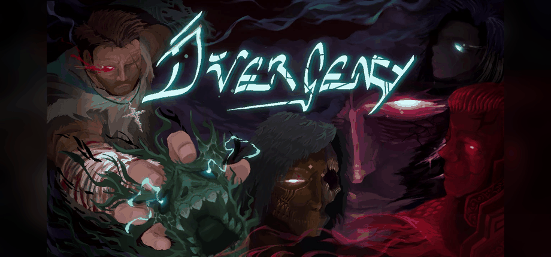
Divergency key art banner
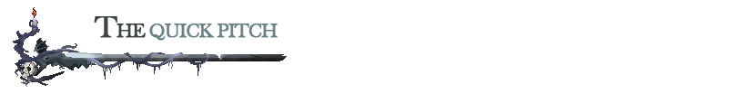
Divergency is built for players who love classic side-scrolling action refined with modern responsiveness, satisfying traversal, and tactical depth.
Dynamic Playable Cast: Five core fighters, each with their own weapons, weight, movement rhythm, and mechanical feel.
Deck-Based Skill Loadouts: Customize your approach before every mission. Select and carry only 4 active skills from a pool of over 10 unique abilities per fighter.
Real-Time Tactical Command: Direct your allies seamlessly in the heat of battle. Switch formations and call synchronized assist attacks to shatter enemy lines.
Handcrafted Pixel-Art World: Explore branching stages with hidden routes, environmental puzzle sections, and secret lore encounters.
A Dark Fantasy Narrative: A gripping campaign about grief, survival, relic fragments, and the heavy price of turning human beings into weapons.
The goal is not to make a simple arena brawler. Divergency is a complete, satisfying adventure campaign centered around combat mastery, party synergy, and a world that shifts as each relic fragment is revealed.
Divergency is inspired by games that made 2D action feel fast, readable, chaotic, and character-driven. These references explain the combat feeling, not the final art direction or story identity. Divergency has its own dark fantasy world, relic-fragment campaign, and party command systems.
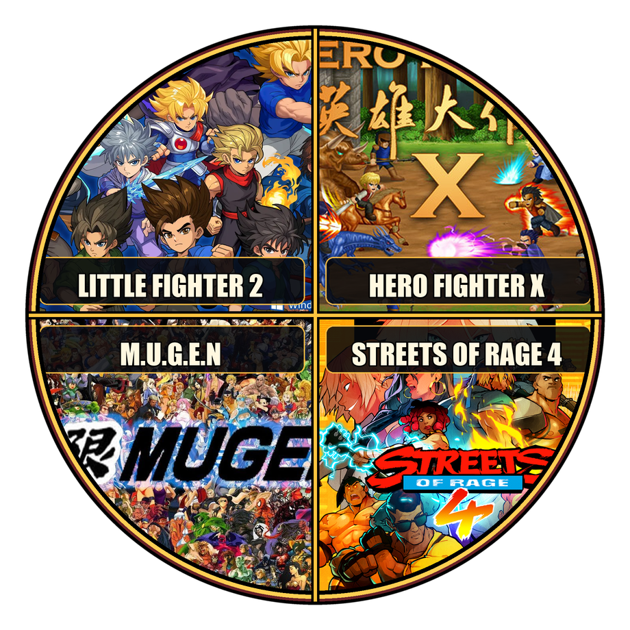
Four inspiration games: Little Fighter 2, Hero Fighter X, M.U.G.E.N, and Streets of Rage 4
The wheel highlights four references: Little Fighter 2, Hero Fighter X, M.U.G.E.N, and Streets of Rage 4. Classic arcade brawlers guide the 2.5D lane pressure, enemy waves, and stage pacing, while modern brawlers and action RPGs guide replayability, character identity, and loadout depth.
Combat in Divergency is defined by its speed, impact, and mechanical responsiveness. We want every strike, dash, and block to feel incredibly satisfying.
Fluid Traversal & Movement: Dash through lane pressure, cancel your attack animations to escape danger, and execute quick parries to turn the tide. Movement is not just a way to walk between fights—it is your primary survival tool, allowing for high-skill combat expressions.
Dynamic Physics & Hit-Stop: Every weapon impact features tailored visual hit-stop, camera shake, and screen-space particle effects that give combat a heavy, physical punch.
Encounter Pressure: You don't just fight passive targets. Enemy groups act in formations. Soldiers, shield bearers, ranged shooters, and brutal bosses force you to constantly reposition, break formations, and adapt your rhythm.
In Divergency, combat is about preparation as much as reflexes. Each fighter has access to an expansive pool of over 10 unique active skills, but you cannot bring them all. Before setting foot in a stage, you customize your combat deck by selecting only 4 active skills for the mission ahead.
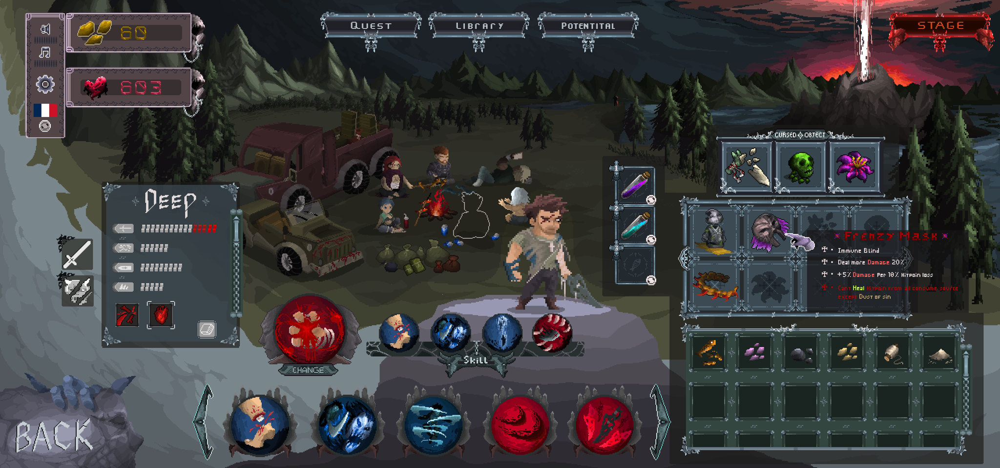
Character and mission selection UI
This limit changes how you approach each route:
Crowd Control Attunement: Equip wide-sweeping attacks, area pressure, and stun tools for dense enemy waves.
High Mobility Attunement: Bring dashes, air control, and traversal tools for hazard-heavy sections.
Guard-Breaking Attunement: Slot heavy impacts and shield-shattering strikes against defensive front lines.
Burst Damage Attunement: Pack high-damage finishers when preparing for major boss encounters.
The attunement system is designed to create tactical preparation without slowing down the action. You analyze the map, select your loadout, and immediately feel the weight of your choices in battle.
Skills are not static. As fighters level up, skill upgrades can improve damage, cooldown behavior, stamina or energy cost, and secondary effects.
You are not fighting this war alone. Divergency features a seamless, real-time player-to-AI command wheel that lets you orchestrate your squad without stopping the brawler action.
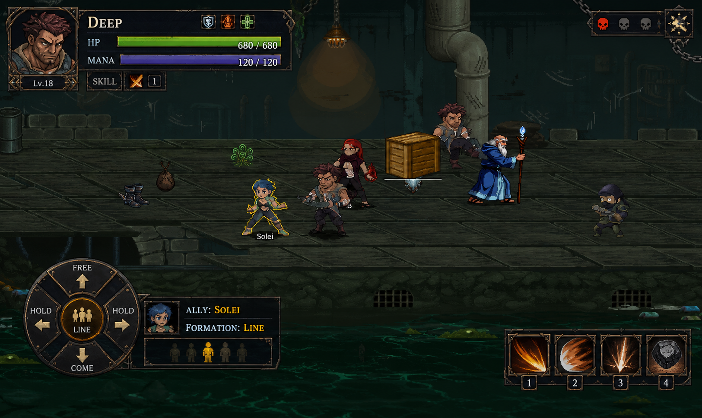
In-game ally command system
Quickly select a nearby ally and issue orders to coordinate attacks or protect your flanks:
Free: Release the squad back to independent AI behavior.
Come: Instantly regroup around the player's position.
Hold Left / Hold Right: Hold a specific flank to control lane pressure.
Line / Wedge / Circle: Shift the party's formation dynamically.
Synchronized Assist: Call a selected ally to trigger their signature support action (e.g., calling Block to drop a shield wall or Mark to throw smoke bombs).
While you brawl in real-time, the command system adds a satisfying layer of tactician control—pulling allies out of danger zones, locking down choke points, or calling in synchronized strikes exactly when a boss reveals a weak spot.
"I've fought in enough wars to know symbols don't bleed. People do."
Deep is a heavy melee fighter and former crusader who has survived too many wars. He hits hard, controls space, and carries the weight of a man who no longer wants to be used as a symbol.
Combat Style: Frontline Juggernaut / Crowd Control
Signature Weapon: Relic-Iron Greatsword
Movement Mechanic:[Developer Note: Replace this placeholder with your character details file data] (e.g., Heavy charge, ground slam cancels)
Squad Synergy: Absorbs frontline pressure, breaks shield formations, and peels enemies off vulnerable teammates.
"I'm still young. I still doubt. But when I run, I know exactly who I am."
Solei is young, fast, and confident when she moves, even when she still doubts herself. She is built for speed, pressure, and quick reads, trusting her movement before she trusts her certainty.
"Knowing where the enemy will be tomorrow is worth more than a thousand soldiers today."
Mark is a tactical veteran who works from the shadows. He reads the battlefield, gathers information, and supports the team when brute force is not enough.
Combat Style: Ranged Support / Battlefield Disruption
Signature Weapon: Silent Crossbow & Smoke Bombs
Movement Mechanic:[Developer Note: Replace this placeholder with your character details file data] (e.g., Tactical slide, smoke evasions)
Squad Synergy: Blinds enemies, slows down crowd movements, and provides cover so teammates can regroup.
"Every miracle has a price. Some choose to pay in steel; others, in blood."
Tulas is a blood and liquid mage. His abilities can create shields, platforms, filters, temporary paths, and dangerous offensive tools, but his power always carries a moral cost.
Combat Style: Area Denial / Platform Conjurer
Signature Weapon: Liquid Catalyst Core
Movement Mechanic:[Developer Note: Replace this placeholder with your character details file data] (e.g., Blood platform creation for lane elevation)
Squad Synergy: Creates defensive barriers and vertical paths, controlling the flow of the battlefield and shielding allies from harm.
"Call me boy or call me man. I'll stand on my own two feet and fight with my fists."
Block is a loyal young ally and defensive force. Saving him is one of the first campaign objectives, and his role reinforces the game's focus on trust, courage, party pressure, and commandable teamwork.
Combat Style: Pure Defensive Tank
Signature Weapon: Tower Aegis Shield
Movement Mechanic:[Developer Note: Replace this placeholder with your character details file data] (e.g., Stationary block parry, heavy shield bash)
Squad Synergy: Absorbs maximum damage, draws enemy aggro, and creates temporary invulnerability zones for the party.
Ghost begins as a nameless survivor pulled out of Jamerson's prison. The system cannot fully identify him, and that failure may be the reason the relic fragments cannot control him like everyone else.
Over 50+ enemies, each designed and animated by hand to demand a different strategy.
Human foes fight intelligently — shields protect gunners, ambushers flank, and no one fights to die.
NPC Marseille
Demons fight relentlessly — for death means nothing to them.
NPC Stage3
Bosses range from twisted mortals to nightmarish entities born from the Calamity itself.
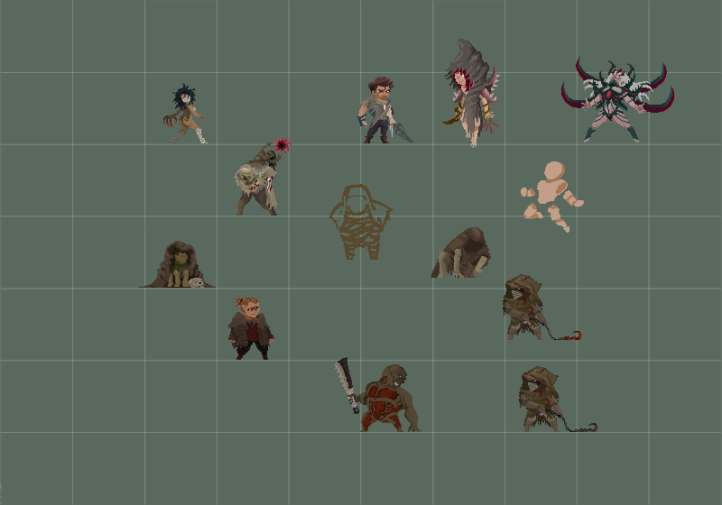
NPCs
Every miracle in Divergency leaves a wound.
Long ago, people killed a newborn creature from beyond their world, remembered as the Infant God. Its body was divided into five living relics: the Eye, Ear, Tongue, Heart, and Umbilical Cord. Each grants power, feeds on human desire, and seeks the others. Their survival is tied to recurring Calamities of disease and curses.
Deep, a former crusader, chose the rebuilt Marseille Autonomous Metropolis to raise his adopted niece Solei away from war. But behind its bright harbor and guarded streets, former officer Jamerson Obsworth uses refugees and prisoners as test subjects. He holds the Eye and believes it can awaken his infected daughter, Heniana, from cryogenic sleep.
When Block is captured while investigating the disappearances, Deep's team breaks into Bastonne Prison. They rescue Block, free Ghost--a nameless prisoner resistant to its drugs--and steal records proving that Jamerson is hunting the other relics. He believes their combined power can awaken Heniana.
That prison break is where the adventure begins. Branded as fugitives with nowhere safe left in Marseille, Deep's team follows Jamerson's trail across fractured lands. Each region holds another relic and another faction trying to use it. The team must reach the fragments first, uncover why the Calamities keep returning, and stop Jamerson from giving the Infant God a path back into the world.
Divergency is planned as a five-stage story campaign, with each major stage built around a relic fragment and a different way people justify cruelty.
Stage
Region
Focus
Stage 1
Marseille
Prison escape, undercity routes, gangs, secret police, research submarine
Stage 2
Sakuri
Sacred paths, hidden doors, identity, family, and the fragment called The Ear
Stage 3
Calvaria
Grave-city, old wars, false comfort, and the voices of the dead
Stage 4
Akam Meskul
Cursed mountain war zone, body horror, loyalty, and survival
Stage 5
The Cradle
Final relic convergence, memory, temptation, and the last test of the team
The core story is about refusing the easy lie that love, grief, faith, history, or survival can make sacrifice clean.
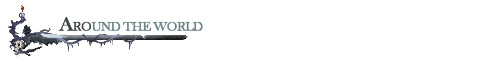
SlashArt
Divergency's world is built to feel dangerous, beautiful, and lived in. Its pixel art blends ruined industry, sacred landscapes, grotesque experiments, cursed wilderness, and hand-animated fighters into a dark fantasy campaign where every region has its own visual language.
Marseille's bright surface hides prisons, gangs, undercity routes, and forbidden laboratories. Sakuri's calm paths and sacred bridges conceal old manipulation. Later chapters move into grave-cities, cursed mountain war zones, and the dreamlike final space known as The Cradle, where grief, memory, and violence become physical places.
The stages are not just backdrops for arena fights. They include hidden routes, environmental details, puzzle moments, optional secrets, and quieter story beats between combat encounters. Exploration gives the world room to breathe, while each new region changes how battles feel and how the party moves through danger.
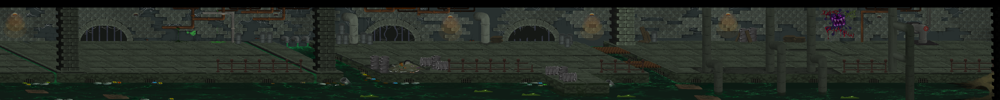
Marseille sewer route
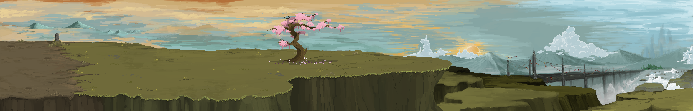
Sakuri bridge route
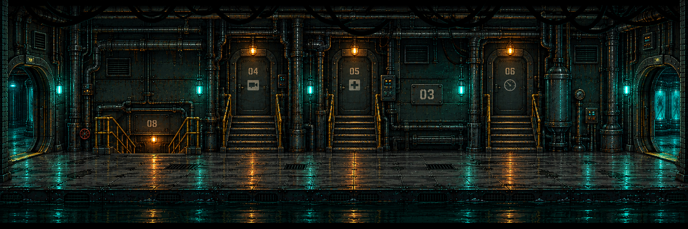
Submarine laboratory environment
Each chapter has its own combat identity. Marseille emphasizes tight industrial spaces, prison escapes, gang pressure, and the research submarine. Sakuri shifts toward sacred routes, hidden doors, identity, and corruption. Calvaria, Akam Meskul, and The Cradle push the campaign into stranger territory, changing the atmosphere, enemy pressure, and route design as the story moves closer to the relics.
Divergency is being built by a small independent team. Kickstarter support lets us keep the full story campaign as the priority and pay for the production work that turns the current playable build into a finished PC-first release.
The base campaign is focused on the main game, not extra modes. Funding goes toward the work backers will actually feel when they play: combat polish, stage content, playable character refinement, enemies, bosses, UI, audio, QA, release preparation, and reward fulfillment.
This campaign is completion funding for the full story campaign foundation. It does not mean every stretch feature is guaranteed at launch. Extra modes stay separated as stretch goals so the main campaign remains protected.
#Funding Goal: $20,000 - Full Story Campaign Foundation
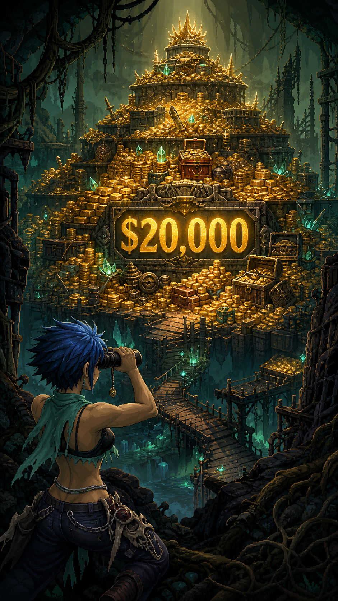
Solei scouting the $20,000 funding goal
The $20,000 base goal is completion funding for the main story campaign. It covers the work needed to turn the current playable build into a finished PC-first release: combat polish, stage implementation, playable character refinement, enemies, boss tuning, UI, audio, QA, launch preparation, and backer reward fulfillment.
Budget breakdown:
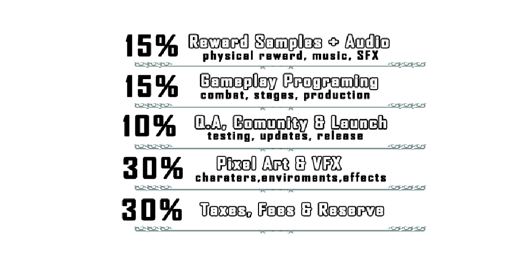
At a glance, the base goal is split between taxes, platform fees, and reserve (30%), gameplay programming and production (15%), pixel art and VFX (30%), QA/community/launch work (10%), music and sound effects , physical reward preparation (15%).
This draft uses a cautious fee and tax reserve because French micro-entreprise rates, VAT thresholds, and income-tax treatment depend on the final activity classification, year, and campaign total. The final public page should be checked against an accountant or official guidance before launch.
The roadmap starts with the protected $20,000 base goal. Everything above that is extra production scope. If a stretch feature threatens the main story release, the base campaign stays first and backers receive a clear production update.
Goal
Unlock
What it adds
$20,000
Full Story Campaign Foundation
Main campaign production, core combat, real-time squad commands, boss fights, QA, PC release, and digital delivery.
$30,000
The Arsenal: Skills, Items & Character Voices
Additional skill upgrades, new in-game items/relic pickups, expanded item art, and scoped character voice lines for combat barks and key story moments.
$40,000
Whispers of the Dead: Lore & Secrets
Hidden routes, character backstory events, secret rooms, and optional lore mini-boss encounters.
$50,000
Covenant of Two: LAN Network Co-op
2-player co-op over LAN/direct-IP network sessions, with separate screens, host/join UI, team-combo commands, and sync testing.
$60,000
Survival Modes & Boss Rush
Replay-focused combat modes, boss-rush structure, and expanded combat SFX polish.
This is a 24-month production plan from the end of the Kickstarter campaign, with physical reward shipping planned after the digital release window.
Window
Milestone
Month 0-1
Campaign wrap, backer survey preparation, production planning, reward validation
Month 1-3
Combat polish pass, clean gameplay capture, UI direction lock, production tools
Month 4-6
Stage 1 vertical slice: Bastonne, Marseille route flow, enemies, and first boss structure
Month 7-10
Stage 1 content build: Armorlite, Laundel, port ambush, submarine laboratory, and major experiment boss
Month 11-14
Stage 2 Sakuri and Stage 3 Calvaria content pass, relic mechanics, bosses, and story events
Month 15-18
Stage 4 Akam Meskul and Stage 5 The Cradle content pass, final systems, and campaign arc lock
Month 19-21
Full campaign alpha/beta: balancing, bug fixing, boss tuning, and backer feedback
Month 22-24
Polish: UI, audio, VFX, accessibility checks, localization pass, PC release candidate, digital rewards
Month 24-26
EU physical reward production and shipping window for poster, printed artbook, bracelet, and pixel accessory tiers
Backer-facing progress checkpoints are planned around visible milestones: combat polish footage, Stage 1 vertical-slice capture, stage-content updates, alpha/beta access for eligible tiers, and release-candidate updates.
Dates may shift if testing shows that a feature needs more work. If that happens, backers will receive clear updates explaining what changed, what is being fixed, and how it affects delivery.
Campaign currency is shown in USD in this draft. Physical rewards are EU-only at launch to keep fulfillment manageable.
Backer rewards should feel like a fair thank-you, not like random merchandise or a hidden store page. Every paid pledge tier includes campaign updates and one approved display name or alias on the digital supporter wall. Each tier includes the lower bundle named in its description; physical goods are included only in tiers that explicitly list them.
The eleven tier portraits turn the reward ladder into a visual descent through Divergency-style brainrot: the faces begin suspicious and controlled, then become furious, grinning, exposed, glitched, and finally fully mutated. The names follow the expression in each icon, while the reward descriptions stay literal about what backers receive.
The reward ladder for Divergency is built around six kinds of supporter value:
Recognition: one approved display name or alias on the digital supporter wall for every paid pledge tier, plus credits or beta credits where listed.
Digital gifts: wallpapers, avatar icons, a small lore dossier, Digital Evidence Pack PDF, soundtrack, Digital Field Artbook PDF, and the Field Relics Digital Art Sheet, a downloadable image/PDF page built from in-world relic and prop art.
Game access: the full PC digital key, an early-backer key tier, and beta access for feedback-focused backers.
Credits participation: a mid-priced digital tier for backers who want their approved name in the final credits without joining beta testing or physical fulfillment.
Collector objects: one poster, one printed Divergency Field Artbook/art zine, one Beacon bracelet, and one Pixel Character Patch & Keychain Set, with physical rewards limited to EU shipping at launch and any additional product concepts kept separate until confirmed.
Creative participation: limited higher tiers where backers can leave a short approved wall message or help shape one tightly scoped cosmetic or background-lore detail.
The rewards avoid pay-to-win items, exclusive combat power, or exclusive playable characters. Backers can receive access, recognition, development participation, and collector gifts, but the final game should remain fair for players who discover Divergency after Kickstarter.
Pledge
Reward
Supporter value
Estimated delivery
$5
Side-Eye Supporter
Campaign updates, one backer wallpaper, and one approved supporter-wall display name
Month 6 + Month 24
$10
Red-Eye Signal Pack
Side-Eye Supporter rewards plus a three-wallpaper set and avatar/icon pack
Month 6 + Month 24
$20
Crooked-Grin Early Bird, limited quantity
Red-Eye Signal Pack rewards plus a full PC digital game key at a lower early-backer price and mini lore dossier
Month 24
$25
Grim-Faced Recruit
Red-Eye Signal Pack rewards plus full PC digital game key and mini lore dossier
Month 24
$40
Skullgrin Deluxe
Grim-Faced Recruit rewards plus soundtrack, Digital Field Artbook PDF, Digital Evidence Pack PDF, and Field Relics Digital Art Sheet
Month 24
$60
Open-Mind Insider
Skullgrin Deluxe rewards plus one approved final-credits display name or alias and a credits-badge wallpaper variant
Month 24
$70
Brainrot Test Subject
Open-Mind Insider rewards plus beta access, private feedback form, and beta tester credit listing
Month 19-24
$95
Glitched-Out Scout, EU only
Brainrot Test Subject rewards plus one A3 Marseille/Divergency poster
Month 24-26
$120
Full-Meltdown Collector, EU only
Brainrot Test Subject rewards plus one A3 Marseille/Divergency poster, one printed Divergency Field Artbook/art zine, one Beacon bracelet, and one Pixel Character Patch & Keychain Set
Month 24-26
$250
Mind-Blown Scribbler, limited
Brainrot Test Subject rewards plus one approved short message/graffiti on a Bastonne prison wall
Month 24
$500
Final-Form Architect, limited
Brainrot Test Subject rewards plus one tightly scoped cosmetic or background-lore contribution
Each pledge uses one of the eleven expression-and-mutation portraits in imgs/campaign-panels/kick/reward as its visual identity. The portraits are tier mascots, not extra physical or in-game items. Physical product images are concept mockups; final materials and finishes may differ after vendor sampling. Potential add-ons are shown separately and are not included in any pledge unless they are confirmed before launch.
The Field Relics Digital Art Sheet is a downloadable visual/lore sheet showing in-world objects such as masks, tokens, vials, patches, and symbols with short captions. Field Relics remain art, lore, and cosmetic presentation--not paid equipment. Any relic or prop that appears inside the game will be discoverable or earnable by all players.
Choose your signal
Rewards At A Glance
Follow the signal from supporter recognition to digital rewards, beta access, collector goods, and tightly scoped creative participation. Every paid tier includes campaign updates and one approved name or alias on the digital supporter wall--never paid gameplay power.
Best digital value
$40 Skullgrin
Recognition tier
$60 Open-Mind
Collector goods
EU only
Gameplay promise
No paid power
Pledge Tiers
Recognition
$5 Side-Eye Supporter
Campaign updates, one backer wallpaper, and one approved display name or alias on the digital supporter wall.
Digital supporter pack
$10 Red-Eye Signal Pack
Side-Eye Supporter rewards plus a three-wallpaper set and avatar/icon pack.
Limited digital key
$20 Crooked-Grin Early Bird
Red-Eye Signal Pack rewards plus a full PC game key at the early-backer price and a mini lore dossier.
Standard digital key
$25 Grim-Faced Recruit
Red-Eye Signal Pack rewards plus a full PC game key and a mini lore dossier.
Recommended digital tier
$40 Skullgrin Deluxe
Grim-Faced Recruit rewards plus the soundtrack, Digital Field Artbook PDF, Digital Evidence Pack, and Field Relics Digital Art Sheet.
Recognition upgrade
$60 Open-Mind Insider
Skullgrin Deluxe rewards plus one approved final-credits display name or alias and a credits-badge wallpaper variant.
Feedback access
$70 Brainrot Test Subject
Open-Mind Insider rewards plus beta access, a private feedback path, and beta tester credit.
Light physical
$95 Glitched-Out Scout, EU only
Brainrot Test Subject rewards plus one A3 Divergency poster. Shipping is charged separately.
Physical collector
$120 Full-Meltdown Collector, EU only
Brainrot Test Subject rewards plus one A3 poster, one printed Divergency Field Artbook/art zine, one Marseille-inspired Beacon bracelet, and one Pixel Character Patch & Keychain Set. Shipping is charged separately.
Limited wall mark
$250 Mind-Blown Scribbler
Brainrot Test Subject rewards plus one approved message of up to 40 characters placed on a Bastonne prison wall.
Scoped collaboration
$500 Final-Form Architect
Brainrot Test Subject rewards plus one reviewed cosmetic or background-lore contribution. Limited to 3-5 backers.
Included Reward Previews
Product images are concept mockups. Final materials and finishes may differ after vendor sampling.
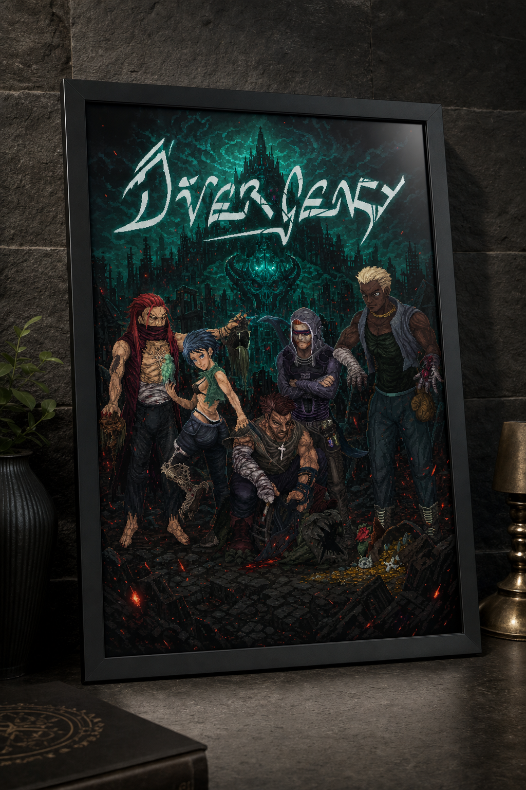
Guaranteed reward concept
A3 Divergency Poster
Included in the $95 Glitched-Out Scout and $120 Full-Meltdown Collector. Concept mockup; final paper stock and print finish may differ. Staging props are not included.
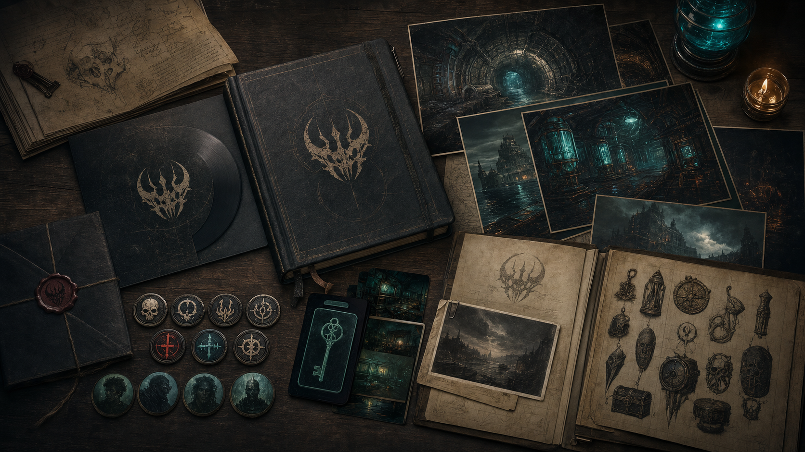
Digital + printed reward preview
Divergency Field Artbook
Digital PDF included from the $40 Skullgrin Deluxe tier upward. One printed artbook/art zine is included only in the $120 Full-Meltdown Collector, EU only. Staging props are not included.
Guaranteed reward concept
Marseille Beacon Bracelet
Included only in the $120 Full-Meltdown Collector. Concept mockup; final materials, sizing, and finish may differ after vendor sampling. Staging props are not included.
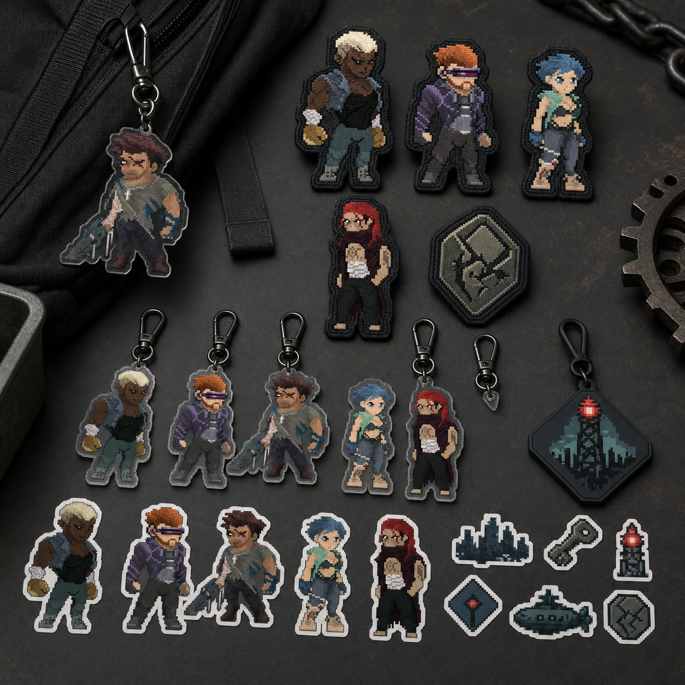
Guaranteed reward concept
Pixel Character Patch & Keychain Set
Included only in the $120 Full-Meltdown Collector, EU only. Concept mockup; final patch, sticker, acrylic charm, and bag-accessory counts may differ after vendor sampling. Staging props are not included.
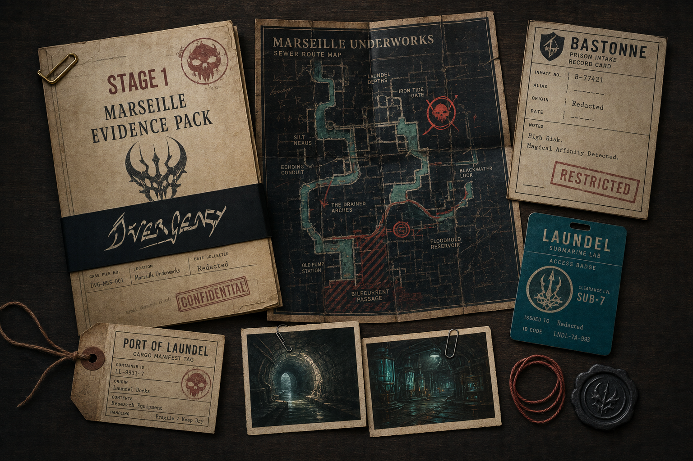
Guaranteed digital preview
Digital Evidence Pack
A downloadable PDF dossier included from the $40 Skullgrin Deluxe tier upward. This is a digital reward, not a physical packet.
Potential Add-Ons -- Not Included Yet
These concepts are not part of any pledge. Digital add-ons can be offered broadly; physical add-ons should stay limited to eligible EU physical tiers after production and shipping are confirmed.
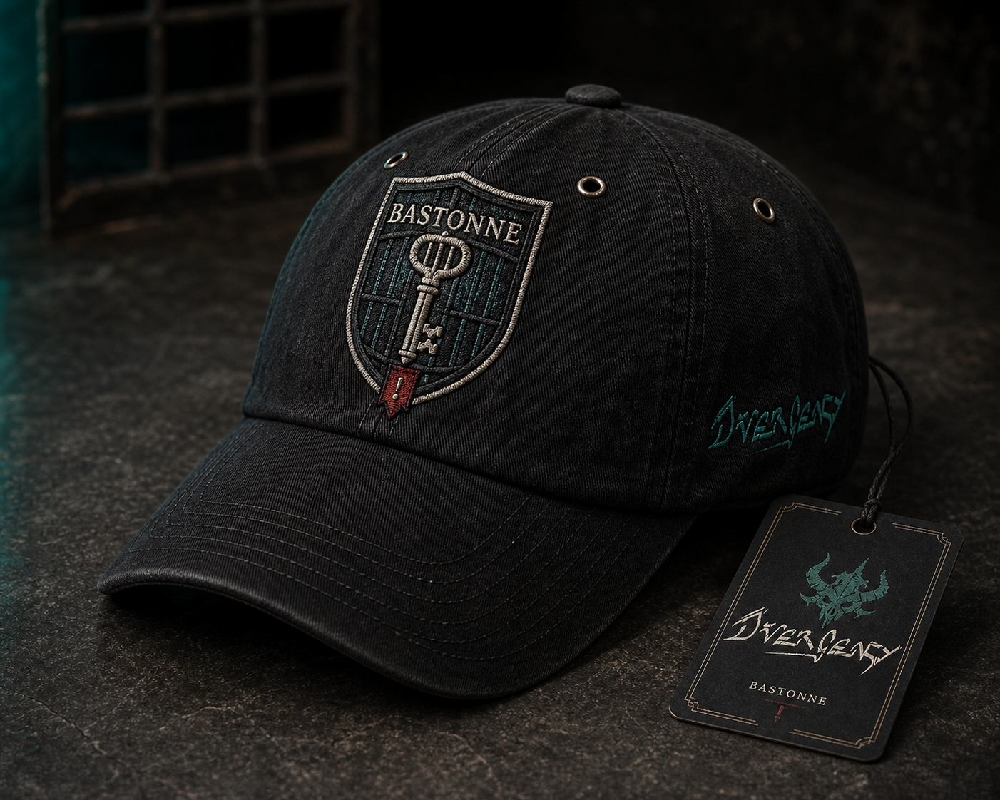
Potential add-on -- not included
Bastonne Cell Key Cap
A wearable concept that needs a vendor sample, adjustable-fit confirmation, package weight, and replacement policy before it can be offered.
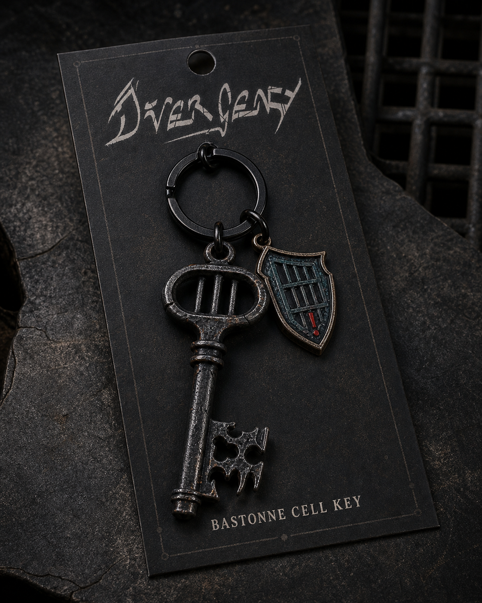
Potential add-on -- not included
Bastonne Cell Key Keychain
A compact concept that may work as an EU add-on after metal weight, packaging, minimum quantity, and shipping are confirmed.
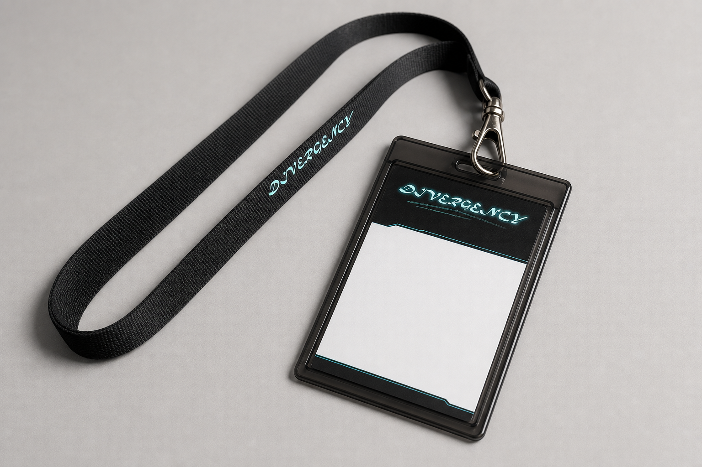
Potential add-on -- not included
Divergency Daily Access Badge
A lanyard-style concept that requires a print sample, supplier quote, package weight, and durability check before it can be offered.
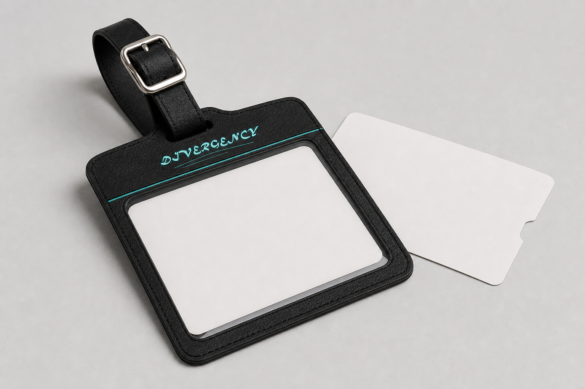
Potential add-on -- not included
Divergency Daily Cargo Tag
A Marseille-route concept that requires material, print-durability, packaging, and shipping confirmation before it can be offered.
The $5 Side-Eye Supporter tier gives a low-risk symbolic gift to people who mainly want to help. The new $10 Red-Eye Signal Pack fills the gap before the game-key tiers with a complete wallpaper set and avatar/icon pack, using digital assets already planned for the campaign.
The $20 Crooked-Grin Early Bird key gives the first supporters a clear reason to pledge early without lowering the normal game-key value for the whole campaign. The $25 Grim-Faced Recruit tier remains the standard digital copy, and extra keys can be handled as add-ons instead of a separate tier.
The $40 Skullgrin Deluxe, $60 Open-Mind Insider, and $70 Brainrot Test Subject tiers are the strongest digital-value tiers. The $40 tier is the clean global upgrade for music, art, lore, the Digital Field Artbook PDF, and Digital Evidence Pack material. The $60 tier adds visible recognition in the final game credits without forcing backers into testing. The $70 tier is for backers who actively want beta access and a feedback path while keeping fulfillment digital.
The $95 Glitched-Out Scout tier is the light physical option: one A3 poster plus the Brainrot Test Subject digital rewards. It adds shipping and packaging, but avoids a second manufactured object.
The $120 physical tier is priced above the digital tiers because it adds manufacturing, packing, shipping, damaged-package support, and address management. It should feel like the premium collector option, with the clearest collector anchor being the printed Divergency Field Artbook/art zine. The included items must stay exact: one A3 poster, one printed Field Artbook/art zine, one Beacon bracelet, and one Pixel Character Patch & Keychain Set unless another physical item is priced, sampled, and added to the tier before launch.
The creative backing tiers allow supporters to leave their mark on the game in a tiered, logical format that matches the world's dark fantasy identity:
At $250 (Mind-Blown Scribbler), backers gain a small, immersive storytelling opportunity that adds flavor to Bastonne without requiring new systems or complex assets.
At $500 (Final-Form Architect), backers collaborate on one tightly scoped cosmetic or background-lore contribution. This tier is strictly capped to avoid scope creep.
Add-ons can increase pledge value without creating too many reward tiers.
Digital add-ons can be offered broadly. Physical add-ons should be enabled only for eligible EU physical reward tiers, because Kickstarter does not show shippable add-ons to backers who selected a digital-only main reward.
Add-on
Suggested price
Notes
Extra PC digital key
$20-25
Best low-risk add-on because it has no shipping cost
Soundtrack + Digital Field Artbook
$15
Useful for backers who choose the standard game key but later want the deluxe digital pack
Digital Evidence Pack
$10-15
PDF-only upgrade for backers below Skullgrin Deluxe; do not present it as a physical packet
Final credits name upgrade
$10-15
Optional recognition upgrade for backers below Open-Mind Insider; one approved display name or alias only
A3 poster, EU only
$25 plus shipping
Keep to one poster size and one print vendor if possible
Printed Field Artbook/art zine, EU only
$25-40 plus shipping
Offer only after final page count, binding, paper stock, print quote, and package weight are confirmed
Beacon bracelet, EU only
$25-35 plus shipping
Offer only if unit cost, sizing, packaging, and replacement policy are confirmed
Bastonne cell key keychain, EU only
$12-18 plus shipping
Small physical add-on candidate; confirm metal weight, packaging, and minimum order quantity first
Bastonne cell key cap, EU only
$25-35 plus shipping
Potential wearable add-on; offer only after vendor samples, adjustable fit, packaging weight, and replacement policy are confirmed
Divergency Daily access badge, EU only
$12-18 plus shipping
Lanyard/badge add-on candidate; practical and visually clear but needs print/vendor quote
Divergency Daily cargo tag, EU only
$12-18 plus shipping
Travel/cargo tag add-on candidate; confirm material, print durability, and package weight
Final quantities should be locked before launch. Recommended limits: Crooked-Grin Early Bird around 200-300 backers, Glitched-Out Scout and Full-Meltdown Collector based on confirmed physical unit quotes, Mind-Blown Scribbler around 30-50 slots, and Final-Form Architect around 3-5 slots unless the team is certain it can absorb more review work.
Recommended featured reward: feature the $40 Skullgrin Deluxe for the broadest global appeal, or the $60 Open-Mind Insider if preview readers respond strongly to credit recognition. Do not feature an EU-only physical tier unless the campaign is intentionally focused on EU collectors.
Prepare visible sample images before launch for the wallpaper pack, Field Relics Digital Art Sheet, Digital Field Artbook, Digital Evidence Pack, lore dossier, poster, printed artbook/art zine, bracelet concept, and Pixel Character Patch & Keychain Set. Show the Bastonne cap only as a clearly labeled potential add-on until confirmed.
Any staged collector image must state exactly what is included. If envelopes, cards, tags, wax seals, or table props are only scene dressing, the caption must say they are not included.
Do not promise more than one poster size, one printed artbook size/binding, one bracelet design, one pixel accessory set, or multiple physical add-on variants unless production quotes are already confirmed.
Keep all supporter names subject to approval, character limits, and a final survey deadline.
Lock digital reward file formats before launch: JPG/PNG wallpapers, PDF dossier/artbook/Evidence Pack, MP3/WAV soundtrack, and Steam or platform key delivery where available. Lock the printed artbook page count, trim size, binding, paper stock, and proofing deadline before promising it as a physical item.
Reserve 5-10% extra physical items for damaged parcels, lost mail, and replacement handling.
Treat beta access as feedback participation, not as a guaranteed polished early version of the final game.
All in-game text, names, visual assets, and gameplay designs submitted by backers are subject to developer approval, editing, and revision to maintain appropriate tone, balance, and quality.
Collaborate on one scoped cosmetic or background-lore contribution.
Suggested options: name a minor non-interactive background NPC, help shape a weapon cosmetic skin, or help shape a passive skill badge icon.
Backers submit visual themes, color schemes, names, or short concepts.
To protect scope and game balance, this contribution does not add custom quests, new playable characters, stat advantages, active skill hitboxes, or unique combat mechanics.
No copyrighted or licensed characters, hate speech, explicit sexual content, real-world political targeting, or content that breaks immersion or Divergency's dark fantasy tone.
The development team keeps final approval on all names, designs, texts, dialogue lines, and mechanics.
If a submission does not meet guidelines, the backer will be asked to submit a revised proposal within a designated time window.
Physical rewards are limited to EU shipping for the campaign launch.
Planned shipping approach:
Ship-from region: France/EU.
Glitched-Out Scout or poster-only shipment estimated shipping: EUR 8-15 depending on EU destination.
Full-Meltdown Collector estimated shipping: EUR 12-22 depending on EU destination and final printed artbook weight.
Bracelet, printed artbook, Pixel Character Patch & Keychain Set, cap, keychain, badge, cargo tag, or combined collector shipment estimated shipping: EUR 12-22 depending on EU destination and final package weight.
Final country-by-country shipping prices should be entered before launch or confirmed through Kickstarter Pledge Manager before fulfillment.
Backer addresses and reward preferences will be collected through Kickstarter surveys or Pledge Manager.
Digital rewards will be delivered through Kickstarter digital rewards, game keys, or secure download links.
Physical add-ons should be available only to backers whose main reward tier includes physical shipping, so shipping rules stay simple and Kickstarter's add-on flow remains clear.
We are choosing EU-only physical rewards because posters, printed artbooks, and bracelets add packing, customs, replacements, and address-management work. Digital rewards remain available more broadly.
Combat-heavy games need iteration. Animation timing, hitboxes, enemy behavior, UI clarity, and difficulty balance can all take longer than expected. To reduce risk, the base goal focuses on the main story campaign first.
The full world of Divergency has room for more modes, side content, and playable variations than a small team should promise all at once. Stretch goals are separated from the base campaign so the core release stays protected.
Co-op in this stretch goal means LAN/direct-IP network play, not shared-screen couch co-op. That makes the feature heavier than same-screen play: it needs host/join flow, connection handling, gameplay-state synchronization, latency tolerance, save/session rules, co-op UI, and dedicated testing. Public matchmaking, relay-server infrastructure, PvP, and broader online-service features are not launch promises in this campaign draft. If they are explored later, they will be treated as separate technical work after the base game is stable.
The current release plan is PC-first. Any additional platform can require technical checks, store page review, certification, or extra porting work. Additional platforms will be considered after the base experience is stable.
Posters, printed artbooks, bracelets, and pixel accessory sets require production, packing, address collection, shipping, and replacement handling. To keep that manageable, physical rewards are EU-only at launch, with shipping estimates shown before backers pledge.
If the project hits delays or roadblocks, we will post clear updates explaining what happened, what is being fixed, and how it affects the schedule.
Divergency is for players who remember the joy of side-scrolling action, the tension of mastering a fighter, and the satisfaction of leading a small party through dangerous spaces.
Your support helps us finish the full story campaign, sharpen the combat, complete the world beyond Marseille, and bring Divergency's dark fantasy brawler to release.
Back Divergency and help us build a new 2D action game with skill loadouts, ally commands, handcrafted stages, and a story about refusing to sacrifice people for someone else's miracle.
Tài liệu này là bản đọc nhanh của tuyến truyện chính trong Divergency_Complete_Story_VI.md. Trọng tâm là mạch nhân quả: vì sao nhóm đi từ Bastonne đến Marseille, vì sao kế hoạch trốn thất bại, và vì sao từng Stage sau đó nối tự nhiên vào Stage kế tiếp.
Thế giới đã trải qua nhiều đợt Đại Họa, một căn bệnh/lời nguyền bắt nguồn từ những mảnh thân thể còn sống của một Thần Sơ Sinh bị con người giết và phân tách từ thời cổ đại. Những mảnh đó không chết. Chúng vẫn nhìn, nghe, gọi, đập và tìm đường trở về với nhau.
Jamerson Obsworth, một cựu sĩ quan của Marseille, mất gần như tất cả sau khi con gái Heniana mắc bệnh và phải ngủ đông. Ông tìm được Con Mắt, một mảnh của Thần Sơ Sinh, rồi tin rằng mình có thể cứu con bằng cách dùng tù nhân, người tị nạn và người bệnh làm vật liệu thí nghiệm. Jamerson không nghĩ mình là quái vật. Ông tin mọi tội ác đều có thể được biện minh nếu nó đưa Heniana trở lại.
Đội của Deep, Mark, Solei, Tulas và Block bị kéo vào bí mật này khi Block bị Jamerson bắt. Trong Bastonne, họ cứu Block và gặp một tù nhân vô danh về sau được gọi là Ghost/Stranger, người có khả năng kháng lại một phần ảnh hưởng của các mảnh thần. Từ đây, câu chuyện không còn là một cuộc trốn chạy khỏi Marseille, mà thành hành trình ngăn con người biến đau khổ thành lý do để hi sinh người khác.
Marseille là một đô thị tự trị giàu có, được bảo vệ nghiêm ngặt và tự quảng bá như thành trì cuối cùng của trật tự. Bên dưới vẻ sáng bóng đó là nhà tù, thí nghiệm, người mất tích và một bộ máy dùng nỗi sợ để vận hành thành phố.
Game mở bằng đội Deep chuẩn bị giải cứu Block, đồng minh thân thiết đã bị Jamerson bắt trong lúc điều tra. Người chơi có thể bắt đầu bằng Solei tại căn cứ để học chiến đấu và phối hợp đội, rồi chuyển sang nhiệm vụ Bastonne.
Kế hoạch Bastonne vỡ trận khi Jamerson kích hoạt lockdown, khí mê tràn hành lang và tù nhân bị đổi phòng. Trong hỗn loạn, Stranger tỉnh dậy dù lẽ ra phải bất tỉnh. Anh nghe lời nhờ của Block, có thể gây tiếng động để đội Deep tìm đến, rồi có thể giúp Block thoát khỏi khí mê hoặc bỏ qua để tự chạy. Block vẫn được cứu theo canon, nhưng lựa chọn của Stranger ảnh hưởng thương tích của Block và mức độ tin tưởng của đội.
Sau Bastonne, Stranger không còn là một tù nhân bình thường. Đội gọi anh là Ghost, vừa vì anh gần như vô danh, vừa vì hệ thống của Jamerson không nhận diện được anh.
Sau khi cứu Block, cả nhóm không định lao vào phòng nghiên cứu. Họ định cắt đuôi, giấu xe, nghỉ tạm ở Armorlite, rồi rời Marseille trước bình minh. Nhưng Jamerson đã phản ứng nhanh hơn. Cảnh sát mật treo thưởng trong thế giới ngầm, các băng nhóm canh lối ra, và garage an toàn bị lần ra.
Ở Armorlite, Jacques giúp Mark kiểm tra đường thoát. Nhưng băng đua xe và tay chân của thế giới ngầm tấn công quán. Sau trận, nhóm hiểu rằng đi đường mặt đất sẽ bị bắt hoặc bị bán đứng. Mark chuyển sang phương án B: đi xuống cống ngầm.
Cống dưới Marseille không chỉ là đường nước thải. Nó là tầng ruột của thành phố: đường bảo trì cũ, metro bỏ dở, chợ đen và nơi người nhập cư bị đẩy xuống sống. Nhóm đi qua Laundel, một thành phố ngầm có luật riêng, phe phái riêng và những người vừa sợ Jamerson vừa phải sống nhờ hệ thống của ông.
Từ Laundel, nhóm tìm được đường ra bến cảng. Tại đây có một khoảng lặng: mọi người nói về khả năng rời Marseille, bắt đầu lại ở phía đông, và thoát khỏi danh phận tội phạm. Nhưng chiếc thuyền hẹn trước trống rỗng. Cảnh sát mật phục kích. Boss là Marius Vane, cánh tay phải của Jamerson trong bộ máy mật, người xem tù nhân, người bệnh và dân nhập cư như chi phí vận hành.
Sau trận, nhóm tra hỏi lính cuối cùng và biết một đồng minh của Mark đã bị đưa xuống một tàu ngầm nghiên cứu ngoài khơi. Thuyền của cảnh sát mật có autopilot đến đó. Từ đây, họ không còn chỉ trốn nữa: nếu bỏ đi, bằng chứng và những người bị bắt sẽ chìm xuống biển.
Trong tàu ngầm, nhóm thấy sự thật về Jamerson: tù nhân bị nối vào máy móc, cơ thể lai, mẫu tế bào mang ký hiệu Heniana, và các thí nghiệm dùng cấu trúc sinh học của Thần Sơ Sinh để tạo vật chứa mới. Boss là SheMal, một thất bại hoàn hảo: không còn là người bình thường, nhưng cũng không phải quái vật vô tri.
Tàu ngầm sụp đổ. Nhóm tưởng Jamerson chết, nhưng ông đã thoát bằng thân xác thế mạng, mang dữ liệu và dấu vết dẫn tới Sakuri. Kết thúc Stage 1, nhóm có bằng chứng về Heniana và hiểu rằng đứa trẻ nằm giữa tội ác của Jamerson vẫn còn sống hoặc ít nhất còn được giữ trong trạng thái mong manh. Họ rời Marseille để truy đuổi ông.
Nhóm cập bến bán đảo phía đông, nơi Cái Tai được thờ phụng như quyền năng của "Thánh Công Chúa" Sakuri. Tuy nhiên, mảnh đất cội nguồn của mẹ Solei không hề thanh tịnh mà là một chiến trường cung đấu ngầm khốc liệt giữa ba thế lực:
Phe Lãnh Chúa & Quan Nhiếp Chính (Nội Đình Masatomo): Tôn sùng Sakuri nhưng giam lỏng cô như một tù nhân quý giá. Họ thắp Hắc Trầm Hương (Poisoned Incense) tẩm độc dược để làm tê liệt cảm xúc của Sakuri, ép cô nghe lén đối thủ để tước đoạt mỏ bạc và đất đai, đồng thời ngấm ngầm thỏa thuận bán mẫu máu của cô cho Jamerson để đổi lấy vũ khí cơ giới phương Tây.
Phe Giáo Sĩ Tế Lễ (Đền Ngầm Kanzaki): Tôn sùng "Thánh Huyết" trích xuất từ Cái Tai để thanh lọc dịch bệnh, bí mật giam giữ và thủ tiêu các thánh nữ tiền nhiệm phát điên dưới sàn gỗ sân khấu kịch Noh hoang phế.
Tàn Dư Gia Tộc Ryozan (Võ Tướng): Lực lượng thị vệ trung trinh từng muốn cứu đứa trẻ Sakuri thoát khỏi lồng giam cung đình nhưng bị vu oan tội mưu phản và hành quyết.
Tại làng chài ven biển, nhóm gặp Heni, cô bé có gương mặt giống hệt Heniana. Cha nuôi cô là điệp viên của Jamerson, âm thầm ghi chép sức khỏe và gửi mẫu máu về Marseille. Khi lên chợ trung tâm thủ phủ, Heni bàng hoàng nhìn thấy những đứa trẻ quý tộc tranh nhau mua búp bê sứ mang gương mặt mình như một món đồ chơi đem lại may mắn. Lần đầu tiên, Heni cảm nhận sâu sắc nỗi nhục nhã khi một sinh mạng vô tội bị thương phẩm hóa.
Trong khi đó, Solei bị chính tộc nhân của mẹ xua đuổi là "kẻ lai căng ngoại lai". Nhưng khi đột nhập tàng thư các cũ của cung điện, Solei tìm thấy chiếc chuông gió bằng ngọc và nhật ký của mẹ: Mẹ Solei từng là dưỡng mẫu nuôi nấng Sakuri từ thuở ẵm ngửa. Chính bà đã liều mạng phản đối nghi lễ niêm phong mắt tàn bạo năm Sakuri lên sáu tuổi và bị khép tội mưu phản phải vượt biển trốn sang Marseille. Khoảnh khắc này giúp Solei trưởng thành vượt bậc về tâm lý: cô rũ bỏ mặc cảm thân phận con lai, nhận ra giá trị của bản thân nằm ở sự thấu cảm và bảo vệ kẻ yếu thế, coi Sakuri như người em gái chịu nhiều bi kịch cần được chở che.
Sakuri bị Cái Tai tra tấn tinh thần suốt mười năm ròng rã vì phải nghe khoảng cách ghê tởm giữa lời nịnh bợ bên ngoài và ý nghĩ toan tính mưu sát bên trong. Khi vượt qua đền ngầm (hạ gục Rết Song Kiếm) và tiến lên đỉnh núi tuyết, nhóm đối đầu với Sakuri trong cơn khát máu điên cuồng vì quá tải bởi hàng triệu lời dối trá.
Đỉnh điểm xúc động diễn ra khi Sakuri đọc thấu tâm trí cả đội: cô thấy nỗi sợ sai lầm của Mark, sự mệt mỏi của Deep, sự hư vô của Ghost. Nhưng khi chạm vào Solei, lần đầu tiên trong đời Sakuri nghe thấy một tâm hồn hoàn toàn không có lời nói dối! Solei hạ kiếm, cất tiếng hát ru của người mẹ dưỡng mẫu hòa cùng âm vang chuông gió ngọc và lời dặn của Tướng quân Ryozan ("Trên đỉnh núi tuyết, khi vạn vật chìm vào im lặng, cháu có thể nghe thấy cả tiếng thở của chính mình"). Sakuri rơi lệ, buông rơi móng vuốt và ngã vào vòng tay của Solei trong sự thanh thản tuyệt đối. Cả hai cùng giải thoát khỏi xiềng xích của dòng tộc và định kiến xã hội.
Jamerson bất ngờ xuất hiện qua kênh ngầm, cướp dữ liệu Cái Tai và mang Heniana rời đi hướng Calvaria (Cái Lưỡi). Heni kiên quyết nắm chặt tay Solei bước tiếp cùng đội của Deep.
Calvaria là thành phố mộ, nơi người sống trả tiền để nghe người chết nói. Giáo hội Hơi Thở Cuối nắm giữ Cái Lưỡi, mảnh thần có thể giả giọng người chết, dịch ngôn ngữ cổ và biến lời nói thành mệnh lệnh.
Ban đầu, giáo hội dùng Cái Lưỡi để an ủi người mất thân. Nhưng an ủi dần thành dịch vụ, dịch vụ thành quyền lực, quyền lực thành nhà tù. Người giàu mua lời tha thứ. Người nghèo bán xương, bán tên, bán cả nỗi đau để được nghe một câu cuối cùng.
Stage này nên là nơi đào sâu nhất vào Deep và Mark. Cái Lưỡi không chỉ giả giọng người chết; nó nói thẳng vào tim gan ruột của người nghe. Nó nhắc Deep về những cuộc chiến xưa, những đồng đội đã chết, những bức tượng anh hùng xây bằng xác người, và câu hỏi liệu đời anh còn ý nghĩa gì nếu anh không còn làm biểu tượng. Với Mark, nó moi lại các quyết định bẩn, những người anh không cứu được, sự mệt mỏi vì cứ phải làm người tỉnh táo sau mỗi thảm họa, và nỗi sợ rằng anh chỉ đang tiếp tục chiến đấu vì không biết sống kiểu khác.
Calvaria vì vậy không chỉ là stage về cái chết, mà là stage về sự kiệt sức sau chiến tranh. Điểm sáng cảm xúc đắt giá nhất của Deep nằm ở khoảng lặng bên Sông Oán Hận (âm hưởng chuyến du hành cõi âm Odyssey / Nekyia): anh tình cờ hội ngộ linh hồn của đúng 2 người đồng đội/anh hùng đã khuất bên ngọn lửa ma trơi. Người thứ nhất là Vance "Mắt Chim" – tay thiện xạ lém lỉnh, vừa gặp đã cười hề hề ("hé hé") trêu Deep giải ngũ đi làm "bảo mẫu" dắt con nít và xóa nợ chầu rượu cũ vì mừng thấy bạn lành lặn. Người thứ hai là Đại úy Balthazar – người anh cả từng chết thay Deep, nay vạch trần thói buôn thần bán thánh của Giáo hội và giải thoát Deep khỏi mặc cảm sống sót: "Người chết đã xong phận sự, hãy sống vì người sống và đập nát cái mồm dối trá của Cái Lưỡi".
Jamerson đến trước nhóm và bắt Cái Lưỡi nói bằng giọng Heniana. Khi giọng ấy hỏi liệu Heniana tỉnh dậy có còn nhận ra cha không, Jamerson vượt qua ranh giới cuối cùng: ông không còn chỉ muốn cứu con gái, mà muốn sở hữu một phiên bản không thể từ chối mình.
Boss Stage 3 là Dàn Hợp Xướng, một cơ thể xương khổng lồ ghép từ giọng nói, hài cốt và lời cầu nguyện. Nó thử từng nhân vật bằng giọng người chết: Mark bị kéo về tội lỗi cũ, Solei bị ép chọn một căn tính duy nhất, Heni bị buộc biến mất để trả chỗ cho Heniana, và Ghost bị gọi bằng một cái tên cũ chưa chắc còn thuộc về anh. Riêng với Deep, khi quái vật mượn giọng Balthazar và Vance để ép anh cầm cờ tử đạo, anh nhếch mép cười vì đã thấu hiểu tâm nguyện của họ, rồi tung đòn tất sát đập tan ảo ảnh.
Với Ghost, Stage 3 chỉ nên mở thêm một khe hở, chưa giải thích hết. Cái Lưỡi có thể gọi một tên cũ, nhắc đến một phòng trắng, một mã hồ sơ bị xóa, hoặc một câu nói mà Ghost chưa từng kể với ai. Người chơi hiểu rằng Ghost có quá khứ thật, nhưng chưa biết đó là quá khứ của nạn nhân, vật thí nghiệm, hay một thứ gì phức tạp hơn.
Sau chiến thắng, nhóm hiểu sự thật lớn hơn: Thần Sơ Sinh có thể không chủ động nguyền rủa thế giới. Các mảnh thân thể bị giữ lại quá lâu đang phát ra một tiếng gọi méo mó. Con Mắt nhìn, Cái Tai nghe, Cái Lưỡi gọi, Trái Tim đập. Khi những tín hiệu đó chạm vào con người, chúng thành bệnh, ảo giác, cuồng tín và ham muốn hồi sinh.
Nhóm nhận ra không thể chỉ phá từng mảnh, cũng không thể hồi sinh thần. Họ phải tìm nơi tiếng gọi bắt đầu: Dây Rốn. Nhưng trước đó, họ phải đi qua Akam Meskul, nơi Trái Tim đang đập.
Akam Meskul không chỉ là vùng núi tử địa nơi thánh long gục ngã, mà là Vực Thẳm Tiền Mộng (The Liminal Threshold) – ranh giới mong manh nơi thực tại bắt đầu rạn nứt trước sóng ý thức của Thần Sơ Sinh. Xác thánh long Akam Meskul đâm xuyên núi đá, hóa thạch thành con đường độc đạo dẫn vào vùng cấm.
Ở đây có hai phe lớn đối đầu trong một cuộc chiến biến dạng: Con Cháu Chiếc Nôi (biến phục thù thành thánh chiến cuồng tín) và Tàn Dư Sáu Vương Quốc (biến sinh tồn thành bạo lực kỹ trị). Nhưng đáng sợ hơn cả vũ khí là hiện tượng Mộng Du Tập Thể (Somnambulism): nhịp đập từ Trái Tim thần ru ngủ hàng ngàn binh sĩ, biến họ thành những con rối vừa chém giết vừa lẩm bẩm đồng dao cổ với đôi mắt phát sáng xanh.
Tại đây, thân thế của Stranger / Ghost dần phát lộ: những kẻ mộng du quỳ rạp trước anh, xem anh là một thực thể thức giấc sớm hơn cả Chiếc Nôi. Trong lòng xác rồng, khi không gian bị bẻ cong, Ghost vô thức bước xuyên qua vách xương đá như một bóng ma ngoài vũ trụ với ánh mắt hố đen vô tận. Đồng thời, tại phòng lưu trữ của Tàn Dư, anh phát hiện hồ sơ mật về Dự án STRANGER - Prototype Zero, xác nhận thể xác mình từng bị một thực thể lang thang ngoài không gian xâm nhập.
Trọng tâm cảm xúc của Stage 4 gắn chặt với Tulas và Block. Tulas đối mặt với ranh giới cấm kỵ khi dùng thuật máu để thanh tẩy chất độc mộng mị trong huyết quản đồng đội, chấp nhận bị kinh sợ để cứu lấy sinh mạng. Block trở thành trụ cột kiên cường nhất, dùng khiên và thân mình chống đỡ vòm xương sụp đổ, bảo vệ dân thường và biến sức mạnh thành nơi trú ẩn an toàn.
Trong khi đó, Heni rơi vào cơn sốt mê man và kết nối ngoại cảm trong mơ với Heniana (đang nằm trong buồng ngủ đông), nghe được lời cảnh báo về bản chất thật của sự hồi sinh mà Jamerson mù quáng theo đuổi.
Tại đỉnh Kardias, Trái Tim bị Tàn Dư gắn vào cỗ máy Titan Trái Tim. Khi Jamerson dùng Con Mắt, Cái Tai và Cái Lưỡi cưỡng ép Trái Tim đập theo nhịp Heniana, cỗ máy biến thành Quái Vật Mộng Nộ tàn sát tất cả. Cả đội phối hợp dập tắt cỗ máy chiến tranh: Block chặn đòn, Tulas hóa giải máu độc, Solei chém đứt xích neo, Deep phá hủy lõi bộc phát.
Khi Titan sụp đổ, một tiếng nổ siêu thanh xé toạc bầu trời đỉnh núi, mở ra Khe Nứt Xanh Lam (The Blue Rift) dẫn thẳng vào The Cradle (Cõi Mộng Của Thần). Jamerson ôm buồng ngủ đông nhảy qua miệng vực. Giữa cơn bão không gian, Ghost cất tiếng nói đầu tiên bằng giọng nói cổ xưa của thực thể Stranger: "Cõi Mộng đã mở... và kẻ lạ mặt phải trở về." Deep đã kịp lao tới nắm chặt cổ tay anh, dùng tình người để kéo nhân tính của Ghost trở lại trước khi anh bị nuốt chửng. Cả đội nắm chặt tay nhau, cùng nhảy qua khe nứt ánh sáng xanh, chính thức bước vào thế giới siêu thực của Stage 5.
#Stage 5 - The Cradle: Cõi Mộng Xanh & Sự Thức Tỉnh Của Stranger
The Cradle (Chiếc Nôi) là một không gian siêu thực nằm ngoài ranh giới vật lý, ngập tràn sắc xanh lam - ngọc bích của biển sao vô tận. Các mảnh vỡ ký ức từ Marseille, Sakuri, Calvaria và Akam Meskul trôi nổi lơ lửng, tạo thành một bài kiểm tra tâm linh cuối cùng cho cả đội qua 3 tầng ảo mộng:
Tầng 1 - Ký Ức Đảo Chiều: Từng nhân vật đối mặt với những ảo ảnh hạnh phúc giả tạo quyến rũ. Đội kiên định từ chối các lối tắt dối trá; Ghost sử dụng thể trạng dị thường của Prototype Zero để mở toang cánh cổng không hồ sơ dẫn vào tầng sâu.
Tầng 2 - Phòng Gương Tâm Trí: Ý thức của Heni hòa nhập vào tâm trí buồng ngủ đông của Heniana qua mặt nước phản chiếu dải ngân hà. Hai cô bé tìm thấy sự thấu hiểu sâu sắc và cùng khẳng định quyền tự quyết của bản thân. Đồng thời, nhóm dập tắt bạo lực giữa Con Cháu Chiếc Nôi và Tàn Dư dưới chân đài tế.
Tầng 3 - Dây Rốn Vũ Trụ & Jamerson: Jamerson hợp nhất 5 mảnh thần để hồi sinh Heniana, nhưng nhận ra mình chỉ đang tạo cánh cửa cho thần linh nuốt chửng thế giới. Khi Heniana tỉnh lại và từ chối sống bằng cái giá hủy diệt, Jamerson suy sụp và bị Con Mắt chiếm đoạt thành The Father-Eye trước khi bị cả đội đánh bại.
Boss Ẩn Tối Thượng – THE DREAM SOVEREIGN (Stranger Thức Tỉnh): Nếu Ghost đạt Độ Nhiễu 100% hoặc người chơi kích hoạt tài liệu Dự Án STRANGER, năng lượng Dây Rốn Vũ Trụ đánh thức thực thể cổ xưa ngoài không gian bên trong anh. Ghost bị tước quyền kiểm soát, biến thành The Dream Sovereign bẻ cong thực tại cõi mộng. Không dùng bạo lực tiêu diệt, cả đội phối hợp sử dụng các lệnh COMMAND để tạo kết giới tình đồng đội (The Tether of Humanity), lần lượt gọi tên thật và nhắc lại ký ức hành trình để thức tỉnh nhân tính của Ghost, trục xuất thực thể Stranger trở lại cõi hư không.
Hành trình khép lại bằng Nghi Lễ Ngược: Heni hát khúc ca ru an ủi Thần Sơ Sinh, Ghost cắt mạch Con Mắt, Dây Rốn tan thành ánh sáng sao bay về vũ trụ. Thế giới thoát khỏi bóng ma Đại Họa, Heniana thở được nhịp thở đầu tiên của một con người bình thường, và Ghost bước đi tự do cùng những người bạn đã cứu rỗi linh hồn anh.
Đại Họa không biến mất ngay, nhưng thế giới bắt đầu nhẹ đi: sông bớt đen, cơn sốt đến chậm hơn, trẻ sinh ra ít mang vết bệnh hơn. Marseille mất bí mật lớn nhất của Jamerson và phải đối diện với bằng chứng về Bastonne. Laundel không thành thiên đường, nhưng người dưới thành phố có thêm một câu chuyện để kể.
Sakuri trở thành cảnh báo về việc biến trẻ em thành thánh nhân. Calvaria mất quyền giả giọng người chết, buộc người sống tự nói lời tạm biệt. Akam Meskul vẫn nguy hiểm, nhưng hai phe không còn bảo vật để biến chiến tranh thành định mệnh.
Heniana còn sống hay không được để mở theo hướng bittersweet: cô có thể thở một mình trong thời gian ngắn, được Heni nắm tay, và được nghe lần đầu không phải tiếng máy móc. Heni không thay thế Heniana. Heni sống tiếp như một con người riêng, mang khuôn mặt giống Heniana nhưng không còn bị định nghĩa bởi khuôn mặt đó.
Ghost rời The Cradle cùng đồng đội. Khi Mark hỏi anh có muốn tìm lại tên cũ không, Ghost đáp rằng nếu ngày nào đó cần, anh sẽ tìm. Hôm nay, anh đã có người gọi.
Divergency không nói rằng đánh bại boss cuối sẽ xóa sạch đau khổ. Câu chuyện nói điều khó hơn: có những mất mát không thể đảo ngược, và chính việc chấp nhận điều đó mới ngăn con người biến tình yêu, niềm tin, an ủi, lịch sử hoặc sinh tồn thành giấy phép để hi sinh người khác.
Nhóm nhân vật chính thắng vì họ từ chối suy nghĩ như kẻ thù: không biến Heniana thành lý do, không biến Heni thành bản sao, không biến Ghost thành người được chọn, không biến người chết thành mệnh lệnh cho người sống, và không biến bất kỳ ai thành vật liệu cho một phép màu.
#Hệ thống tên gọi và ý nghĩa (Name & Meaning Tables)
Dưới đây là bảng tra cứu chi tiết tên gọi của các nhân vật, môi trường, màn chơi (Stage) và các thực thể quan trọng trong Divergency, kèm theo ý nghĩa biểu tượng và động lực sáng tạo đằng sau mỗi cái tên.
#1. Nhân vật chơi được (Playable Characters / Players)
Tên Nhân Vật
Ý Nghĩa Chữ Viết & Biểu Tượng
Vai Trò & Động Lực Sáng Tạo
Deep
"Sâu thẳm" / "Trầm lặng"
Phản ánh nội tâm sâu sắc, sự chịu đựng và quá khứ đầy vết thương chiến tranh. Anh muốn chôn vùi danh vọng anh hùng cũ để sống một cuộc đời bình dị, bảo vệ Solei.
Solei
Gốc từ "Soleil" (tiếng Pháp nghĩa là Mặt Trời)
Tượng trưng cho ánh sáng mặt trời rực rỡ, nhiệt huyết tuổi trẻ và hy vọng ấm áp chiếu rọi vào cuộc đời u tối của Deep. Cô tìm kiếm căn tính độc lập của mình.
Mark
Gốc Đức cổ (Heimeric - "Người bảo hộ gia quyến")
Thể hiện vai trò là người dẫn dắt, lập kế hoạch, giữ sự tỉnh táo và gánh vác trách nhiệm bảo vệ sự an toàn cho cả nhóm.
Đại diện cho sự thanh lọc và cứu chữa. Năng lực điều khiển chất lỏng/máu của anh vừa hữu ích vừa đáng sợ, đặt ra câu hỏi về ranh giới giữa cứu người và cấm thuật.
Block
"Khối chắn" / "Tấm khiên"
Đúng như tên gọi, anh là người cản hậu kiên cường, tấm khiên bảo vệ đồng đội bằng cơ thể vững chãi, tượng trưng cho lòng tin vững chắc trong đội.
Ghost / Sarrasin
Ghost: Bóng ma vô hình<br>Sarrasin: Kiên cường như lúa mạch đen
Ghost là biệt danh do đội đặt vì hệ thống không nhận diện được anh. Tên thật của anh là Sarrasin (loại lúa mạch đen hoang dã, có thể sinh trưởng kiên cường ở những vùng đất sỏi đá khắc nghiệt nhất) – tượng trưng cho việc anh là "lỗi sai hệ thống" sống sót qua các thí nghiệm tàn bạo nhất của Jamerson.
Phản diện chính của câu chuyện. Ông sẵn sàng chiếm đoạt mạng sống của người khác để hồi sinh con gái mình, bám víu vào tình cha con ích kỷ đến mức mù quáng.
Heniana
Kết hợp từ Hana (đóa hoa) và Hen (cô độc)
Con gái của Jamerson, đóa hoa cô độc bị giam cầm trong buồng ngủ đông, nguồn cơn gián tiếp dẫn đến mọi thí nghiệm tàn độc của cha mình.
Heni
Bản thể rút gọn từ tên Heniana
Cô bé nhân bản từ Heniana ở làng chài. Cái tên thể hiện sự độc lập: cô không phải là bản sao hay công cụ thay thế cho bất kỳ ai mà là một con người tự do riêng biệt.
Jacques
"Kẻ nâng đỡ" / "Người dẫn đường"
Bartender đứng tuổi ở quán bar Armorlite, người âm thầm chỉ lối và hỗ trợ nhóm đi qua cống ngầm Marseille khi bị dồn vào ngõ cụt.
Marius Vane
Marius: Chiến tranh lạnh lùng / Vane: Chong chóng đón gió
Cảnh sát mật của Marseille. Hắn xem con người như những con số chi phí vận hành, kẻ cơ hội phục vụ cho bất kỳ kẻ mạnh nào để duy trì trật tự bề ngoài.
SheMal
Ghép từ She (cô ấy) và Mal (bệnh dịch / ác quỷ)
Trùm của Stage 1, một vật thí nghiệm thất bại hoàn hảo bị biến đổi cơ thể, đại diện cho nỗi đau đớn và tiếng thét vô vọng của những nạn nhân dưới tay Jamerson.
Sakuri / Sakura
"Hoa anh đào" mong manh trước gió
Thánh nữ của bán đảo phía đông. Cái tên tượng trưng cho số phận mong manh bị giam cầm trong cung điện, phải lắng nghe những tiếng thì thầm dối trá của thế gian.
Aramut
"Vực thẳm" / "Sự hy sinh quên mình"
Người anh hùng huyền thoại cổ đại đã hy sinh bản thân để tiêu diệt và phân tách Thần Sơ Sinh đầu tiên, bảo vệ nhân loại.
The Father-Eye
"Cha-Mắt" (Sự kết hợp quái dị)
Trùm cuối do Jamerson biến thành khi bị Con Mắt nuốt chửng hoàn toàn. Thể hiện sự biến dạng kinh hoàng khi tình yêu thương bị biến thành sự chiếm đoạt vô độ.
---
#3. Khu vực & Môi trường (Environments & Locations)
Tên Môi Trường
Ý Nghĩa Chữ Viết & Biểu Tượng
Vai Trò & Động Lực Sáng Tạo
Armorlite
"Giáp nhẹ" / "Đá lửa ẩn mình"
Quán bar/Safehouse của Jacques giữa Marseille. Nơi ẩn náu tạm thời giúp nhóm nghỉ ngơi, vá víu vết thương trước khi đối mặt với cuộc truy đuổi của cảnh sát mật.
Laundel
Kết hợp từ Launder (rửa trôi) và Dell (thung lũng)
Chợ ngầm trong ga metro bỏ dở dưới lòng đất Marseille. Nơi nước thải thành phố và những mảnh đời nhập cư bị gạt bỏ cùng trôi về và nương tựa vào nhau.
Mizero Honor
Mizero (Hy vọng trong tiếng Rwanda) & Honor (Danh dự)
Tên của chiếc tàu ngầm nghiên cứu ngoài khơi. Ban đầu được Jamerson đặt với hy vọng cứu sống con gái một cách danh dự, nhưng cuối cùng lại biến thành một phòng thí nghiệm đen tối dưới đáy biển sâu.
Naminoura
"Sóng vỗ bờ" trong tiếng Nhật
Làng chài hoang tàn ở bán đảo Sakuri, nơi đón nhận những tiếng rì rầm của sóng biển mang theo tiếng gọi tiềm thức của Cái Tai.
Gekkoukan
"Nguyệt Quang Điện" (Cung điện trăng sáng)
Cung điện nội địa nơi Sakuri bị giam cầm. Tượng trưng cho vẻ đẹp lạnh lẽo, cô độc, hoàn toàn biệt lập với nỗi đau của người dân bên ngoài.
Vespera Crypt
"Hầm mộ hoàng hôn"
Nơi giấu Cái Lưỡi ở Calvaria. Tượng trưng cho sự im lặng vĩnh hằng của cái chết, nơi hoàng hôn buông xuống mọi cuộc đối thoại của thế giới người sống.
Kardias Peak
"Đỉnh Trái Tim" (Gốc từ Kardia - tiếng Hy Lạp cổ)
Đỉnh núi cao nhất ở Akam Meskul, nơi Trái Tim của Thần Sơ Sinh đập những nhịp phẫn nộ, khuếch đại lòng thù hận của hai phe chiến tranh.
Aletheia Nexus
"Tâm điểm của sự thật trần trụi"
Trung tâm của Stage 5 (The Cradle). Nơi ảo ảnh biến mất, bắt buộc các nhân vật phải đối mặt với sự thật trần trụi và đưa ra quyết định cuối cùng về việc trả lại các mảnh thần.
Nhà tù kiên cố nơi mở đầu trò chơi. Nơi các nhân vật gặp gỡ Ghost và thực hiện cuộc giải cứu Block đầy kịch tính, khơi nguồn hành trình.
Stage 1: Marseille
Siêu đô thị cảng tự trị thối rữa
Đại diện cho ảo tưởng về một trật tự văn minh hoàn hảo được xây dựng bằng sự bóc lột âm thầm đối với người nghèo và tù nhân.
Stage 2: Sakuri
Mảnh đất lắng nghe
Vùng đất của Cái Tai, tượng trưng cho mối nguy hại khi biến một đứa trẻ thành thánh nhân và sự lan truyền độc hại của những lời dối trá.
Stage 3: Calvaria
Đồi sọ của người chết (Skull)
Thành phố mộ nơi giấu Cái Lưỡi. Tượng trưng cho sự mệt mỏi sau chiến tranh và việc biến nỗi đau mất mát thành công cụ trục lợi tâm linh.
Stage 4: Akam Meskul
Huyết mạch của rồng cổ
Vùng núi bị nguyền chứa Trái Tim. Tượng trưng cho việc con người biến lịch sử phục thù và sinh tồn thành cái cớ để phát động các cuộc thánh chiến tàn khốc.
Stage 5: The Cradle
Chiếc nôi khởi nguyên
Nơi nằm giữa hiện thực và giấc mơ. Tượng trưng cho sự quay về điểm khởi đầu, nơi con người phải chấp nhận buông bỏ quyền lực phép màu để thế giới hồi sinh tự nhiên.
Narrative bible
Complete Story
Full Divergency story structure with premise, themes, central cast, five major stages, ending, and gameplay notes.
Read
105 min
Sections
14
Tables
0
Visual Slots
Browse all images found in imgs/. Edit IMAGE_SLOTS to pin priority images first.
Bản này viết lại cốt truyện tổng thể của Divergency theo hướng liền mạch hơn, có đủ 5 Stage lớn, động lực nhân vật, đường dẫn giữa các địa điểm, và một cái kết để lại dư âm. Tài liệu tập trung vào câu chuyện, chủ đề, và logic hành trình; level script chi tiết, thoại từng câu, và cân bằng gameplay có thể tách ra thành tài liệu riêng.
Thế giới đã đi qua nhiều đợt Đại Họa: một căn bệnh lạ đi kèm những lời đồn về một lời nguyền bắt nguồn từ vùng Viễn Đông. Nó không hủy diệt tất cả trong một lần, nhưng để lại quá nhiều vùng bất ổn: thị trấn mất người, tuyến đường bị bỏ hoang, biên giới đóng mở thất thường, và những nơi không còn ai muốn nhắc tên. Giữa bức tranh rạn nứt đó, Marseille Autonomous Metropolis, thường được gọi ngắn là Marseille, nổi lên như một siêu đô thị tự trị giàu có và được canh phòng nghiêm ngặt.
Marseille không phải thành trì cuối cùng của văn minh, nhưng nó muốn mọi người tin như vậy. Nó có quân đội, cảnh sát, tiền tệ, nhà máy, nông trại nhân tạo, nhiên liệu, nhà tù, và một bộ máy hành chính gần như không cần bất kỳ quốc gia nào bên ngoài. Trên bề mặt, thành phố vẫn sáng, vẫn đông, vẫn vận hành như một cỗ máy hoàn hảo. Nhưng càng nhìn xuống vùng ven, càng thấy có điều gì đó đang âm thầm bào mòn nó: của cải dồn về trung tâm, người nhập cư bị coi như vật liệu lao động, các vụ mất tích bị xếp vào hồ sơ bệnh dịch, và một mạng lưới quyền lực ngầm đang dùng nỗi sợ để kiểm soát thành phố.
Ở phía dưới thành phố ấy, Jamerson Obsworth, một cựu sĩ quan từng được kính trọng, đang làm điều khủng khiếp nhất đời mình: biến tù nhân, người tị nạn, và chính lương tâm của mình thành vật liệu nghiên cứu để cứu con gái Heniana.
Nhưng Jamerson không chỉ dựa vào khoa học. Ông đang nắm giữ Con Mắt, một phần thân thể còn sống của một vị Thần Sơ Sinh từng bị giết và phân xác từ thời cổ đại. Con Mắt trao cho Jamerson tri thức để cứu con. Đổi lại, nó muốn một cơ thể mới.
Từ đó, câu chuyện của Divergency không còn là hành trình đánh bại một kẻ xấu đơn giản. Đây là hành trình đi qua những xã hội đang tự thuyết phục mình rằng tội ác của họ là cần thiết: một người cha vì con, một thánh nữ vì tự do, một giáo hội vì niềm an ủi, một dân tộc vì phục thù, một liên minh vì sự sống còn. Nhóm nhân vật chính phải tìm cách ngăn tất cả, nhưng không được để mình trở thành một dạng bạo lực khác.
Cứu một người bằng cách hủy hoại hàng nghìn người khác không phải là tình thương, mà là nỗi sợ mất mát được ngụy trang thành tình thương.
Niềm tin, khoa học, chính nghĩa, ký ức và tình thân đều có thể thành quái vật nếu con người dùng chúng để tự cho phép mình bỏ qua đau khổ của kẻ khác.
Người chết có thể được tưởng nhớ, nhưng không được biến thành mệnh lệnh bắt người sống tiếp tục đổ máu.
Quá khứ không thể hồi sinh nguyên vẹn. Điều còn lại có ý nghĩa là cách người sống chọn tiếp tục sau mất mát.
Sức mạnh không chỉ để đánh bại kẻ khác. Nó cũng có thể là cách giữ cửa, che chở, cứu người, và không biến nỗi sợ của người khác thành lý do để mình trở thành quái vật.
Divergency là sự tách đường: mỗi nhân vật đều đứng trước một lối rẽ giữa phục thù và bảo vệ, giữa cứu rỗi và kiểm soát, giữa bị đặt tên và tự chọn mình là ai.
Thứ được gọi là Thần Sơ Sinh không phải một vị thần theo nghĩa con người hiểu. Nó là một sinh thể sơ sinh đến từ bên ngoài thế giới, rơi vào thế gian trong một nghi lễ cổ đại. Những người đầu tiên tìm thấy nó vừa kính sợ vừa tôn thờ. Có người coi nó là đứa con của trời, có người coi nó là lời nguyền, có người coi nó là vũ khí.
Cuối cùng, con người giết nó khi nó vẫn là một cá thể chưa hoàn thiện. Thân xác bị cắt thành nhiều phần và phân tán khắp thế giới để nó không bao giờ có thể trở lại. Nhưng niềm tin đó sai. Mỗi bộ phận vẫn sống, vẫn mang một mảnh linh hồn của Thần Sơ Sinh, và vẫn muốn được trở về với nhau.
Năm mảnh có vai trò trong cốt truyện chính:
Con Mắt: thấy được ký ức, ham muốn, sợ hãi, và những thứ con người cố tình che giấu. Jamerson là người đang giữ nó.
Cái Tai: nghe được tiếng nói, âm thanh, ý nghĩ, và lời nói thầm kín từ rất xa. Sakuri bị biến thành thánh nữ vì có thể chịu đựng nó.
Cái Lưỡi: nói bằng giọng của người chết, dịch mọi ngôn ngữ, và biến niềm tin thành mệnh lệnh. Một giáo hội tử thần giữ nó.
Trái Tim: khuếch đại cảm xúc sống, lòng thù hận, tình thương, và ý chí tập thể. Nó nằm trong vùng núi bị nguyền, nơi hai phe người suýt diệt nhau vì "chính nghĩa" riêng.
Dây Rốn: đầu nối ban đầu giữa Thần Sơ Sinh và thứ nằm bên ngoài thế giới. Nếu dùng nó để hồi sinh Thần Sơ Sinh, thế giới hiện tại sẽ bị xóa sạch dần dần. Nếu trả các mảnh thần về qua Dây Rốn, lời nguyền có thể chấm dứt, nhưng mọi ảo tưởng về hồi sinh cũng kết thúc.
Ở một nơi xa xôi khác, Deep từng là biểu tượng chiến tranh, một người được đưa lên làm anh hùng khi các thành phố cần niềm tin. Nhưng mọi bức tượng đài đều được xây bằng xác người. Sau nhiều cuộc chiến, Deep mệt mỏi vì bị biến thành biểu tượng, không muốn tiếp tục sống như một huyền thoại lang thang nữa.
Deep
Khi nhận nuôi Solei, anh đưa cô đến Marseille để có một đời sống ít nhất trông giống bình thường: làm việc lặt vặt, sửa đồ, tránh chính quyền, đôi khi va vào băng nhóm địa phương nhưng không để rắc rối lớn tới gia đình nhỏ. Anh không giả vờ mình là dân thường hoàn toàn; anh chỉ cố để Solei lớn lên với nhiều thứ hơn là chiến trận, xung đột.
Hành trình của Deep không phải là đánh bại kẻ mạnh hơn. Đó là học cách dùng sức mạnh mà không để người khác dùng tên mình để hợp thức hóa chiến tranh.
Solei là cháu của Deep, mang dòng máu gốc Á từ mẹ. Ở Marseille, cô nhanh nhẹn, nhiệt huyết, nổi loạn theo kiểu tuổi trẻ, nhưng vẫn luôn có cảm giác lạc lõng.
Khi bước vào hành trình của câu chuyện, Solei dần trưởng thành hơn và bắt đầu hiểu rõ hơn về bản thân, về dòng máu của mình. Stage 2 là nơi cô đối diện những câu hỏi đã canh cánh từ lâu: mình thật sự thuộc về đâu, liệu có nơi nào chứa mình như một mái nhà hay không?
Qua hành trình, Solei không tìm thấy một "quê hương đúng nghĩa" để gắn mình vào. Cô tìm thấy một điều khác: mình có thể đứng giữa nhiều nền văn hóa mà không cần xin phép ai để được tồn tại.
Trước Marseille rất lâu, Mark, Deep và vài đồng đội từng được gọi là anh hùng ở một vùng đất xa. Họ đã cứu nơi đó khỏi một thế lực hắc ám, và cuộc chiến ấy thật sự kết thúc bằng chiến thắng. Nhưng chiến thắng không trả lại người đã chết, không xóa được những quyết định bẩn, và không cho Mark cảm giác mình có quyền nghỉ ngơi. Vì vậy khi Deep cố sống bình thường ở Marseille, Mark chọn con đường ẩn danh hơn: đi trong các mạng lưới tin tức, bảo vệ những ai tình cờ rơi vào tầm tay mình, và cố giữ phần "anh hùng" còn lại không biến thành quyền lực.
Tulas là một pháp sư trẻ và là bạn của Solei ở Marseille. Anh không giống kiểu pháp sư chỉ đứng sau lẩm nhẩm đọc chú. Năng lực của Tulas là điều khiển máu và chất lỏng: kéo dòng nước, làm đông chất lỏng thành hình, mở cánh mỏng để bay/ngã chậm, tạo khiên, tạo bệ đỡ, hoặc biến một vệt máu trên sàn thành lưỡi móc kéo kẻ địch.
Ở đời thường, Tulas giúp nhóm sống kín đáo hơn: lọc nước bẩn, che dấu vết máu, vá đường ống, giữ một quán nhỏ hoặc gara không bị băng nhóm ép quá sâu. Trong chiến đấu, anh là nhân vật phối hợp mạnh hơn là người gánh sát thương chính. Deep có thể bám vào khối chất lỏng của Tulas để lao lên không trung; Tạo khiên để che chở mọi người.
Điểm nguy hiểm của Tulas là năng lực của anh luôn chạm vào ranh giới thân thể. Điều khiển máu có thể cứu người, khóa vết thương, hoặc tạo đường sống, nhưng cũng rất dễ bị hiểu như cấm thuật. Câu hỏi cá nhân của Tulas là liệu một sức mạnh đáng sợ có thể được dùng mà không biến người dùng thành thứ người khác sợ nhất hay không.
Anh không có tên, bị bắt, bị tra tấn, bị tiêm thuốc, và lẽ ra phải bất tỉnh khi Jamerson ra lệnh gây mê toàn khu. Nhưng anh tỉnh lại.
Lý do bên ngoài: trong quá trình bị thử nghiệm, có thể anh được tiêm một chất đối kháng để kiểm tra khả năng chống bệnh, vô tình làm mất tác dụng của thuốc mê.
Lý do sâu xa: cơ thể của anh từng tiếp xúc với một lượng rất nhỏ dư chất từ Thần Sơ Sinh trong quá khứ. Điều này không biến anh thành "người được chọn", nhưng làm hệ thần kinh của anh lệch khỏi tần số mà các mảnh thần dùng để thôi miên con người. Anh là một lỗi sai của hệ thống, và chính lỗi sai đó cho anh cơ hội tự chọn mình là ai.
Sau khi thoát Bastonne, đồng đội gọi anh là Ghost vì anh gần như im lặng, xuất hiện như bóng ma trong những nơi lẽ ra không ai còn sống. Về sau, biệt danh này không còn mang nghĩa "kẻ vô danh" nữa. Nó trở thành lời nhắc rằng anh không cần quá khứ cho phép mới được sống tiếp.
Block là thành viên hoặc đồng minh thân thiết của đội Deep bị Jamerson bắt giữ trong một cuộc điều tra trước đó. Nhiệm vụ mở đầu của đội không chỉ là lấy bằng chứng ở Bastonne, mà còn là giải cứu Block.
Block cuối cùng được đội cứu, nhưng Stranger có thể ảnh hưởng trạng thái của anh. Nếu Stranger giúp Block khi nhà tù náo loạn, Block thoát khỏi khu khí mê với thương tích nhẹ hơn và là người đầu tiên nói rằng Stranger không bỏ mặc anh. Nếu Stranger không giúp, Solei vẫn cứu Block, nhưng đội phải đánh thêm để kéo anh ra, Block yếu hơn ở Stage 1, và sự nghi ngờ dành cho Stranger nặng hơn.
Về gameplay, Block là bằng chứng sống rằng COMMAND không chỉ là cơ chế điều khiển NPC mà là lòng tin trong đội. Sau khi trở lại nhóm, anh có thể giữ cửa, phá vách, giữ chân kẻ địch, hoặc bảo vệ đồng đội.
Jamerson không bắt đầu như một ác quỷ. Ông từng là sĩ quan, từng có gia đình, từng yêu vợ con. Sau tai nạn mất bàn tay phải, ông về thành phố, tham gia lực lượng trị an, rồi dần dần leo lên chính trị. Con gái Heniana bị đâm bằng con dao nhiễm bệnh trong một vụ cảnh sát giải cứu con tin thất bại. Bệnh viện chỉ có thể đưa cô bé vào trạng thái ngủ đông.
Từ ngày đó, Jamerson tin rằng thế giới đã cướp con gái ông. Và vì thế, ông cho mình quyền cướp lại bất cứ thứ gì từ thế giới.
Mỗi tội ác của Jamerson đều có một câu trả lời duy nhất: "Ta làm để cứu Heniana." Điều đáng sợ là câu trả lời đó không phải lời nói dối. Ông thật sự tin vậy.
Heniana là con gái thật của Jamerson, nằm trong buồng ngủ đông. Cô không phải "phần thưởng" cho ai chiến thắng, cũng không phải lý do để tha thứ cho Jamerson. Cô là một đứa trẻ bị đặt vào trung tâm mọi quyết định của người lớn mà không bao giờ được hỏi ý kiến.
Sang Stage 2, nhóm gặp một bé gái bán hàng rong trong làng chài, giống Heniana đến đáng sợ. Cô bé này là bản thể nhân bản từ tế bào của Heniana, được Jamerson tạo ra để theo dõi khả năng kháng bệnh trong môi trường thật. Điệp viên của Jamerson đóng vai cha cô bé, ghi chép từng cơn sốt, từng vết loét, từng lần cô bé cười.
Nhóm tạm gọi cô bé là Heni. Ban đầu đây chỉ là cách gọi để phân biệt với Heniana. Về sau, Heni tự giữ cái tên đó như một lời khẳng định: cô không phải bản sao của ai nữa.
Nhìn từ đồi cao, Marseille vẫn là thành phố cảng Địa Trung Hải quen thuộc của đầu thập niên 2000: nắng xanh, biển rộng, mái ngói đỏ, những con đường dốc men theo triền đá, cầu cạn nối các khu dân cư với bến cảng, và nhà thờ trên đỉnh đồi nhìn xuống cả vịnh. Sau các đợt Đại Họa, thành phố được sửa sang và quản lý chặt hơn: cảng sạch hơn, phố xá sáng hơn, bệnh viện và khu dân cư mới mọc lên, khiến người mới đến dễ tin rằng đây là một nơi có thể sống yên ổn. Nhưng càng rời những quảng trường, bến du thuyền và các khu phố sáng sủa, mặt sau của Marseille càng lộ ra: khu cách ly , kho hàng , nhiều bến cảng , ngõ ngách , khu ổ chuột chui bẩn thỉu , dân nhập cư , trẻ em lớn lên cạnh các nhà máy và những doanh trại luôn sáng đèn , và nhiều lúc nghe thấy tiếng hét , xì xào khó chịu.
Jamerson sinh ra trong một gia đình trung lưu có gốc lâu đời tại Marseille, sau đó kết hôn với một phụ nữ từ gia đình giàu có sa cơ. Cuộc hôn nhân ban đầu là thỏa thuận giữa hai gia đình, nhưng theo thời gian, Jamerson thật sự gắn bó với vợ và hai con: Jemerny và Heniana.
Khi Heniana 12 tuổi, cô và mẹ dừng chân tại một quán cà phê gần rìa quận trung tâm. Một vụ truy đuổi giữa cảnh sát và ba người tị nạn xảy ra. Một kẻ bị bệnh bắt Heniana làm con tin, đặt con dao đầy máu vào cổ cô bé. Cảnh sát bắn trượt phát đầu. Hai kẻ còn lại bị hạ, kẻ giữ Heniana hoảng loạn và đâm dao vào cô bé trước khi bị bắn chết.
Vết thương không sâu, nhưng máu trên dao mang căn bệnh từ phương Đông. Heniana rơi vào cơn nguy kịch. Bệnh viện đưa ra lựa chọn: để cô bé chết trong vài ngày, hoặc đưa vào ngủ đông cho đến khi y học có câu trả lời.
Gia đình Obsworth mua một buồng ngủ đông đặc biệt đặt trong dinh thự. Người mẹ gần như sống bên buồng đó. Bà ít nói chuyện với Jemerny, ít rời khỏi phòng, và mỗi khi máy móc phát ra tiếng cảnh báo, bà lại như vỡ từng mảng ký ức.
Sau một vụ khủng bố vào hệ thống năng lượng, dinh thự mất điện trong 10 giây. Máy phát dự phòng khởi động lại ngay, Heniana không sao. Nhưng khi Jamerson chạy đến, ông thấy vợ mình cào lên lớp kính và kim loại của buồng ngủ đông đến bật móng tay, máu dây thành vệt trên mặt kính trắng, miệng gọi tên con gái như người đã mất trí.
Từ khoảnh khắc đó, Jamerson không còn tìm cách sống với nỗi đau. Ông quyết định đánh bại nó.
Ở Bastonne, một pháo đài cũ ngoại ô, Jamerson và đồng minh biến nhà tù thành cơ sở nghiên cứu riêng. Ban đầu là thử nghiệm máu, thuốc, tế bào bệnh. Sau đó là giải phẫu. Sau nữa là tái tạo cơ thể. Nhưng khi Con Mắt rơi vào tay ông trong một chiến dịch chống khủng bố, mọi ranh giới cuối cùng biến mất.
Con Mắt làm tất cả người trong phòng phát điên hoặc chết. Jamerson là người sống sót duy nhất vì ham muốn của ông quá hẹp, quá sâu, quá đơn độc: cứu con gái. Con Mắt nhìn thấy điều đó và đưa ra giao kèo. Nó cho ông tri thức. Ông cho nó một cơ thể.
Jamerson cắt bỏ phần còn lại của cánh tay phải đã hư hỏng để nuôi Con Mắt bằng máu, thần kinh, và máy móc. Từ đó, bàn tay giả và găng tay không còn là để che giấu tai nạn nữa. Nó che giấu một thứ đang nhìn lại thế giới.
Phần chơi nên bắt đầu ở căn cứ tạm của đội Deep, không phải ngay trong phòng giam của Stranger. Trước nhiệm vụ, Deep yêu cầu Solei khởi động:
"Ta muốn cháu chứng minh cháu có thể tham gia nhiệm vụ giải cứu lần này."
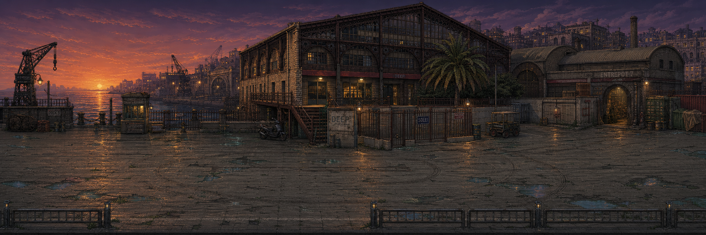
Bastonne
Đây là phần hướng dẫn tự nhiên. Người chơi điều khiển Solei để học di chuyển, né, đánh thường, combo, chưởng, phản đòn, cầm/nhặt/ném vật thể, và phối hợp cơ bản với đồng đội. Nếu Tulas có mặt trong đội từ đầu, anh có thể tạo bệ chất lỏng cho Solei nhảy qua vật cản, dựng khiên nước để chặn đạn tập, hoặc kéo một thùng kim loại đến vị trí cần ném vào công tắc. Qua lời thoại, người chơi biết Block là người của đội hoặc đồng minh thân thiết đã bị Jamerson bắt. Nhiệm vụ tới Bastonne vì vậy có hai mục tiêu: cứu Block và lấy bằng chứng về thí nghiệm của Jamerson.
Stage 0 cutscene - Team Deep leaves the base for Bastonne
Cutscene beat: Team Deep leaves the base by jet ski, crosses the dark harbor, and approaches Bastonne from the outer waterline before the rescue begins.
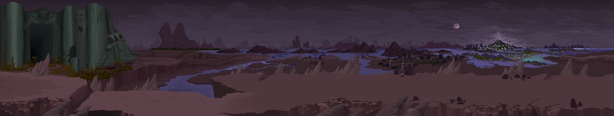
Bastonne
Mark, Deep, Solei và một nhóm nhỏ đột nhập Bastonne. Tulas có thể đi cùng để hỗ trợ, hoặc ở ngoài giữ tuyến rút lui, tùy quy mô đội hình mà thiết kế chọn. Trước đó, Mark chỉ mua được thông tin về dãy giam đặc biệt của Block, không mua được số phòng. Block biết điều này: nếu đêm giải cứu xảy ra và lính gác ngoài cửa gục xuống vì khí mê, anh phải gây tiếng động lớn để đội tìm đúng phòng.
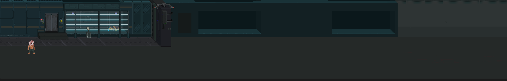
Dãy giam đặc biệt Bastonne
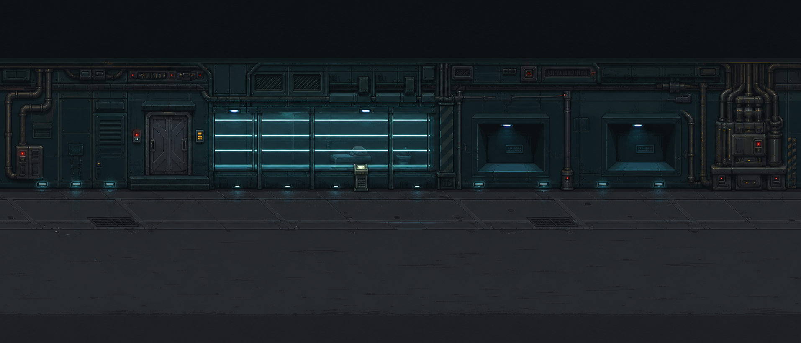
Dãy giam đặc biệt Bastonne - bản chi tiết
Dãy giam đặc biệt là khu màn hình ngang dài, thấp và nặng, nối giữa pháo đài cũ và phần phòng thí nghiệm cải tạo. Hình ảnh nên giữ cùng ngôn ngữ với Bastonne: tường đá xám bẩn, khung sắt đen, ánh đèn lạnh bị cắt thành từng mảng nhỏ, hơi nước và khí mê chạy sát sàn, các chi tiết cơ khí lộ ra nhưng không biến khu này thành sci-fi sạch sẽ. Đây vẫn là nhà tù cổ bị ép thành cơ sở nghiên cứu, nên mọi thứ phải có cảm giác chắp vá, ẩm, rỉ, và bị dùng quá lâu.
Khu này có ba lớp đọc rõ trên màn hình. Lớp trước là song sắt, bàn dụng cụ, thùng kim loại, dây xích và vật thể có thể nhặt/ném. Lớp giữa là đường chơi chính: hành lang giam, cửa trượt thủy lực, camera xoay chậm, van khí và các buồng biệt giam có bảng số tù nhân. Lớp sau là bóng phòng thí nghiệm: ống dẫn, bóng người bị kéo qua kính mờ, đèn cảnh báo đỏ nhấp nháy nhưng vẫn nằm trong bảng màu u tối của Stage 0. Không thêm màu mới quá nổi; chỉ dùng đỏ báo động, xanh lạnh của đèn tù, và vàng bẩn của bóng đèn cũ để nối với các ảnh Bastonne hiện có.
Về gameplay, đây là đoạn chuyển từ giải cứu có kế hoạch sang hỗn loạn. Người chơi thấy đội Deep di chuyển qua trục hành lang chính, nhưng camera có thể cắt xuống các phòng biệt giam thấp hơn để chuẩn bị cho góc nhìn Stranger. Các vật thể trong ảnh ref nên được biến thành dấu hiệu tương tác: đèn treo có thể đánh rơi để tạo tiếng vang, thùng sắt có thể ném vào cửa, van khí có thể khóa tạm thời, bảng điện có thể làm tắt camera trong vài giây. Khi khí mê tràn vào, các lớp nền vẫn giữ nguyên bố cục nhưng ánh sáng đổi nhịp, giúp người chơi hiểu cùng một không gian đang chuyển trạng thái chứ không phải sang một map khác.
Jamerson đoán được sẽ có người đến, nhưng không biết chính xác đêm nào. Hắn cho đổi phòng tù nhân mỗi ngày, rồi ra lệnh đánh Block trước ngày hành động để anh không còn sức đập cửa. Stranger bị lôi vào trận đòn chỉ vì cai ngục thấy hai người nói chuyện với nhau. Trước khi bị kéo về hai phòng biệt giam khác nhau, Block chỉ kịp thì thầm với Stranger rằng nếu thấy lính gác ngủ gục, hãy làm ồn thật lớn. Stranger không biết người này là ai, nhưng đó là lời nhờ vả đầu tiên trong Bastonne không giống mệnh lệnh.
Kế hoạch của đội vỡ trận khi nhà tù bị khóa khẩn cấp, khí mê tràn vào hành lang, cửa sắt tự động đóng, và hệ thống đọc mã số tù nhân qua loa.
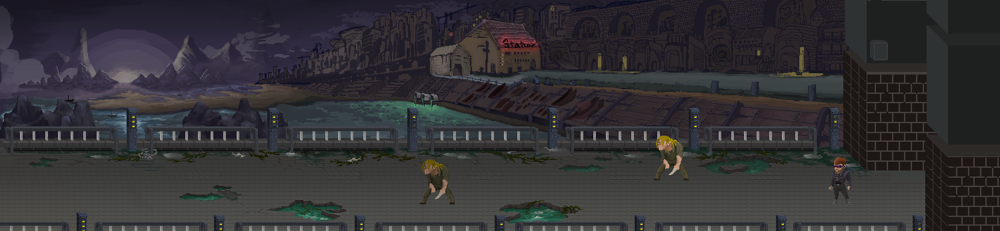
Outside_Marseille_city
Ở đây, góc nhìn chuyển sang Stranger. Anh tỉnh dậy trong phòng biệt giam của mình sau vài giờ bất tỉnh. Mùi máu khô vẫn nghẹn ở sống mũi, hơi thở bị kéo qua cổ họng đau rát, và ngoài khe cửa có khói trắng đặc tràn qua hành lang. Đây không phải lý do duy nhất anh kháng khí mê, nhưng nó là chi tiết đầu tiên người chơi hiểu được: cơ thể Stranger đã bị tra tấn và thí nghiệm đến mức phản ứng khác người thường.
Trong phòng có vài vật thể nhỏ để tương tác: đèn treo thấp, hai cốc sứ, một bàn kim loại nhẹ, giường sắt, và bình vệ sinh đêm. Người chơi phải đánh, nhặt hoặc ném chúng để tạo đủ tiếng động. Đánh vào giường có thể làm bật mảnh kim loại dùng như vũ khí tạm; ném vỡ bình vệ sinh có thể rơi ra một Stimpack cũ được tự động đưa vào phím tắt đầu tiên. Khi thanh máu hiện lên lần đầu, người chơi hiểu đây không còn là cảnh cắt: Stranger đang tự giành một cơ hội sống.
Loa thông báo đọc mã số tù nhân, cửa sắt tự động khóa lại, khí trắng tràn vào hành lang. Nhưng Stranger vẫn thở được. Anh không nhớ tên mình, chỉ nhớ những đoạn ánh sáng trắng, mùi sắt, và một giọng nói hỏi: "Nếu không ai gọi tên ngươi, ngươi có còn là người không?"
Tiếng động kéo Mark đến phá khóa. Cánh cửa mở ra, nhưng người đứng trước mặt ông không phải Block mà là một tù nhân lạ vẫn còn tỉnh. Hành lang vang lên tiếng giày dồn dập. Mark vội hỏi Stranger có biết ai tên Block không. Stranger có thể chỉ về phòng bên cạnh, hoặc im lặng chạy theo đội.
Trong lúc tìm đường thoát, Stranger có thể nhìn thấy Block bị kẹt sau một cửa thủy lực hoặc trong một buồng đang bị bơm khí. Lựa chọn lúc này rất đơn giản nhưng nặng tay: giúp Block trong cơn hỗn loạn, hay để đội tự tìm anh trong lúc bị bao vây.
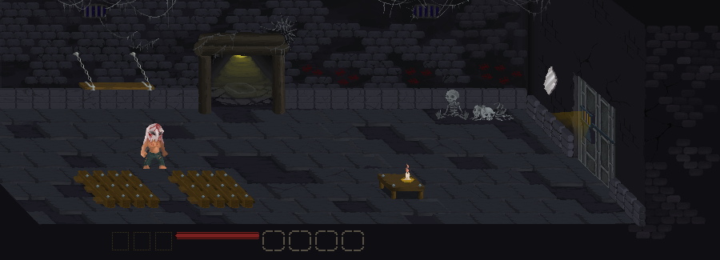
Stranger_prison
Nếu Stranger giúp Block, anh mở khóa cố định, làm chậm khí, hoặc phá một chốt cửa đủ để Block sống sót lâu hơn. Khi Solei và đội tới nơi, Block vẫn cần được kéo ra, nhưng thương tích nhẹ hơn. Block nhớ rằng Stranger đã không bỏ mặc mình.
Nếu Stranger không giúp Block, Solei và đội vẫn cứu được Block, nhưng phải đánh thêm một trận trong khu khí mê. Block bị thương nặng hơn, Stage 1 có thể bắt đầu với máu tối đa thấp hơn hoặc một bất lợi tạm thời. Mark và Solei cũng có lý do nghi Stranger hơn.
Stranger gặp đội Deep trong lúc cả hai bên đều tìm lối thoát. Mark để ý Stranger không bị thuốc mê ảnh hưởng, không bị máy đo sinh học nhận diện như tù nhân thông thường, và có phản xạ kỳ lạ trước các thiết bị của Jamerson. Mark không tin Stranger, nhưng anh cần Stranger.
Cả nhóm đụng đơn vị khóa khẩn cấp của Bastonne: khiên lớn, súng điện, drone khóa mục tiêu và một quản ngục trung thành với nhà Obsworth. Sau khi chiến thắng, cả nhóm thoát khỏi Bastonne, nhưng Jamerson đã biết có một người sống sót ngoài dữ liệu. Con Mắt trong cánh tay ông mở ra và thì thầm: "Kẻ không có tên có thể đi qua những cánh cửa mà người có tên không đi được."
Stage 1 dùng một số trạng thái nhỏ để nối truyện với gameplay, không tạo nhánh chính tuyến khổng lồ. BlockHelped ghi việc Ghost/Stranger có giúp Block trong Bastonne hay không. BlockInjuryState quyết định Block ổn định, bị thương, hay cần bảo vệ thêm ở đầu Stage 1. Heat là mức truy đuổi đô thị. LaundelTrust là lòng tin của chợ ngầm. GrogerClues ghi số dấu vết về GROGER. SubmarinePowerRoute ghi việc nhóm giữ điện ổn định hay phá máy phát để vào tuyến tàu ngầm nguy hiểm hơn.
Sau Bastonne, cả nhóm cắt đuôi xe truy đuổi bằng cách giấu xe trong một gara đã chuẩn bị trước ở rìa khu công nghiệp cũ (hoặc quay về cơ sở nhỏ của đội Deep lúc đầu). Nơi này nằm trên tuyến đường phụ nối các kho hàng cảng với những khu phố hẹp kiểu Noailles/Capucins: đủ gần trung tâm để có người qua lại, đủ tối để biến mất nếu biết đúng cửa sau. Mark kiểm tra radio, Deep nhìn lại vết thương của Block, và Solei cố hiểu vì sao họ phải giữ Ghost ở lại dù chưa thể tin anh hoàn toàn.
Từ gara, Mark dẫn cả nhóm đi bộ qua lối sau đến Armorlite để tìm hiểu thông tin. Armorlite là một quán rượu nhỏ trong mạng lưới các điểm nghỉ của thế giới ngầm: đèn tím thấp, nhạc jazz cũ, quầy gỗ hẹp, một bộ sofa sát tường cho người bị thương, và Jacques, bartender đứng tuổi có đôi mắt xanh gần như phát sáng trong bóng tối. Jacques ít nói nhưng nhớ mọi tuyến cống, bến cảng, cửa kiểm soát và tên người gác nào đã bị Jamerson mua. Vì vậy Mark tin ông hơn nhiều người có quân hàm.
Tại đây, nhóm bàn kế hoạch ra bến cảng: nghỉ chưa đến hai giờ, dùng xe đổi biển số ở gara B, men theo tuyến kho hàng xuống cảng, rồi lên phà trước bình minh để rời Marseille. Block bị thương nên nếu được chơi, máu tối đa của anh chỉ còn 75% khi BlockInjuryState chưa ổn định. Jacques đưa Stimpack và cảnh báo rằng tất cả trạm kiểm soát đang tìm "một tù nhân không ngủ".
Solei vẫn bực vì cả nhóm phải kéo Ghost theo trong khi anh đang bị truy nã. Deep không kết luận, nhưng đặt câu hỏi đúng hơn: nếu Ghost không có gì đặc biệt, tại sao Jamerson lại tìm kiếm, nhốt anh, rồi vẫn không có hồ sơ nào khớp với anh? Nếu BlockHelped đúng, Block là người đầu tiên cắt ngang sự nghi ngờ: người lạ này có cơ hội chạy một mình nhưng vẫn quay lại. Nếu không, không khí ở Armorlite lạnh hơn; không ai kết án Ghost/Stranger, nhưng cũng chưa ai đứng ra bảo vệ anh rõ ràng.
Nếu lòng tin giữa Ghost và đội không được cải thiện, điều đó có thể thành một biến gameplay nhỏ: khi Ghost nhặt vật phẩm, anh có khả năng giấu bớt, làm rơi, hoặc giảm hiệu suất thu nhặt của cả nhóm.
Bạo lực ở Armorlite không phải ngẫu nhiên. Băng đua xe, băng thuốc phiện và các nhóm giang hồ đường phố đã có thù với đội Deep từ trước vì nhóm từng phá một tuyến vận chuyển người, thuốc và xăng của chúng. Sau Bastonne, cảnh sát mật treo thưởng trong thế giới ngầm và ra lệnh cho chúng canh các lối ra thành phố. Một nhóm đánh hơi được gara cũ, lần đến Armorlite, rồi bước vào quán như thể đến thu nợ Jacques.
Trận chiến bắt đầu khi tay chân của chúng đập cửa, dọa Jacques, rồi dùng chai rượu, ghế gỗ và bàn bi-da làm vũ khí. Nhân vật do người chơi điều khiển có thể kịp xin lỗi Jacques trước khi ném chiếc cốc hoặc chai đang cầm thẳng vào kẻ đầu tiên. Ba tên bị văng ra phố; một tên gục, hai tên còn nửa máu. Từ đây, trận đánh kéo ra con phố hẹp và khu cảng dịch vụ phía sau quán. Kẻ địch chạy xe máy từ ngoài màn hình vào, có mũi tên cảnh báo hướng lao, tăng tốc từ chậm đến nhanh, và có thể bị đánh ngã bằng đòn nhảy, vũ khí ném, hoặc phản đòn đúng nhịp.
marsile_background_driver
Boss là thủ lĩnh băng đua xe, cưỡi một chiếc xe máy lớn. Pha đầu dùng những cú lao ngang, quay xe, vạch lửa và hai đàn em chở người cầm vũ khí sau lưng. Khi bị đánh ngã, hắn chỉ nằm mở một cửa sổ sát thương ngắn rồi lại leo lên xe. Dưới 50% máu, hắn rút thanh kiếm gia truyền của băng, không còn dễ bị hất khỏi xe, gọi đàn em chạy cắt màn hình, và tạo đường lửa bằng mũi kiếm kéo trên mặt đường. Khi phải đi bộ, hắn dùng chém dọc, chém ngang, chém hất để chống lặp đòn nhảy đánh, rồi lao nhanh áp sát.
Cuối màn, cả nhóm phát hiện gara an toàn đã bị lộ. Mark chuyển sang phương án B: đi xuống cống ngầm.
Đường cống dưới Marseille không chỉ dẫn nước thải. Nó là tầng ruột của thành phố, nơi những dự án metro, đường hầm bảo trì và kênh vận chuyển bị bỏ dở trở thành nhà cửa, chợ đen, kho hàng, và trạm trung chuyển người nhập cư. Đoạn đầu hẹp, lát gạch và tối; khoảng một phần ba lối đi bị nước che, làm nhân vật chậm lại nhưng cũng khiến quái dưới nước dễ bị choáng nặng nếu bị đánh trúng khi còn đang bơi.
Sau đoạn bảo trì chỉ đủ rộng cho hai người đi ngang, không gian mở ra thành Laundel, một thành phố ngầm dựng trong ga metro đầu tiên chưa từng hoàn thành. Biểu tượng của nó là sư tử đuôi cá: nửa của Marseille trên mặt đất, nửa của những người bị đẩy xuống nước bẩn. Nền thấp là đường ray cũ; nền cao là bến ga, kiosk, quầy thuốc, quầy vũ khí, tiệm đồ ăn và những phòng ngủ dựng bằng tôn. Ở đây có ba lực lượng chính:
Áo Đen: bán vũ khí cận chiến, thuốc tăng sức, và làm việc ngầm cho người của Jamerson.
Xanh Dương: bán hồi máu, vũ khí tầm xa, và che chở nhiều người nhập cư.
Áo Ghi: buôn tin, đưa đường, đổi token, không đủ mạnh để giữ chợ nhưng đủ lâu đời để biết mọi cửa bí mật.
Người chơi có thể mua bằng Token hoặc phá cửa hàng để lấy nhiều đồ hơn. Nhưng lựa chọn này không chỉ là kinh tế. Nếu mua và tôn trọng luật chợ, nhóm được dẫn đường, có thể mở vật phẩm độc quyền, điểm kỹ năng, hoặc vũ khí hiếm từ người tin mình. Nếu phá, nhóm có lợi tức thì nhưng LaundelTrust giảm, cửa hàng xung quanh gọi thêm quân, dân khóa cửa, và về sau nhóm bị đưa vào tuyến đường nguy hiểm hơn. Kẻ địch cũng có thể chạy vào cửa hàng để mua hiệu ứng tăng sức, buộc người chơi quyết định đánh chúng trước hay giữ vị trí.
Áo Đen đến "mời" nhóm gặp thủ lĩnh ngay khi họ bước vào Laundel, nhưng số người được cử đi quá đông cho một lời mời. Cuộc nói chuyện chuyển thành đánh nhau ở rìa chợ, rơi ra những Token đầu tiên và dạy luật mua/bán. Sau đó một chủ cửa hàng Xanh Dương gọi nhóm lại, bán vật phẩm hồi máu hoặc vũ khí tầm xa, và giải thích luật không rút vũ khí trong khu chợ nếu không muốn biến cả màn thành vùng giao chiến.
Nếu người chơi giữ quan hệ tốt và nói chuyện đủ, Áo Ghi kể về graffiti hình quái vật trong cống: GROGER, một thứ ăn thịt người được cả hai phe dùng làm câu chuyện dọa trẻ con. GrogerClues tăng khi người chơi tìm thấy các hình vẽ nằm ở ngõ phụ, phòng ẩn hoặc sau kiosk cũ. Nếu tìm đủ dấu vết và hỏi ông già trong chòi nhỏ trước cửa cống cuối, người chơi có thể mở boss ẩn GROGER. Nếu LaundelTrust thấp vì cướp cửa hàng, GROGER không còn là một cuộc điều tra tự nguyện nữa, mà có thể thành cái bẫy người khác chỉ cho nhóm để lấy lòng chính quyền.
Ở tầng 0 của Laundel, quán bar giải trí biến thành đấu trường. Boss phụ thuộc vào quan hệ với các phe. Nếu giữ lời hứa với Xanh Dương, cả nhóm đánh thủ lĩnh Áo Đen. Nếu phản bội họ, người nhập cư sợ hãi chính quyền sẽ dẫn nhóm vào bẫy, và GROGER có thể trở thành hình phạt.
Kết thúc màn, phe còn tin nhóm chỉ cho họ một đường hầm ra bến cảng. Mark nhận ra một điều đáng lo: Jamerson không chỉ có cảnh sát. Ông có mắt ở cả chợ đen, cống ngầm, và những nơi thành phố giả vờ không nhìn thấy.
Cống chính dẫn ra biển rộng hơn, nước sâu hơn, và quái vật nhiều hơn. Nó là tuyến gom của nhiều đường nhỏ, nên càng đi sâu thì phần nền khô càng ít, dòng chảy càng mạnh, và những bóng dưới nước càng khó đọc. Quái xuất hiện khi còn đang bơi sẽ không tấn công ngay; nếu người chơi chủ động đánh lúc chúng còn dưới nước, chúng nhận sát thương lớn và bị choáng lâu hơn, nhưng nếu để chúng nhảy lên bờ thì chúng mất bất lợi đó và bắt đầu phối hợp theo đàn.
Một số con đầu đàn có thể tăng sức cho đàn nhỏ; khi bị hạ, đàn nhỏ bị chậm và dễ choáng. Những phòng ẩn cho thấy Marseille đã từng có những đợt sơ tán thất bại: vali mốc meo, giấy tờ nhập thành, đồ chơi trẻ em, bản đồ cũ ghi những lối đi đã bị bít kín, và vài căn phòng trú chân của người từng cố vào Laundel mà không bao giờ đến nơi. Ở một số phòng, tàn dư Áo Đen hoặc người tuyệt vọng có thể phục kích nhóm; phần còn lại là quái cống và các dấu vết GROGER.
Sau khi ra khỏi cống, người chơi có một đoạn đi bộ khoảng 30 giây không giao chiến. Hoàng hôn trải dài trên bến cảng. Nhạc nhẹ hơn. Cả nhóm nói về việc nếu thoát được Marseille, họ có thể đến phía đông lánh nạn, sống một thời gian không bị gọi là tội phạm. Solei đùa nửa câu, Deep nói rằng tự do không phải một nơi trên bản đồ, Mark im lặng lâu hơn bình thường, còn Ghost chỉ nhìn mặt trời.
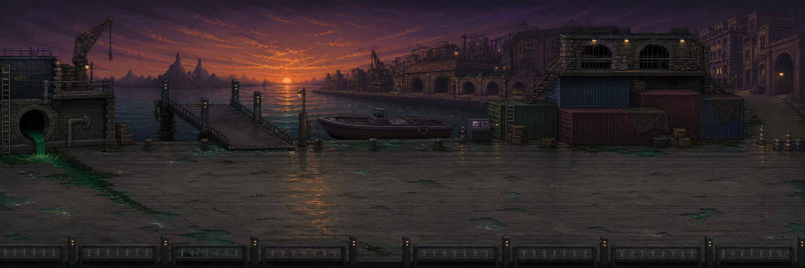
Harbor_Sunset_Battle_Map
Tại điểm hẹn, chiếc thuyền trống rỗng. Khi cả nhóm đi đến giữa màn, cảnh sát mật phục kích. Bến cảng mở rộng thành một chiến trường nhiều điểm: cầu nâng, container, bảng điều khiển thuyền, lính bắn tỉa trên cao, và quái cống còn đuổi theo từ phía sau. Đây là nơi COMMAND bắt đầu có cảm giác gần một trận chiến thuật thời gian thực thu nhỏ: Block giữ tuyến cầu, Deep phá khóa container hoặc giáp máy, Mark đánh dấu lính bắn tỉa/thủ lĩnh đàn, Solei chạy cắt mục tiêu yếu, hoặc nhảy xuống nước phá vòng vây đằng sau. Người chơi vẫn đánh trực tiếp, nhưng phải chia việc để không bị bao vây.
Có lính bắn tỉa với tia ngắm laser, buộc người chơi di chuyển liên tục và không đứng yên dồn combo quá lâu. Lính cận chiến dùng dao và súng ngắn; mỗi lần chuyển sang bắn đều có tín hiệu hình ảnh và âm thanh trước khi rút súng. Heat càng cao từ Armorlite/Laundel thì viện binh ở bến cảng càng đến sớm.
Boss là Marius Vane, cánh tay phải của Jamerson trong bộ máy mật. Marius không tin vào Thần Sơ Sinh, cũng không yêu mến Jamerson. Gã chỉ phục vụ vì Marseille cần những kẻ như Jamerson để giữ thành phố không vỡ tung. Với Marius, người nhập cư, tù nhân, và những kẻ bị bệnh đều là chi phí vận hành.
Sau trận chiến, nhóm tra hỏi tên lính cuối cùng. Họ biết một đồng minh của Mark đã bị bắt đưa xuống cơ sở bí mật ngoài khơi: một tàu ngầm nghiên cứu. Chiếc thuyền của cảnh sát mật có chế độ tự lái đến đó. Kế hoạch trốn khỏi Marseille bị thay bằng một quyết định khác: nếu bỏ đi bây giờ, những bằng chứng và người bị bắt sẽ chìm xuống biển.
Tàu ngầm nằm dưới một vùng nước đen gần bến cảng, được ngụy trang như trạm đo áp lực. Bên trong là phòng thí nghiệm nổi, nơi Jamerson đưa những thí nghiệm quá nguy hiểm ra khỏi đất liền.
Người chơi thấy những bình chứa cơ thể lai, tù nhân bị nối vào máy móc, và những mẫu tế bào mang ký hiệu Heniana. Jamerson không chỉ tìm thuốc. Ông đang thử ghép cấu trúc sinh học của Thần Sơ Sinh vào cơ thể con người để tạo ra một bình chứa có thể sống sót qua căn bệnh.
Tuyến tàu ngầm có hai cách tiến. Cách thường là dùng ba trạm điều khiển nằm ở phòng trưởng lính gác, kho dữ liệu thí nghiệm và phòng kiểm soát áp suất để mở lò phản ứng trung tâm. Cách khó là phá hai máy phát phụ. Khi máy phát bị phá, một phần tàu chuyển sang ánh sáng đỏ khẩn cấp; lính gác ở những khu mất điện bị vật thí nghiệm thất bại giết sạch, còn quái được tăng tốc độ và sát thương vì chúng sợ ánh sáng thường nhưng điên loạn trong bóng tối. SubmarinePowerRoute không đổi kết thúc chính, nhưng đổi độ khó, vật phẩm rơi, bằng chứng còn lại và giọng kể về cái giá của hành động phá hoại.
shemale_chamber
Địa hình tàu ngầm cũng trở thành vũ khí. Nhiều phòng có đường ống khí và vách kim loại cong; kẻ địch bị đánh bay mạnh vào tường có thể bật lại như một vật thể va chạm, gây sát thương cho mục tiêu đầu tiên va phải. Hiệu ứng này chỉ xảy ra theo nhịp giới hạn để tránh biến đấu trường thành hỗn loạn, nhưng đủ để người chơi chủ động dùng Deep/Block hoặc vật ném mạnh trong không gian hẹp.
shemale_chamber_AI
Boss chính là SheMal, một "thất bại hoàn hảo". SheMal từng là một tù nhân nữ vô danh, bị sử dụng làm nền cho cơ thể nhân tạo. Cô không phải thần, không phải người theo nghĩa cũ, nhưng cũng không phải quái vật vô tri. Trong những khoảnh khắc ngắn, cô lặp lại những câu của Heniana mà Jamerson bắt máy móc phát bên cạnh buồng ngủ đông: "Cha ơi, đừng đóng cửa."
SheMal chiến đấu thiên về cận chiến hơn là một quái vật đứng xa phóng ảo giác. Cô cao và nặng ngang Deep, di chuyển như một võ sĩ bị ép vào cơ thể sai, hai tay mọc móng vuốt dài đủ để cào rách kim loại mỏng. Những lúc Con Mắt chưa chiếm trọn, cô đánh bằng bản năng: áp sát, khóa tay, đập vào tường, phản đòn khi người chơi tham combo. Khi Con Mắt mở ra, các ảo ảnh Heniana/Jamerson mới trộn vào nhịp đánh, khiến người chơi khó biết cú chém nào là thật.
SheMal liên kết trực tiếp với Con Mắt. Trên cơ thể cô có dấu vết của một nghi thức phương Đông: bản đồ đến bán đảo Sakuri, ký hiệu Cái Tai, và ghi chú về khả năng "nghe tiếng bệnh trong dòng máu của Heniana khi cô đang ngủ đông".
submarine_backup_generator_b_engine_heat_room
Nếu SubmarinePowerRoute = Sabotage, tàu ngầm chuyển sang tuyến khó hơn. Quái và SheMal nguy hiểm hơn, nhưng rơi vật phẩm và kỹ năng có phẩm chất cao hơn. Về mặt truyện, điều này thể hiện nhóm chọn phá hủy hạ tầng để ngăn thí nghiệm, chấp nhận tự đẩy mình vào nguy cơ lớn hơn.
Khi tàu ngầm sắp nổ, Jamerson nói qua loa:
"Các ngươi phá hủy thứ duy nhất có thể cứu con bé. Các ngươi gọi ta là quái vật, nhưng ta ít nhất còn biết mình đang chiến đấu vì ai."
Cả nhóm thấy bóng Jamerson sau lớp kính trước khi vụ nổ nuốt phòng điều khiển. Họ tin ông đã chết.
Nhưng Con Mắt đã cảnh báo Jamerson sớm hơn vài giây. Thứ bị thiêu trong phòng là một thân xác thế mạng được nuôi từ mô thí nghiệm. Jamerson thật sự thoát bằng ống phóng khẩn cấp, mang theo máu SheMal và bản đồ đến Sakuri. Khi biển bốc cháy phía sau, ông ôm hộp dữ liệu vào ngực và thì thầm với Con Mắt: "Nếu Con Mắt không đủ, ta sẽ tìm Cái Tai."
Kết thúc Stage 1, nhóm tìm thấy ảnh chân dung Heniana, hồ sơ ngủ đông, và bằng chứng rằng có một đứa trẻ vô tội đang nằm giữa mọi tội ác của Jamerson. Deep muốn truy đuổi Jamerson. Mark muốn đưa bằng chứng ra ngoài. Solei nói nếu Heniana còn sống, cô bé không đáng bị bỏ lại trong tay cha mình.
Họ lên đường về phía đông.
#Stage 2 - Sakuri: nơi niềm tin nghe thấy mọi lời nói dối
Nhóm cập bến một làng chài nghèo trên bán đảo phía đông vào một buổi chạng vạng tối đầy sương lạnh, ngay sau cuộc đào thoát sinh tử khỏi vụ nổ tàu ngầm Marseille. Nơi này từng sầm uất nhờ nghề đánh cá và các tuyến thuyền buôn lậu đưa người vượt biên, nhưng dịch bệnh bí ẩn và lệnh phong tỏa của triều đình đã làm bến cảng hoang phế, những xác thuyền gỗ mục nằm im lìm trên bãi cát như những bộ xương cá khổng lồ.
Khung thời gian & Điểm hội tụ sự kiện: Nhóm đặt chân đến bán đảo vào thời điểm ngột ngạt nhất: chỉ còn đúng ba ngày nữa là diễn ra Đại Lễ Trích Huyết Mùa Thu (Lễ Tế Nguyệt Thính) tại Đền Ngầm Thủ Phủ. Đây là ngày Hội Đồng Tam Đại Gia Tộc nhóm họp: Lãnh chúa Masatomo và Giáo phái Đền Ngầm dự định ép Sakuri thực hiện đợt trích huyết quy mô lớn nhất nhằm chiết xuất "Thánh Huyết" ban phát cho giới quý tộc, đồng thời bí mật bàn giao mẫu máu cho phái đoàn Jamerson để đổi lấy công nghệ lọc âm và vũ khí cơ giới phương Tây. Vì đại lễ này, lệnh giới nghiêm toàn diện được ban bố khắp bán đảo. Cửa ngõ thủ phủ đóng chặt, lính cấm vệ tuần tra ngày đêm; bất kỳ kẻ lạ mặt nào xuất hiện đều bị coi là gián điệp hoặc tà đạo quấy nhiễu cõi thiêng.
Bán đảo không phải một cõi thiêng thanh tịnh như Solei từng tưởng tượng qua lời mẹ kể, mà là một chiến trường cung đấu ngầm khốc liệt giữa ba thế lực gia tộc lớn:
Phe Lãnh Chúa & Quan Nhiếp Chính (Nội Đình Masatomo): Tôn sùng Sakuri như một "Thần Nữ" hay "Thánh Công Chúa" (Sacred Princess), khoác lên người cô lụa là hoàng kim nhưng thực chất giam lỏng cô như một tù nhân quý giá nhất. Họ cần Cái Tai để nghe lén các đối thủ chính trị, độc quyền các mỏ bạc và tuyến thương mại biển Marseille, đồng thời ép cô xác nhận những "lời sấm truyền" ngụy tạo để tước đoạt đất đai của thứ dân. Họ thắp một loại Hắc Trầm Hương (Poisoned Incense) trong tẩm điện nhằm làm tê liệt thần kinh cảm xúc của Sakuri, khiến cô chỉ nghe được những toan tính đen tối mà họ muốn cô nghe.
Phe Giáo Sĩ Tế Lễ (Đền Ngầm Kanzaki): Coi Cái Tai là thần vật ban phát "Thánh Huyết" (Holy Blood) có khả năng thanh lọc dịch bệnh. Bọn họ ngấm ngầm giam cầm các thánh nữ tiền nhiệm đã phát điên dưới hầm sâu sân khấu Noh, mưu toan tìm kiếm một bản sao thể xác mới để thay thế Sakuri một khi cô kiệt sức.
Tàn Dư Gia Tộc Ryozan (Võ Tướng): Lực lượng thị vệ trung trinh từng thề mạng bảo vệ Sakuri như một đứa trẻ vô tội. Khi Tướng quân Ryozan nhận ra dã tâm của liên minh Lãnh Chúa - Giáo Sĩ và lên kế hoạch đưa công chúa trốn thoát, ông đã bị vu oan tội phản nghịch và bị hành quyết dã man. Gia tộc ông bị tước binh quyền, phân tán thành những nhóm thảo khấu sống ẩn dật trong rừng tre đen.
Giữa vòng xoáy tranh quyền đoạt lợi ấy, Sakuri mang bi kịch tột cùng của một đứa trẻ bị tước đoạt tuổi thơ. Đôi mắt cô bị niêm phong bằng dải lụa trắng từ năm lên sáu, đôi chân bị câu thúc bằng những sợi xích vàng ngầm nối thẳng vào Cái Tai. Cái Tai bắt cô nghe được khoảng cách ghê tởm giữa lời nói dối và suy nghĩ thật của con người:
Trước mặt cô, các lãnh chúa dập đầu xưng tụng: "Cầu Thánh Nữ vạn phúc, chúng con xin dâng trọn lòng thành!" Nhưng Cái Tai dội vào đầu cô tiếng thầm thì độc địa: "Mau chỉ ra mỏ ngọc của kẻ thù, con ranh này sắp chết rồi, mau chuẩn bị thánh nữ kế tiếp."
Người hầu dâng chén thuốc bổ với nụ cười kính cẩn: "Xin người dùng thuốc cho lại sức." Nhưng tâm trí họ réo rắt: "Uống đi, độc ngấm vào máu thì con trai ta mới được tha tội chết."
Suốt mười năm ròng rã, Sakuri chưa từng được nghe một lời nói chân thật nào. Thế giới trong tâm trí cô là một bãi rác khổng lồ của sự đạo đức giả, lòng tham và tiếng cầu cứu thảm thiết. Những cơn khát máu điên loạn và móng vuốt ma cà rồng không phải bản tính tàn bạo bẩm sinh, mà là cơ chế tự vệ tuyệt vọng của một linh hồn bị đầu độc bởi hàng triệu lời nói dối mỗi ngày.
Về phía Solei, cô trở về mảnh đất cội nguồn với khao khát tìm lại gốc gác của người mẹ đã khuất. Nhưng thay vì một quê hương bao dung, cô chỉ thấy một xã hội chia tầng tàn nhẫn, nơi những người cùng dòng máu xua đuổi cô là "kẻ lai căng ngoại lai". Chứng kiến sự thối nát của cung đình và nỗi đau của Sakuri, tâm lý Solei trải qua bước ngoặt trưởng thành lớn lao: cô nhận ra giá trị của một con người không nằm ở dòng máu hay danh xưng quê quán, mà ở sự can đảm lựa chọn đứng về phía sự thật và tình thương.
#Note khai thác sau: Sakura điềm đạm và người tiền nhiệm hóa điên
Nếu đổi Sakura theo concept mới điềm đạm hơn, có thể tách hình ảnh Sakuri/Sakura hiện tại thành hai lớp nhân vật thay vì dồn toàn bộ vào một boss. Sakura hiện tại vẫn là người đang giữ Cái Tai, nhưng cô chịu đựng nó bằng sự tĩnh lặng, kỷ luật và khả năng lắng nghe rất sâu. Cô không còn là trung tâm của một trận đánh máu lửa. Khi nhóm gặp cô, nhịp chơi nên nghiêng về đối thoại, đọc cảm xúc, phá hiểu lầm, né những đợt cộng hưởng âm thanh, hoặc giúp cô tạm khóa bớt tiếng nói trong đầu.
Phần animation Sakura đang có, với chất sexy, dữ dội, khát máu và ma cà rồng, có thể chuyển sang chị em của Sakura hoặc người tiền nhiệm từng giữ Cái Tai trước cô. Người này là bằng chứng sống cho việc không ai thật sự chịu nổi Cái Tai quá lâu: nghe quá nhiều lời nói dối, âm mưu, tiếng bệnh, lời cầu cứu và ký ức cổ đại đến mức phát điên. Các gia tộc có thể đã giấu sự tồn tại của người tiền nhiệm, gọi đó là "thánh nữ thất bại", rồi nhốt hoặc yểm cô dưới đền ngầm để bảo vệ hình tượng Sakura hiện tại.
Nếu dùng hướng này, boss chính của Stage 2 nên là người tiền nhiệm/chị em hóa điên, không phải Sakura hiện tại. Trận đánh vẫn giữ được năng lượng hung bạo, áp sát, móng vuốt, khát máu và motif ma cà rồng, nhưng ý nghĩa đổi thành: người chơi không đánh bại "Sakura", mà đánh bại một tương lai mà Sakura có thể trở thành nếu tiếp tục bị dùng như công cụ. Điều này làm Sakura hiện tại dễ đồng cảm hơn với Solei: cả hai đều bị dòng máu, quê hương và kỳ vọng của người khác định nghĩa, nhưng vẫn muốn tự chọn mình là ai.
Sau trận, Sakura có thể nói chuyện với Solei thay vì gục xuống như một boss bị hạ. Cô nghe được nỗi lạc lõng của Solei mà không phán xét, còn Solei lần đầu thấy một người ở Sakuri không cố hỏi cô thuộc về phe nào. Đây có thể là mấu chốt cảm xúc của Stage 2: Solei không tìm được một quê hương hoàn hảo, nhưng gặp một người hiểu cảm giác bị biến thành biểu tượng cho thứ mình không chọn.
#2-1. Làng chài, cuộc rượt đuổi trong sương đêm và bé Heni
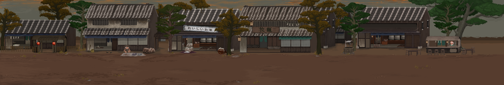
J_1_sakuri
Tại làng chài ven biển, nhóm Deep bắt gặp một bé gái bán cá khô, rong biển và thuốc thảo mộc nhỏ cho khách vãng lai. Gương mặt cô bé giống Heniana đến mức Ghost giật mình sững lại trước cả khi Mark kịp lấy bức ảnh ra đối chiếu.
Người dân gọi cô bé là Heni. Khi Ghost và Solei theo Heni về căn chòi rách nát ven biển, họ phát hiện người cha nuôi hiền lành của cô thực chất là mật vụ ngầm của Jamerson. Trong căn hầm bí mật dưới sàn gỗ cất giấu một máy thu phát điện tín vô tuyến và tập hồ sơ theo dõi phản ứng sinh học: Jamerson đã âm thầm cho Heni sống giữa tâm dịch bán đảo suốt nhiều năm để kiểm tra khả năng chịu đựng của cơ thể nhân bản trước khi chuyển giao dữ liệu cho Cái Tai.
Lý do cuộc rượt đuổi khốc liệt tại làng chài: Khi bị nhóm Deep vạch trần thân phận, tên điệp viên lập tức đập vỡ đèn dầu châm lửa thiêu rụi căn chòi nhằm phi tang tài liệu nghiên cứu. Hắn giật tung chiếc chuông đồng báo động của làng chài, vừa tháo chạy vừa gào thét vu khống trước đám đông dân chúng:
"Quân cướp biển Marseille mang mầm bệnh hạch đen đã tràn vào làng!"
"Bọn chúng đang bắt cóc đứa trẻ hiến tế của Thần Biển!"
Dân làng chài đang cùng quẫn đến cùng cực vì dịch bệnh hoành hành và lệnh cấm biển của quan lại. Trong khi đó, Lãnh chúa Masatomo lại vừa ban lệnh treo thưởng hậu hĩnh: bất cứ ai bắt giữ được kẻ vượt biên ngoại lai sẽ được ban 10 bao gạo và thần dược miễn dịch của Đền Ngầm.
Cơn hoảng loạn và lòng tham mù quáng lập tức bùng nổ. Lính tuần sai của huyện nha cùng hàng trăm ngư dân cầm đòn cào, lao đâm cá và đuốc rực lửa bao vây tứ phía, điên cuồng truy sát nhóm Solei trong màn sương đêm mù mịt. Nhóm của Deep rơi vào tình thế hiểm nghèo: họ không thể vung kiếm sát hại những người dân nghèo vô tội đang bị lừa gạt, buộc cả đội phải vừa phòng thủ né đòn, vừa bế Heni băng qua các sàn gỗ mục và bãi rác cá thối rữa, trèo lên vách đá cheo leo để thoát thân vào vùng núi đá.
Sau khi thoát khỏi vòng vây làng chài, nhóm nhận thức rõ ràng động cơ bắt buộc phải diện kiến Sakuri:
Jamerson đang dùng Con Mắt lần theo Cái Tai vì Cái Tai là bảo vật duy nhất có khả năng "nghe" được tần số biến dị sinh học trong tế bào Heniana. Nếu Jamerson đoạt được Cái Tai trước giờ Đại Lễ, ông ta sẽ hoàn thiện công nghệ kiểm soát sinh học, biến Heniana thành vật chứa thần thức vĩnh cửu và tước đoạt toàn bộ nhân tính của Heni.
Solei khao khát tìm lại sự thật về gốc gác của người mẹ đã khuất, người từng nhắc đến mảnh đất này với tất cả sự kính ngưỡng và xót xa.
Cú sốc bị cự tuyệt nơi Quan Ải chính: Nhóm ban đầu tìm cách tiếp cận thủ phủ theo con đường chính ngạch qua cổng đèo lớn – nơi các đoàn sứ giả địa phương đang tiến về dâng lễ vật chuẩn bị cho Đại Lễ Trích Huyết. Mark chìa giấy thông hành thương nhân Marseille cũ, nhưng toán lính cấm vệ lập tức rút gươm chém nát. Khi Solei bước lên, cất tiếng bằng thổ ngữ quê mẹ và xưng mình mang dòng máu bản địa, viên chỉ huy cấm vệ nhìn mái tóc và đôi mắt mang nét lai phương Tây của cô rồi nhổ toẹt xuống đất với sự khinh miệt tột cùng:
"Mày là thứ con hoang lai căng, mang dòng máu tạp chủng của lũ mọi rợ phương Tây mà dám cả gan đòi diện kiến Thánh Nữ? Cút về biển cả trước khi tao xẻo tai mày làm mồi nhử tế lễ!"
Trước thềm Đại Lễ, cung điện thi hành lệnh "nội bất xuất, ngoại bất nhập". Binh lính giương nỏ bắn tên lửa xua đuổi, buộc cả nhóm phải lùi bước. Nhận ra không thể đi con đường ngoại giao chính thống, nhóm quyết định chọn con đường vòng gián tiếp: men theo con đường hiểm trở vòng qua vùng cách ly dịch bệnh, tiến sâu vào Rừng Tre Đen (Kurotake) và vượt qua cây cầu đá dưới chân thác nước tử thần để đột nhập sườn sau Đền Ngầm.
Bi kịch nơi trại cách ly & Manh mối đầu tiên: Tuyến đường mòn dẫn nhóm qua những trại lều dã chiến u ám, nơi quan binh của Masatomo đang cưỡng bức thu gom từng bao lương thực, súc vải lụa của dân nghèo để phục vụ đại lễ xa hoa. Người bệnh già yếu, phụ nữ và trẻ em ho ra máu bị dán bùa đỏ cách ly, bị xua đuổi ra mép vực bỏ mặc cho chết đói để "tránh làm ô uế đường rước lễ". Tại đây, chứng kiến một cụ bà và đứa cháu nhỏ bị bỏ rơi, Solei đã dừng lại dùng bài thuốc thảo mộc gia truyền mà mẹ cô từng dạy để cầm máu và hạ sốt cho hai bà cháu. Cảm kích tấm lòng vị tha của cô gái "lai căng", người bà rưng rưng trao lại một kỷ vật cũ nát: mảnh vải lụa thêu hoa văn cung đình bị cháy sém, từng thuộc về một nữ quan thân cận trong tẩm điện đã ôm nỗi oan trốn chạy sang phương Tây mười năm trước. Đó chính là manh mối thiêng liêng đầu tiên về người mẹ của Solei.
#2-2B. Rừng tre Kurotake, thác nước, và cây cầu đá
Bridge_1
Để tiếp cận sườn sau của thủ phủ mà không bị phát hiện bởi mạng lưới trạm gác ở chính môn, nhóm buộc phải dấn thân vào Rừng Tre Đen (Kurotake) – một vùng sơn cước hiểm trở trải dài trên sườn núi dốc.
bambooforest3
Bộ tộc Rừng Tre Đen (Kurotake) và triết lý "Tai của đất trời": Rừng tre kẽo kẹt trong sương lạnh, gió thổi qua ngọn tre tạo nên những âm thanh xào xạc như tiếng rên siết của cõi thiêng. Đây là địa bàn sinh sống của bộ tộc Kurotake – những cư dân bản địa cổ xưa nhất của bán đảo.
Lối sống & Tín ngưỡng: Họ sống ẩn dật giữa rừng sâu, đeo những chiếc mặt nạ gỗ thủ công khắc hình linh thú và chim rừng. Người Kurotake coi mỗi thân tre rỗng là một chiếc "tai của đất trời", nơi thần rừng lắng nghe hơi thở của vạn vật để báo trước mưa lũ hay động đất.
Mối hận thù sâu sắc: Vừa bước vào rừng, nhóm Solei lập tức bị các chiến binh Kurotake phục kích dữ dội bằng lao tre và bẫy chông ngầm. Bộ tộc căm ghét người ngoài vì trong nhiều năm qua, quan binh của Lãnh chúa Masatomo đã liên tục xua quân chặt phá hàng vạn thân tre cổ thụ để xây cất dinh thự xa hoa, đồng thời bắt cóc thanh niên trong bộ tộc đưa vào hầm mỏ đào bạc. Họ tưởng nhóm Solei là một toán lính mới của triều đình đến cướp bóc.
Hóa giải hiểu lầm bằng y đức: Trong trận kịch chiến du kích giữa rừng tre mù sương, thủ lĩnh của bộ tộc Kurotake trúng đạn pháo sáng của Mark và ngã xuống bụi đá sắc nhọn, vết thương ở ngực chảy máu xối xả. Thay vì vung kiếm kết liễu kẻ thù, Solei lập tức lao đến, dùng dao găm nghiền nát lá tre non trộn cùng bùn khoáng ven suối – phương thuốc bí truyền cầm máu mà mẹ cô từng căn dặn – rồi đắp lên vết thương cứu sống vị thủ lĩnh.
Nhìn thấy thủ pháp băng bó và ngửi thấy mùi hương thảo mộc quen thuộc, người thủ lĩnh già chấn động thốt lên: đây chính là phương thuốc của vị nữ quan nhân từ từng cứu mạng bộ tộc họ trong nạn đói năm xưa trước khi bà bị triều đình kết tội mưu phản! Hiểu lầm được xóa bỏ hoàn toàn. Bộ tộc Kurotake cúi đầu tạ lỗi, trao tặng nhóm những chiếc mặt nạ gỗ thảo mộc để lọc bớt độc khí Hắc Trầm Hương, đồng thời dẫn họ đi theo một lối mòn bí mật xuyên qua hẻm núi dẫn thẳng ra chân thác nước lớn. Trước khi chia tay, vị thủ lĩnh cảnh báo: con đường phía trước bị trấn giữ bởi một thực thể bóng tối oán độc dưới chân cây cầu đá cổ, sinh ra từ lời thề bảo hộ bị vấy máu của Tướng quân Ryozan.
Cây cầu đá & Thác nước gầm rú: Tại cây cầu đá mục nát bắc ngang dòng sông xiết ngay sát chân thác nước lớn, nhóm đối mặt với Ryozan.
Ban đầu, Ryozan không xuất hiện dưới dạng một chiến binh. Thứ trườn dưới mặt nước cuồn cuộn giống như một thực thể bóng tối khổng lồ có hình dáng của một con nòng nọc đen, đại diện cho lời thề bảo hộ đã bị bẻ cong thành một lời nguyền giam giữ. Nó điên cuồng tấn công bất cứ ai bước lên cầu. Để đánh bại nó, người chơi phải tìm cách phá hủy ba cột yểm phong ấn nằm ở các mỏm đá xung quanh dòng thác.
Khi các cột yểm dưới cầu bị phá, hình dạng thật của Ryozan được giải phóng: một vị tướng quân uy nghiêm trong bộ giáp đỏ rực, tay cầm đại đao chắn ngang giữa tiếng thác gầm. Ryozan không phải là kẻ phản diện phục tùng Sakuri. Trong quá khứ, ông từng được giao trọng trách bảo vệ cô từ khi còn nhỏ. Khác với những kẻ cầm quyền xem cô như một công cụ tiên tri, Ryozan nhìn thấy ở Sakuri một đứa trẻ đáng thương bị giam lỏng. Khi ông cố gắng lên kế hoạch đưa cô trốn thoát khỏi cung điện để chấm dứt sự hành hạ của Cái Tai, các gia tộc đã hãm hại ông, vu khống ông tội mưu phản.
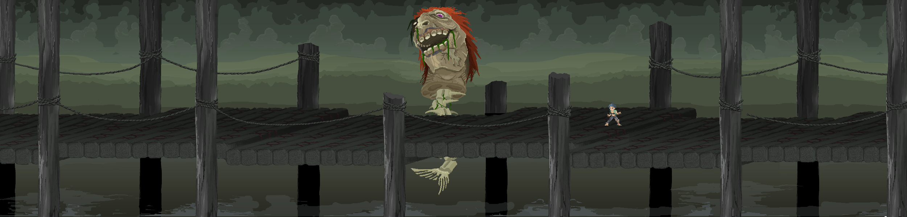
bridge_2_r_4
Đau đớn hơn, Sakuri – khi đó đang quay cuồng trong những tiếng nói hỗn loạn của Cái Tai – chỉ nghe thấy những mảnh ký ức vụn vặt bị bóp méo, khiến cô tin rằng Ryozan muốn phản bội mình. Ryozan bị hành quyết, còn lời thề trung thành của ông bị các pháp sư yểm vào cây cầu đá, biến linh hồn ông thành kẻ canh giữ chiếc lồng giam cầm Sakuri mãi mãi.
Sau trận đấu, nếu người chơi chọn cách phá giải phong ấn (purify) thay vì tiêu diệt Ryozan một cách tàn nhẫn, vong hồn vị tướng quân sẽ để lại một mảnh ký ức dịu êm: ngày nhỏ Sakuri từng hỏi ông bầu trời ngoài cung điện có âm thanh thế nào. Ryozan đã trả lời rằng: "Trên đỉnh núi tuyết, khi vạn vật chìm vào im lặng, cháu có thể nghe thấy cả tiếng thở của chính mình." Ký ức này chính là chiếc chìa khóa cảm xúc quan trọng để người chơi xoa dịu tâm trí Sakuri trong trận chiến cuối cùng ở Stage 2.
Thủ phủ đối lập hoàn toàn với làng chài nghèo đói. Chợ trung tâm rực rỡ lụa là, ngập tràn gia vị, vàng bạc, rượu quý và hương trầm ngào ngạt. Nhưng ẩn sau vẻ phồn hoa ấy là một mạng lưới gián điệp chằng chịt và những cuộc đấu đá cung đình tàn khốc:
Cuộc chiến ngầm giữa các gia tộc: Lãnh chúa Nhiếp Chính Masatomo và Đại Tế Tư Kanzaki của đền ngầm bằng mặt nhưng không bằng lòng. Cả hai đều tìm cách mua chuộc các cận thần để độc quyền tiếp cận Sakuri. Bọn họ thắp Hắc Trầm Hương tẩm độc dược quanh tẩm điện của công chúa, vừa làm suy giảm trí nhớ vừa kích thích thính giác cô chỉ nghe thấy những xung đột kinh tế và sự bội phản, nhằm ép cô phán ra những lời sấm truyền hạ bệ các gia tộc đối nghịch.
Màn đấu trí tại quán trà Hoàng Hôn: Đội của Deep và Solei không chọn cách đột kích bằng bạo lực. Lợi dụng sự ồn ào của chợ, Solei và Mark cải trang nghe lén các cuộc mật đàm, đánh cắp phong thư niêm phong sáp đỏ giữa Lãnh Chúa và tay chân Jamerson. Bức thư hé lộ một thỏa thuận ghê tởm: Lãnh chúa sẽ giao mẫu máu của Sakuri cho Jamerson để đổi lấy công nghệ lọc âm và vũ khí cơ giới nhằm tiêu diệt hoàn toàn tàn dư của Tướng Ryozan.
Nỗi đau búp bê Heni: Trong chợ, Heni bàng hoàng nhìn thấy trẻ em quý tộc tranh nhau mua những con búp bê bằng sứ có khuôn mặt giống hệt mình. Đó là thứ hàng lưu niệm thời thượng được đồn là mang "hơi thở của đứa trẻ ngủ đông từ phương Tây", đem lại may mắn và tài lộc. Lần đầu tiên, Heni cảm nhận sâu sắc nỗi nhục nhã khi một sinh mạng bị đóng gói và định giá như một món đồ chơi cho giới thượng lưu.
J_room_sakuri
Di vật của người mẹ và sự gắn kết định mệnh: Khi lẻn vào tàng thư các cũ bỏ hoang của cung điện, Solei tìm thấy một kỷ vật vô giá: chiếc chuông gió bằng ngọc khắc gia huy dòng họ mẹ mình và một bức họa cũ vẽ một nữ quan đang bế một bé gái mù.
Bản ghi chép bụi bặm hé lộ sự thật rúng động: Mẹ của Solei từng là dưỡng mẫu thân cận nhất của Sakuri khi cô còn ẵm ngửa. Chính mẹ Solei đã liều mạng phản đối nghi thức tàn bạo niêm phong đôi mắt công chúa lúc lên sáu tuổi. Bà bị khép vào tội "phản nghịch với thần linh", buộc phải ôm nỗi đau trốn chạy qua đường biển sang Marseille. Chiếc chuông gió năm xưa mẹ Solei để lại là thứ âm thanh dịu dàng duy nhất mà Sakuri từng được nghe trước khi thế giới của cô hoàn toàn chìm vào bóng tối và những lời dối trá. Khoảnh khắc này đánh gục sự oán hận trong lòng Solei: cô nhận ra Sakuri không phải kẻ thù, không phải một công chúa kiêu sa ngồi trên ngai vàng, mà là một đứa em gái cùng chung cội nguồn đang chịu đựng địa ngục trần gian vì không có ai cứu vớt.
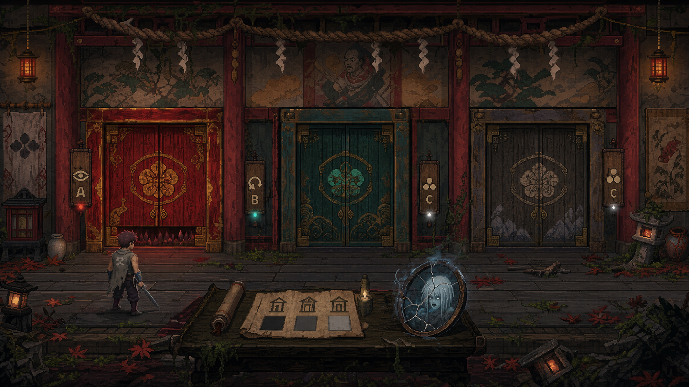
sakuri_deceptive_door_puzzle_concept
Trong cung điện, nhóm đối mặt với DeceptiveDoorPuzzle: một dãy ba cánh cửa lớn (Đỏ son A, Xanh ngọc B, Đen mun C) dựng trên hầm chông sắt. Cung điện quý tộc dùng câu đố này để thanh trừng những kẻ xâm nhập không mang dòng máu thuần chủng. Cánh cửa sơn màu đỏ son lộng lẫy nhất chính là mồi nhử chết người. Nhờ cuộn giấy chỉ dẫn và chiếc gương nứt ám ảnh trong tàng thư các của mẹ, Solei dùng trực giác và sự quan sát tinh tường (so sánh độ sáng, vân gỗ gụ mộc, và vết mòn chân tường) để giải mã cơ cấu bẫy, mở ra thang máy đá bí mật đưa cả đội xuống lòng đất.
Cả nhóm đột nhập cung điện, vượt qua những cạm bẫy cửa lừa và đi xuống ngôi đền cổ nằm sâu dưới lòng đất. Càng xuống sâu, âm thanh xung quanh càng biến dạng kỳ dị dưới tác động từ sức mạnh của Cái Tai: tiếng sóng biển rì rào vọng lại từ khoảng không vô định, tiếng thì thầm rùng rợn của những vong hồn đã khuất trong hầm mộ, và cả tiếng ý nghĩ của các đồng đội bị lặp lại vang vọng bên tai như những lời chế giễu.
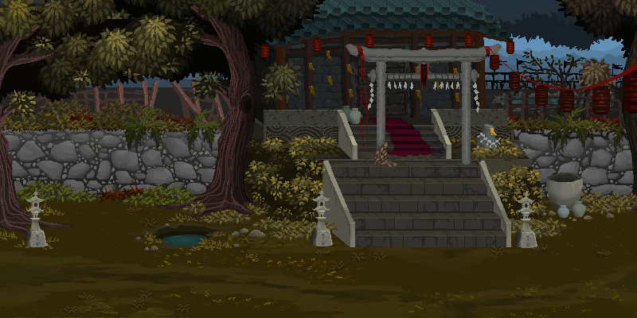
Temple
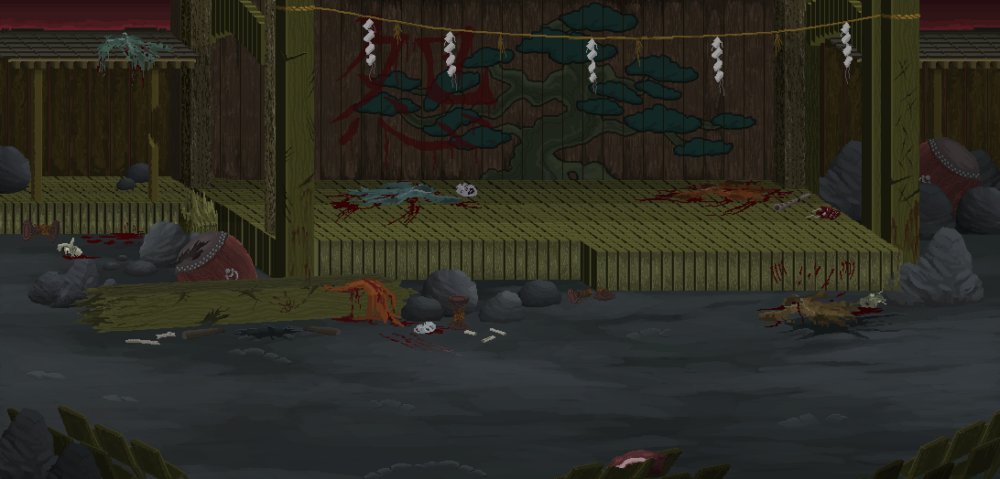
Noh_theattre
Tại đáy đền ngầm, nhóm phát hiện một Sân khấu kịch Noh hoang phế đẫm máu. Bức vách vẽ cây Tùng cổ loang lổ vết máu tươi, mặt nạ Noh và các nhạc cụ trống Taiko vỡ nát nằm ngổn ngang. Đây chính là nơi các giáo sĩ tế lễ từng thực hiện những nghi thức tàn khốc: khi một thánh nữ tiền nhiệm không còn chịu nổi Cái Tai và phát điên, họ sẽ giết hại và yểm xác cô dưới sàn gỗ để trích xuất "Thánh Huyết". Bảo vệ cấm địa ghê rợn này là Rết Khổng Lồ Song Kiếm (Dual-Blade Centipede) – một dị thể sinh ra từ oán niệm và độc dược tế lễ, mang mặt nạ quỷ Hannya và vung cặp katana bén ngọt. Trận chiến đòi hỏi cả đội phải D-Platforming leo xà nhà né đòn quét và tận dụng chấn động âm trầm từ những chiếc trống Taiko đại để làm choáng váng loài rết mẫn cảm, đánh vỡ lớp giáp cứng cứu vãn linh hồn những người đã khuất. Khi con quái gục ngã, vách cây Tùng đổ sập để lộ lối thông thiên dẫn thẳng ra chân Núi Thiêng.
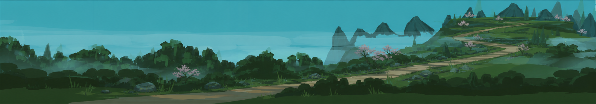
start_moutain
Hành trình leo núi bắt đầu từ đây. Ở những sườn núi thấp dưới chân ngọn núi, cảnh sắc tràn ngập vẻ thanh bình với cỏ cây tươi xanh và hoa anh đào nở rộ tựa chốn bồng lai. Nhưng càng lên cao, màu sắc xanh lục bảo lại càng chuyển dần sang sắc lam đậm cô tịch và lạnh lẽo; không gian huyền ảo ban đầu giờ bao trùm một màu sắc huyền bí, âm u tuyết phủ.
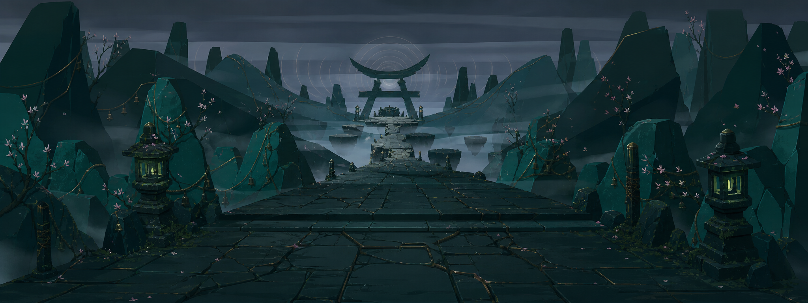
gateplatform
Nhóm phải liên tục leo lên đỉnh núi thiêng cao vút – nơi Sakuri ngự trị – bằng cách vượt qua các chướng ngại vật địa hình hiểm trở và những chiếc cổng Torii cổ kính đổ nát chắn ngang các lối đi hẹp, nhảy qua các phiến đá trôi nổi lơ lửng giữa không trung đồng nhịp với tiếng chuông ngân vọng từ Cái Tai.
sakuri final_conceptsakuri final_1_phase_3
Điểm đến cuối cùng là một thánh địa đá mở toang ra bốn phía giữa đỉnh núi tuyết chênh vênh. Sakuri ngồi cô độc trên đài đá, đôi mắt bịt bằng dải vải trắng truyền thống, thân thể gầy guộc kết nối với bảo vật Cái Tai bằng vàng rực rỡ sau lưng qua những sợi dây kim loại mỏng mảnh như mạch máu.
Cuộc chiến với Sakuri diễn ra qua 3 trục chính nhưng thấm đẫm chiều sâu nội tâm:
Tấn công sóng âm và ảo giác: Sakuri ngồi thiền định phát ra các đợt sóng âm gây choáng và phân thân ảo ảnh. Cô đọc trước mọi đòn đánh nếu người chơi lặp lại thói quen. Người chơi phải ẩn nấp vào các Vùng Im Lặng quanh chuông gió và cành anh đào. Ghost – với tâm trí trống rỗng không chút sợ hãi hay toan tính – trở thành tấm lá chắn duy nhất mà Cái Tai bất lực không thể đọc trước.
Trạng thái cuồng loạn (Frenzy Vampiric Phase): Khi bị dồn ép, những tiếng thì thầm dối trá tích tụ bao năm bùng nổ, đẩy Sakuri vào cơn khát máu điên cuồng. Cô giật tung dải lụa bịt mắt, lao vào tấn công áp sát chớp nhoáng bằng móng vuốt sắc nhọn và dây kim loại xé gió. Đây là lúc sát thương của cô khủng khiếp nhất nhưng cũng là lúc tâm trí cô đau đớn, mất phương hướng nhất.
Khoảnh khắc thức tỉnh tâm hồn & Dư âm Lời thề Ryozan:
Trong trận chiến, Sakuri dùng Cái Tai thâm nhập sâu vào tâm trí từng người để tìm kiếm điểm yếu: cô thấy nỗi sợ sai lầm của Mark, sự mệt mỏi của Deep, sự hư vô của Ghost. Nhưng khi cô chạm vào tâm thức của Solei, Sakuri hoàn toàn chấn động: Suốt cuộc đời mình, lần đầu tiên Sakuri nghe thấy một tâm trí hoàn toàn không có lời nói dối. Trong lòng Solei nghĩ gì, lời Solei nói ra ngoài miệng y hệt như thế: không tham vọng cướp bảo vật, không mưu toan chính trị, không khinh miệt hay thương hại rẻ tiền. Solei hạ kiếm xuống, bước qua làn tuyết lạnh, cất lên tiếng hát ru năm xưa của người mẹ – giai điệu bình yên duy nhất còn sót lại trong ký ức ấu thơ của Sakuri. Tiếng hát ru hòa cùng lời nhắn nhủ của vong hồn Tướng quân Ryozan: "Trên đỉnh núi tuyết, khi vạn vật chìm vào im lặng, cháu có thể nghe thấy cả tiếng thở của chính mình."
Lần đầu tiên trong đời, dải lụa trắng trên khuôn mặt Sakuri thấm đẫm những giọt nước mắt ấm áp của con người. Lần đầu tiên, cô được lắng nghe một thanh âm thuần khiết không vướng bụi trần. Sakuri buông rơi móng vuốt, mỉm cười nhẹ nhõm gục vào vòng tay của Solei: "Hóa ra... thế gian vẫn còn có người nói thật với ta..."
Trận chiến kết thúc không phải bằng một cái chết đẫm máu, mà bằng sự giải thoát tinh thần vĩ đại. Solei ôm chặt lấy Sakuri, trút bỏ hoàn toàn sự tự ti về thân phận con lai bị chối bỏ. Cô nhận ra mình không cần gia tộc công nhận; tình yêu thương và sự thấu cảm đã biến cô thành người bảo hộ thực sự của những kẻ bị áp bức.
Ngay lúc đó, Jamerson xuất hiện qua một kênh ngầm bí mật đã chuẩn bị từ trước, cướp dữ liệu ký ức từ Cái Tai và mang Heniana rời khỏi đền. Sakuri trước khi lịm đi trong giấc ngủ yên bình đã chỉ đường cho nhóm đuổi theo hướng tây: "Mắt đã thấy. Tai đã nghe. Lưỡi sẽ nói điều các ngươi không muốn tin."
Những âm thanh sót lại từ Cái Tai dẫn đường sang thành phố mộ Calvaria – nơi ngự trị của Cái Lưỡi (Chương 3). Heni nắm chặt tay Solei, lần đầu tiên tự hào ngẩng cao đầu bước tiếp cùng đội của Deep.
#Stage 3 - Calvaria: xương, mộ, tôn giáo, và cái chết bị rao bán
Calvaria là một thành phố mộ xây quanh những hầm xương không thấy đáy. Từ xa xưa, người dân mang xác người thân đến đây để được đặt tên trong Sổ Thở Cuối, tin rằng một cái tên được ghi đúng cách sẽ giúp linh hồn không tan vào bóng tối. Khi Đại Họa lan rộng, Calvaria trở thành nơi hành hương của cả thế giới. Ai cũng muốn nghe lại giọng người đã mất một lần cuối, dù chỉ để được tha thứ, được trách móc, hoặc được nói lời tạm biệt quá muộn.
Giáo hội Hơi Thở Cuối nắm giữ Cái Lưỡi. Nó có thể nói bằng giọng người chết, đọc ngôn ngữ đã thất truyền, và biến câu nói thành mệnh lệnh nếu người nghe đủ yếu lòng. Ban đầu, giáo hội dùng nó để an ủi những gia đình vừa mất thân nhân. Về sau, sự an ủi thành dịch vụ, dịch vụ thành quyền lực, quyền lực thành nhà tù. Calvaria vẫn mở cổng cho người hành hương, nhưng mọi con đường vào thành phố đều buộc người sống trả phí cho người chết.
Ở Calvaria, cái chết cũng có giá. Người giàu mua quan tài bằng bạc, mua lễ cầu siêu riêng, mua "lời nhắn từ người chết". Người nghèo bán xương của người thân làm thánh tích, bán tên trong sổ, hoặc làm phu mộ cho đến ngày chính họ rơi xuống hầm. Vì vậy Stage 3 không mở ra bằng một trận đánh lớn, mà bằng cảm giác bị kéo chậm vào một nơi ai cũng đang đau khổ và ai cũng học cách kiếm lợi từ đau khổ đó.
Đây là giai đoạn Cái Lưỡi đào sâu nhất vào Deep và Mark. Nó không chỉ nói bằng giọng người chết; nó đánh thẳng vào ruột gan người nghe, dùng một phần sự thật để buộc họ quỳ xuống. Với Deep, Calvaria kéo lại những cuộc chiến xưa, những đồng đội đã chết, và nỗi mệt mỏi của một người từng bị biến thành biểu tượng. Với Mark, nó moi lại các quyết định bẩn, những người anh không cứu được, và nỗi sợ rằng anh tiếp tục chiến đấu không phải vì còn hy vọng, mà vì anh không biết cách nghỉ ngơi.
Vì vậy mạch Stage 3 đi từ yên tĩnh đến ngột ngạt: con đường hoang vắng ngoài biên giới, khu rừng bị giáo hội dùng làm bãi săn, pháo đài chắn lối vào, hầm ngầm dưới thành phố, dòng sông oán hận, rồi cuối cùng mới tới con đường hành hương và trung tâm Calvaria. Mỗi act nhỏ đẩy nhóm đến gần Cái Lưỡi hơn, nhưng cũng buộc họ bước sâu hơn vào câu hỏi của vùng đất này: người chết có được tưởng nhớ, hay đang bị biến thành công cụ để điều khiển người sống?
Nhóm rời vùng núi của Sakuri mà gần như không có thời gian hồi sức. Jamerson đã đi trước bằng tuyến xe tang và thương nhân xương, còn các cổng chính vào Calvaria đều nằm dưới quyền Giáo hội Hơi Thở Cuối. Mark không thể đưa cả nhóm đi theo một đoàn hành hương chính thức vì Heni quá dễ bị nhận ra, nên họ chọn con đường cũ dành cho dân tị nạn: Con đường đơn độc.
Con đường đất cằn cỗi bị bao phủ bởi sương mù xám lạnh và những hàng cây trơ trụi lá. Rải rác hai bên đường là xe ngựa đổ nát, bảng tên mộ bị cạo sạch, và những vòng đá dựng vội cho người chết không đủ tiền vào Calvaria. Đây là đoạn giảm nhịp sau Stage 2, nhưng không hề nhẹ: cả nhóm lần đầu đi cùng Heni như một thành viên thật sự, trong khi phía trước là nơi có thể bắt cô nói bằng giọng của một người khác.
Mark bước chậm hơn vì vết thương cũ ở chân nhức lên trong gió lạnh. Deep luôn giữ tay gần chuôi kiếm, nhưng sự im lặng của anh không còn giống cảnh giác đơn thuần; nó giống một người đang nghe lại tiếng bước chân của những đồng đội đã mất. Ghost đi phía sau cùng, cảm nhận một dao động mơ hồ từ Calvaria vọng lại. Đó không phải âm thanh vật lý, mà là áp lực của Cái Lưỡi đang thử gọi từng cái tên trong đầu họ.
Cuối con đường, nhóm bắt gặp một đoàn linh hồn lang thang lướt qua các mộ đá như đang tìm cổng vào thành phố. Một người hành hương già cảnh báo rằng ai không có dấu ghi tên của giáo hội sẽ bị "thợ gặt" săn trong rừng. Cảnh báo này đẩy nhóm sang lựa chọn đầu tiên của Stage 3: đi thẳng vào quốc lộ của Calvaria và để giáo hội nhận diện Heni, hoặc rẽ vào Rừng Đồ Tể để tránh các trạm kiểm soát.
Mark đề xuất rẽ vào Rừng Đồ Tể vì đây là khoảng trống duy nhất trên bản đồ tuần tra của giáo hội. Nhưng "khoảng trống" không có nghĩa là an toàn. Khu rừng là một vùng đầm lầy hóa đá u ám, nơi những thân cây gai khổng lồ mọc đan chéo nhau như xương sườn gãy, còn mặt đất phủ đầy hài cốt của những người từng nghĩ mình có thể vào Calvaria mà không trả phí.
Nơi đây là lãnh địa săn bắn của các Slayer thuộc Giáo hội. Họ đeo mặt nạ sắt hình đầu lâu, cầm lưỡi hái lớn và di chuyển lặng lẽ như những cái bóng để hành hình bất cứ ai không có giấy thông hành. Cả nhóm phải tận dụng địa hình gai góc để lẩn trốn, cắt đứt các bẫy chông xương, và đối phó với những đợt phục kích chớp nhoáng. Tulas lần đầu phải sử dụng năng lực của mình để hóa lỏng chất độc chảy ra từ rễ cây hóa đá, tạo rào chắn tạm thời hoặc ăn mòn giáp sắt của kẻ địch.
Ở cuối rừng, nhóm phát hiện các Slayer không chỉ canh biên giới. Họ đang gom xác những kẻ bị giết để chuyển về thành phố như "vật liệu thánh". Dấu xe chở xác trùng với tuyến Jamerson đã đi, dẫn cả nhóm đến bức tường phòng thủ thật sự của Calvaria: Pháo đài Linh hồn.
Vượt qua cánh rừng, nhóm không tìm thấy lối thoát mà đụng thẳng vào một bức tường đá khổng lồ bắc ngang hẻm núi sâu: Pháo đài Linh hồn. Đây là tiền đồn quân sự kiên cố nhất bảo vệ Calvaria từ bên ngoài, đồng thời là nơi giáo hội xử lý những linh hồn không đủ "sạch" để đưa vào nghi lễ chính.
Pháo đài được vận hành bởi các Bình chứa Linh hồn (Spirit Batteries): những chiếc lồng kim loại giam giữ hàng trăm linh hồn oán hận của bệnh nhân, kẻ phản loạn, dân nghèo không trả nổi phí tang lễ, và cả những người bị Slayer giết trong rừng. Năng lượng từ tiếng thét của họ được chuyển hóa thành lá chắn ánh sáng xanh lam bao bọc toàn bộ pháo đài và kích hoạt các khẩu pháo linh hồn tầm xa.
Cả nhóm phải thực hiện một chiến dịch tấn công trực diện đầy nguy hiểm. Mark điều phối chỉ dẫn Block giương khiên sắt bảo vệ nhóm trước những đợt đạn pháo oán khí, trong khi Deep dùng đao nặng đập vỡ các cổng phụ. Solei leo lên các tháp gác cao để tìm cách ngắt kết nối các đường truyền năng lượng. Tại đây, nhóm phải đối mặt với lựa chọn đạo đức lớn: phá hủy trực tiếp các bình linh hồn để ép hệ thống lá chắn sụp đổ nhanh chóng (làm tiêu tán các linh hồn vĩnh viễn), hay dùng Ghost và Tulas để từ từ giải thoát họ một cách an toàn nhưng phải đối đầu với các đợt lính gác đông đảo hơn.
Dù lựa chọn thế nào, pháo đài sụp một phần cũng khiến cổng chính của Calvaria báo động. Nhóm không thể tiếp tục đi trên mặt đất. Một linh hồn được giải thoát, hoặc một tù nhân còn sống trong pháo đài, chỉ cho họ ký hiệu của một lối mộ đạo cũ nằm dưới chân tường thành.
#3-4. Lối đi bí mật dưới lòng đất (Under Secret Passage)
Under Secret Passage_new
Khi cổng chính đã báo động, cả nhóm buộc phải đi theo lối mộ đạo vừa được chỉ cho. Đây là Lối đi bí mật dưới lòng đất, một hệ thống đường hầm chằng chịt do trộm mộ, phu xương, và các giáo sĩ đào tẩu tạo ra từ nhiều thế kỷ trước để luồn vào Calvaria mà không bị ghi tên trong sổ.
Không gian bên dưới cực kỳ chật hẹp, tối tăm và chứa đầy những cạm bẫy cổ xưa: các phiến đá sập, phòng ngập khí gas độc và những cơ quan bánh răng cần sức mạnh lớn để vận hành. Sự phối hợp nhóm được đẩy lên tối đa: Block phải gồng mình nâng những cánh cổng đá nặng hàng tấn để Solei lách qua mở cơ quan, Tulas điều khiển dòng nước ngầm làm nguội các luồng khí nóng tỏa ra từ lò đốt rác của Giáo hội, và Ghost dùng khả năng kháng nhận diện lỗi của mình để đi qua các bẫy quét năng lượng mà không kích hoạt chúng.
Ở giữa đường hầm, nhóm tìm thấy dấu vết Jamerson đã đi qua trước: một giáo sĩ bị ép mở khóa, vài mảnh thiết bị của Con Mắt, và mẫu máu đông của Heniana rơi trên nền đá. Nhưng đường hầm không dẫn thẳng vào giáo đường như họ hy vọng. Khi hệ thống cũ bị kích hoạt lại, sàn đá vỡ ra và kéo cả nhóm rơi xuống dòng nước đen bên dưới.
Lối đi ngầm vỡ ra trên một hang động khổng lồ, nơi Sông Oán Hận chảy cuồn cuộn dưới lòng đất. Dòng sông là một vũng lầy đen ngòm, ăn mòn da thịt, tích tụ nước thải độc hại từ các tuyến thành phố, dịch bệnh của Calvaria, và oán khí của những người bị chôn cất sai cách. Đây không phải đường vào thành phố; đây là thứ Calvaria cố giấu dưới nền đá của mình.
Cả nhóm phải đứng trên một chiếc bè gỗ lớn ghép vội và trôi tự do dọc theo dòng nước xiết. Họ phải liên tục chiến đấu để bảo vệ chiếc bè khỏi sự tấn công của lũ quái vật xương kéo từ lòng sông và những linh hồn bay lượn phun độc từ trần hang. Deep phải liên tục đập tan các tảng đá nhọn trôi nổi trên sông trước khi chúng đâm sầm vào bè, trong khi Tulas tập trung kiểm soát dòng nước đen để giữ cho bè thăng bằng và Mark bắn hạ các xạ thủ xương từ hai bên bờ đá.
Giữa khúc sông xiết, một trận bão sương oán khí tràn qua buộc nhóm phải tấp bè vào một doi cát tro tàn dưới chân một lò thiêu cổ bỏ hoang. Tại đây diễn ra một khoảng lặng bất ngờ mang đậm âm hưởng chuyến du hành cõi âm của Odyssey (Nekyia): giữa chốn tử địa ngập tràn thù hận, Deep bắt gặp một đốm lửa ma trơi xanh lục ấm áp, nơi hai người bạn cũ – những người anh hùng từng cùng anh vào sinh ra tử năm xưa đang ngồi đợi.
Người thứ nhất là Vance "Mắt Chim", tay thiện xạ trinh sát láu cá của tiểu đội cũ. Vừa thấy bóng dáng lầm lì của Deep bước lên bờ, bóng ma Vance đã huýt sáo một tiếng rồi bật cười hề hề ("hé hé"):
"Úi giời ơi, nhìn xem ai dạt vào cái nhà mồ này này! Anh hùng Deep vĩ đại đấy phỏng? Bao nhiêu năm rồi mà sao cái mặt mày vẫn đăm chiêu như bị cướp mất sổ gạo thế hả?"
Nhìn sang Solei đang cầm kiếm cảnh giác và bé Heni nép sau lưng Deep, Vance ôm bụng cười ngặt nghẽo:
"Hahaha! Gì đây Deep? Giải ngũ xong về quê làm bảo mẫu à? Đại ca một thời chém sắt như chém chuối, giờ trông như gà mẹ dắt đàn gà con thế kia! Mày đã học được cách nấu cháo với dỗ con nít khóc chưa đấy? ... Này, chầu rượu mày cá cược thua tao trước trận vây thành năm xưa vẫn chưa trả đâu nhé. Tao đợi ở dưới này mốc cả họng. Nhưng thôi... hôm nay thấy mày còn thở, còn đủ chân tay lành lặn và có người để che chở... tao xóa nợ cho đấy, đồ đần."
Tiếng cười tếu táo của Vance làm tan biến không khí ngột ngạt, nhưng nốt trầm thật sự xuất hiện khi người thứ hai bước ra từ bóng tối: Đại úy Balthazar, người chỉ huy tiền bối, người anh cả từng lấy thân mình đỡ đòn chí mạng để Deep sống sót trong trận chiến cuối cùng. Trên ngực linh hồn Balthazar vẫn còn vết thương năm xưa, nhưng nó phát ra ánh sáng lam thanh thản chứ không bốc mùi oán độc. Thấy Deep nghẹn ngào nhìn vết thương cũ với nỗi dằn vặt của kẻ sống sót (Survivor's Guilt), Balthazar đặt tay lên vai anh:
"Đủ rồi, Deep. Đừng nhìn vết thương này nữa. Tao chết thay mày vì mày xứng đáng được sống để thấy ngày hòa bình, không phải để mày tự giam mình trong tội lỗi suốt mười mấy năm qua. Bọn giáo sĩ ngoài kia tạc tượng tao bằng đá hoa cương, khắc tên tao vào 'Sổ Thở Cuối' rồi bán vé cầu nguyện kiếm tiền. Nhảm nhí! Người chết bọn tao chỉ muốn yên nghỉ, chẳng ai muốn làm mấy cục đá lạnh lẽo làm bình phong cho lũ buôn thần bán thánh."
Trước khi tan biến vào làn sương để nhóm tiếp tục lên đường, Balthazar để lại lời dặn dò định đoạt cho Deep:
"Nghe cho rõ đây Deep: Người chết đã xong phần đời của mình rồi. Đừng sống vì bọn tao nữa. Sống cho mày và cho hai đứa nhỏ kia đi. Sắp tới, thứ quái vật ngậm Cái Lưỡi sẽ dùng giọng của tao, giọng của Vance và bao anh em ngã xuống để ép mày quỳ gối làm biểu tượng chiến tranh. Lúc đó... đừng do dự. Hãy thay mặt bọn tao đập nát cái mồm dối trá ấy đi!"
Cuộc hội ngộ ngắn ngủi nhưng trọn vẹn – vừa có tiếng cười hoài niệm, vừa có sự tha thứ và giải thoát – đã cởi bỏ tảng đá ngàn cân đè nặng tâm can Deep suốt bao năm.
Dòng sông cuốn nhóm qua những cửa xả bên dưới khu hành hương. Khi thoát được lên bờ, họ không còn ở ngoài Calvaria nữa, nhưng cũng chưa vào trung tâm. Trước mặt họ là con đường mà mọi người hành hương đều phải đi: nơi người sống xếp hàng để xin người chết nói chuyện.
Sau khi thoát khỏi Sông Oán Hận, nhóm phải hòa vào dòng người hành hương thay vì tiếp tục đánh thẳng. Đây là lần đầu Stage 3 cho người chơi nhìn Calvaria từ phía người dân: những đoàn người ôm tro cốt, bó xương, di ảnh, búp bê giữ tóc người đã mất, và những lá thư chưa kịp gửi. Không ai ở đây nghĩ mình đang bước vào một cái bẫy. Họ chỉ muốn đau ít hơn.
Nhóm đến Calvaria để tìm Cái Lưỡi, nhưng mỗi người bước trên đường hành hương với một lý do riêng. Mark muốn biết liệu những giọng nói trong quá khứ có thật là người chết hay chỉ là ký ức bị lợi dụng. Deep thấy dấu vết của những đội viễn chinh cũ. Heni nghe tin giáo hội có thể "cho người chết nói", nên âm thầm tự hỏi nếu mình nói bằng giọng Heniana, mình có còn là mình không.
Trên đường, người chơi gặp dân hành hương, kẻ trộm mộ, lính đánh thuê của giáo hội, và những người ghi tên chuyên thu phí từ từng cái chết. Đây là giai đoạn kể về mặt trái của niềm an ủi: khi đau khổ quá lớn, con người sẵn sàng trả bất cứ giá nào để nghe một lời nói dối dịu dàng. Dòng người này dẫn nhóm vào nơi Calvaria lộ bộ mặt thật rõ nhất: chợ xương và hầm mộ sống.
Calvaria không chỉ có mộ. Nó là một hệ sinh thái. Xương được rửa, phân loại, khắc tên, bán làm bùa hộ, vật liệu xây dựng, hoặc linh kiện cho những cơ thể cầu nguyện. Giáo hội tạo ra những chiến binh xương bằng cách gắn mảnh ý chí của Cái Lưỡi vào hài cốt.
coffin_ritual_shop
Ở một góc ngách chật hẹp của khu chợ, giữa khói nhang mờ ảo và tiếng rao bán xương rỉ rả, người chơi bắt gặp một hình ảnh châm biếm sâu cay về cuộc sống dưới bóng Cái Lưỡi: Tiệm Hòm "Đổi Vận Cầu May" (The Fate-Changer Coffin Shop). Trong khi Giáo hội độc quyền bán những cỗ hòm bạc đắt đỏ cho giới thượng lưu, một lão thợ đóng hòm gầy guộc, lập dị lâm vào cảnh ế ẩm triền miên vì người nghèo chẳng ai đủ tiền mua quan tài riêng mà toàn bị vứt xác vào hầm mộ chung. Để kiếm sống, lão nghĩ ra một dịch vụ kỳ quái đậm chất dân gian mê tín: "Cúng hòm & cho người sống ngủ qua đêm trong quan tài để xả xui, rước may mắn".
Trước cửa tiệm treo đầy biển hiệu viết vội: "Hòm Giá Rẻ" (Coffins Cheap), "Đổi Vận - Kháng Đại Họa" (Fate Changer - Ward Against Plague). Những người dân nghèo hoặc lính đánh thuê tuyệt vọng trả vài đồng bạc lẻ để trèo vào nằm im trong quan tài gỗ mở nắp, hai tay chắp trước ngực như tử thi. Lão thợ hòm cầm nén hương khói nghi ngút, khấn vái lầm rầm và cắm nhang lên nắp hòm làm lễ "giả chết" nhằm đánh lừa thần chết và dịch bệnh bỏ qua thân chủ, coi như họ đã "chết một lần để tái sinh vận may".
Chi tiết này vừa đóng vai trò kể chuyện môi trường (Environmental Storytelling) phơi bày sự cùng quẫn và mê muội của người dân Calvaria, vừa có thể trở thành một Easter Egg / Trạm hồi máu độc lạ (Rest Point): nếu người chơi tương tác với cỗ quan tài còn trống, Deep (hoặc nhân vật đang điều khiển) sẽ trèo vào nằm nhắm mắt một lát giữa tiếng khấn của lão thợ. Màn hình tối dần với tiếng mõ gõ lốc cốc; nhân vật được hồi đầy máu/năng lượng kèm hiệu ứng buff may mắn hài hước "Kẻ Đã Chết Một Lần" (+10% tỷ lệ nhặt vật phẩm hiếm). Nhìn Deep lồm cồm bò ra từ quan tài, Solei nhíu mày: "Chú Deep... trông chú nằm trong đó vừa vặn đến đáng sợ đấy." Deep chỉ càu nhàu vặn lưng: "Hơi cứng lưng, nhưng ít ra ở trong đó yên tĩnh hơn ngoài này."
Ghost bắt đầu nghe những đoạn tên cũ của mình. Cái Lưỡi có thể biết, hoặc chỉ đang đoán theo nỗi sợ. Khi nó gọi một cái tên, Ghost suýt quay lại. Nhưng Heni hỏi: "Nếu cái tên đó thuộc về người đã chết, anh có bắt buộc phải làm người đó nữa không?"
Đại giáo đường là nơi người giàu ngồi trên ghế nhung, nghe "người chết" nói lời tha thứ. Bên dưới, hàng nghìn người nghèo dập đầu xin một câu trả lời miễn phí.
Lãnh đạo giáo hội, Mẹ Bề Trên Voro, không phải kẻ lừa đảo tầm thường. Bà từng mất con trong Đại Họa và thật sự tin Cái Lưỡi là món quà cuối cùng cho nhân loại. Nhưng để giữ món quà đó, bà cho phép giáo hội bóp méo lời người chết, thao túng gia tộc, bán sự tha thứ, và kêu gọi chiến tranh bằng giọng của tổ tiên.
Jamerson đến Calvaria trước nhóm. Ông yêu cầu Cái Lưỡi nói bằng giọng Heniana. Cái Lưỡi làm được. Trong phòng tối, Jamerson nghe con gái gọi: "Cha ơi."
Nhưng Cái Lưỡi không chỉ lặp lại giọng. Nó nói tiếp bằng điều Jamerson sợ nhất: "Nếu con tỉnh dậy, con có còn nhận ra cha không?"
Jamerson đập vỡ bàn thờ, giết những giáo sĩ cản đường, và quyết định rằng nếu ký ức của Heniana có thể phản đối ông, ông sẽ tạo ra một cơ thể mới không còn đau đớn, không còn sợ hãi, không còn quyền từ chối tình yêu của cha.
Đây là điểm Jamerson vượt qua ranh giới cuối cùng: từ cứu con gái sang sở hữu một hình ảnh của con gái.
Boss cuối Stage 3 là một hợp xướng xương khổng lồ được gọi là Dàn Hợp Xướng, gồm những hài cốt, giọng nói, và lời cầu nguyện bị giáo hội khâu lại thành một "thánh thân". Cái Lưỡi nằm trong miệng của nó. Nó không chỉ nhại âm thanh; nó chọn những giọng từng có quyền làm người sống nghe lời, rồi biến chúng thành mệnh lệnh.
Với Mark, nó dùng giọng mẹ anh và những người anh từng không cứu được. Họ không mắng anh là hèn. Họ nói điều tàn nhẫn hơn: nếu Mark dừng lại, cái chết của họ sẽ vô nghĩa; nếu anh không giết tiếp, anh đã phản bội họ. Trong pha này, COMMAND của Mark có thể bị nhiễu, biến lệnh bảo vệ thành lệnh truy sát nếu người chơi không phá các chuông xương quanh đấu trường. Mark vượt qua khi hiểu rằng người chết có thể được tưởng nhớ, nhưng không được dùng làm giấy phép để giết thêm người.
Với Deep, Dàn Hợp Xướng mượn giọng chính Đại úy Balthazar và Vance cùng những bài ca anh hùng trong quá khứ. Nó gọi anh bằng danh hiệu cũ, cất giọng nghiêm trang ra lệnh bảo anh cầm cờ tử đạo, đứng trước đoàn quân và trở lại làm biểu tượng để người khác tiếp tục đổ máu. Nhưng nếu trước đây điều đó có thể làm Deep quỵ ngã vì mặc cảm tội lỗi, thì giờ đây anh chỉ nhếch mép cười lạnh. Deep nhớ lại ngọn lửa ma trơi ấm áp bên bờ Sông Oán Hận: tiếng Vance cười cợt trêu anh giải ngũ làm bảo mẫu, và lời dặn đanh thép của Balthazar. Anh gằn giọng đáp lại con quái vật: "Balthazar thật không bao giờ nói những lời hèn hạ này, còn Vance thì đang cười vào mũi bọn mày." Lời nói dối sụp đổ, Deep tung cú chém đao nặng phá vỡ mắt xích chuông xương thao túng tâm trí, chính thức đoạn tuyệt với thân phận biểu tượng chiến tranh để chiến đấu vì người sống.
Với Solei, Cái Lưỡi dùng giọng người thân phía mẹ. Khi mềm, họ gọi cô là máu của quê nhà. Khi lạnh, họ gọi cô là đứa trẻ Marseille, là kẻ trở về chỉ khi cần một nơi trú. Nó ép Solei chọn một bên để được coi là "thật". Solei phá vòng này khi từ chối để huyết thống quyết định căn nhà của mình: cô có thể mang nhiều nguồn gốc mà không cần biến một phần của mình thành tội lỗi.
Với Heni, nó dùng giọng Heniana. Có lúc giọng ấy xin được cứu. Có lúc nó bảo Heni trả lại khuôn mặt, trả lại cơ thể, trả lại cuộc đời mà Jamerson đã đánh cắp để tạo ra cô. Đây là lời nói dối nguy hiểm nhất, vì Heni không biết Heniana thật sự sẽ nghĩ gì nếu tỉnh dậy. Heni không cố chứng minh mình "thật hơn" Heniana. Cô chỉ nói rằng nếu Heniana còn sống, cô sẽ giúp Heniana sống như một con người, nhưng cô sẽ không biến mất để làm vật liệu cho kế hoạch của người lớn.
Cuối cùng, Cái Lưỡi gọi Ghost bằng một cái tên cũ mà ngay cả anh cũng không chắc còn thuộc về mình. Nó nhắc đến một phòng trắng, một mã hồ sơ bị xóa, và một câu hỏi anh từng nghe trước khi mất ký ức. Đoạn này chưa giải thích hết Ghost là ai; nó chỉ mở một khe hở để người chơi biết quá khứ của anh có thật, và có người từng cố tình chôn nó đi. Ghost không phủ nhận quá khứ. Anh chỉ từ chối để một cái tên chưa được hiểu rõ trói mình lại. Anh chọn cái tên đồng đội đã gọi trong hiện tại: Ghost.
Chiến thắng không đến từ việc bắt Dàn Hợp Xướng im lặng hoàn toàn, mà từ việc phá từng lời nói dối đang buộc người sống phải phục tùng người chết. Sau trận này, cả nhóm hiểu rõ hơn luật của Cái Lưỡi: nó không tạo ra nỗi đau từ hư không; nó lấy một phần sự thật, đặt nó vào cái miệng sai, rồi bắt con người quỳ xuống trước nó.
Khi Dàn Hợp Xướng sụp đổ, phần lõi của Cái Lưỡi lộ ra trong một khối xương đen như than. Jamerson đã chờ đúng khoảnh khắc đó. Con Mắt trong tay ông mở ra, kéo phần lõi sống nhất về phía mình trước khi nhóm kịp phá hủy hoàn toàn. Ông không lấy được tất cả. Một mảnh nhỏ bị cháy văng khỏi lõi, mất gần hết quyền năng nhưng vẫn còn giữ ký ức cuối cùng của Cái Lưỡi.
"Nó không nguyền rủa các ngươi. Nó đang gọi mẹ. Tiếng gọi của nó quá lớn đối với thế giới này, nên các ngươi gọi đó là Đại Họa."
Mảnh cháy không nói như một nhà tiên tri. Nó nói như một vết thương nhớ lại khoảnh khắc bị cắt khỏi cơ thể. Từ những câu rời rạc của nó, Mark ghép được một điều đáng sợ: Thần Sơ Sinh không chủ động nguyền rủa thế giới theo cách con người vẫn kể. Các mảnh thân thể của nó bị giữ lại quá lâu, mỗi mảnh tiếp tục phát ra một phần của tiếng gọi cũ. Con Mắt nhìn, Cái Tai nghe, Cái Lưỡi gọi, Trái Tim đập. Khi những tín hiệu đó chạm vào con người, chúng biến thành bệnh, ảo giác, cuồng tín, và ham muốn hồi sinh.
Vì vậy mục tiêu của nhóm thay đổi. Nếu chỉ phá hủy từng mảnh thần, tiếng gọi sẽ bị xé nhỏ hơn, yếu đi ở chỗ này nhưng méo mó ở chỗ khác. Nếu gom các mảnh lại để hồi sinh Thần Sơ Sinh, thế giới có thể bị nuốt bởi một sinh thể không thuộc về nó. Cách duy nhất còn lại là tìm nơi tiếng gọi bắt đầu: Dây Rốn, đầu nối giữa Thần Sơ Sinh và thứ đang lắng nghe ngoài thế giới.
Nhưng mảnh Cái Lưỡi không chỉ thẳng đến Dây Rốn. Nó chỉ nhớ một nhịp kế tiếp: Trái Tim đang đập ở vùng núi Akam Meskul. Muốn tìm nguồn đầu tiên, nhóm phải đi qua trái tim chiến tranh đó trước.
#Cầu nối điện ảnh: Từ Calvaria đến Ngưỡng Cửa Akam Meskul
Chiếc xe bọc thép của đội rồ ga lao qua những bình nguyên tro tàn xám xịt của Calvaria, bỏ lại sau lưng giáo đường xương mộ hoang phế. Trong hộp cách ly trên bàn điều khiển, mảnh cháy còn sót lại từ Cái Lưỡi liên tục rung giật, thỉnh thoảng lại phát ra những thanh âm nghẹn ngào như tiếng khóc của một đứa trẻ bị bỏ rơi: "Nó không nguyền rủa... nó chỉ đang gọi mẹ... nhịp kế tiếp... đang đập ở phương Bắc..."
Trên ghế sau, Heni lên cơn sốt cao li bì. Solei ân cần đắp chiếc áo choàng và khẽ vuốt lọn tóc đẫm mồ hôi của cô bé. Ở góc tối phía sau thùng xe, Ghost ngồi bất động, nhưng lồng ngực anh bắt đầu phát ra những luồng sáng xanh lục kỳ dị nhấp nháy theo một chu kỳ vô hình. Đột nhiên, một giọt nước mưa tro đọng trên mặt kính chắn gió của xe... bỗng nhiên trôi ngược lên trời.
Một tiếng THÙM... trầm đục xé toạc màng nhĩ dội lên từ sâu thẳm lòng đất, làm toàn bộ hệ thống đồng hồ đo điện từ trên xe chao đảo. Phía chân trời xa, rặng núi Akam Meskul hiện ra sừng sững như một hàm răng thú dữ khổng lồ găm thẳng vào nền trời vẩn đục lưu huỳnh. Giữa ngọn núi lửa cổ đại đã tắt, xác hóa thạch của thánh long Akam Meskul đâm xuyên vách đá, xung quanh bao bọc bởi những vết rách không gian phát sáng xanh ngọc ma mị.
Akam Meskul Approach: Hẻm núi lưu huỳnh và xác thánh long cắm xuyên ngọn núi lửa dưới những vết nứt Cõi Mộng
Deep nhìn qua khe bọc thép, nắm chặt bàn tay cơ khí của mình, trầm giọng:
"Trái tim của nó... đang đập nhanh hơn. Cơn ác mộng đã bắt đầu rồi."
Akam Meskul không chỉ là vùng núi lửa tử địa nham nhở nơi từng diễn ra nghi lễ thảm sát Thần Sơ Sinh ngàn năm trước, mà là Vực Thẳm Tiền Mộng (The Liminal Threshold) – vùng đệm mong manh nơi thực tại trần gian bắt đầu bị rách toạc trước sóng ý thức của thần linh. Nơi đây chịu tác động trực tiếp của hiện tượng Rạn Nứt Cõi Mộng (The Dream Bleed).
Thủ pháp Sound Design & Thị giác: Cứ mỗi nhịp tim của Thần Sơ Sinh phát ra từ lòng đất, màn hình lại rung giật nhẹ, toàn bộ âm thanh môi trường xung quanh bị hút nghẹt trong tích tắc (audio ducking), để lại một âm bass siêu trầm (sub-bass heartbeat) dội thẳng vào lồng ngực người chơi. Bụi lưu huỳnh tro đỏ đối lập gắt gao với những dòng lân tinh xanh ngọc rỉ ra từ các vết nứt không-thời gian.
Tại vùng tử địa này, hai thế lực đối đầu sinh tử trong một cuộc chiến điên loạn:
Con Cháu Chiếc Nôi: Hậu duệ của tộc người thờ phụng thần. Họ tôn sùng sự hủy diệt, tin rằng nhân loại phải bị thanh tẩy bằng cơn ác mộng vĩnh hằng. Họ bắt cóc người ngoài, ép hiến tế máu để nuôi dưỡng Trái Tim.
Tàn Dư Sáu Vương Quốc: Hậu duệ của đạo quân thất trận, xây dựng đô thị kính nhân tạo kiên cố. Họ nhân danh văn minh và khoa học nhưng tiến hành những thí nghiệm cấy ghép thần thể tàn bạo trên tù nhân sống để tìm cách điều khiển nhịp tim thần.
Hành trình của đội bắt đầu tại hẻm núi dẫn vào xác rồng. Chiến trường ngập trong khói súng, lửa tế và tiếng gầm rú. Nhưng điểm bất thường và đáng sợ nhất là hiện tượng Mộng Du Tập Thể (Collective Somnambulism): hàng trăm binh lính của cả hai phe đang vừa chém giết vừa nhắm nghiền mắt, miệng lẩm bẩm những khúc đồng dao cổ xưa theo nhịp đập từ lòng đất. Hai mắt họ phát ra ánh lân tinh xanh nhạt kỳ dị.
Kẻ địch bao gồm:
Lính Mộng Du (Somnambulists): Binh sĩ bị nhịp tim thôi miên, di chuyển chậm rãi nhưng không hề biết sợ chết hay đau đớn.
Zealot Cuồng Nhiệt: Thế hệ trẻ của Con Cháu Chiếc Nôi, hung hãn lao vào liều chết dưới sự kích động của giáo sĩ.
Demon Tamer: Kẻ dẫn dắt đàn quái thú sinh vật mộng cảnh; khi tamer bị hạ, quái vật mất phương hướng và quay sang cắn xé quân địch.
Malaestro: Chỉ huy tế lễ, phát ra tiếng hú tâm linh khiến toàn bộ lính mộng du tập trung hỏa lực vào một mục tiêu.
Dấu hiệu thức tỉnh của Stranger: Khi nhóm tiến qua làn đạn, một toán lính mộng du bỗng nhiên buông vũ khí, quỳ rạp trước Ghost và thì thầm trong vô thức: "Ngài... ngài đã thức dậy trước cả Chiếc Nôi...". Ghost ôm đầu co giật, những tiếng rít vô thanh dội thẳng vào màng nhĩ anh. Mark lập tức ra lệnh cấm giết những người lính mộng du vô hại, trong khi Block dùng khiên cản đường cho những dòng người tị nạn trốn thoát.
Boss cuối màn là Crusader Band – đội tiên phong cảm tử của Con Cháu Chiếc Nôi dựng chốt chặn cửa hang rồng bằng cách xích những người sống sót vào các cột tế oán niệm.
#4-2. Đường hầm trong xác Akam Meskul & Ký ức đóng băng
Stage 4-2 playable map - Dragon Bone Catacombs
Đội tiến vào đường hầm sinh học trong xác thánh long. Không gian choáng ngợp như một thánh đường tử thần gothic: vòm xương sườn đóng vai trò cột trụ chống trời, các khoang nội tạng rỗng biến thành đầm lầy huyết dịch sôi sục. Tại đây, ranh giới thực tại bắt đầu nứt toác. Nhịp tim của thần phát ra từng đợt sóng âm làm thời gian và trọng lực cục bộ bị gián đoạn: những giọt máu trôi ngược lên không trung, đá vụn lơ lửng, và những vết nứt ký ức tái hiện hình ảnh Aramut cùng thánh long trong trận huyết chiến cổ xưa.
Deep nhìn thấy sự thật bi tráng: Aramut không chết vì vinh quang của các bài anh hùng ca, mà chết vì sự hèn nhát và ích kỷ của các vị vua liên minh rút lui bỏ mặc ông. Nhìn hình ảnh Aramut, Deep càng kiên định không bao giờ để tên tuổi hay sức mạnh của mình bị biến thành công cụ cho bất kỳ phe phái chính trị nào.
Khoảnh khắc điện ảnh: Ghost bộc lộ năng lực "Bước Đi Vô Cực" (Phase Shifting), bước xuyên qua trụ xương rồng với đôi mắt hố đen vô tận
Khoảnh khắc dị thường của Stranger – Bước Đi Vô Cực (Phase Shifting): Khi một sườn núi xương rồng sụp xuống bít chặt lối đi, đe dọa chôn vùi cả nhóm, Ghost bỗng vô thức bước thẳng xuyên qua bức tường xương cứng như sắt thép. Thân thể anh nhòe đi như một vệt bóng mờ giữa hai chiều không gian. Khi Ghost quay lại nhìn đồng đội từ phía bên kia vách đá, tròng mắt anh trong tích tắc biến thành một hố đen thăm thẳm không đáy của cõi hư vô. Chỉ khi Solei hoảng hốt cất tiếng gọi: "Ghost! Là anh phải không?", Ghost mới chớp mắt, ngơ ngác trở lại trạng thái con người phàm trần và mở cơ quan giải cứu cả đội.
Thử thách bản ngã của Tulas và Block: Khí độc từ các mạch máu rồng khiến chất độc mộng mị ngấm vào máu thịt nạn nhân. Tulas phải vận dụng tối đa thuật điều khiển chất lỏng để thanh tẩy, dựng màng ngăn cách. Anh đối diện với sự giằng xé tột cùng: năng lực của anh chạm vào huyết quản sâu thẳm của người khác, cứu mạng họ nhưng cũng khiến họ kinh hãi tột độ. Trong khi đó, Block chứng minh giá trị của một người bảo hộ thầm lặng: anh không cần danh xưng anh hùng sử thi, mà lấy thân mình làm trụ đỡ, chống đỡ các vòm xương rồng đang sập để đồng đội và người bị thương an toàn vượt qua.
Stage 4-3 playable map - Glass City and Ritual Caveblood_lari_bos
Đội đến giao lộ ngầm giữa Thành Phố Kính của Tàn Dư và Ca Động Tế Lễ của Con Cháu Chiếc Nôi. Phân cảnh này sử dụng thủ pháp Dựng phim song song (Cross-cutting) làm nổi bật sự tàn bạo của hai cực đoan:
Thành Phố Kính sạch sẽ, điều hòa lọc khí vô trùng, nhưng bên dưới là những buồng giam lạnh ngắt, nơi các bác sĩ và kỹ sư Tàn Dư thản nhiên mổ xẻ tù nhân để đo nhịp cộng hưởng của Trái Tim.
Ca Động Tế Lễ ngập tràn khói lửa và tiếng tụng niệm cuồng loạn, nơi các tư tế chuẩn bị ném những đứa trẻ bị bắt cóc vào hố lửa để làm vật tế đánh thức thần linh.
Cộng hưởng trong mơ giữa Heni và Heniana: Do tiến gần đến Trái Tim, thể trạng Heni suy sụp nhanh chóng. Cô bé lên cơn sốt mê sảng và rơi vào trạng thái ngủ sâu. Trong cơn mê, ý thức của Heni bất ngờ kết nối ngoại cảm với Heniana (đang nằm trong buồng ngủ đông do Jamerson hộ tống gần đó). Heni thì thào trong giấc mộng: "Cha đang đến... cha mang theo Con Mắt, Cái Tai và Cái Lưỡi... nhưng cha không hiểu rằng thứ thức dậy trong lồng kính sẽ không phải là con..."
Tài liệu mật về Dự Án STRANGER: Trong lúc chia nhóm để giải cứu kép (Solei và Tulas giải cứu lũ trẻ ở lò thiêu, Mark và Block phá ngục thành phố kính), Ghost thâm nhập vào phòng lưu trữ tối mật của Tàn Dư. Tại đây, anh tìm thấy một tập hồ sơ hoen ố mang mã hiệu: "Dự án STRANGER - Thể Chứa Vô Danh (Prototype Zero)". Tài liệu hé lộ rằng trong đợt thử nghiệm sơ khai nhiều năm trước, khi ranh giới thể xác phôi thai bị xé rách, các thiết bị đo sóng não đã ghi nhận một thực thể bí ẩn từ cõi vô tận thâm nhập vào lồng ngực đứa trẻ. Toàn bộ các nhà nghiên cứu tiếp xúc với phôi thai đó sau đó đều chết trong những cơn mộng du kỳ dị. Ghost run rẩy bóp nát tập tài liệu, nhận ra thứ đang cựa quậy trong lồng ngực mình không chỉ là vết thương hay ký ức đã mất.
#4-4. Titan Trái Tim & Khe Nứt Xanh Lam (The Blue Rift)
Tại đỉnh Kardias rực lửa, Trái Tim của Thần Sơ Sinh đã bị Tàn Dư ghép vào một cỗ máy chiến tranh khổng lồ: Titan Trái Tim. Cỗ máy này cấu tạo từ ống dẫn thủy lực, xương thánh long và cơ thịt thần thánh còn tươi rói. Đúng lúc này, Jamerson xuất hiện cùng buồng ngủ đông của Heniana. Sử dụng Con Mắt, Cái Tai và Cái Lưỡi đã hấp thụ, Jamerson cưỡng bức Trái Tim đập theo tần số sóng não của Heniana nhằm đánh thức cô bé:
Jamerson:"Ta đã gom đủ giác quan của thần linh! Hãy thức tỉnh đi, Heniana! Hãy mở mắt ra và gọi tên cha!"
Nhưng tác dụng ngược bùng nổ: Trái Tim phát cuồng, biến Titan thành một Quái Vật Mộng Nộ mất kiểm soát, quét sạch cả hai phe quân đội trên chiến trường.
Trận boss diễn ra trong cảnh hỗn loạn nghẹt thở: nhịp tim đập làm toàn bộ không gian chao đảo, các đợt sóng xung kích tâm linh làm méo mó tầm nhìn. Cả nhóm phối hợp chặt chẽ: Block chặn những đòn quét tàn bạo của cánh tay xương khổng lồ; Tulas thanh tẩy dòng máu độc phun ra từ các ống dẫn; Deep phá hủy các máy phát khuếch đại nộ khí; Solei chém đứt các chuỗi xích neo giữ Trái Tim.
#Chuyển giao điện ảnh đỉnh cao: Cú Nhảy Vào Hư Không (The Blue Rift Transition)
Cú Chộp Tay Nhân Tính: Bàn tay thép của Deep níu chặt cổ tay Ghost trước Khe Nứt Xanh Lam, kéo anh trở lại từ cõi hư vô trước khi cả đội cùng nhảy vào Stage 5
1. Vụ nổ không-thời gian: Khi buồng ngực Titan vỡ tung, Trái Tim không nổ mà phát ra một tiếng đập xé rách không gian. Bầu trời phía trên đỉnh núi Akam Meskul bị xé toạc làm đôi như một tấm gương khổng lồ. Những mảnh vỡ thực tại văng rụng. Một vết nứt không-thời gian khổng lồ hiện ra, để lộ không gian bên trong: không còn là đất đá rỉ sét của trần gian, mà là một biển sao tĩnh lặng ngập tràn ánh sáng ngọc bích ma mị và những mạch máu thiên hà trôi nổi — CHIẾC NÔI (THE CRADLE) / CÕI MỘNG CỦA THẦN SƠ SINH.
2. Cú lao tuyệt vọng của Jamerson: Bão từ trường và phản trọng lực hút mọi thứ trên đỉnh núi vào khe nứt. Jamerson, toàn thân tơi tả vì thần lực phản phệ, ôm chặt lấy buồng ngủ đông của Heniana đang lơ lửng trong không trung. Nhìn thấy cõi mộng xanh biếc như một thiên đường giả tạo, ông ta bật cười trong nước mắt: "Con gái... chúng ta đã về nhà rồi!" — rồi bị hút thẳng qua miệng vực.
3. Lời nói đầu tiên của Stranger: Lực hút kinh hoàng từ khe nứt bắt đầu kéo sập toàn bộ chiến trường. Trong khi tất cả mọi người bị áp lực thần tính đè gục xuống sàn đá, Ghost đứng dậy, bước đi nhẹ nhàng, thản nhiên tiến về phía miệng vực. Toàn bộ áp lực trọng lực và sóng âm đối với anh hoàn toàn vô nghĩa. Ghost ngoảnh lại nhìn đồng đội. Lần đầu tiên trong câu chuyện, anh cất tiếng nói — nhưng đó là một giọng nói đa tầng, âm vang cổ xưa và lạnh lẽo từ hư không:
"Cõi Mộng đã mở. Tiếng khóc đã dội về. Và kẻ lạ mặt phải trở về nơi thuộc về mình."
4. Nút thắt nhân tính – Cú chộp tay của Deep: Solei thảng thốt kêu lên. Bằng tất cả sức tàn, Deep gầm lên một tiếng xé lòng. Động cơ cánh tay thép của anh nổ tung tia lửa điện, đẩy anh lao vút qua bờ đá đang sạt lở. Cánh tay kim loại của Deep chộp chặt lấy cổ tay Ghost ngay khi mũi chân Ghost vừa bước hẫng vào miệng vực:
Deep:"Ghost! Nhìn vào tôi! Cậu có thể là thần, là quỷ, hay là bất cứ thứ quái quỷ gì... nhưng cậu là người của cái đội này! Cậu không thuộc về cái khe nứt chết tiệt đó!"
5. Sự thức tỉnh & Cú nhảy vĩ đại: Một khoảng lặng chết chóc trôi qua. Ánh đen sâu thẳm trong mắt Ghost dần co lại thành con ngươi của một con người. Anh nhìn vào bàn tay chai sạn của Deep, nhìn Solei, Mark, Tulas và Block đang bế Heni. Ghost khẽ gật đầu mỉm cười: "Đi thôi."
Chính Ghost dùng lực kéo cả đội về phía mình. Cả đội nắm chặt tay nhau, cùng nhau rơi tự do qua Khe Nứt Xanh Lam.
6. Chuyển tiếp âm thanh tuyệt đối (Audio Mute Drop): Ngay khoảnh khắc cả đội chìm vào ánh sáng xanh ngọc, toàn bộ tiếng gầm rú của chiến trường lập tức tắt ngúm. Chỉ còn lại tiếng chuông pha lê ngân nga của dải ngân hà, và cơ thể cả đội trôi bồng bềnh trong trạng thái không trọng lực giữa biển sao ký ức, chính thức bước vào thế giới siêu thực của Stage 5: The Cradle.
#Stage 5 - The Cradle: Cõi Mộng Xanh, Dây Rốn và Sự Thức Tỉnh Của Stranger
The Cradle: Bước vào cõi mộng siêu thực ngập tràn ánh sáng ngọc bích của Thần Sơ Sinh
#5-1. Tầng 1: Vùng Ký Ức Đảo Chiều (The Blue Cradle)
Bước qua Khe Nứt Xanh Lam ở đỉnh núi Akam Meskul, toàn bộ tiếng gầm rú của chiến trường và đá nổ lập tức tắt ngúm (Complete Audio Drop). Cả đội rơi tự do vào The Cradle (Chiếc Nôi) – một đại dương cõi mộng siêu thực không trọng lực, ngập tràn sắc xanh lam ngọc bích và bụi sao lân tinh sâu thẳm của vũ trụ.
Nơi đây không chịu sự chi phối của các định luật vật lý hay không gian ba chiều: các mảnh vỡ ký ức từ toàn bộ hành trình trôi bồng bềnh giữa biển sao. Một tháp đồng hồ Marseille lộn ngược, chợ ngầm Laundel lơ lửng cạnh cổng Torii đỏ thắm của Sakuri, những cột xương mộ gothic Calvaria đâm xuyên vòm đá rồng Akam Meskul, và phía xa tít tắp là ánh sáng trắng tinh khôi phát ra từ buồng ngủ đông của Heniana.
Cõi Mộng Siêu Thực: Nơi ký ức của các vùng đất trôi nổi lơ lửng giữa biển sao không trọng lực
Bài kiểm tra của những ảo ảnh hạnh phúc giả tạo: Cõi Mộng không tấn công bằng vũ lực cơ bắp; nó dùng những "lối tắt cám dỗ" đánh thẳng vào những vết thương lòng sâu kín nhất của từng thành viên:
Deep: Marseille tái hiện một lối thoát bình yên, nơi anh chỉ là một thợ sửa máy giản dị, cùng Solei lớn lên trong thanh bình, đổi lại là phải quay lưng làm ngơ trước tiếng thét của các tù nhân Bastonne.
Sakuri: Hứa hẹn trả lại sự tĩnh lặng tuyệt đối cho tâm hồn nếu nhóm chấp nhận để một đứa trẻ làm vật tế.
Mark: Mở ra cánh cổng thiên đàng bằng giọng nói ấm áp của những người đồng đội cũ đã ngã xuống trong trận chiến năm xưa.
Akam Meskul: Vẽ nên một chiến thắng vinh quang huy hoàng nếu nhóm để mặc cho hai phe cuồng tín tự chém giết diệt vong.
Từng thành viên đã đồng lòng từ chối những ảo ảnh đó. Họ hiểu sâu sắc rằng: Một sự bình yên xây dựng trên máu và sự quên lãng nỗi đau của người khác chỉ là một cơn ác mộng được khoác tấm áo đẹp đẽ.
Ghost & Cổng Không Hồ Sơ (The Unindexed Gate): Khi nhóm tiến tới bức tường tâm linh bị niêm phong tuyệt đối, chính Ghost – với thân phận Prototype Zero và là nơi trú ngụ của thực thể Stranger – đã bước lên. Cơ thể anh không mang mã định danh nào trong cõi trần thế, biến anh thành chiếc chìa khóa duy nhất bẻ gãy phong ấn, mở toang cánh cửa dẫn vào tầng tâm linh sâu thẳm nhất.
#5-2. Tầng 2: Phòng Gương Tâm Trí & Giọt Nước Mắt Song Sinh
Giấc Mơ Song Sinh: Heni và Heniana gặp nhau trong hồ gương tâm thức vô cực
Tiến sâu vào tâm của Cõi Mộng, nhóm bước vào Phòng Gương Ký Ức (Memory Mirror Chamber) – một mặt hồ vô cực phẳng lặng như gương soi bóng hàng triệu tinh tú. Tại đây, thể xác Heni đang được Block bế trên tay bỗng phát sáng, ý thức cô bé tách ra, bước đi trên mặt nước đến trước bản thể tâm linh của Heniana.
Hai đứa trẻ đối diện nhau. Heniana rơi nước mắt kể về sự cô đơn cùng cực trong buồng ngủ đông, khi ngày đêm phải nghe những mưu mô tàn độc và tiếng khóc than của thế gian nhân danh "cứu cô bé". Heni siết chặt lấy bàn tay lạnh ngắt của Heniana, ánh mắt kiên định gạt bỏ mọi mặc cảm mình là một bản sao nhân tạo:
Heni:"Chị không phải là công cụ của cha, và em cũng không phải là một bóng hình thay thế vô nghĩa. Chúng ta đều là con người, và chúng ta có quyền được sống tự do."
Hai chị em cùng đồng lòng cất lên tiếng nói tự quyết: Heniana kiên quyết từ chối tỉnh dậy nếu cái giá phải trả là sự diệt vong của nhân loại; Heni khẳng định quyền được sống độc lập, bảo vệ sự sống cho cả hai.
Cùng lúc đó, tại chân đài tế, tàn quân của Con Cháu Chiếc Nôi và Tàn Dư Sáu Vương Quốc tràn vào cõi mộng trong cơn hoảng loạn. Nhóm nhân vật chính sử dụng tài trí, hỏa lực và chứng cứ công lý đã thu thập từ Bastonne, Sakuri và Calvaria để dập tắt cơn cuồng loạn, giải giáp hai phe, bảo vệ dòng người tị nạn và mở đường tiến thẳng lên đài tế trung tâm.
#5-3. Tầng 3: Dây Rốn Vũ Trụ & Trận Đại Chiến Jamerson
Ở tầng cao nhất của Chiếc Nôi, Dây Rốn của Thần Sơ Sinh hiện ra như một mạng lưới mạch máu vũ trụ khổng lồ phát sáng rực rỡ, nối liền từ tâm đài tế vươn thẳng lên khoảng không vô tận. Nó chính là Chiếc Ăng-ten Vũ Trụ (Cosmic Antenna): tiếng khóc đau đớn của Thần Sơ Sinh khi bị loài người sát hại trong quá khứ liên tục truyền qua sợi dây này ra ngoài vũ trụ, mời gọi những thảm họa diệt vong đến Trái Đất.
Dây Rốn Vũ Trụ: Chiếc ăng-ten tâm linh khổng lồ kết nối đài tế buồng ngủ đông Heniana với khoảng không vô tận
Jamerson đặt buồng ngủ đông của Heniana vào vòng mạch trung tâm. Toàn thân ông đã biến dạng khủng khiếp: Con Mắt cấy vào cánh tay, Cái Tai gắn vào màng nhĩ, Cái Lưỡi quấn quanh thanh quản và Trái Tim đập dồn dập trong lồng ngực. Ông tin rằng mình đã đạt được quyền năng của Đấng Tạo Hóa để cứu sống con gái. Nhưng sự thật tàn khốc hiện ra: thần thể không phục sinh Heniana như một con người, mà biến thể xác cô bé thành cánh cổng để Thần Sơ Sinh giáng thế nuốt chửng thế giới.
Trận đại chiến diễn ra nghẹt thở qua từng giai đoạn khi Jamerson tung ra toàn bộ sức mạnh tổng hợp của các mảnh thần. Đến cao trào, khi Jamerson ngỡ mình đã chiến thắng và chuẩn bị kích hoạt nghi thức dung hợp, Heniana bất ngờ mở mắt trong lồng kính.
Nhìn thấy người cha đầy máu, nhìn thấy những người vô tội đang ngã xuống vì mình, cô bé áp bàn tay nhỏ bé lên mặt kính, rơi dòng nước mắt đau đớn:
Heniana:"Cha ơi... nếu con phải tỉnh dậy bằng cách làm cả thế giới chìm vào giấc ngủ mãi mãi... con không muốn!"
Bi Kịch Tột Cùng: Jamerson biến dạng thành quái vật thần tính, gục ngã trước giọt nước mắt của con gái Heniana
Lời nói của con gái đánh sập hoàn toàn bức tường lý trí của Jamerson. Thần tính lập tức phản phệ dữ dội, nuốt chửng cơ thể ông và biến ông thành quái vật cùng quẫn: The Father-Eye. Cả đội phối hợp tung đòn dứt điểm dập tắt cỗ máy tha hóa, Ghost chém đứt các mạch thần neo giữ, giải phóng Jamerson khỏi sự trói buộc của quái vật.
Jamerson gục ngã bên lồng kính, cơ thể tan rã dần thành tro bụi ánh sáng. Lần đầu tiên sau hàng chục năm, ông nhìn con gái bằng ánh mắt của một người cha bình thường: "Tha thứ cho cha... Heniana... Cha đã quên mất nụ cười của con trông như thế nào..." — rồi mỉm cười thanh thản nhắm mắt.
#5-4. Boss Ẩn Tối Thượng: THE DREAM SOVEREIGN (Stranger Thức Tỉnh)
(Nhánh cao trào bùng nổ khi Ghost đạt Độ Nhiễu 100% hoặc người chơi mở khóa tập tài liệu "Dự Án STRANGER")
Ngay khi Jamerson vừa ngã xuống, trước khi Nghi Lễ Ngược kịp tiến hành, năng lượng cộng hưởng cực đại từ Dây Rốn Vũ Trụ bỗng chuyển sang màu đen huyền bí. Lồng ngực Ghost bốc cháy dữ dội. Tiếng khóc của thần linh hòa cùng tiếng gọi cõi vô tận đã đánh thức hoàn toàn thực thể cổ xưa ngủ say bên trong anh.
Ghost bay lơ lửng lên không trung. Nhân cách phàm trần đau đớn lùi vào bóng tối, nhường chỗ cho THE DREAM SOVEREIGN (Kẻ Thâu Tóm Giấc Mộng) – thực thể vũ trụ lạnh lùng với đôi cánh là những dải ngân hà bóng tối, đôi mắt sáng rực ánh sáng hư không nuốt chửng các vì sao. Toàn bộ Cõi Mộng bị vặn xoắn thành một mê cung không-thời gian nghịch đảo. Hắn cất tiếng nói đa tầng vang vọng toàn vũ trụ:
"Thần linh hay phàm nhân, tất cả chỉ là những hạt bụi thoáng qua trong giấc ngủ của ta. Trò chơi đã kết thúc."
The Dream Sovereign: Thực thể vũ trụ thức tỉnh bên trong Ghost, đẩy cả đội vào trận chiến quyết định linh hồn người bạn
Trận chiến vì linh hồn của người bạn (The Battle for Ghost's Soul): Đây là trận chiến cảm xúc nhất của trò chơi, không thể chiến thắng bằng vũ lực sát thương thông thường:
Pha 1 – Kẻ Lạ Mặt Không Tên: Stranger sao chép toàn bộ bộ kỹ năng người chơi đã nâng cấp cho Ghost với tốc độ ánh sáng, phân thân ảo ảnh và bước xuyên qua mọi đòn tấn công của cả đội.
Pha 2 – Kẻ Dệt Mộng: Stranger bóp méo không gian, triệu hồi những ảo ảnh bóng ma mang hình dáng và chiêu thức tối thượng của chính Deep, Solei, Mark, Tulas và Block để tấn công nhóm.
Pha 3 – Sợi Dây Nhân Tính (The Tether of Humanity): Nhóm nhận ra đánh vào Stranger chỉ làm thân xác Ghost tan biến. Thay vào đó, cả đội phải bảo vệ trận địa, lần lượt tiến vào các điểm neo tâm linh để cất tiếng gọi tên anh bằng tất cả ký ức suốt 5 chương hành trình:
Block giương trọng khiên chắn đòn sấm sét: "Cậu đã cứu tôi ở Bastonne! Cậu không phải bóng ma vô danh, cậu là người của chúng tôi!"
Tulas thanh tẩy dòng máu đen đang ăn mòn lồng ngực Ghost: "Đừng để sự lạnh lẽo này cướp mất nhịp đập trái tim cậu!"
Mark giương súng bắn tan ảo ảnh xung quanh: "Đây là mệnh lệnh cuối cùng của tôi: Trở về với đội hình ngay!"
Solei và Deep cùng lao thẳng qua cơn bão không gian, bàn tay thép của Deep và lưỡi kiếm ánh sáng của Solei phá tan lớp kén bóng tối, ôm chặt lấy thể xác đang tan rã của Ghost.
Giọt nước mắt của Solei rơi xuống bàn tay Ghost. Nhân tính trỗi dậy mãnh liệt, Ghost thét lên một tiếng xé toạc cõi mộng, đẩy lùi hoàn toàn ý thức của thực thể Stranger trở lại cõi hư không ngoài vòm trời. Ghost ngã vào vòng tay của Deep, kiệt sức nhưng đôi mắt đã trở lại là đôi mắt ấm áp của con người.
#Nghi Lễ Ngược (The Inverse Ritual) & Hệ Thống Kết Thúc
Khi mọi hiểm họa đã được hóa giải, nhóm tiến hành Nghi Lễ Ngược (The Inverse Ritual) để chấm dứt vĩnh viễn nỗi ám ảnh ngàn năm:
Heni đặt tay lên Dây Rốn Vũ Trụ, dùng chính sự đồng điệu tâm hồn trong sáng của mình hát bài ca ru Marseille an ủi Thần Sơ Sinh, xoa dịu nỗi đau ngàn năm bị loài người xâu xé.
Ghost dùng ý chí tự do chặt đứt mối liên kết Con Mắt, giải phóng cho tất cả linh hồn bị giam cầm.
Deep, Solei, Mark, Tulas và Block phối hợp phá vỡ lồng kính, nhẹ nhàng bế Heniana ra ngoài an toàn.
Dây Rốn Vũ Trụ tan thành hàng triệu triệu đốm sáng lân tinh vàng óng và bướm sao bay vút lên bầu trời, giải phóng thế giới khỏi lời nguyền Đại Họa.
#Epilogue: Bình Minh Của Nhân Loại (The Dawn of Humanity)
Bình Minh Của Nhân Loại: Heni và Heniana nắm tay nhau đón ánh mặt trời mới trên đỉnh núi rồng bên cạnh những người đồng đội thân yêu
Thế giới thực tại quay trở lại trong sự tĩnh lặng vô bờ. Đỉnh núi lửa tử địa Akam Meskul giờ đây đã phủ đầy những thảm rêu xanh và hoa dại mọc lên từ tro tàn. Ánh bình minh vàng rực rỡ chiếu rọi qua biển mây, xua tan hoàn toàn màn sương mù ác mộng.
Heni và Heniana, hai đứa trẻ từng là nạn nhân của nỗi sợ và tham vọng người lớn, giờ đây nắm chặt tay nhau, mỉm cười rạng rỡ ngắm nhìn mặt trời mọc. Đứng phía sau họ, Deep, Solei, Mark, Tulas, Block và Ghost cùng kề vai sát cánh, trút bỏ gánh nặng của chiến binh để tận hưởng sự bình yên đích thực.
Không có vị thần nào ban phước, nhưng lần đầu tiên sau hàng thế kỷ đầy máu và nước mắt, thế giới đã đủ yên lặng để con người lắng nghe, thấu hiểu và yêu thương nhau.
Cái kết của Divergency không nói rằng đau khổ sẽ tự biến mất khi đánh bại boss cuối. Nó nói điều khó hơn: có những mất mát không thể đảo ngược, và chính việc chấp nhận điều đó mới ngăn con người biến tình yêu thành bạo lực.
Jamerson là hình ảnh của một người không chấp nhận mất mát. Sakuri là hình ảnh của một đứa trẻ bị biến thành công cụ rồi dùng quyền năng để đáp trả. Giáo hội Calvaria là nỗi đau buồn bị biến thành hàng hóa. Hai phe Akam Meskul là lịch sử bị biến thành lý do giết người. Thần Sơ Sinh là một tiếng khóc bị con người gọi nhầm thành thần linh, vũ khí, và lời nguyền.
Nhóm nhân vật chính thắng không phải vì họ mạnh hơn tất cả. Họ thắng vì đến cuối cùng, họ từ chối sử dụng cùng một cách nghĩ với kẻ thù: không biến Heniana thành lý do, không biến Heni thành bản sao, không biến Ghost thành vật được chọn, không biến người chết thành mệnh lệnh cho người sống.
Thông điệp đọng lại cho người chơi: cứu thế giới không phải lúc nào cũng là làm điều vĩ đại. Đôi khi, đó là đứng đúng lúc để nói "không" với một phép màu cần quá nhiều xác người.
Bản đồ ngủ mơ khi chết: đây có thể là không gian giữa giấc mơ của Thần Sơ Sinh và ý thức Ghost. Người chơi hồi sinh tại đây, đổi kỹ năng, đặt lại bộ trang bị, hoặc trả tiền để đổi kỹ năng. Về truyện, mỗi lần chết là mỗi lần Ghost nghe tiếng gọi của Dây Rốn rõ hơn.
Mở đầu bằng Solei: phần hướng dẫn nên diễn ra ở căn cứ của đội Deep. Deep kiểm tra Solei trước nhiệm vụ giải cứu Block, từ đó dạy di chuyển, combo, chưởng, né, phản đòn, cầm-ném vật thể, và phối hợp đồng đội.
Tulas và phối hợp đội hình: Tulas có thể là thành viên đội hoặc nhân vật hỗ trợ từ sớm. Năng lực máu/chất lỏng của anh nên dùng để tạo bệ, khiên, cầu tạm, màn chắn vật thể bay, hoặc khóa dòng nước/bẫy; hiệu quả nhất khi phối hợp với Deep, Solei, Mark, Block hoặc Ghost thay vì giải mọi thứ một mình.
Vật thể cầm-ném: dùng cho cả chiến đấu và giải đố. Người chơi có thể ném vật vào công tắc, khóa, chuông, bánh răng, bàn ép, hoặc dùng vật thể làm nguồn chất lỏng/điểm neo cho Tulas.
Block trong Bastonne: Block luôn được đội cứu theo chính tuyến, nhưng Stranger có thể giúp hoặc bỏ qua anh trong lúc nhà tù náo loạn. Lựa chọn này không quyết định Block sống chết, mà quyết định mức thương tích, lòng tin của Block, và mức nghi ngờ của Mark/Solei với Stranger.
COMMAND sau khi Block trở lại đội: không nên bắt Stranger ra lệnh cho Block ngay lần đầu gặp. COMMAND nên mở khi Block đã được cứu và người chơi dùng anh như một đồng đội thật sự.
Lựa chọn mua/phá ở Laundel: dùng để tạo câu hỏi đạo đức nhỏ trước khi vào các lựa chọn lớn hơn. Lợi trước mắt có thể làm hành trình về sau độc hơn.
GROGER: boss ẩn nên là sản phẩm phụ của Laundel và lời nguyền, không chỉ là quái vật. Nó có thể là một người nhập cư bị bỏ lại trong cống, ăn token, rác thải, và xác chết đến khi thành truyền thuyết.
Tuyến mất điện tàu ngầm: tuyến này khó hơn và thưởng tốt hơn, đồng thời cho người chơi cảm giác mình chủ động phá cơ sở Jamerson thay vì chỉ trốn chạy.
Mỗi nhân vật có một câu hỏi riêng: Ghost là "tôi là ai nếu quá khứ bị xóa?", Solei là "tôi thuộc về đâu?", Deep là "sức mạnh của tôi có phải chỉ để người khác dùng?", Mark là "tôi có thể chiến đấu mà không biến thành kẻ mình ghét?", Tulas là "sức mạnh đáng sợ có thể cứu người mà không biến tôi thành quái vật không?", Block là "lòng trung thành khác gì phục tùng?"
Chuyển hóa thiết kế
Lối chơi & Thiết kế màn
Kế hoạch lối chơi theo từng chương, gồm cơ chế, câu đố, tình huống chiến đấu, trùm, nhóm kẻ địch và nhịp học kỹ năng.
Read
124 min
Sections
45
Tables
15
Edit and save for the team.
Visual Slots
Browse all images found in imgs/. Edit IMAGE_SLOTS to pin priority images first.
0 / 0
#Divergency – Ý tưởng lối chơi và thiết kế màn chơi
Tài liệu này chuyển mạch truyện trong Divergency_Complete_Story_VI.md thành một trải nghiệm có thể chơi được. Trọng tâm không chỉ là chiến đấu, mà là cách từng thành viên trong đội phối hợp, cách năm mảnh Thần Sơ Sinh làm thay đổi luật chơi và cách những lựa chọn nhỏ của người chơi để lại hậu quả trong thế giới.
Toàn bộ thiết kế đi theo một nguyên tắc: mỗi cơ chế phải phục vụ đồng thời lối chơi, nhân vật và câu chuyện. Một cơ chế chỉ nên xuất hiện khi người chơi hiểu vì sao nó tồn tại, dùng nó để giải quyết điều gì và lựa chọn của mình phải trả giá ra sao.
Divergency là trò chơi hành động nhập vai theo đội. Người chơi trực tiếp điều khiển một nhân vật, phối hợp với hai đồng đội hỗ trợ và thay đổi đội hình tại căn cứ hoặc điểm nghỉ. Trong từng khu vực, người chơi sẽ chiến đấu, quan sát môi trường, giải câu đố, cứu người, thu thập bằng chứng và quyết định nên dùng bạo lực đến mức nào.
Nhịp chơi cơ bản gồm sáu bước:
Khám phá khu vực và đọc dấu hiệu môi trường.
Xác định mối nguy, người cần cứu và mục tiêu quan trọng.
Chọn nhân vật, lệnh phối hợp hoặc liên kết kỹ năng phù hợp.
Chiến đấu hoặc mở đường bằng môi trường.
Chấp nhận một cái giá ngắn hạn để đổi lấy lợi ích hoặc hậu quả về sau.
Trở về nơi an toàn, điều chỉnh đội hình và xem thế giới phản hồi lựa chọn vừa thực hiện.
Divergency không mở đầu bằng câu chuyện về một “người được chọn”. Nhân vật trung tâm là một đội gồm nhiều thế hệ. Deep và Mark từng cùng đi qua một cuộc chiến ở vùng đất rất xa Marseille; đó là quá khứ của hai người lớn tuổi trong đội, không phải quá khứ của Tulas. Solei và Tulas cùng lứa, lớn lên trong cùng giai đoạn và bước vào những nhiệm vụ lớn dưới sự dẫn dắt của Deep và Mark. Block là đồng minh lâu năm mà cả đội tin cậy. Ghost bước vào câu chuyện tại Bastonne như một biến số, còn Heni gia nhập sau đó với tư cách một con người có ý chí riêng.
Lối chơi phải thể hiện được mối quan hệ này:
Lệnh phối hợp là sự giao việc dựa trên lòng tin, không phải biến đồng đội thành công cụ.
Mỗi nhân vật giải quyết một loại trở ngại khác nhau; không ai có thể thay thế toàn bộ đội.
Cứu người thường khiến tình huống trước mắt khó hơn, nhưng có thể mở đường, cung cấp thông tin hoặc tạo sự hỗ trợ về sau.
Mâu thuẫn trong đội được thể hiện qua lời thoại, khả năng hỗ trợ và cách nhân vật phản ứng, không bằng một thanh thiện–ác.
Mỗi mảnh Thần Sơ Sinh tác động lên một phần khác nhau của con người. Mỗi chương giới thiệu một luật mới, sau đó tiếp tục kết hợp luật ấy với những gì người chơi đã học. Chương cuối yêu cầu người chơi vận dụng cả năm luật cùng lúc.
Mảnh thần
Ý nghĩa trong truyện
Luật chơi chính
Cách người chơi đối phó
Con Mắt
Ký ức, ham muốn, nỗi sợ và điều bị che giấu
Tạo vật giả, đường giả, bóng người giả và điểm yếu giả
Quan sát dấu hiệu bất thường, tắt nguồn chiếu, đọc hồ sơ và kiểm tra bằng môi trường
Cái Tai
Âm thanh, ý nghĩ và thói quen
Theo dõi tiếng động, ghi nhớ hành vi lặp lại và phản ứng theo nhịp
Thay đổi tiết tấu, tạo tiếng động đánh lạc hướng hoặc chủ động bước vào vùng im lặng
Cái Lưỡi
Tên gọi, lời người chết và mệnh lệnh
Gọi tên làm khựng, tạo lệnh giả và bóp méo lời nói
Xác nhận lệnh thật, phá khế ước giọng nói và từ chối danh xưng dùng để kiểm soát
Trái Tim
Thù hận, tình thương và ý chí tập thể
Khuếch đại Nộ khí, đẩy đám đông vào cuồng loạn và làm bạo lực nuôi sức mạnh của trùm
Giữ đội hình, ngừng truy sát, phá nguồn kích động và ưu tiên cứu người
Dây Rốn
Mối nối với nơi nằm ngoài thế giới
Trộn ký ức, bẻ cong không gian và nối lại các luật cũ
Nhờ Heni nhận ra đường thật, Ghost cắt liên kết và cả đội cùng ổn định không gian
Chiến đấu vẫn là một phần quan trọng, nhưng giết nhanh không phải lúc nào cũng là cách tốt nhất. Người chơi có thể phá cửa hàng để lấy vật phẩm, bỏ tù nhân để rút ngắn đường đi hoặc truy sát kẻ đầu hàng để kết thúc trận sớm. Những lựa chọn đó không làm lệch mạch truyện chính, nhưng thay đổi độ khó, mức độ tin tưởng, sự hỗ trợ và giọng điệu của phần kết.
Trò chơi không phán xét người chơi bằng nhãn “tốt” hoặc “xấu”. Thế giới chỉ nhớ người chơi đã làm gì và ai phải trả giá cho việc đó.
Một nhân vật trực tiếp: người chơi điều khiển hoàn toàn trong chiến đấu và di chuyển.
Hai vị trí hỗ trợ: đồng đội xuất hiện trên sân, tự chiến đấu và nhận lệnh ngắn.
Đội dự bị: có thể đổi tại căn cứ, nơi trú ẩn, điểm nghỉ hoặc trước tình huống lớn.
Nhân vật đồng hành: Heni không chiếm vị trí chiến đấu. Cô tự tìm chỗ nấp và chỉ tham gia khi câu đố hoặc cộng hưởng cần đến cô.
Đây là quy mô đội hình đề xuất của chiến dịch, không phải giới hạn số NPC của hệ lệnh. Đồng đội AI chỉ xuất hiện trong danh sách chọn khi được cấu hình thành General hợp lệ; hệ lệnh không chuyển quyền điều khiển nhân vật của người chơi khác. Những cảnh cả đội xuất hiện cần cấu hình rõ nhóm nhận lệnh và vai trò của NPC bổ sung.
Một số đoạn truyện có thể chuyển quyền điều khiển tạm thời, chẳng hạn đoạn Ghost tỉnh dậy trong Bastonne. Việc chuyển nhân vật phải phục vụ câu chuyện và dạy một năng lực mới, không dùng chỉ để tạo bất ngờ.
Solei là góc nhìn mở đầu của truyện và lựa chọn mặc định cho bài tập. Người chơi có thể chọn nhân vật sẵn có; Block chỉ được chọn sau khi cứu và điều trị, Ghost sau cuộc nói chuyện tại căn cứ ở 1-0.
Deep và Mark là hai người mang lịch sử từ cuộc chiến cũ rất xa Marseille. Họ giữ vai trò dẫn dắt, nhưng không được biến Tulas thành người cùng thế hệ hoặc một cựu binh ngang hàng với họ.
Deep và Block cùng mạnh ở tuyến trước nhưng không trùng vai trò: Deep phá thế phòng thủ, Block tạo an toàn.
Mark hướng dẫn chiến thuật qua lời thoại; năng lực hỗ trợ chỉ huy riêng là đề xuất kỹ năng của anh. Free, Regroup, Hold và đổi đội hình thuộc hệ điều khiển chung, không phụ thuộc Mark có trong đội hay không.
Tulas là bạn đồng lứa với Solei ở Marseille. Anh giúp chuẩn bị nhiệm vụ và giữ đường rút tại Bastonne, trở thành thành viên đầy đủ khi đội về căn cứ ở 1-0 và là cầu nối giữa di chuyển, giải đố, phòng thủ và hồi phục. Cách nói chuyện, phản ứng và sai lầm của anh cần mang cảm giác của một người trẻ đang học cách dùng sức mạnh, không phải sự từng trải của Deep hoặc Mark.
Ghost chỉ chơi được trong một đoạn ngắn tại Bastonne, sau đó mở như thành viên đặc biệt. Anh mạnh trong xâm nhập và cơ chế thần lực, không thay thế Solei trong vai trò nhân vật trung tâm.
Heni không trở thành nguồn sát thương chính. Giá trị của cô nằm ở nhận thức, ký ức và quyền tự quyết.
Phần này đối chiếu theo README_AI_COMMAND_SYSTEM.html trong Assets/LF2_multiplayer/GamePlay/Character/AI/Commands/ của dự án game. Tên lệnh và thao tác dưới đây là chức năng được tài liệu hệ thống mô tả. Các liên kết kỹ năng, cơ chế Di Vật và tình huống màn chơi ở những phần sau là đề xuất thiết kế; từng kỹ năng và tương tác cần được cấu hình hoặc triển khai trước khi dùng trong màn.
Người chơi chọn một NPC có thể nhận lệnh, được hệ thống gọi là General, rồi ra lệnh di chuyển, giữ vị trí, đổi đội hình hoặc dùng kỹ năng hỗ trợ. General là vai trò của NPC trong hệ thống, không phải tên lớp nhân vật hay chức danh riêng của Mark. Lệnh có thể tác động một NPC hoặc một nhóm tùy cấu hình; kỹ năng hỗ trợ luôn gửi cho General đang chọn. Máy chủ kiểm tra và áp dụng yêu cầu.
Giữ Shift trái hoặc phải để vào chế độ lệnh. Nhân vật người chơi tạm ngừng di chuyển; HUD hiện General đang chọn. Đây là thay đổi chế độ điều khiển, không phải chức năng dừng hoặc làm chậm thời gian toàn trận.
Trong khi giữ Shift, nhấn Tab để chuyển qua các General hợp lệ trong tầm chọn.
Nhập lệnh bên dưới, rồi thả Shift để trở về điều khiển bình thường. Thả Shift không tự hủy lệnh đang có.
Các hướng Lên, Xuống, Trái, Phải và các nút Tấn công, Nhảy, Phòng thủ dùng thiết lập điều khiển hiện tại của người chơi; không mặc định chúng là phím mũi tên hay một bộ phím chiến đấu cố định.
Mọi thao tác trong bảng đều thực hiện khi đang giữ Shift.
Thao tác
Lệnh thực tế
Hành vi và cách dùng trong màn
Lên
Tự do — Free
Xóa lệnh hiện tại và trả NPC về AI bình thường. Dùng để kết thúc phân công; không có tác dụng ngừng bắn.
Xuống
Tập hợp — Come / Regroup
NPC đi theo và canh phía sau người chơi. Dùng để gom đội trước khi di chuyển hoặc rút khỏi khu nguy hiểm.
Trái / Phải
Giữ vị trí — Hold
NPC canh một vị trí cố định ở phía trái hoặc phải của người chơi theo trục thế giới. Người chơi chọn chỗ đứng trước khi ra lệnh; lệnh không chọn một cánh cửa hay điểm bất kỳ bằng con trỏ.
1
Hàng — Line
Đặt đội hình Line cho phạm vi nhận lệnh đội hình đã cấu hình.
2
Mũi nhọn — Wedge
Đặt đội hình Wedge cho phạm vi nhận lệnh đội hình đã cấu hình.
3
Vòng tròn — Circle
Đặt đội hình Circle cho phạm vi nhận lệnh đội hình đã cấu hình.
Lệnh Lên / Xuống được gửi khi thả hướng hoặc thả Shift. Chọn đội hình khi chưa có lệnh đang hoạt động sẽ bắt đầu Regroup. Hold và Regroup tồn tại trong thời lượng cấu hình của hồ sơ lệnh; lệnh di chuyển mới thay lệnh cũ, còn Free xóa lệnh ngay khi được gửi và chấp nhận. Thiết kế không giả định một thời gian hồi chung cho mọi lệnh.
Hold giữ vị trí, không tự giữ cần gạt, vận hành máy hoặc duy trì kỹ năng. Regroup canh phía sau người chơi, không tự chọn Heni hay dân thường làm mục tiêu hộ tống. Cả hai vẫn có hành vi canh gác; không lệnh nào bảo đảm NPC ngừng tấn công.
Mọi thao tác dưới đây vẫn thực hiện trong chế độ giữ Shift.
Thao tác
Yêu cầu gửi cho General đang chọn
Tấn công, rồi 1–9
Dùng ô kỹ năng tương ứng của NPC. Đây là chọn kỹ năng, không phải lệnh cả đội tập trung đánh một mục tiêu.
Tấn công, rồi 0
Dùng hỗ trợ đặc trưng được gán trong hồ sơ lệnh.
Nhảy
Dùng hỗ trợ di chuyển được gán trong hồ sơ.
Nhấn rồi thả Phòng thủ
Dùng hỗ trợ phòng thủ được gán trong hồ sơ.
Giữ Phòng thủ + Lên / Xuống, rồi Tấn công / Nhảy
Yêu cầu combo kỹ năng theo hướng tương ứng của General.
Sau khi nhấn Tấn công, các phím số chọn kỹ năng thay vì đội hình; 1–3 trong chuỗi này không còn là Line/Wedge/Circle. Hỗ trợ chỉ thực hiện được nếu NPC có trạng thái kỹ năng phù hợp, đủ MP và đáp ứng thời gian hồi. Không mặc định mọi General có cùng kỹ năng, hoặc ô 0 của mọi nhân vật có cùng tác dụng.
Tay cầm: nút vai trái mở chế độ lệnh, nút vai phải chuyển General; D-pad Lên / Phải / Xuống chọn Line / Wedge / Circle. Đây là các gán nút tay cầm được README xác nhận; không suy ra D-pad Lên/Xuống là Free/Regroup như hướng điều khiển trên bàn phím.
Lệnh di chuyển, Hold và Free dùng một phạm vi nhận lệnh; đội hình có phạm vi riêng. Kỹ năng hỗ trợ luôn chỉ áp dụng cho General đang chọn.
Phạm vi cấu hình
Ai nhận lệnh
Hệ quả khi thiết kế màn
SelectedOnly
Chỉ General đang chọn
Chọn Block để đặt Hold sẽ không tự đặt Hold cho Tulas hoặc cả đội.
MatchingSquad
Các NPC hợp lệ có cùng SquadId với General
Những nhóm cần nhiệm vụ riêng phải có mã đội khác nhau.
ActiveCommandGroup
Các NPC hợp lệ ở gần, đang có cùng loại Hold hoặc Regroup từ cùng người ra lệnh, theo khoảng cách gom nhóm trong hồ sơ
Nếu General chưa có Hold/Regroup đang hoạt động, chỉ General đó nhận lệnh.
Mặc định trong mã là SelectedOnly cho lệnh di chuyển, ActiveCommandGroup cho đội hình và AnyCommandable cho quyền ra lệnh. Giá trị Inspector của prefab quyết định cấu hình thực tế. Vì vậy, bài tập đổi đội hình cho hai đồng đội phải cho cả hai nhận Regroup từ cùng người chơi và đứng đủ gần, hoặc cấu hình rõ MatchingSquad; không giả định một lần nhấn Xuống đã gọi toàn đội.
Chính sách TeamOrOwner cho phép cùng đội không độc lập, hoặc cùng chủ sở hữu khi cả hai nhân vật độc lập. AnyCommandable cho phép NPC đủ điều kiện bất kể đội. Với chiến dịch phối hợp đồng đội, đề xuất dùng TeamOrOwner và kiểm tra prefab; đây là lựa chọn cấu hình cần áp dụng, không phải mặc định sẵn có.
Tầm chọn General ở máy người chơi khác với giới hạn khoảng cách ra lệnh trên máy chủ. Tầm chọn mặc định là 500 đơn vị, có thể ghi nhớ General đã đi ra ngoài tầm; hồ sơ bật EnforceCommandRange mới áp giới hạn khoảng cách riêng trên máy chủ. Cả hai dùng khoảng cách trên mặt phẳng XZ. Free vẫn dùng được ngoài tầm ra lệnh. Màn chơi cần chỗ tập hợp lại, lối tiếp cận đồng đội và khoảng an toàn để nhập lệnh.
Đứng ở vị trí phù hợp rồi đặt Hold bên trái/phải; gọi hỗ trợ phòng thủ của General nếu hồ sơ có kỹ năng đó. Hộ tống một người cụ thể cần cơ chế riêng.
Phá vật cản, đánh điểm yếu
Người chơi trực tiếp đánh hoặc yêu cầu kỹ năng phù hợp của General. Khả năng đánh trúng vật thể cần được thiết kế trong kỹ năng/tương tác; không có lệnh Phá hay Tập trung riêng trong README.
Vận hành, mở đường, vô hiệu hóa
Là tương tác của nhân vật, cơ chế vật thể hoặc sự kiện màn chơi cần triển khai. Hold gần bảng máy không tự vận hành bảng máy.
Ngừng bắn, tha người đầu hàng
Là mục tiêu cứu hộ cần quy tắc chọn mục tiêu, trạng thái được bảo vệ hoặc sự kiện ngừng giao tranh riêng. Free trả về AI thường; Hold và Regroup không thay thế quy tắc này.
Trấn tĩnh
Là kỹ năng hỗ trợ đề xuất cho Mark hoặc hiệu ứng màn chơi, cần trạng thái và gán ô/hỗ trợ trong hồ sơ trước khi gọi. Hệ lệnh hiện tại không tự giảm Độ Nhiễu hay xác thực giọng nói.
Các từ “bảo vệ”, “mở đường”, “phá” trong những chương dưới mô tả mục tiêu của tình huống, không bổ sung nút lệnh mới. Kết quả cứu người, chống Nhiễu và phản ứng của môi trường phải có điều kiện riêng, không được suy ra chỉ từ việc NPC đã nhận Hold/Regroup.
Liên kết kỹ năng trả lời câu hỏi khác: hai nhân vật có thể cùng làm điều gì mà một người không thể làm một mình? Các liên kết dưới đây là đề xuất nội dung kỹ năng. Người chơi chọn General bằng Shift + Tab, gọi ô kỹ năng hoặc hỗ trợ đã gán, rồi phối hợp bằng nhân vật trực tiếp. Hệ lệnh gửi yêu cầu cho General, không cung cấp sẵn một lớp nhắm vật thể hay tự ghép combo hai nhân vật.
Các liên kết cần xây dựng và gán trong hồ sơ nhân vật:
Deep và Tulas: Tulas tạo bệ hoặc cột chất lỏng để Deep lao lên, phá giáp trên cao hoặc đập xuống diện rộng.
Solei và Tulas: Tulas tạo điểm tựa để Solei chạy tường, vượt bẫy và tiếp cận điểm yếu.
Mark và Tulas: màn nước làm lệch đường đạn hoặc tạo thấu kính giúp Mark bắn công tắc và điểm yếu ở góc khuất.
Block và Tulas: Tulas làm đặc chất lỏng quanh khiên của Block, tạo hành lang an toàn cho đội hoặc dân thường.
Ghost và Tulas: Ghost vượt qua máy nhận diện; Tulas giữ cửa, van hoặc vật thể từ phía bên kia để mở đường cho cả đội.
Ví dụ sau khi đã gán kỹ năng tạo bệ của Tulas vào hỗ trợ di chuyển: giữ Shift, dùng Tab chọn Tulas, nhấn Nhảy rồi thả Shift để Solei chạy lên bệ. Kỹ năng tạo bệ quyết định vị trí, thời lượng và tương tác; Hold chỉ giữ vị trí của Tulas. Nếu chưa có kỹ năng hoặc tương tác phù hợp, màn phải dùng cơ cấu môi trường hay đoạn hướng dẫn được dựng riêng. Gọi hỗ trợ Tulas không đồng thời ra lệnh cho General khác.
Tulas không được giải mọi câu đố một mình. Năng lực của anh cần nguồn chất lỏng, chỉ giữ được hình dạng trong thời gian giới hạn và yếu đi trước điện hoặc nhiệt. Dùng máu sống thay cho nước tạo hiệu quả mạnh hơn nhưng làm tăng Độ Nhiễu và có thể khóa một phần sinh lực tối đa cho đến điểm nghỉ.
Môi trường là một phần của bộ kỹ năng chung. Mọi nhân vật có thể nhặt vật nhẹ; Deep và Block có thể xử lý vật nặng; Solei và Ghost ném vật nhẹ nhanh và chính xác hơn.
Vật thể được dùng theo bốn cách:
Chiến đấu: làm choáng, phá thế đỡ, ép địch đổi vị trí hoặc tạo vùng nguy hiểm.
Đánh lạc hướng: tạo tiếng động để kéo tuần tra khỏi đường đi.
Giải đố: kích công tắc, chặn bánh răng, đè bàn áp lực hoặc chuyển vật qua khe.
Tạo địa hình: dựng chỗ nấp, làm bệ tạm hoặc cung cấp chất lỏng cho Tulas.
Vật nặng làm nhân vật di chuyển chậm. Vật dễ vỡ có thể gây tiếng động hoặc kích hoạt bẫy sớm. Mọi vật thể quan trọng phải có hình dáng, màu viền hoặc chuyển động đủ rõ để người chơi nhận biết mà không cần phủ kín màn hình bằng biểu tượng.
Độ Nhiễu Di Vật là trạng thái từ 0% đến 100%, thể hiện mức độ cơ thể và ý thức bị sức mạnh của các mảnh thần xâm nhập. Đây không phải “độ điên”, mà là một dạng nhiễm độc siêu nhiên có thật trong thế giới.
Độ Nhiễu tăng khi nhân vật:
đứng trong vùng oán niệm hoặc gần nguồn thần lực; khí mê thông thường ở Bastonne là nguy hiểm riêng, không tự làm tăng Nhiễu;
trúng đòn liên quan đến mảnh thần;
nhìn hoặc nghe một ảo giác mạnh quá lâu;
để Nộ khí hoặc nhịp tim cộng hưởng ở mức cao;
lạm dụng kỹ năng cộng hưởng khi đã gần quá tải.
Độ Nhiễu giảm khi nhân vật:
rời khỏi nguồn gây nhiễu và tránh nhận đòn trong vài giây;
đứng trong vùng an toàn do Block tạo ra;
được Tulas lọc máu hoặc ổn định tuần hoàn;
nhận hiệu ứng từ kỹ năng Trấn tĩnh đề xuất của Mark, sau khi kỹ năng được triển khai và gán vào hồ sơ;
phá nguồn gây nhiễu như loa, máy phát, cột nghi lễ hoặc mạch liên kết;
nghỉ tại trạm điều trị, nơi trú ẩn hoặc Cõi Mộng Sau Cái Chết.
Sau khi hạ xuống một ngưỡng an toàn hơn, nhân vật có 3–5 giây không bị tăng Nhiễu trở lại. Quy tắc này tránh việc thanh trạng thái nhảy liên tục giữa hai mức.
Biểu tượng Độ Nhiễu nằm cạnh chân dung nhân vật. Mỗi 10% dùng một khuôn mặt khác, nhưng ảnh hưởng thực tế chỉ chia thành năm ngưỡng để người chơi dễ nhớ.
Mức
Hình trạng thái
Tên trạng thái
Điều người chơi cần hiểu
0%
Ổn định
Chưa có ảnh hưởng xấu
10%
Căng thẳng
Chỉ có cảnh báo bằng hình ảnh
20%
Lệch nhịp
Âm thanh và hình ảnh bắt đầu thay đổi nhẹ
30%
Nhiễu nhẹ
Xuất hiện ảnh hưởng nhỏ theo luật của khu vực
40%
Méo giác quan
Có thể nhìn hoặc nghe thấy tín hiệu giả
50%
Xâm nhập
Mảnh thần bắt đầu tác động rõ đến lối chơi
60%
Ăn sâu
Nhân vật cần sớm tìm cách hồi phục
70%
Phân mảnh
Ảnh hưởng mạnh đến chiến đấu và phối hợp đội
80%
Hoảng loạn
Bóng Nhiễu có thể xuất hiện và truy đuổi
90%
Quá tải
Cảnh báo cuối trước khi nhân vật mất ổn định
100%
Bùng Nhiễu
Nhân vật rơi vào tình trạng nguy cấp; Stranger có thể trở thành trùm
Khoảng
Trạng thái
Ảnh hưởng chung
0–20%
Ổn định đến lệch nhịp
Chỉ cảnh báo bằng hình và âm thanh
30–40%
Nhiễu nhẹ đến méo giác quan
Xuất hiện dấu hiệu giả nhưng chưa ảnh hưởng mạnh đến chỉ số
50–60%
Xâm nhập đến ăn sâu
Luật của mảnh thần trong chương bắt đầu tác động rõ
70–90%
Phân mảnh đến quá tải
Chiến trường khó đọc hơn, Bóng Nhiễu có thể xuất hiện
100%
Bùng Nhiễu
Khóa tạm một số kỹ năng và tạo tình huống nguy cấp
Khi một nhân vật thông thường Bùng Nhiễu, người chơi vẫn giữ quyền điều khiển. Trạng thái kéo dài khoảng 6–8 giây; một hoặc hai kỹ năng bị khóa, hồi máu thường giảm hiệu quả và một Bóng Nhiễu riêng xuất hiện. Người chơi có thể đổi nhân vật, gọi hỗ trợ, phá nguồn nhiễu hoặc chạy vào vùng an toàn. Nếu sống sót, Độ Nhiễu trở về khoảng 60% thay vì về 0%.
Stranger là ngoại lệ của trạng thái Bùng Nhiễu. Khi Độ Nhiễu của Ghost/Stranger đạt 100%, anh không chỉ chịu một hiệu ứng nguy cấp ngắn mà có thể mất hoàn toàn điểm neo với đội và trở thành một trận trùm. Đây là phần giữ lại ý tưởng ban đầu của nhân vật: người sống sót mà đội vừa cứu cũng có thể trở thành mối nguy lớn nhất nếu sức mạnh trong anh vượt khỏi tầm kiểm soát.
Giao diện gọi anh là Stranger trong trận này, thay vì Ghost, để thể hiện rằng Độ Nhiễu đang xóa cái tên và mối quan hệ anh đã chọn.
Quyền điều khiển chuyển sang Solei. Deep, Mark, Tulas và Block trở thành đồng đội hỗ trợ theo đội hình hiện có.
Nếu Stranger đạt 100% trong một đoạn chơi đơn, trạng thái được giữ ở ngưỡng Quá tải và trận trùm bắt đầu ngay khi anh gặp lại đội. Trò chơi không tạo một trận đánh không thể hoàn thành vì thiếu đồng đội.
Stranger dùng chính những kỹ năng người chơi đã mở cho anh, đồng thời lặp lại một số thói quen di chuyển và tấn công gần nhất. Luật của mảnh thần trong chương hiện tại sẽ tạo thêm biến thể cho trận đấu.
Mục tiêu là khống chế và cắt nguồn Nhiễu, không giết Stranger. Solei phá các bóng lặp; người chơi chọn từng General để yêu cầu các kỹ năng đã xây dựng: Trấn tĩnh của Mark, phòng thủ của Block hoặc lọc Nhiễu của Tulas. Deep chỉ phá thế tấn công thay vì tung đòn kết liễu. Trận này cần quy tắc sát thương và mục tiêu riêng để bảo đảm khống chế được Stranger; Free, Hold hay Regroup không tự tạo hành vi không sát thương.
Ở 80% và 90%, chân dung, lời thoại và hành vi của Stranger phải cảnh báo rõ nguy cơ biến đổi để người chơi có cơ hội xử lý trước khi trận trùm xảy ra.
Trận trùm đầy đủ chỉ kích hoạt một lần trong mỗi lượt chơi. Sau khi được khống chế, Stranger trở lại đội với Độ Nhiễu khoảng 40% và mở một đoạn đối thoại riêng. Nếu anh lại đạt 100%, trò chơi buộc anh rời vị trí chiến đấu cho đến điểm nghỉ thay vì lặp lại toàn bộ trận trùm. Cách xử lý này giữ trọng lượng của ý tưởng mà không biến nó thành một hình phạt lặp đi lặp lại.
Không dùng Độ Nhiễu để đảo nút điều khiển, xóa thông tin hệ thống hoặc ép nhân vật tự đánh đồng đội. Ảo giác có thể làm chiến trường khó đọc, nhưng luôn phải có dấu hiệu để phân biệt thật và giả.
Solei thoát vùng nguy hiểm nhanh nhưng bóng giả làm khó việc căn phản đòn.
Deep chịu đòn tốt nhưng dễ bị Trái Tim khơi lại ký ức chiến tranh; bảo vệ đồng đội giúp anh ổn định.
Mark nhận ra cấu trúc của ảo giác nhưng Cái Lưỡi có thể giả lời chỉ huy của anh trong thế giới; phản hồi lệnh thật trên HUD vẫn phải đọc được.
Tulas giảm Nhiễu cho người khác nhưng dễ quá tải nếu dùng máu quá nhiều.
Block chặn được đòn gây Nhiễu cho đồng đội, đổi lại thể lực của khiên hao nhanh khi bản thân bị nhiễm nặng.
Ghost tích Nhiễu chậm hơn, nhưng ở mức cao sẽ tạo một bóng lặp lại chính hành động cũ của anh. Nếu đạt 100%, anh có thể mất kiểm soát và trở thành trùm Stranger.
Heni nhìn thấy đường thật nhưng tích Nhiễu rất nhanh khi đến gần Dây Rốn.
Cõi Mộng Sau Cái Chết là không gian nằm giữa ý thức Ghost và giấc mơ của Thần Sơ Sinh. Hệ thống này chỉ mở sau Bastonne để không làm lộ Ghost quá sớm.
Cõi Mộng dùng để:
hồi sinh tại điểm lưu;
thay đổi bộ kỹ năng và đội hình;
phân bổ lại nâng cấp bằng tài nguyên;
xem các mảnh ký ức đã tìm được;
gợi dần mối liên hệ giữa Ghost và Dây Rốn.
Ghost là chủ thể của không gian này. Khi thành viên khác bị hạ, Ghost nghe thấy tiếng vọng của họ và kéo cả đội về điểm lưu. Heni là người duy nhất ngoài Ghost có thể cảm nhận rõ Cõi Mộng; cô giúp ổn định đường đi nhưng không thay Ghost làm trung tâm.
Không gian thay đổi theo tiến độ:
Sau Bastonne: phòng trắng, loa tù nhân và hơi khí mê.
Sau Marseille: nước cống và ánh Con Mắt phản chiếu trên mặt nước.
Sau Sakuri: tiếng bước chân và ý nghĩ bị lặp lại từ rất xa.
Sau Calvaria: giọng người chết gọi tên cũ của Ghost.
Sau Akam Meskul: nhịp tim làm méo không gian và bảng kỹ năng.
Trong Chiếc Nôi: Cõi Mộng trở thành một phần thật của màn chơi.
Không có thanh đạo đức chung. Mỗi khu vực chỉ ghi nhớ những việc liên quan trực tiếp đến nó. Hậu quả nên xuất hiện lần đầu trong vòng 10–20 phút, sau đó vọng lại một lần ở cuối trò chơi.
Dữ liệu diễn giải
Thay đổi khi
Hậu quả gần
Hậu quả xa
Đã giúp Block
Ghost chỉ vị trí Block, làm chậm khí hoặc mở chốt cửa
Block tỉnh hơn trong trận thoát ngục; đội bớt nghi Ghost
Mở đối thoại riêng giữa Ghost và Block
Thương tích của Block
Stranger giúp sớm hoặc để đội tìm muộn hơn
Đổi tình trạng lúc thoát ngục và lời thoại tại căn cứ
Được điều trị ở 1-0; không áp dụng giảm máu hoặc hồi hỗ trợ kéo dài sang các màn sau
Lòng tin Laundel
Mua bán công bằng, giữ lời hoặc cướp phá
Đổi giá, tin đồn, đường tắt và số lần phục kích
Người Laundel có thể hỗ trợ khi gặp GROGER
Mức truy nã Marseille
Cố ý cướp quầy hoặc gây thêm báo động có cảnh báo; tự vệ và trận kéo dài không tự tăng mức này
Một nhóm tiếp viện hữu hạn ở cảng có thể đến sớm hơn
Thành phố nhớ đội như kẻ phá hoại hoặc người phơi bày Bastonne
Manh mối GROGER
Tìm hình vẽ, lời đồn và phòng ẩn
Mở tuyến chủ động tìm GROGER
Câu chuyện về GROGER thay đổi từ quái vật thành bi kịch
Tuyến điện tàu ngầm
Sau cứu hộ, giữ điện hoặc chủ động ngắt nguồn thí nghiệm
Đổi đường tiếp cận trung tâm, ánh sáng và mối nguy
Đổi hồ sơ phụ; cả hai giữ người đã cứu, hồ sơ chính và đầu mối Sakuri
Lòng tin của Heni
Tôn trọng lựa chọn, giúp người bệnh, không coi cô như chìa khóa
Heni chia sẻ đường phụ và ký ức rõ hơn
Cộng hưởng trong Chiếc Nôi ổn định hơn
Sự thật Calvaria
Sửa tên người chết, phá lời tha thứ giả
Giảm quân xương và giọng giả trong trận trùm
Dùng làm bằng chứng để thuyết phục một nhóm rút lui ở Chiếc Nôi
Dân Akam được cứu
Phá vật neo, mở đường sơ tán, không truy sát
Giảm Nộ khí của Titan, mở điểm yếu lâu hơn
Nhiều người của hai phe cùng hỗ trợ ở cuối chương
Hành động nhân từ cuối game
Ngừng bắn, bảo vệ dân, từ chối vật tế
Giai đoạn Trái Tim của trùm cuối bớt khắc nghiệt
Đổi giọng điệu đoạn kết, không tạo một kết thúc hoàn toàn khác
Phần thưởng tốt nhất là đường tắt, đồng minh hỗ trợ, thông tin, vật phẩm đặc biệt hoặc chi tiết kết truyện. Không nên chỉ hiện thông báo “điểm tốt +1”.
Dùng nhịp dưới đây để kiểm tra mục tiêu và sự thay đổi trong một phân đoạn. Màn ngắn như cầu vào Marseille chỉ cần mở đường và đưa đội về căn cứ; không bắt mọi màn có thêm lựa chọn đạo đức hoặc một boss riêng.
Đặt chân: cho người chơi quan sát bối cảnh, nói chuyện và hiểu mục tiêu.
Giới thiệu mối nguy: dạy một luật mới trong không gian dễ đọc.
Mở rộng: đưa luật mới vào chiến đấu, di chuyển hoặc câu đố.
Lựa chọn có giá: tạo tuyến nhanh nhưng tàn nhẫn và tuyến khó hơn nhưng cứu được người.
Kiểm tra: dùng trùm hoặc tình huống lớn để kết hợp cơ chế mới với cơ chế cũ.
Khoảng lặng: cho người chơi thấy hậu quả trước khi chuyển sang khu vực tiếp theo.
Đường chính cần rõ ràng trước. Chỉ thêm tuyến cứu hộ hoặc thử thách khi có lý do trong câu chuyện và không làm loãng mục tiêu đang theo đuổi:
Tuyến chính: luôn hoàn thành được với đội hình hợp lệ và không đòi hỏi bí mật.
Tuyến cứu hộ: dài hơn hoặc khó hơn, tập trung vào dân thường, tù nhân và bằng chứng.
Tuyến thử thách: nguy hiểm hơn nhưng cho nâng cấp, tư liệu truyện hoặc cách đánh trùm khác.
Không được khóa tiến trình vì người chơi không mang đúng nhân vật. Nếu một năng lực cần thiết thuộc về người đang ở đội dự bị, màn chơi phải có điểm gọi hỗ trợ, vật thay thế hoặc cách giải khác.
Giao diện dùng nền tối, kim loại cũ, viền đồng, điểm chọn vàng trầm, cờ tím, xích và bánh răng. Thông tin phải đọc rõ ở khung hình nhỏ 805x456; tránh ánh đèn xanh quá sạch hoặc quá nhiều ô như trò chơi di động.
Các thư mục hình ảnh hiện có vẫn là nguồn tham chiếu chính:
Màn hình này dùng để chọn nhân vật trực tiếp, hai vị trí hỗ trợ, đội dự bị, bộ kỹ năng và nút bản đồ. Ghost chỉ xuất hiện sau Bastonne. Heni được ghi đúng tên và đặt trong mục đồng hành, không dùng nhãn như “bản sao”, “lõi” hoặc “chìa khóa”.
Chỉ đổi nhân vật tại căn cứ, nơi trú ẩn, điểm nghỉ hoặc trước tình huống lớn. Trạng thái thương tích được giải thích bằng biểu tượng và mô tả cụ thể, không khóa nhân vật mà không nói lý do.
Góc trên trái: chân dung, sinh lực, năng lượng và Độ Nhiễu.
Góc trên phải: mục tiêu ngắn và dấu chỉ đường khi cần.
Mép dưới: bốn kỹ năng đang trang bị của nhân vật trực tiếp theo bố cục đề xuất. Đây là thanh kỹ năng của người chơi, tách biệt các ô kỹ năng 1–9 và hỗ trợ 0 của General.
HUD lệnh: hiện khi giữ Shift, gồm General đang chọn, đội hình và phản hồi lệnh; thả Shift trở về điều khiển thường. Không mô tả thao tác như bánh xe chọn lệnh bằng con trỏ.
Gợi ý nhập lệnh: trước Tấn công, 1–3 là đội hình; sau Tấn công, 1–9/0 là kỹ năng và hỗ trợ đặc trưng. Hiển thị theo General và hồ sơ thực tế.
Dấu mục tiêu: chỉ hiện cho địch quan trọng, đồng minh cần bảo vệ và vật thể tương tác.
HUD và dấu hiệu trong thế giới phản hồi lệnh đã được máy chủ chấp nhận. Phần thiết kế bổ sung cần làm rõ phạm vi một người/nhóm, thời lượng Hold/Regroup và lý do hỗ trợ không dùng được như thiếu MP, đang hồi hoặc không có trạng thái phù hợp. Không giả định README đã xác nhận đủ các chỉ báo mở rộng này.
Không hiển thị thanh thiện–ác hoặc số lòng tin. Hậu quả được kể bằng thế giới.
Gợi ý lệnh theo thiết bị: Shift/Tab trên bàn phím; nút vai trái/phải trên tay cầm. Hướng, Tấn công, Nhảy và Phòng thủ hiển thị theo phím chiến đấu đã gán. Không liệt kê tùy chọn làm chậm thời gian khi ra lệnh vì README không có chức năng này.
Cỡ chữ và cỡ gợi ý tương tác.
Phụ đề bật mặc định, có tên người nói và nền mờ.
Hỗ trợ tương phản cho độc, máu, nước, Nộ khí và vật ẩn.
Thanh điều chỉnh rung màn hình.
Chọn giữ hoặc bật/tắt cho chạy, đỡ đòn và khóa mục tiêu là đề xuất hỗ trợ chơi. Chế độ lệnh hiện dùng giữ Shift; tùy chọn bật/tắt chế độ lệnh chỉ được đưa vào sau khi triển khai và kiểm tra chuỗi nhấn/thả, nhất là combo Phòng thủ.
Chế độ giảm chuyển động dùng ảnh tĩnh cho các biểu tượng Độ Nhiễu động.
Tự động lưu ở đầu phân đoạn, trước và sau trùm, khi vào Cõi Mộng và sau lựa chọn quan trọng. Lưu thủ công chỉ dùng tại căn cứ, nơi trú ẩn, trại hoặc điểm nghỉ. Màn hình ô lưu hiển thị chương, thời lượng, đội hình, điểm lưu gần nhất và một câu mô tả thế giới nhưng không lộ số liệu ẩn.
Chương này kể việc gì? Đội Deep đột nhập Bastonne để cứu Block, đồng đội bị bắt khi điều tra các vụ mất tích. Họ định lấy thêm chứng cứ về thí nghiệm của Jamerson. Cuộc giải cứu bị lộ; một tù nhân xa lạ giúp họ tìm được Block và cùng thoát ra. Người chơi kết thúc chương với hai câu hỏi: Jamerson đã làm gì với tù nhân, và vì sao người lạ ấy vẫn tỉnh giữa khí mê?
Tuyến chính: căn cứ Deep → bến ngoài Bastonne → khu giam thường → dãy biệt giam → phòng Block → cổng thoát → trở về Marseille bằng đường thủy.
Mark trải sơ đồ nhà tù và chỉ dãy giam cuối cùng có tin về Block. Thông tin chỉ xác định được dãy, vì tù nhân thường xuyên bị đổi phòng. Deep kiểm tra khả năng tự bảo vệ của Solei trước khi cho cô tham gia. Solei là lựa chọn mặc định; người chơi vẫn có thể chọn nhân vật đang sẵn có trong đội. Block và Stranger chưa nằm trong danh sách.
Bài tập ngắn chỉ gồm di chuyển, nhảy qua vật thấp, đánh–đỡ–né và nhặt ném một vật nhẹ. Nếu chọn Deep, Mark hướng dẫn bài tập bằng bia và vật cản. Người chơi được thử lại hoặc bỏ qua phần đã biết. Bài phối hợp nâng cao để sau cuộc giải cứu; không dồn toàn bộ kỹ năng vào lần đầu cầm nhân vật.
Chuẩn bị xong: Mark nhắc “Đưa Block về trước, lấy hồ sơ nếu có đường tiếp cận.” Tulas giúp chuẩn bị phương tiện và giữ đường rút trong phần truyện. Mỗi trận vẫn dùng một nhân vật trực tiếp và hai đồng đội hỗ trợ; những người khác làm nhiệm vụ ngoài khung chiến đấu.
#0-2. Khu giam thường — lần theo nơi Block bị chuyển tới
Cảnh chuyển đưa đội rời căn cứ bằng mô tô nước, cập bến ngoài pháo đài. Từ bến, lối phục vụ dẫn thẳng vào khu giam thường. Người chơi đánh một nhóm gác, đi qua phòng trực rồi mở cổng sang dãy biệt giam. Trận đầu có sàn rộng, vật che và đồ ném để dùng lại bài tập.
Tại phòng trực, đội lấy sổ chuyển tù: Block vừa bị đưa vào dãy đặc biệt; nhiều tù nhân khác được chuyển tới một trạm nghiên cứu ngoài khơi. Sổ cho thấy Bastonne liên quan đến các vụ mất tích, nhưng chưa đủ chứng minh ai ra lệnh thí nghiệm. Đây là vật nhiệm vụ trên đường chính, được giữ khi chuyển màn và không thể bán.
#0-3. Báo động — chuyển sang người đang ở bên trong
Khi cuộc đột nhập bị phát hiện, lực lượng của Jamerson khóa dãy biệt giam và bơm khí mê để dập cuộc vượt ngục. Đội phải lùi vào chốt trực có cửa kín. Người chơi nhìn thấy việc đóng cửa và khí tràn tới trước khi góc nhìn chuyển sang Stranger, nên hiểu cả hai cảnh đang xảy ra cùng lúc.
Stranger tỉnh giấc vì còi báo động. Anh đói và kiệt sức sau trận đòn, nhưng khí mê không làm anh ngủ lại; nguyên nhân vẫn là bí ẩn. Trước khi bị tách phòng, Block đã nhờ: “Nếu bên ngoài có người tìm tôi mà tôi không trả lời được, hãy làm ồn giúp tôi.”
Việc người chơi làm: nhặt cốc hoặc mảnh kim loại, ném vào cửa; cũng có thể đập giường để tạo tiếng động. Một lần tương tác rõ ràng là đủ để Mark trả lời từ hành lang. Không có thước tiếng động bí mật hoặc hình phạt vì thử nhiều vật. Mục đích là tự gọi người tới cứu, không phải giải một câu đố đo độ ồn.
#0-4. Mở nhầm phòng — quyết định có quay lại giúp Block
Mark dùng bảng phòng trực mở thông gió cho đoạn hành lang ngắn, rồi lần theo tiếng động. Ông mở cửa Stranger vì tưởng Block ở đó. Stranger nhớ hướng cai ngục đã kéo Block đi, nhưng đội vẫn phải kiểm tra dãy phòng vì chưa biết đúng số.
Người chơi còn điều khiển Stranger trong đoạn này. Gần lối sang chốt trực, anh nghe Block phía sau một cửa đang kẹt. Giúp Block nghĩa là chỉ đúng cửa cho Mark rồi kéo chốt thông gió ngay cạnh đó. Đi tiếp nghĩa là về chỗ đội đang trú; Mark tiếp tục tìm và vẫn đưa Block ra. Hai hướng được thể hiện bằng cửa phòng và lối rút nhìn thấy được.
Nếu giúp, Block bớt ngạt và nhớ hành động của Stranger. Nếu đi tiếp, đội đến muộn hơn, phải xử lý thêm một nhóm gác; Block cần được dìu nhiều hơn. Không nhánh nào bỏ Block chết hoặc chặn tiến trình. Sau khi tìm thấy Block, quyền điều khiển trở lại nhân vật đã chọn trước đó; Stranger đi cùng như người được cứu.
#0-5. Cổng thoát — đưa người về, không tiếp tục lục nhà tù
Từ phòng Block, đường rút nối qua hành lang dịch vụ ra cổng bến. Người chơi dọn đoạn trước, mở cửa, rồi để Block và Stranger đi tới chỗ an toàn phía sau. Không vừa bắt hộ tống qua khí mê vừa bắt vận hành nhiều máy. Chỉ cần các chốt ngắn dễ nhận biết; khí ngừng ở đoạn đã mở thông gió.
Ý tưởng đối đầu cuối chương: đơn vị phong tỏa giữ cổng bến; boss dự kiến dùng nhân vật jamesm_kid_Avta. Vai trò của trận là cản cuộc giải cứu và buộc đội giành đường ra cho Block. Ngoại hình, chiêu thức và các giai đoạn sẽ được xác định theo boss thực tế; không gán thêm danh tính hay quan hệ gia đình từ tên asset.
Chiến thắng mở cơ cấu cổng bến. Tulas đã giữ phương tiện sẵn; đội lên đường trở lại Marseille cùng Block, Stranger và sổ chuyển tù. Bastonne phát lệnh truy bắt, vì vậy trở về thành phố chưa có nghĩa là đã an toàn.
Lưu tại căn cứ, trước dãy biệt giam, đầu đoạn Stranger và trước trận cổng thoát. Thử lại lấy đúng trạng thái ở điểm lưu; không bắt xem lại toàn bộ cuộc đột nhập. Chương 0 chỉ cần người chơi nắm chiến đấu cơ bản, tương tác vật thể và ý nghĩa của việc cứu Block. Khí mê là nguy hiểm của nhà tù; không dùng nó để bắt học thêm toàn bộ hệ Độ Nhiễu trong chương mở đầu.
Đọc diễn biến nhân vật tại story Chương 0. Màn tiếp theo bắt đầu ở cầu vào Marseille, trên đường về căn cứ.
Câu chuyện của chương: đội cần đưa Block và chứng cứ ra khỏi Marseille trước khi bị bắt lại. Họ tìm tuyến thoát qua Jacques và Laundel. Tại bến cảng, họ biết người liên lạc chuẩn bị thuyền đã bị bắt xuống đúng trạm nghiên cứu ghi trong sổ Bastonne. Đội quyết định cứu người đó trước khi rời thành phố; việc này dẫn họ tới SheMal, Heniana và dấu vết Sakuri.
Màn
Vì sao đến đây?
Người chơi làm gì?
Điều dẫn sang màn sau
1-0. Cầu và căn cứ
Đưa Block về điều trị, xem sổ chuyển tù
Vượt chốt băng đường phố, nghỉ và chọn đội
Cảnh sát đang truy tìm; Mark cần Jacques thu xếp đường biển
1-1. Armorlite
Nhận đường đi và giờ hẹn thuyền
Nói với Jacques, đánh mở lối ra khi bị băng đua xe tìm thấy
Đường phố bị chặn; dùng cửa cống Jacques đã chỉ
1-2. Laundel
Tìm đường cống thông ra bến
Qua chợ, mở tuyến bảo trì bị chặn; có thể giúp dân và mua đồ
Có đường ra cửa xả và giờ tuần tra để tới bến lúc hoàng hôn
1-3. Bến cảng
Gặp người liên lạc, lên thuyền rời Marseille
Thoát phục kích, giành cầu tàu và thuyền cảnh sát
Tìm thấy lệnh chuyển người liên lạc tới trạm ngoài khơi
1-4. Tàu ngầm
Cứu người liên lạc và lấy hồ sơ thí nghiệm
Giải cứu, dừng thí nghiệm, vượt SheMal và rút về thuyền
Hồ sơ nối Heniana với Cái Tai và cơ sở tiếp nhận tại Sakuri
Người chơi đánh trực tiếp bằng một nhân vật, có hai đồng đội hỗ trợ và đổi đội ở nơi an toàn. Chiến đấu mở đường; tương tác cửa, van, cầu và hồ sơ giải quyết mục tiêu cụ thể. Dấu nhiệm vụ chỉ nói việc cần làm lúc này, chẳng hạn “Mở lối xuống cống” hoặc “Đưa người được cứu về khoang vào”.
Phối hợp giúp xử lý thuận lợi hơn: cho đồng đội giữ một phía trong lúc người chơi mở cửa, rồi gọi họ theo. Đường chính luôn có cách hoàn thành với đội đang có, không đòi đúng Tulas, Block hoặc Ghost. Lệnh giữ vị trí không tự biến đồng đội thành người vận hành máy.
Thông tin cần để đi tiếp nằm trên tuyến chính. Nói chuyện thêm và khám phá cho hiểu sâu hơn, vật tư hoặc đường tiện hơn. Chỉ giới thiệu ảo ảnh của Con Mắt tại tàu ngầm, sau khi người chơi đã quen đường đi và chiến đấu theo đội.
Các đoạn boss dưới đây chỉ xác định vai trò trong truyện, ý tưởng trận và kết quả cần đạt. Thông số, chiêu thức và số giai đoạn chưa chốt. Xem diễn biến đầy đủ tại story Chương 1.
Mục tiêu: đi từ bến đổ bộ qua cầu vào khu phố của đội, đưa Block về căn cứ Deep. Đây là phần tiếp ngay chuyến rút khỏi Bastonne, trước khi đội tìm đến Armorlite.
Cầu vào Marseille — đường từ bến đổ bộ về căn cứ Deep.
Một nhóm thuộc băng đua xe chặn đầu cầu. Chúng vốn có thù với Deep vì đội từng phá đường buôn người, nay nhận tin treo thưởng sau vụ Bastonne. Chúng nhận ra đội và tìm cách giữ chân để gọi thêm người.
Người chơi đánh mở lối qua một chốt nhỏ. Block ở phía sau vật che cùng người dìu; không bắt anh đang bị thương ra giữ tuyến. Đường đi chỉ có đầu cầu, chốt chặn và ngõ về căn cứ. Không thêm boss ở đây, vì trận lớn với băng đua xe nằm tại Armorlite.
#Tại căn cứ — nghỉ, đặt tên Ghost và quyết định đi đâu
Đội chăm sóc Block và xem sổ chuyển tù. Sổ xác nhận tù nhân bị đưa ra biển, nhưng không cho biết vị trí trạm hoặc mục đích nghiên cứu. Mark muốn mang cả nhân chứng lẫn sổ ra khỏi Marseille vì lực lượng truy bắt thuộc bộ máy đang che giấu vụ việc.
Block được ổn định thương tích trước khi người chơi chọn lại đội. Nếu Stranger đã giúp anh, Block lên tiếng bảo vệ người lạ. Nếu chưa, cuộc nói chuyện dè dặt hơn nhưng đội vẫn chăm sóc cả hai. Từ đây họ gọi Stranger là Ghost; anh được chọn trong đội hình sau cuộc đối thoại. Thương tích không tạo một mức giảm máu kéo dài mà người chơi không biết cách chữa.
Hướng dẫn phối hợp tùy chọn: tại sân tập, thử gọi một đồng đội theo, cho đứng canh một điểm rồi gọi lại. Popup ngắn giải thích cách nhập lệnh đang dùng; người chơi có thể bỏ qua và xem lại. Không cần học cả đội hình lẫn mọi chuỗi phím mới được ra cửa.
Kết quả: Mark nhờ Jacques thu xếp đường biển. Người chơi rời căn cứ theo ngõ sau tới Armorlite để nhận chi tiết cuộc hẹn. Lưu tại căn cứ sau khi điều trị và chọn đội.
Vì sao đến đây? Jacques là đầu mối đáng tin của Mark, biết các lối qua khu cảng. Đội đến nhận tuyến đi và giờ gặp người liên lạc phụ trách thuyền, đồng thời hỏi về trạm ngoài khơi trong sổ Bastonne.
Tuyến màn: ngõ từ căn cứ → trong Armorlite → phố sau quán → cửa bảo trì xuống cống.
Jacques cho biết người của Mark đang chuẩn bị thuyền ở bến dịch vụ; giờ rời bến là hoàng hôn, lúc đổi ca tuần tra. Ông chưa biết trạm nghiên cứu nằm ở đâu. Ông chỉ cả tuyến kho hàng trên phố lẫn lối dự phòng qua chợ Laundel dưới cống.
Người chơi nói với Jacques để nhận mục tiêu “Tới bến dịch vụ trước giờ hẹn”, rồi có thể mua thuốc hoặc nghe thêm chuyện của đội. Thông tin chính được ghi lại sau một cuộc nói chuyện; không phải hỏi hết mọi nhánh thoại để mở đường.
Nhóm ở cầu đã báo cho băng đua xe. Chúng lần tới quán, ép Jacques giao người. Đội kéo trận đánh ra phố sau để tránh liên lụy khách và giữ cửa cống còn dùng được. Bàn ghế, chai và thùng ngoài phố cho người chơi dùng lại thao tác nhặt–ném.
Thiết kế phố gồm cửa quán ở một đầu, khoảng sân giao chiến ở giữa và cửa bảo trì ở cuối. Xe xuất hiện theo làn nhìn rõ, có cảnh báo trước khi vào vùng đánh. Đồ che và khoảng tránh nằm ngoài làn xe; không yêu cầu nhảy lên xe hoặc điều khiển phương tiện.
Ý tưởng boss: thủ lĩnh băng đua xe trực tiếp chặn đường rút. Trận nên giữ cảm giác bị một băng đường phố săn đuổi, có thể khai thác xe và vật thể nếu bộ kỹ năng thực tế hỗ trợ. Chưa xác định chuỗi đòn, vũ khí hay các giai đoạn. Hạ hắn giúp đội tiếp cận cửa cống.
Cảnh sát đã khóa tuyến kho hàng và đang rà những ngõ dẫn về căn cứ. Quay lại sẽ kéo người truy bắt tới chỗ trú. Mark dùng phương án Jacques đã chỉ: mở cửa bảo trì và đi xuống cống, tiếp tục tới cùng bến hẹn.
Lưu trước cuộc vây quán và tại bờ khô đầu cống. Việc tự vệ không làm dân tự động ghét đội. Chỉ hành động cướp hoặc cố ý phá quầy được chọn rõ ràng mới có hậu quả riêng; không phạt người chơi vì trận kéo dài.
Mục tiêu: xuyên qua cống tới Laundel, tìm đường ra bến dịch vụ. Jacques đã nói người buôn tin Áo Ghi ở chợ biết tuyến này. Đội cần người chỉ đường vì nhiều cửa cống bị khóa hoặc ngập, không phải vì cần chọn một phe để gia nhập.
Tuyến màn: cửa bảo trì sau Armorlite → Sewer1 → trạm bơm Sewer2 → ga Laundel → cửa bảo trì phía đông → cống chính.
Cuối phố sau Armorlite — cửa bảo trì là lối xuống cống đã được Jacques chỉ.
Sewer1 — bờ khô là đường chính; nước và vật cản chia các khoảng giao chiến ngắn.
Người chơi xuống thang và bắt đầu trên bờ khô. Có một khe nhỏ để nhảy hoặc đi vòng, sau đó gặp quái cống bò lên mép bờ. Đánh chúng để mở đường, dùng vật ném nếu muốn giữ khoảng cách. Nước nông làm chậm; vùng sâu có mép rõ và đưa người hụt chân về bờ gần nhất. Đoạn này không cần hệ bơi.
Sewer2 — 1: lối vào; 2: cột che; 3: tấm sắt có thể gây tiếng; 4: van cửa; 5: lối tới chợ. Cơ cấu bơm nằm cùng khu, dùng khi mở tuyến ra cảng.
Tại Sewer2, Áo Đen canh cửa thu tiền người qua lại. Người chơi có thể đánh nhóm gác rồi mở van cửa; hoặc ném vật vào tấm sắt để kéo tên gác khỏi van. Nếu bị phát hiện, tình huống trở thành trận nhỏ và vẫn qua được. Van được chốt sau khi mở, cả đội cùng đi tiếp.
Ngay lần đi qua, cho thấy bơm cũ và bảng chỉ đường “Cửa xả phía đông” đang báo nước cao. Đây là trở ngại sẽ cần giải quyết sau khi hỏi người địa phương, không phải một máy ngẫu nhiên để bấm cho đủ số.
#2. Laundel — biết ai có thể giúp và người ở đây đang sống thế nào
Laundel — 1: cửa vào; 2: phòng bảo trì trên ga; 3: quầy thuốc; 4: quầy vũ khí; 5: người buôn tin; 6: cửa sang cống chính. Các quầy nằm trên sàn khô cao hơn đường ray.
Qua cửa là một ga metro bỏ dở đã thành nơi ở. Nhịp chơi chậm lại: mua thuốc, đổi đội và hỏi đường. Xanh Dương lo thuốc men và che chở dân nhập cư; Áo Ghi buôn tin và biết đường; Áo Đen kiểm soát vận chuyển, đang hợp tác với người của Jamerson.
Người buôn tin tại điểm 5 nhận lời giới thiệu của Jacques và chỉ hai lối tới cùng cửa phía đông. Lối hàng hóa khô bị Áo Đen chặn để tìm người trong lệnh truy nã. Lối bảo trì thấp tránh được chúng, nhưng đang ngập và cần khởi động lại bơm. Cả hai được đánh dấu rõ trước khi người chơi chọn.
#3. Mở lối ra — chọn đánh qua chốt hoặc rút nước để đi vòng
Đường hàng hóa: đi tới chốt Áo Đen cuối ga, đánh nhóm giữ cửa và lấy chìa. Chìa được thu vào đồ nhiệm vụ sau trận, không thể mất khi địch rơi khỏi sàn. Đây là đường ngắn, thiên về chiến đấu; không bắt có một boss mới ở mỗi chốt.
Đường bảo trì: lấy tay quay trong phòng bảo trì trên ga, mở cửa tắt từ đó về Sewer2, rồi lắp vào bơm đã thấy lúc vào. Người chơi xoay cửa dẫn nước sang bể trữ bỏ không trước khi bật bơm. Biển hướng dòng và mực nước cho biết kết quả. Nếu để nhầm hướng về chợ, máy tự ngắt và có thể sửa ngay. Khi nước rút, lối thấp nối về cửa phía đông mở ra.
Việc rút nước vừa tạo đường cho đội vừa cứu kho hàng thấp khỏi ngập, nên người chợ giúp lại bằng thuốc và chỉ chỗ nghỉ. Không cần đi nhặt nhiều linh kiện. Cả hai tuyến đều không thu phí bắt buộc; hết tiền hoặc không mang nhân vật đặc biệt vẫn đi tiếp được.
Sau khi mở lối, người buôn tin chỉ cửa xả gần bến dịch vụ và giờ đổi ca. Đội nghỉ tại khu khô của Laundel, rồi rời chợ vào cuối chiều để tới đúng cuộc hẹn hoàng hôn. Một dòng chuyển thời gian nối rõ đêm thoát Bastonne với buổi chiều ở cảng.
Thuốc bị giữ lại: quầy Xanh Dương nhờ lấy kiện thuốc ở chốt hàng Áo Đen. Nếu đi đường chiến đấu, người chơi gặp nó ngay trên lối đi; nếu đi đường bảo trì, có thể quay lại lấy sau. Trả thuốc giúp người bệnh và được đồ hồi phục. Không làm việc này vẫn tới cảng; không giấu thông tin chính trong nhiệm vụ phụ.
Dấu người mất tích: graffiti trong cống, danh sách tên sau kiosk và vết kéo dưới đường ray dẫn tới câu chuyện GROGER. Nhật ký giữ dấu đã tìm và chỉ nơi cần hỏi tiếp. Dấu vết môi trường vẫn còn nếu thương nhân không muốn nói chuyện.
Ý tưởng boss ẩn GROGER: một sinh vật gắn với những người mất tích dưới Laundel. Nhánh này làm rõ cái giá của việc thành phố bỏ mặc tầng dân cư dưới cống. Chỉ cần giữ ý tưởng đối đầu trong bể ngầm và bằng chứng thu được sau trận; nguồn gốc chính xác, hình dạng và chiêu thức để thiết kế boss quyết định. Người chơi chủ động xuống bể, có cảnh báo và điểm quay lại; GROGER không trở thành phí bắt buộc để ra cảng.
Mua bán và giúp dân đổi lời thoại, đồ tặng hoặc giá hàng. Cố ý cướp quầy khiến dân đóng cửa và mất hỗ trợ. Tự vệ trước Áo Đen không bị tính như tấn công chợ. Không dùng số lòng tin ẩn để bất ngờ khóa đường chính.
Đội đi qua cửa 6 sang cống chính với hướng đi rõ ràng: cửa xả dẫn lên bến nơi người của Mark đang chờ. Lưu ở đầu Sewer1, lúc vào vùng nghỉ Laundel và sau khi mở cửa phía đông. Việc hoàn thành, phần thưởng và cửa đã mở được lưu cùng nhau; tải lại không nhân đôi đồ thưởng.
Sewer3 — đi theo bờ khô tới cầu bảo trì; các phòng trú cũ là nhánh khám phá ngắn.
Cống rộng hơn nhưng bờ đi hẹp lại. Quái xuất hiện ở vài điểm leo lên bờ, có dấu nước động trước khi tới. Người chơi chọn vị trí đánh, dùng vật ném hoặc lùi về nền rộng. Không dồn lính đuổi, quái nước và bài nhảy vào cùng một chỗ.
Một phòng trú cũ có thuốc, vali và giấy nhập thành bỏ lại. Nhánh ngắn này cho thấy những người không tới được Laundel; không giữ chìa bắt buộc hoặc thêm một nhiệm vụ cứu hộ lớn giữa đường hẹn.
Sewer4 — 1: đầu đoạn; 2: bệ nghỉ; 3: cần hạ cầu; 4: thang ra cửa xả. Cầu được mở để hai đồng đội đi theo.
Cầu bảo trì bị nâng. Nhân vật trực tiếp vượt hai khe ngắn qua bệ nghỉ, tới cần hạ cầu; hai đồng đội chờ trên bờ rồi đi qua lối đã nối. Khoảng nhảy dùng được với nhân vật kém cơ động nhất. Một lối thấp đi vòng tới tay quay dành cho trường hợp không dùng đường nhảy; kỹ năng Tulas chỉ giúp thuận tiện hơn.
Hạ cầu xong, cả đội đi lên thang và mở cửa xả. Ánh hoàng hôn hiện ngay sau cửa, giúp người chơi nhận ra cống và bến là hai phần của cùng một nơi.
#2. Cuộc hẹn vắng người — từ hy vọng thoát sang phục kích
Đoạn đầu bến yên, có chỗ nghỉ và đổi đội. Block đã qua điều trị, Ghost lần đầu nhìn biển ngoài song sắt. Người chơi vẫn đi được trong cuộc nói chuyện ngắn. Thuyền hẹn có mặt nhưng người liên lạc vắng mặt, dây neo bị cắt và có dấu giằng co.
Khi đội tới sân kho, đèn chiếu bật và cảnh sát mật lộ vị trí. Marius Vane chặn cầu tàu. Trả điều khiển trước khi địch tấn công để người chơi kịp tới vật che; cuộc phục kích không bắt đầu bằng sát thương không tránh được.
Bến cảng — 1: cửa xả; 2: container che; 3: bảng hạ cầu; 4: vị trí thuyền; 5: chòi gác; 6: sân đối đầu Marius. Thuyền dân bị vô hiệu hóa; thuyền cảnh sát ở cầu bên cạnh là đường rút mới.
Thuyền hẹn bị phá động cơ. Đội phải chiếm thuyền cảnh sát mật còn hoạt động: xử lý lính trên sân, tiếp cận bảng hạ cầu và lấy quyền khởi động từ Marius. Container chặn đường bắn; cầu thang bên kho cho lối lên chòi gác. Không buộc mang một nhân vật tầm xa mới xử lý được địch trên cao.
Người chơi có thể cho một đồng đội giữ mép sân trong lúc tự mở bảng cầu, hoặc dọn địch rồi thao tác. Mở cầu là một tương tác ngắn, hoàn thành rồi giữ nguyên. Viện binh hữu hạn; nếu trước đó đội cố ý gây thêm báo động, một nhóm đến sớm hơn. Không tăng máu boss để trừng phạt các lựa chọn ngoài trận.
Ý tưởng boss Marius Vane: người chỉ huy cuộc truy bắt, dùng lực lượng và địa hình cảng để ngăn đội rời đi. Trọng tâm là tìm đường tiếp cận và giành quyền kiểm soát bến. Bộ chiêu, vũ khí và các giai đoạn chưa chốt. Kết quả bắt buộc là đội có quyền dùng thuyền và tiếp cận hồ sơ điều chuyển.
Trong hồ sơ thu được có tên người liên lạc của Mark, thời điểm bị bắt và mã trạm trùng sổ Bastonne. Radio trên thuyền xác nhận người đó vừa được giao còn sống cho cơ sở nghiên cứu. Thông tin này luôn nhận được sau trận, không phụ thuộc giữ một tên lính sống để tra hỏi.
Mark nói rõ lựa chọn của cả đội: “Anh ấy bị bắt vì chuẩn bị đường cho chúng ta. Ta đưa anh ấy ra rồi cùng rời đi.” Deep đồng ý; Solei nhắc họ cũng có cơ hội tìm những tù nhân trong sổ. Đây là quyết định chính tuyến, không hiện một lựa chọn bỏ đi nếu game không có nhánh tương ứng.
Mục tiêu mới là “Đến trạm nghiên cứu, cứu người liên lạc của Mark.” Hồ sơ và bộ điều khiển cung cấp tuyến cập bến dành cho thuyền cảnh sát. Cảnh chuyển đưa đội ra trạm nổi, rồi xuống tàu ngầm neo dưới trạm bằng giếng dịch vụ kín. Không cần thêm hệ lái thuyền hoặc bơi lặn.
Lưu trước phục kích và sau khi nhận hồ sơ. Thất bại ở tàu ngầm không bắt đánh lại Marius hoặc xem lại quyết định của đội.
Mục tiêu: cứu người liên lạc của Mark, lấy hồ sơ đối chiếu với sổ Bastonne rồi đưa mọi người lên thuyền. Khi biết một đợt thí nghiệm mới sắp diễn ra, đội quyết định ngăn nó trước khi rút. SheMal là người bị giữ trong trung tâm thí nghiệm đó.
Điều chương cần làm rõ: Jamerson dùng tù nhân để thử tạo cơ thể chịu được bệnh của Heniana. Con Mắt giúp ông thực hiện việc này và gây sai lệch nhận thức trong khu nghiên cứu. Hồ sơ về Sakuri xuất hiện như bước tiếp theo của kế hoạch ấy.
Sơ đồ tham chiếu tàu ngầm: 01–02 là đường vào và rút; 03 nối ba phòng 04/05/06; tuyến trên qua 07 tới 10/11; tuyến máy đi 08–09 rồi lên 10. Số phòng dùng để đối chiếu ảnh, không phải thứ tự nhiệm vụ.
#Đọc tuyến tàu theo công việc, không theo chuỗi số phòng
Khu vực
Vì sao phải đến?
Việc người chơi làm và kết quả
01–02. Bến và khoang vào
Đường tiếp cận duy nhất đã biết
Xuống thang nâng, giữ lối về thuyền; 02 là điểm tập kết người được cứu
03 ↔ 04. Hành lang và phòng gác
Cần biết tù nhân ở đâu và mở được buồng giữ
Lấy thẻ bảo trì, xem danh sách giam; mở quyền tới 05
03 ↔ 05. Kho hồ sơ và buồng giữ
Người của Mark bị giam ở đây
Ngắt thiết bị tại giường, cứu người, lấy hồ sơ Heniana; đưa người về 02
03 ↔ 06, rồi 03 → 07 → 10
Đường tới bàn điều khiển trung tâm có ống hơi rò
Khóa đường hơi tại 06, qua dãy mẫu 07 tới cửa trung tâm 10
03 → 08 → 09 → 10, tùy chọn
Muốn ngắt điện thí nghiệm và đi lối bảo trì
Dừng hai nguồn, mở đường kỹ thuật tới 10; đèn và cửa cứu hộ dùng nguồn riêng
10 → 11. Trung tâm và buồng SheMal
Phải dừng đợt thí nghiệm đang chuẩn bị chạy
Vượt đối đầu, dừng hệ thống, lấy tuyến nghiên cứu Sakuri
11 → 10 → 07 → 03 → 02 → 01
Trạm gặp sự cố, cần rút cùng người được cứu
Đi theo đường đã mở, đón người ở 02 và trở lại thuyền
04, 05 và 06 là các phòng nhánh từ hành lang 03, không nối xuyên nhau. Mỗi phòng có lý do riêng: tìm người, cứu người, làm đường đi an toàn. Không dùng việc đọc hồ sơ như một “chìa điện” vô cớ để mở lò phản ứng.
01 — Bến dịch vụ: thuyền chờ bên trái, tháp nâng kín bên phải dẫn xuống tàu.02 — Khoang vào: thang nâng về bến, chỗ tập kết cứu hộ và cửa sang hành lang 03.
Đội dùng quyền cập bến trên thuyền cảnh sát để tiếp cận trạm nổi. Người chơi đi từ thuyền vào tháp nâng, xuống khoang 02 rồi sang hành lang. Giữ cửa quay về rõ ràng ngay từ đầu; sau này người bị thương sẽ chờ ở đây thay vì đi theo vào mọi trận.
03 — Hành lang chung: biển phòng gác, buồng giữ, phòng áp suất và lối tầng máy giúp người chơi chọn đúng hướng.
Gần một cụm máy nghiên cứu, người chơi thấy bóng thùng thuốc lệch khỏi thùng thật. Ném bu lông qua bóng, vật rơi chạm sàn trong khi hình giả tan đi. Lần gặp này không có địch. Luật đơn giản là ảo ảnh ở khu này không có va chạm thật; dấu va chạm và tiếp đất luôn nhìn được, không cần chỉ nghe âm thanh.
Hiện tượng lặp lại ở một hốc bên đường, để người chơi tự kiểm tra nếu muốn lấy đồ. Không giấu cửa cứu người hoặc hồ sơ bắt buộc sau một trò đoán thật–giả chưa được giải thích. Ghost nhận ra cảm giác quen thuộc từ Bastonne, nhưng không biết toàn bộ sự thật.
04 — Phòng gác: danh sách giam và thẻ bảo trì chỉ tới người liên lạc ở phòng 05.
Đánh nhóm gác hoặc lợi dụng vật che để tiếp cận bàn. Lấy thẻ bảo trì và đọc danh sách: người của Mark còn sống tại 05. Thẻ mở buồng giữ và quyền vận hành thiết bị phục vụ; nó không tự mở mọi khu thí nghiệm. Đường ra phòng gác quay lại 03.
#3. Cứu người — hoàn thành lời hứa đã khiến đội tới đây
05 — Kho hồ sơ và buồng giữ: người cần cứu nằm bên phải, hồ sơ thí nghiệm trên bàn bên trái.
Tại 05, người chơi mở bảng đầu giường bằng thẻ, ngắt quá trình thử thuốc rồi mở khóa buồng. Một nhóm bảo vệ tới; dọn đường để đưa người liên lạc và các tù nhân còn đủ sức di chuyển về 02. Đoạn hộ tống chỉ đi qua hành lang vừa dọn. Người được cứu ở sau đội, không chạy vào vùng giao chiến hoặc chiếm vị trí hỗ trợ.
Hồ sơ trên bàn cho thấy mẫu tù nhân được dùng để nghiên cứu căn bệnh của Heniana, con gái Jamerson. Người liên lạc đã nghe lệnh chuẩn bị một đợt thử mới ở buồng trung tâm. Đội nhận ra lấy hồ sơ rồi bỏ đi sẽ để những người trong hệ thống tiếp tục bị sử dụng.
Đưa người về 02 và lưu việc cứu hộ trước khi mở mục tiêu “Tới trung tâm, dừng đợt thí nghiệm.” Đây là bước bắt buộc của cả hai tuyến điện. Không cho đường tắt bỏ qua lý do chính đã đưa đội xuống tàu.
#4. Tới trung tâm — chọn đường an toàn hoặc chủ động ngắt nguồn
Tuyến chính: dùng thẻ bảo trì vào 06, đóng van nhánh hơi đang rò qua lối 07. Van và sơ đồ đường ống cho thấy nó tác động đúng đoạn bị chắn. Chờ đồng hồ báo an toàn rồi đi lại 03 → 07 → 10. Máy từ chối nếu thao tác chưa đúng, cho thử lại; không có câu đố cân áp toàn bộ biển.
06 — Khóa nhánh hơi rò để đi qua dãy mẫu an toàn; bảng tại đây không đòi phối hợp nhiều người cùng bấm.07 — Dãy mẫu trên đường tới trung tâm. Những cơ thể sau kính cho thấy hồ sơ vừa đọc đang nói về người thật.
Tuyến tùy chọn: sau khi cứu người, xuống 08 rồi 09 để ngắt hai nguồn điện thí nghiệm. Đây là cách dừng quy trình phụ sớm và mở cửa bảo trì lên 10, đổi lại một số buồng mất kiểm soát, sinh vật thoát ra và hồ sơ phụ có thể mất. Biển sơ đồ chỉ rõ nguồn cứu hộ riêng giữ đèn sàn, cửa thoát và thang nâng. Việc ngắt nguồn là tương tác có cảnh báo, không xảy ra vì đánh nhầm hậu cảnh.
08 — Nguồn phụ A; đường từ hành lang xuống tầng máy và đi tiếp sang 09.09 — Nguồn phụ B; ngắt điện thí nghiệm xong dùng lối bảo trì lên 10.
Nếu giữ điện, đội vẫn dừng toàn bộ thí nghiệm tại trung tâm. Nếu ngắt nguồn, bộ điều khiển trung tâm và buồng SheMal còn tích năng lượng nên vẫn cần tới xử lý. Hai cách giữ cùng mục tiêu; tuyến khó có thể cho vật tư ở kho máy, không hứa một kỹ năng độc quyền để khuyến khích phá hoại.
10 — Cửa trung tâm: tuyến dãy mẫu và tuyến tầng máy gặp nhau. Mở chốt về 07, nghỉ và lưu trước khi vào 11.
Tới 10, mở chốt từ bên trong nối lại đường về 07; hệ an toàn cô lập nhánh hơi rò khi chốt này mở nên tuyến tầng máy cũng có đường rút sạch. Thẻ bảo trì cho vào phòng vận hành trung tâm sau khi khu tiếp cận đã an toàn. Không yêu cầu ba “chứng thực” từ các phòng không liên quan.
11 — Buồng SheMal và bàn điều khiển thí nghiệm. Sàn phía trước là không gian đối đầu; thiết bị sau kính giải thích cô bị giam và sử dụng ra sao.
Ý tưởng boss: SheMal từng là tù nhân, bị biến thành cơ thể thử nghiệm. Trận cần thể hiện sức mạnh bị cưỡng ép và liên kết với Con Mắt; có thể khai thác đối đầu cận chiến cùng dấu hiệu thật–giả đã giới thiệu. Chưa chốt hình thái, đòn đánh, số pha hoặc cách đánh bại cụ thể. Thiết kế sau phải cho đội tiếp cận bàn điều khiển và chấm dứt việc sử dụng cô làm vật thí nghiệm.
Loa trong buồng phát bản ghi giọng Heniana và SheMal lặp lại một câu. Hồ sơ ở 05 đã giải thích tên đứa trẻ, nên chi tiết này cho thấy hai nạn nhân bị nối với nhau bởi Jamerson. Không biến việc sưu tầm đủ tài liệu thành phần thưởng bỏ qua một pha boss.
#6. Dừng thí nghiệm, đưa người lên thuyền và tìm hướng Sakuri
Sau đối đầu, người chơi dừng hệ thống tại bàn trung tâm và nhận hồ sơ chuyển nghiên cứu: bản đồ tới Sakuri, ghi chú về Cái Tai và đầu mối tiếp nhận mẫu Heniana. Hồ sơ chính được nhận trước sự cố và đi cùng đội ở cả hai tuyến điện; không đặt vật bắt buộc giữa một đoạn chạy trốn.
Jamerson can thiệp từ phòng điều khiển để giành lại mẫu nghiên cứu, vô hiệu hóa cơ chế dừng an toàn. Xung đột điều khiển làm khu trung tâm quá tải dù đội giữ hay ngắt điện phụ. Ông trách đội đã phá cơ hội cứu con. Một bóng giống ông xuất hiện sau kính rồi bị lửa che; đội chưa biết đó là thân xác thế mạng.
Đường rút: 11 → 10 → 07 → 03 → 02 → 01. Các cửa chính đã mở; không phải làm lại van hoặc xuống tầng máy. Sự cố xảy ra theo tiến độ đội đi, có dấu báo trước, để người chơi tập trung rút và đón người được cứu tại 02. Thang dùng nguồn khẩn cấp đưa tất cả lên bến và trở lại thuyền.
Đội tin Jamerson đã chết, nhưng hồ sơ cho thấy mạng lưới nghiên cứu vẫn còn ở Sakuri. Người liên lạc được cứu giúp họ đưa bằng chứng ra ngoài và thu xếp tàu đi phía đông sau khi cập một bến kín. Deep muốn ngăn cơ sở tiếp theo tiếp tục hại người; Mark giữ chứng cứ; Solei muốn tìm tin Heniana. Họ chưa biết cô bé đang ở đâu và chưa gặp Heni.
Một cảnh riêng cho người xem thấy Jamerson thật đã thoát bằng ống phóng với mẫu máu SheMal và bản đồ. Các nhân vật không sử dụng điều chỉ người xem biết để quyết định chuyến đi.
Lưu tại 02 khi xuống tàu, sau khi đưa người về 02, trước trận tại 10 và sau khi nhận hồ sơ cuối tại 11. Thử lại từ điểm lưu gần nhất, giữ đúng cứu hộ, cửa mở và tuyến điện đã chọn tại thời điểm đó. Bỏ qua cảnh chuyển vẫn phải nhận hồ sơ, tập hợp đủ đội và người được cứu.
Ảnh Labs là tham chiếu không gian, chưa phải màn chơi đã triển khai. Giữ các liên kết phòng nêu trên khi dựng cửa, sàn và tương tác; không coi mọi tầng bình mẫu trong ảnh là tầng đi được. Bản thiết kế cần thử nghiệm các khoảng di chuyển và trận đánh trước khi chốt thời lượng.
Chương này phát triển từ nghe môi trường → điều khiển tiếng động → phá vỡ thói quen lặp → đối mặt với kẻ nghe được ý nghĩ. Bối cảnh mở ra trên bán đảo phương Đông cổ kính nhưng đầy rạn nứt: sự xa hoa phồn thịnh của tầng lớp lãnh chúa, quý tộc tại thủ phủ nội địa được nuôi dưỡng bằng lời tiên tri của Thánh Nữ Sakuri thông qua mảnh bảo vật Cái Tai, trong khi các làng chài ven biển và khu cách ly oằn mình trong đói nghèo và dịch bệnh.
Sakuri đáng thương nhiều hơn độc ác: Cái Tai ép cô phải lắng nghe mọi nhịp máu, tiếng bệnh tật, lời nói dối và âm mưu đen tối từ khi còn là một đứa trẻ. Sự cộng hưởng liên tục của những âm thanh tiêu cực ấy đã đẩy tâm trí cô đến bờ vực điên loạn.
Theo dõi âm thanh & Vùng tiếng ồn (Decibel Footprint): Bước chạy nhanh, nhảy tiếp đất mạnh, nổ súng hay va đập vật cản đều phát ra sóng âm thu hút tuần tra và kích hoạt phản xạ của Cái Tai. Đi rón rén hoặc lướt khẽ giúp ẩn mình.
Ghi nhớ và phản đòn thói quen lặp (Pattern Counter-Adaptation): Kẻ địch mang bùa Cái Tai và chính Sakuri có khả năng nhận biết chuỗi đòn đánh lặp. Nếu người chơi lặp lại cùng một combo hoặc chiêu thức quá hai lần, đối phương sẽ tự động né tránh hoặc phản đòn tức thì.
Độ Nhiễu Di Vật (Noise Distortion): Tiếng bước chân lặp, sóng âm xung kích và ảo giác âm thanh làm tăng thanh Độ Nhiễu.
Cách đối phó của người chơi: Thay đổi tiết tấu chiến đấu, tạo tiếng động giả đánh lạc hướng (ném sỏi đá, vò gốm, chặt tre, tiếng nước thác), chủ động bước vào các Vùng Im Lặng (Silent Zones) do chuông gió tạo ra, hoặc sử dụng các chấn động âm thanh cực đại (như trống Taiko) để gây quá tải thính giác kẻ địch.
Nhóm cập bến làng chài ven biển nghèo xơ xác vào một buổi chạng vạng tối đầy sương lạnh, ngay sau cuộc đào thoát khỏi vụ nổ tàu ngầm Marseille. Toàn bộ bán đảo đang chìm trong bầu không khí ngột ngạt khi chỉ còn đúng ba ngày nữa là diễn ra Đại Lễ Trích Huyết Mùa Thu tại Đền Ngầm Thủ Phủ.
Bến cảng hoang phế → Ngõ chợ chài nghèo → Chòi ven biển của mật vụ → Cuộc rượt đuổi nghẹt thở trong sương đêm → Vách đá cheo leo thoát hiểm.
Làng chài ven biển hoang phế — dùng nền J start sakuriCon ngõ làng chài và bé Heni bán hàng — dùng nền J_1_sakuri
Vùng dịch bệnh (Afflicted Zone): Không khí ẩm mốc và mùi máu tanh quanh các thuyền cá làm giảm 30% tốc độ hồi sinh lực và thể lực, nhưng chưa gây sát thương độc rút máu ngay. Người chơi phải chú ý quản lý nhịp hồi phục.
Gặp gỡ bé gái Heni: Heni bán cá khô, rong biển và thảo dược ven đường. Cách mua hàng, trả lời đối thoại và mặc cả ảnh hưởng trực tiếp đến chỉ số Lòng tin của Heni.
Ba dấu hiệu hé lộ nguồn gốc bản sao:
Bức ảnh Heniana: Ghost và Mark nhận ra gương mặt Heni giống hệt Heniana trong bức ảnh đối chiếu.
Giấc mơ phòng kính: Heni ngây thơ kể về giấc mơ lặp lại mỗi đêm: một căn phòng trắng toát, một người phụ nữ khóc sau lớp kính dày và người cha chưa từng gặp mặt.
Lịch gửi mẫu máu: Tìm thấy tài liệu theo dõi cơn sốt và lịch trình chuyển các lọ máu ra ngoài khơi thông qua thương thuyền.
Vạch trần mật vụ Jamerson & Bùng nổ cuộc rượt đuổi tại làng chài:
Trong căn hầm bí mật dưới chòi gỗ, nhóm phát hiện máy thu phát điện tín và hồ sơ thí nghiệm của Jamerson. Bị dồn vào đường cùng, tên điệp viên đập vỡ đèn dầu châm lửa đốt chòi, giật tung chuông đồng báo động của làng chài và gào thét vu khống: "Quân cướp biển Marseille mang bệnh hạch đen tràn vào làng!" và "Bọn chúng bắt cóc Đứa trẻ hiến tế Thần Biển!"
Tâm lý quần chúng & Phần thưởng truy nã: Dân làng chài đang kiệt quệ vì dịch bệnh và lệnh bế cảng; triều đình lại treo thưởng 10 bao gạo cùng thuốc miễn dịch nếu bắt được kẻ vượt biên ngoại lai. Dân làng và lính tuần sai cầm lao đâm cá, đòn cào và đuốc đỏ bao vây ráo riết.
Cơ chế gameplay Rượt đuổi phi sát thương (Non-Lethal Evasion Sequence):
Người chơi không được phép sát hại thường dân vô tội (nếu giết dân sẽ kích hoạt Bad Karma, làm tăng mức thù địch ở các màn sau).
Vừa dùng khiên của Block đẩy lùi đám đông, vừa bế Heni D-Platforming nhảy qua các sàn thuyền gỗ mục, trèo lên vách đá cheo leo để thoát thân vào khe núi đá.
Đây là bài tập thực chiến đầu tiên dạy người chơi về Luật của Cái Tai: Quản lý tiếng động và bán kính âm thanh. Tuyến đường dẫn qua các trại cách ly khắt khe, nơi người bệnh bị phân loại tàn nhẫn theo "giá trị lao động": người còn làm việc được bị gom vào nhà kho, người kiệt sức bị bỏ mặc bên vệ đường để phục vụ cống nạp cho Đại Lễ Trích Huyết.
Cổng quan ải chính cự tuyệt → Đường mòn vách đá → Trại kiểm soát phân loại → Khu nhà kho cách ly → Chòi gác đỉnh dốc.
Khu cách ly và trạm kiểm soát vách đáĐường mòn vách núi lên thủ phủ
Tình huống Cửa Ải Chính cự tuyệt & Động cơ đường vòng:
Nhóm cố gắng tiếp cận thủ phủ bằng con đường chính thức qua cổng đèo quan ải. Mark chìa giấy thông hành Marseille cũ nhưng bị lính cấm vệ xé toạc; Solei xưng dòng máu cội nguồn nhưng bị thóa mạ là "thứ con hoang lai căng mang dòng máu nhơ bẩn của phương Tây". Do lệnh giới nghiêm của Đại Lễ Trích Huyết, quân binh bắn tên lửa xua đuổi, buộc nhóm phải chọn con đường vòng gián tiếp xuyên qua Rừng Tre Đen (Kurotake) và cây cầu đá tử thần.
Vòng quét tiếng động (Noise Radius): Mọi hành động chạy nước rút, nhảy tiếp đất, nổ súng hay đập vỡ hòm gỗ đều phát ra vòng sóng âm hiển thị trực quan. Lính tuần tra của gia tộc sẽ lập tức đổi hướng điều tra nếu vòng âm chạm đến vị trí của chúng.
Cầm ném vật thể đánh lạc hướng: Người chơi nhặt sỏi đá hoặc bình vò gốm ném sang vách đá đối diện để tạo tiếng vang giả, kéo lính gác rời khỏi chốt cửa then chốt.
D-Platforming & Tháo chuông cảnh báo:
Dọc theo các trạm gác trên cao có treo các quả chuông đồng báo động. Khi phát hiện kẻ xâm nhập, lính tuần tra sẽ cố gắng chạy lại gõ chuông để gọi viện binh.
Người chơi dùng Solei leo vách đá hoặc điều khiển Tulas dựng bệ chất lỏng nâng đồng đội lên cắt đứt dây chuông từ trước.
Heni tự tìm chỗ nấp: Heni không phải đối tượng hộ tống phiền toái. Khi phát hiện giao tranh, cô bé tự động chui vào các thùng rỗng hoặc bụi tre an toàn và chỉ tiếp tục di chuyển khi người chơi dọn sạch kẻ địch.
Bi kịch người dân & Manh mối kỷ vật của Mẹ:
Trong trại cách ly, quan binh cưỡng chế thu gom từng súc vải lụa của dân nghèo để dâng nộp cho cung điện, vứt bỏ người già và trẻ em ho ra máu bên bờ vực.
Tình tiết nhân đạo: Solei dùng thảo dược mẹ dạy cứu sống hai bà cháu đang thoi thóp. Người bà cảm kích trao lại mảnh vải lụa thêu hoa văn cung đình bị cháy sém – kỷ vật đầu tiên hé lộ về người mẹ dưỡng mẫu của Solei từng phục vụ trong tẩm điện mười năm trước.
---
#2-2B. Rừng tre Kurotake, thác nước, cầu đá và Ryozan
Rừng tre Kurotake bạt ngàn và ngọn thác nước khổng lồ là tuyến đường vòng hiểm trở giúp nhóm tiếp cận sườn sau thủ phủ mà không bị phát hiện bởi quân trấn giữ chính môn. Thiên nhiên phương Đông mở ra vừa hùng tráng vừa u tịch: trăng tròn xanh ma mị, sương mù giăng kín, rừng tre kẽo kẹt trong gió và tiếng thác nước đổ ầm ầm xuống vực sâu.
Rừng tre Kurotake (Du kích & Hóa giải) → Hẻm núi ven thác → Cầu đá cổ phong ấn → Đấu trường chân thác (Ryozan).
Rừng tre đen bạt ngàn dưới ánh trăng ma mịCây cầu đá bắc qua thác nước hiểm trởCầu đá mục gãy và vách thác nướcToàn cảnh cây cầu dây và thác nước
#1. Rừng tre Kurotake (Black Bamboo Forest) & Bộ tộc Mặt Nạ Gỗ
Triết lý "Tai của đất trời" & Hiểu lầm nguồn cội:
Bộ tộc Kurotake đeo mặt nạ thú rừng, coi ống tre rỗng là tai của đất trời lắng nghe hơi thở thiên nhiên. Họ phục kích nhóm Solei bằng bẫy chông ngầm và lao tre vì nhầm tưởng nhóm là quân triều đình Masatomo – những kẻ từng xua quân chặt phá rừng tre cổ thụ làm tẩm điện và bắt thanh niên làm phu mỏ bạc.
Cơ chế tre gãy & Cửa sổ âm thanh:
Các thân tre bị đốn hạ hoặc gãy do đòn đánh nặng sẽ phát ra tiếng rắc vang dội làm Cái Tai chú ý. Người chơi có thể xô ngã thân tre đè bẹp nhóm phục kích.
Gió lớn lay động rừng tre tạo âm thanh xào xạc che lấp tiếng bước chân, mở ra cửa sổ an toàn để lướt nhanh qua vùng trống.
Cơ chế Hóa giải thù hận bằng Y Đức (Non-Combat Resolution):
Trong trận giao tranh giữa sương mù, thủ lĩnh Kurotake bị ngã vào bãi đá sắc nhọn, mất máu nguy kịch. Solei chủ động ngừng chiến, dùng phương thuốc lá tre non và bùn khoáng ven suối để cầm máu cứu sống thủ lĩnh.
Nhận ra phương thuốc của người nữ quan ân nhân năm xưa, vị thủ lĩnh xóa bỏ hận thù, trao tặng cả đội những chiếc Mặt nạ thảo mộc Kurotake (giúp lọc 50% độc khí Hắc Trầm Hương về sau), đồng thời chỉ đường tắt qua hẻm núi dẫn thẳng ra chân thác nước lớn.
#2. Cây cầu đá & Thác nước gầm rú (The Stone Bridge & Roaring Waterfall)
D-Platforming trên cầu hẹp: Cầu đá cổ bị sạt lở nhiều đoạn, sàn đá rêu phong ẩm ướt trơn trượt do bọt nước thác bắn lên. Vực sâu không đáy hai bên mép cầu biến các đòn đánh hất văng (Knockback) của địch thành mối đe dọa sinh tử. Người chơi sử dụng lệnh Hold đặt Block đứng chắn ở các nhịp cầu hẹp để chặn bước lính áp sát, dùng Solei cơ động lướt vòng ra sau lưng đối thủ.
Cơ chế âm thanh Thác nước: Tiếng thác nước gầm thét dữ dội xóa tan hoàn toàn tiếng bước chân và tiếng lệnh của đội, giúp tránh khỏi sự định vị của Cái Tai. Tuy nhiên, tiếng ồn này cũng triệt tiêu toàn bộ âm thanh cảnh báo đòn đánh (Audio Cues) của kẻ địch. Người chơi buộc phải tập trung cao độ quan sát tín hiệu thị giác (vệt sáng lóe của đao kiếm) và cảm nhận độ rung tay cầm để phản đòn.
#3. Chạm trán Trùm: Oan hồn Ryozan & Thực thể Nòng Nọc Khổng Lồ
Ngay khi cả đội bước tới giữa cầu đá, dòng nước xiết dưới chân thác cuộn xoáy dữ dội. Lời thề trung thành và nỗi oan khiên của Tướng quân Ryozan trong quá khứ đã bị các pháp sư gia tộc phong ấn vào dòng nước, biến thành một thực thể bóng tối dị dạng mang hình dáng Nòng Nọc Đen Khổng Lồ (Giant Shadow Tadpole) ngự trị dưới chân cầu.
Đòn đánh của Nòng Nọc: Con nòng nọc khổng lồ trườn ngoằn ngoèo dưới đáy thác, quẫy chiếc đuôi khổng lồ tạo ra các đợt sóng thần hất ngược lên mặt cầu (người chơi phải nhảy bám lên các gờ đá cao hoặc xích treo để né). Nó ngoi đầu phun các quả cầu bóng tối (Shadow Orbs) dội vào các nhịp cầu làm nứt vỡ mặt đá, ép người chơi phải liên tục D-Platforming di chuyển giữa các mảng cầu gãy.
Giải đố Môi trường trong trận (Boss Puzzle Gimmick): Thân xác con nòng nọc được bao bọc bởi lớp màng thần lực bất hoại được nuôi dưỡng từ 3 Cột Yểm Phong Ấn cắm chênh vênh ở các mỏm đá nhô ra giữa dòng thác cuộn:
Cột 1: Solei lướt qua các bệ đá trơn trượt ven vách thác để chém đứt bùa yểm.
Cột 2: Tulas tạo bệ chất lỏng bắc ngang qua dòng nước xiết cuồn cuộn để Deep lao sang tung đòn nặng phá nát trụ đá.
Cột 3: Mark ngắm bắn tỉa kích hoạt ngòi nổ ở chốt đá trên cao khi bọt nước tạm lắng.
Khi 3 cột yểm vỡ tan, con nòng nọc gào thét rồi tan biến thành làn sương đen, giải phóng Tướng quân Ryozan trong bộ giáp đỏ rực, tay cầm đại đao sừng sững giữa tiếng thác gầm.
Ryozan chiến đấu kỷ luật với những đường đao nặng, tầm quét cực rộng và các đòn bổ dũng mãnh. Trận đấu chuyển sang nhịp độ đối kháng võ thuật chuẩn xác.
#Lựa chọn mang lại hậu quả cốt truyện (Purify vs Slay):
Giải yểm (Purify): Người chơi dùng ấn chú hóa giải oán hận thay vì kết liễu tàn nhẫn. Linh hồn Ryozan tỉnh lại, nhớ lại rằng ông từng muốn cứu đứa trẻ Sakuri khỏi lồng giam của Cái Tai chứ không phải canh giữ cô. Trước khi tan biến thanh thản, ông để lại mảnh ký ức thiêng liêng: "Trên đỉnh núi tuyết, khi vạn vật chìm vào im lặng, cháu có thể nghe thấy cả tiếng thở của chính mình." Đây là chìa khóa cảm xúc quyết định để xoa dịu Sakuri ở trận trùm cuối 2-4.
Tiêu diệt tàn bạo (Slay): Ryozan bị đánh tan tác, bộ giáp đỏ rỗng của ông bị Cái Tai thu hồi và thao túng làm tay sai chiến đấu phụ trợ cho Sakuri ở đỉnh núi tuyết.
Thủ phủ mở ra sự đối lập tột cùng với làng chài nghèo khổ: chợ trung tâm sầm uất ngập tràn lụa là, hương liệu, vàng bạc và rượu quý. Tuy nhiên, ẩn sâu dưới vẻ phồn hoa ấy là một chiến trường cung đấu ngầm khốc liệt giữa ba thế lực gia tộc lớn:
Phe Lãnh Chúa & Quan Nhiếp Chính (Nội Đình Masatomo): Tôn xưng Sakuri là "Thánh Công Chúa" (Sacred Princess), khoác lụa vàng lên người cô nhưng thực chất giam lỏng cô như một tù nhân tối cao. Bọn họ lợi dụng Cái Tai để nghe lén các đối thủ chính trị, độc quyền mỏ bạc và tuyến thương mại biển, đồng thời thắp Hắc Trầm Hương (Poisoned Incense) để làm tê liệt thần kinh cảm xúc của Sakuri, ép cô phán ra những lời sấm truyền giả hòng tước đoạt sản nghiệp đối phương.
Phe Giáo Sĩ Tế Lễ (Đền Ngầm Kanzaki): Tôn sùng "Thánh Huyết" trích xuất từ Cái Tai để thanh lọc dịch bệnh, ngấm ngầm giam cầm các thánh nữ tiền nhiệm đã phát điên dưới hầm sâu sân khấu Noh và mưu toan tìm kiếm một bản sao thể xác mới thay thế Sakuri một khi cô kiệt sức.
Tàn Dư Gia Tộc Ryozan (Võ Tướng): Lực lượng thị vệ trung trinh từng thề mạng bảo vệ Sakuri như một đứa trẻ vô tội, nhưng đã bị vu oan mưu phản và hành quyết khi toan đưa cô trốn thoát.
Đại lộ hoàng hôn → Cổng thành thủ phủ → Chợ trung tâm sầm uất → Dinh thự cung điện → Căn phòng Cửa Đánh Lừa.
Đại lộ quốc lộ dẫn lên thủ phủ lúc hoàng hônCăn phòng kỷ vật Sakuri và búp bê HeniÝ tưởng câu đố Cửa Đánh Lừa trong cung điện
Màn Đấu Trí & Nghe Lén Tại Quán Trà Hoàng Hôn (Tavern Espionage):
Solei và Mark cải trang thành thương nhân lữ hành trà trộn vào quán trà đối diện cổng thành. Đứng nép vào các quầy hàng ồn ào hoặc gánh hát rong giúp che bước chân khi nghe lén lính ngự lâm và sứ thần bàn tán.
Người chơi thực hiện chuỗi mini-stealth: kích hoạt đánh lạc hướng bằng cách đổ bình rượu quý, lén đánh cắp bức mật thư niêm phong sáp đỏ giữa Lãnh chúa Masatomo và tay chân Jamerson. Bức thư vạch trần thỏa thuận ghê tởm: Lãnh chúa sẽ giao nộp mẫu máu của Sakuri cho Jamerson để đổi lấy vũ khí cơ giới phương Tây nhằm tiêu diệt hoàn toàn tàn dư của gia tộc Ryozan.
Búp bê Heni & Nỗi đau thương phẩm hóa: Trong chợ, Heni bàng hoàng nhìn thấy những đứa trẻ quý tộc chơi búp bê bằng sứ mang gương mặt giống hệt mình. Món hàng thời thượng này được đồn thổi là mang "hơi thở may mắn của đứa trẻ ngủ đông từ phương Tây". Heni trải qua cú sốc tâm lý sâu sắc khi nhận thức được một sinh mạng bị định giá như món đồ chơi thượng lưu, từ đó thổi bùng ý chí tự quyết của cô bé.
Vùng Khói Hắc Trầm Hương (Poisoned Incense Hazard Zones):
Trong hành lang tẩm điện cung điện, các lư hương đồng thắp Hắc Trầm Hương nghi ngút. Khói hương độc gây hiệu ứng thính giác ảo giác (False Auditory Cues), tạo ra các tiếng bước chân và tiếng thở giả khiến radar định vị của người chơi bị nhiễu loạn.
Cách xử lý: Solei dùng móc dây leo xà nhà kích hoạt van thông gió phong thủy trên trần, hoặc điều khiển Tulas dùng dòng nước sạch dập tắt các lư hương để thanh lọc bầu không khí.
Lính bùa Cái Tai (Phá thói quen lặp): Quân lính cấm vệ được dán bùa Cái Tai có khả năng ghi nhớ chiêu thức. Nếu người chơi spam cùng một chuỗi đòn đánh quá 2 lần, lính sẽ tự động đỡ đòn và phản công chớp nhoáng. Buộc người chơi phải linh hoạt chuyển đổi giữa đòn đánh nhẹ, đòn nặng, ném đồ hoặc hoán đổi General.
Di vật Người Mẹ & Bước ngoặt tâm lý của Solei:
Đột nhập tàng thư các cũ bỏ hoang, Solei tìm thấy chiếc chuông gió bằng ngọc khắc gia huy dòng họ mẹ mình cùng bức họa nữ quan bế bé gái mù.
Bản nhật ký bụi bặm hé lộ sự thật chấn động: Mẹ Solei từng là dưỡng mẫu thân cận nhất của Sakuri khi cô còn ẵm ngửa. Bà đã liều mạng phản đối nghi thức niêm phong mắt tàn bạo năm Sakuri lên sáu tuổi, bị khép tội phản nghịch phải trốn sang Marseille. Chiếc chuông gió năm xưa là thanh âm dịu êm duy nhất Sakuri còn nhớ trước khi rơi vào bóng tối vĩnh hằng.
Solei rũ bỏ hoàn toàn mặc cảm tự ti của một "kẻ lai căng ngoại lai" bị dòng tộc chối bỏ. Cô nhận ra Sakuri không phải công chúa xa lạ, mà là người em gái chịu bi kịch cần được cứu vớt.
Để tiếp cận lối xuống đền ngầm, nhóm phải vượt qua căn phòng bẫy gồm ba cánh cửa lớn khép kín: Cánh cửa Đỏ son (A), Cánh cửa Xanh ngọc (B) và Cánh cửa Đen mun (C), bên dưới sàn nhà là hầm chông sắc nhọn. Cung điện dùng câu đố này để thanh trừng những kẻ xâm nhập không mang dòng máu quý tộc.
Bẫy thị giác màu sắc: Cánh cửa sơn màu đỏ son rực rỡ nhất chính là mồi nhử chết người dẫn thẳng xuống hầm chông sắt.
Cơ chế giải đố tinh tế (Hỗ trợ người mù màu): Trên chiếc bàn gỗ cổ trước cửa đặt cuộn giấy vẽ sắc độ sáng tối mà người mẹ để lại và một chiếc gương nứt ám linh hồn. Người chơi tìm ra cánh cửa an toàn không dựa vào màu sắc đơn thuần, mà thông qua:
Độ sáng thực (Luminance): Quan sát qua gương vỡ để thấy độ tương phản ánh sáng chuẩn xác của từng cánh cửa.
Vân gỗ và chất liệu: Cánh cửa thật được làm từ gỗ gụ mộc nguyên khối có vân sóng nước đặc trưng.
Biểu tượng gia huy phụ: Đối chiếu thứ tự họa tiết trên cuộn giấy người hầu để lại.
Dấu vết môi trường: Vết mòn rêu phong dưới ngưỡng cửa nơi lính hầu thực sự bước qua mỗi ngày.
Mở cánh cửa chuẩn xác sẽ vô hiệu hóa bẫy chông và kích hoạt hệ thống thang máy đá cổ đưa cả đội đi xuống đền ngầm sâu trong lòng đất.
Phân đoạn cao trào cuối cùng của Chương 2 được chia làm hai không gian đối lập hoàn toàn: Sự u ám, tanh máu của Đền ngầm và Sân khấu Noh hoang phế dưới lòng đất, nối tiếp bằng sự hùng vĩ, cô tịch của Đường đèo tuyết và Thánh địa Đỉnh núi Thiêng.
Thang máy đền ngầm → Sân khấu Noh đẫm máu (Boss Rết Song Kiếm) → Đường mòn xuyên lòng núi → Cổng Torii vách đá tuyết → Đỉnh núi đá lơ lửng (Trùm Cuối Sakuri).
Ngôi đền cổ ngầm lối vàoSân khấu kịch Noh hoang phế đẫm máuĐường đèo vượt mây lên đỉnh núi tuyếtCổng Torii cổ kính bên vách đáĐấu trường đá lơ lửng trên đỉnh núi thiêngPhase cuồng loạn khát máu của Sakuri
Thang máy đá đưa cả đội xuống lòng đất sâu hun hút. Dưới đáy đền là một Sân khấu kịch Noh cổ xưa hoang tàn đẫm máu (Noh_theattre.png). Bức vách gỗ vẽ cây Tùng (Matsu) loang lổ vết máu tươi, mặt nạ Noh và các nhạc cụ trống Taiko vỡ nát nằm ngổn ngang. Đây từng là nơi diễn ra các nghi lễ hiến tế tàn khốc của các giáo sĩ: khi một thánh nữ tiền nhiệm không còn chịu nổi Cái Tai và phát điên, họ sẽ hành quyết và yểm xác cô dưới sàn gỗ để trích xuất "Thánh Huyết".
Oán niệm và độc dược tế lễ tích tụ đã nuôi dưỡng một sinh vật quái dị canh giữ đền thờ: Rết Khổng Lồ Song Kiếm (The Dual-Blade Centipede).
Hình tượng Boss: Thân hình rết nghìn chân to lớn bọc giáp đen bóng như thép nguội, phần đầu mang một chiếc mặt nạ Noh quỷ Hannya rách nát đầy tà khí, hai chân trước tiến hóa thành hai cánh tay lực lưỡng cầm cặp đại kiếm katana dài bén ngọt rỉ máu.
Đấu trường giật cấp & D-Platforming:
Sân khấu kịch Noh có sàn gỗ nâng cao giật cấp, hai bên là những hàng cột gỗ lim to lớn và xà nhà trần đền cao vút.
Con rết bò thoăn thoắt trên vách đá, leo ngược lên xà nhà trần đền, rồi bất ngờ bổ nhào từ trên cao xuống quét hai lưỡi kiếm hình chữ X chém toác mặt sàn gỗ.
Khi con rết cuộn tròn thân phóng ngang càn quét sàn đấu, người chơi phải D-Platforming nhảy lên sàn diễn cao hoặc nhảy bám cột gỗ để tránh đòn quét chết người.
Cơ chế Tiếng trống Taiko & Sóng chấn động phá giáp (Taiko Resonance Gimmick):
Lớp giáp lưng của con rết cực kỳ kiên cố, mọi đòn chém thông thường đều bị nảy bật ra và làm mẻ vũ khí.
Tuy nhiên, loài rết cực kỳ nhạy cảm với các chấn động rung địa chấn và âm thanh trầm!
Trên sàn đấu có hai chiếc trống Taiko đại còn nguyên vẹn.
Cách thức phá thế: Người chơi dụ con rết chém kiếm vào gần vị trí trống Taiko, hoặc cử Deep dùng đòn đập nặng giáng thẳng vào mặt trống. Âm vang dồn dập từ trống Taiko tạo nên luồng sóng xung kích cực mạnh làm con rết bị choáng váng vì thính giác quá tải (Sonic Stun), khiến nó quằn quại và lật ngửa phần bụng mềm màu đỏ máu.
Dồn sát thương: Cả đội lập tức tập trung dồn sát thương vào phần bụng mềm; Solei căn thời điểm phản đòn khi con rết vung kiếm quáng quàng để gượng dậy.
Mở lối xuyên núi: Khi bị đánh bại, con rết khổng lồ đổ sập làm sập bức vách gỗ vẽ cây Tùng, để lộ ra cánh cổng đá bí mật dẫn xuyên qua lòng núi ra chân Núi Thiêng.
#2. Đường Leo Núi Tuyết & Thử Thách Đá Lơ Lửng Theo Nhịp (Sacred Mountain Ascent)
Biến chuyển thị giác: Bước ra khỏi lòng núi, cảnh quan mở ra hùng vĩ tựa chốn bồng lai: những rặng thông và hoa anh đào hồng nhạt dưới chân núi dần chuyển sang sắc lam cô tịch và tuyết phủ trắng xóa khi lên cao.
Con đường dẫn lên đỉnh núi bị cắt đứt bởi vực thẳm sâu hun hút. Người chơi phải vượt qua những chiếc cổng Torii rêu phong và nhảy qua các phiến đá trôi nổi lơ lửng giữa không trung dưới tác động của thần lực Cái Tai.
Cơ chế Nhịp Điệu Âm Thanh:
Từ đỉnh núi, Cái Tai phát ra các xung âm thanh tuần hoàn (tiếng chuông ngân trầm bổng).
Các phiến đá lơ lửng di chuyển trồi lên hoặc hạ xuống theo nhịp chuông:
Nhịp chuông trong trẻo: Phiến đá ổn định, bề mặt vững chắc để tiếp đất.
Nhịp rít gầm gào: Phiến đá rung lắc dữ dội và vỡ vụn nếu người chơi đứng lại quá 2 giây.
Người chơi phải lắng nghe và căn đúng nhịp âm để nhảy chuyền liên tục qua các mỏm đá, tránh rơi xuống vực tuyết.
#3. Trùm Cuối: Thánh Nữ Sakuri & Mảnh Thần Cái Tai
Thánh địa đá trên đỉnh núi tuyết mở toang ra bốn phía chênh vênh giữa trời mây. Sakuri ngồi cô độc trên đài đá, đôi mắt bị bịt kín bằng dải vải trắng truyền thống. Phía sau cô là bảo vật Cái Tai bằng vàng rực rỡ, kết nối trực tiếp với hệ thần kinh và mặt đất qua những sợi kim loại mỏng mảnh như tơ.
Cuộc chiến diễn ra qua 3 giai đoạn cảm xúc và nhịp độ căng thẳng:
Sakuri ngồi thiền định phát ra các đợt sóng âm hình vòng xuyến gây choáng và đẩy lùi người chơi khỏi đài đá. Cô tạo ra các ảo ảnh âm thanh phân thân đánh lừa hướng tấn công.
Nhờ Cái Tai, Sakuri né tránh hoàn hảo nếu người chơi lặp lại chuỗi chiêu thức cũ.
Các cành anh đào cổ thụ và chuông gió treo quanh đấu trường hấp thụ sóng âm, tạo ra những Vùng Im Lặng (Silent Zones) tạm thời. Người chơi phải chạy vào vùng im lặng để cắt đứt khả năng định vị của Sakuri.
Vai trò đặc biệt của Ghost: Ghost gần như không có tiếng vọng nội tâm hay nỗi sợ trong tâm trí. Sakuri hoàn toàn bất lực trong việc "nghe" trước ý định của Ghost, biến Ghost thành mũi nhọn phá vỡ kết giới sóng âm mở đường cho đồng đội.
Không thể chịu nổi những lời dối trá và âm mưu nhơ bẩn tích tụ từ hàng ngàn kẻ cầm quyền, tâm trí Sakuri sụp đổ hoàn toàn. Cô giật tung dải lụa bịt mắt, lao vào trạng thái khát máu cuồng bạo.
Sakuri di chuyển với tốc độ chớp nhoáng, tấn công áp sát bằng móng vuốt sắc nhọn và các sợi dây kim loại xé rách không gian. Sát thương trong giai đoạn này cực lớn, nhưng bù lại cô mất khả năng phán đoán điềm tĩnh, để lộ sơ hở lớn nhất sau mỗi cú vồ trượt để cả đội phản công.
#Giai đoạn 3 – Khoảnh Khắc Thức Tỉnh Tâm Hồn & Sự Đồng Điệu Không Dối Trá:
Sakuri dùng Cái Tai thâm nhập sâu vào tâm trí từng người để tìm kiếm điểm yếu: cô đọc thấy nỗi sợ sai lầm của Mark, sự mệt mỏi của Deep, sự hư vô của Ghost.
Bước ngoặt chấn động khi chạm vào tâm thức Solei:
Suốt mười năm sống trong địa ngục của sự giả dối, lần đầu tiên Sakuri nghe thấy một tâm trí hoàn toàn không có lời nói dối!
Trong lòng Solei nghĩ gì, lời Solei nói ra ngoài miệng y hệt như thế: không toan tính cướp bảo vật, không mưu đồ chính trị, không khinh miệt hay thương hại trịch thượng.
Solei chủ động tra kiếm vào vỏ, bước qua làn bão tuyết lạnh giá, cất lên tiếng hát ru năm xưa của người mẹ dưỡng mẫu hòa cùng âm vang chiếc chuông gió bằng ngọc.
Dư âm Lời thề Ryozan:
Nếu Ryozan đã được giải yểm ở 2-2B: Lời dặn của vị tướng quân vang vọng trong gió tuyết: "Trên đỉnh núi tuyết, khi vạn vật chìm vào im lặng, cháu có thể nghe thấy cả tiếng thở của chính mình." Giai điệu tinh khôi này xua tan mọi tạp âm độc địa trong đầu Sakuri.
Nếu Ryozan đã bị tiêu diệt trước đó: Người chơi phải vượt qua một chuỗi QTE cảm xúc để Solei che chở cho Sakuri trước sự thao túng tàn dư của Cái Tai.
Hồi kết của sự thấu cảm:
Lần đầu tiên trong đời, dải lụa trắng trên khuôn mặt Sakuri thấm đẫm những giọt nước mắt ấm áp của con người. Sakuri buông rơi móng vuốt, mỉm cười nhẹ nhõm gục vào vòng tay Solei: "Hóa ra... thế gian vẫn còn có người nói thật với ta..."
Trận chiến khép lại không bằng một cái chết đẫm máu, mà bằng sự giải thoát tinh thần vĩ đại. Cả hai cô gái cùng chạm tới sự trưởng thành tâm lý sâu sắc: Solei trút bỏ mặc cảm con lai, Sakuri trút bỏ xiềng xích "công chúa công cụ", cả hai nhận ra giá trị đích thực nằm ở sự thấu cảm và lòng can đảm bảo vệ nhau.
Sau trận chiến, Jamerson bất ngờ xuất hiện qua một kênh ngầm bí mật, cướp đoạt dữ liệu ký ức từ Cái Tai và đưa Heniana rời khỏi đền. Trước khi lịm đi trong giấc ngủ yên bình, Sakuri để lại manh mối cảnh báo: "Mắt đã thấy. Tai đã nghe. Lưỡi sẽ nói điều các ngươi không muốn tin."
Những âm thanh tang tóc và tiếng khắc tên lên xương sót lại từ Cái Tai chỉ hướng Jamerson đang tiến về thành phố mộ Calvaria – nơi ngự trị của Cái Lưỡi (Chương 3). Kết thúc chương, Heni nắm chặt tay Solei, kiên quyết từ chối quay về làm vật mẫu thí nghiệm, tự hào ngẩng cao đầu bước tiếp cùng đội của Deep.
Chương này phát triển theo chuỗi tiếng gọi → tên riêng → mệnh lệnh → lời người chết → quyền từ chối. Không gian chuyển từ con đường vắng sang một nền kinh tế xây trên cái chết, rồi kết thúc tại nơi giọng nói trở thành vũ khí.
Deep và Block phá cổng, che nhau trước pháo linh hồn.
Solei leo ròng rọc, cắt dây nối và mở điểm yếu từ trên cao.
Người chơi đặt các General ở Hold quanh vòng thanh tẩy bằng vị trí và khoảng cách đã bố trí cho màn, rồi gọi hỗ trợ phòng thủ khi lính phản kích. Vòng thanh tẩy kiểm tra điều kiện riêng của màn; đội hình Circle không tự kích hoạt thanh tẩy.
Sau khi hạ chỉ huy, người chơi có hai cách xử lý bình linh hồn:
Phá hủy: nhanh, tạo nổ dây chuyền và dọn bớt lính, nhưng biến linh hồn thành oán niệm.
Thanh tẩy: phải giữ vị trí lâu hơn, nhưng giải phóng linh hồn an toàn.
Lựa chọn này tác động trực tiếp tới trận Dàn Hợp Xướng ở cuối chương.
Đổi từ tiến quân sang phòng thủ cần ra Hold cho từng General nếu dùng SelectedOnly. Khi cần nhóm cùng đổi đội hình, màn phải cấu hình MatchingSquad hoặc bảo đảm các NPC đáp ứng ActiveCommandGroup. Thời lượng Hold/Regroup cần phù hợp từng đợt phản kích; không thiết kế câu đố với giả định lệnh kéo dài vô hạn.
Cổng đá tự sập cần người giữ đòn bẩy hoặc vật nặng chèn lại.
Khí nóng phun theo chu kỳ, có thể bị Tulas đổi hướng trong thời gian ngắn.
Luồng quét năng lượng không nhận diện Ghost nhưng kích bẫy khi nhân vật khác đi qua.
Ghost sang phía bên kia để phá máy quét; Tulas tăng áp lực nước; cơ cấu chèn cổng giữ lối mở để Solei trượt qua cắt van. Block có thể canh gần cổng bằng Hold; phương án anh trực tiếp giữ đòn bẩy cần tương tác riêng. Chuỗi bốn vai trò có điểm nghỉ để đổi đội hoặc vật thay thế, không yêu cầu bốn nhân vật chiến đấu đồng thời trong đội hình chuẩn.
Đội di chuyển trên một chiếc bè có độ bền riêng. Không gian tự trôi, tạo nhịp sinh tồn ngắn giữa hai khu ngầm.
Deep phá đá lớn trước khi bè va vào.
Tulas tạo dòng đẩy để đổi hướng.
Mark bắn đứt neo của lính xương trên bờ.
Quái nước bám vào bè và phải bị gỡ trước khi tự nổ.
Cái Lưỡi phát lời ra lệnh giả từ hai bờ. Người chơi đối chiếu General, đội hình và phản hồi trên HUD để phân biệt với lệnh mình thực sự nhập. Lời giả là cơ chế âm thanh/sự kiện của màn, không tự tạo yêu cầu lệnh hợp lệ gửi lên máy chủ.
Khoảng lặng bên doi cát lò thiêu & Cuộc hội ngộ Cõi Âm (Nekyia Encounter): Giữa khúc sông xiết, một cơn bão sương oán khí buộc đội tấp bè vào doi cát tro tàn dưới chân lò thiêu cổ. Tại đây diễn ra một khoảng lặng cảm xúc đắt giá: Deep gặp lại linh hồn 2 người đồng đội đã khuất bên đốm lửa ma trơi xanh lục ấm áp:
Vance "Mắt Chim": Tay thiện xạ trinh sát láu cá huýt sáo trêu Deep giải ngũ đi làm "bảo mẫu" dắt con nít, cười hề hề xóa nợ chầu rượu cũ vì mừng thấy bạn còn lành lặn và có người để che chở.
Đại úy Balthazar: Người anh cả từng đỡ đòn chết thay cho Deep, vạch trần trò buôn thần bán thánh tạc tượng kiếm tiền của Giáo hội, giải thoát Deep khỏi mặc cảm sống sót ("Người chết đã xong phận sự, hãy sống cho mày và lũ trẻ, đập nát cái mồm dối trá của Cái Lưỡi").
Cuộc hội ngộ cởi bỏ gánh nặng ngàn cân trong lòng Deep, giúp anh nhận một buff tinh thần vĩnh viễn (Kháng 50% hiệu ứng Mệnh Lệnh Giả của Cái Lưỡi).
Trên bè đang trôi, Hold neo vị trí theo thế giới, không phải theo sàn bè. Dùng Regroup để đồng đội theo người chơi khi có đường di chuyển phù hợp; việc NPC đứng và di chuyển trên bè phải được xử lý bởi cơ chế phương tiện riêng trước khi đưa vào màn. Không dùng Hold như lệnh bám bè.
Khi độ bền bè về 0, đội trở lại điểm lưu gần nhất trong Cõi Mộng thay vì mất toàn bộ tiến trình phân đoạn.
Xương chỉ mở đúng khóa khi được đặt dưới đúng tên.
Đổi bia tên có thể làm quân xương mất lệnh hoặc quay sang bảo vệ ngôi mộ đúng.
Cái Lưỡi giả giọng Heni và Heniana để dụ Heni; người chơi phân biệt bằng ký ức và cách nói, không chỉ bằng chất giọng.
Sửa tên cho người chết làm giảm số quân xương trong trận cuối.
Đi theo tên cũ của Ghost mở tư liệu riêng nhưng dẫn tới phục kích; từ chối tên mở tuyến an toàn hơn.
Tiệm Hòm "Đổi Vận Cầu May" & Trạm nghỉ Easter Egg (The Fate-Changer Coffin Shop):
Giữa khu chợ xương ngột ngạt, lão thợ đóng hòm ế ẩm nghĩ ra dịch vụ mê tín độc lạ: cho người sống nằm ngủ trong quan tài để "xả xui, giả chết đánh lừa dịch bệnh".
Tương tác Gameplay: Nếu người chơi tương tác với cỗ quan tài còn trống, nhân vật sẽ trèo vào nằm nhắm mắt giữa tiếng mõ gõ lốc cốc và khói nhang nghi ngút. Toàn bộ thể lực/sinh lực được hồi đầy, kèm buff may mắn hài hước "Kẻ Đã Chết Một Lần" (+10% tỷ lệ rơi vật phẩm quý). Đoạn thoại ngắn hóm hỉnh giữa Solei và Deep đem lại tiếng cười hiếm hoi giữa chốn u uất.
Đây là tình huống xã hội lớn: sự an ủi đã trở thành dịch vụ, rồi dịch vụ trở thành quyền lực.
Buồng thú tội là điểm nghỉ phụ nhưng lời nói tại đây có thể bị Cái Lưỡi sử dụng.
Tượng anh hùng cũ khơi lại quá khứ của Deep. Điều tra tượng mở khả năng chống Nộ khí; phá tượng cho tài nguyên ngay nhưng làm anh dễ mất ổn định ở Chương 4.
Ba người đã trả tiền để nghe lời tha thứ giả. Người chơi có thể im lặng, lộ sự thật hoặc tìm bằng chứng trước khi đối chất.
Mẹ Bề Trên Voro tin rằng bà đang giúp người đau khổ. Bà là đối thủ có niềm tin thật, không phải kẻ lừa đảo đơn giản.
Dàn Hợp Xướng dùng giọng của mẹ Mark, đồng đội cũ của Deep, người thân Solei, Heniana và cuối cùng là giọng quen thuộc với người chơi. Mỗi giọng tạo một kiểu đòn và một mệnh lệnh.
Gọi đúng tên hoặc danh xưng làm nhân vật khựng trong chốc lát.
Lệnh như “quỳ”, “im” hoặc “lùi lại” tạo hiệu ứng ngắn, có dấu báo rõ và không tước quyền điều khiển lâu.
Đánh thân trùm chỉ làm chậm nó; muốn kết thúc giai đoạn phải phá các nút lời thề quanh đấu trường.
Người chơi đọc phản hồi lệnh thật trên HUD, chọn Mark và gọi kỹ năng Trấn tĩnh nếu đã được xây dựng, gán trong hồ sơ. Hiệu ứng chống Cái Lưỡi thuộc kỹ năng này; thao tác ra lệnh tự nó không xóa hiệu ứng trùm.
Deep phá vỡ ảo mộng: Khi quái vật mượn giọng Balthazar và Vance để ra lệnh Deep cầm cờ tử đạo tiếp tục đổ máu, Deep nhớ lại nụ cười của Vance và lời dặn đanh thép của Balthazar. Anh cười lạnh, tung nhát chém đao nặng phá nát mắt xích chuông xương thao túng, chính thức đoạn tuyệt với quá khứ biểu tượng chiến tranh.
Ghost chọn cái tên đồng đội đang gọi mình thay vì tên cũ do trùm áp đặt.
Nếu linh hồn ở pháo đài đã được thanh tẩy, họ tạo lá chắn chặn một đợt sóng âm lớn mỗi giai đoạn. Nếu bình bị phá, các vong hồn oán giận xuất hiện và gây áp lực lên người đang đứng nhập lệnh. Người chơi tìm khoảng trống, ra lệnh nhanh rồi thả Shift để né. HUD, gán nút và phản hồi lệnh thật vẫn đọc được; hiệu ứng khống chế hoặc khóa kỹ năng của trùm cần được triển khai riêng.
Sau trận, đội giữ mảnh Cái Lưỡi bị cháy và hiểu rằng Thần Sơ Sinh không nguyền rủa thế giới; nó đang gọi mẹ. Mục tiêu chuyển sang tìm Dây Rốn.
Chương này nâng cấp quy mô chiến đấu lên cấp độ chiến trường kết hợp không gian tiền mộng cảnh. Trái Tim Thần Sơ Sinh không chỉ khuếch đại sát thương và nộ khí; nó bắt đầu làm rách toạc hiện thực vật lý, kích hoạt hiện tượng Mộng Du và dẫn dắt người chơi tiến vào ngưỡng cửa Cõi Mộng.
Một nhịp tim trầm đục lan qua môi trường theo chu kỳ âm thanh và thị giác. Viền màn hình chao đảo, các thanh HUD rung giật nhẹ theo từng nhịp đập:
Đồng nhịp chiến đấu: Tấn công trúng vào đúng khoảnh khắc nhịp tim tăng gấp đôi khả năng làm choáng, xuyên phá giáp xương và ngắt chiêu của kẻ địch.
Tích nộ chiến trường: Đánh liên tục lệch nhịp làm chỉ số Nộ khí khu vực dâng cao. Khi Nộ khí đạt đỉnh, kẻ địch cuồng bạo hơn, tấn công dồn dập nhưng khả năng tự vệ giảm sút.
Rạn nứt Cõi Mộng (Dream Bleed): Ở các khu vực rạn nứt, một số địa hình xương rồng, cầu máu và bệ sinh học chỉ đông cứng hoặc hiện hữu trong khoảng ngắn theo chu kỳ nhịp đập.
Hiện tượng Mộng Du: Lính mộng du không chịu tác động của áp lực tinh thần thông thường, di chuyển chậm rãi nhưng không nao núng trước sát thương chí mạng.
Màng lọc huyết dịch của Tulas: Kỹ năng tạo vùng thanh tẩy bằng chất lỏng bao quanh đội. Trong vùng này, độc tố lưu huỳnh và sương mù mộng mị bị vô hiệu hóa; vết thương của đồng đội được tự động cầm máu.
Khóa huyết quản của Tulas: Cứu sống lập tức một đồng đội hoặc NPC bị ngộ độc cấp tính bằng cách cô lập dòng tuần hoàn, đổi lại một phần sinh lực tối đa của Tulas bị khóa cho đến điểm nghỉ tiếp theo.
Khiên thành của Block: Block nhặt phiến xương sườn rồng cổ đại làm trọng khiên, che chắn hoàn toàn trước các luồng địa nhiệt phun trào, bão oán niệm và các đòn quét diện rộng của Titan.
Giải phóng tâm trí mộng du (Solei): Solei dùng kiếm quang phá hủy các trụ neo tâm linh hoặc cột tế oán niệm, thức tỉnh lính mộng du và giúp họ rút khỏi chiến trường mà không cần tiêu diệt họ.
Bước Xuyên Không Gian (Phase Shifting - Ghost/Stranger): Dấu hiệu đầu tiên về thực thể bí ẩn bên trong Ghost. Người chơi có thể kích hoạt để Ghost nhòe đi như bóng ma, bước xuyên qua các vách đá rạn nứt mộng cảnh, tiếp cận các cơ cấu mật hoặc hồ sơ bí mật mà các nhân vật khác không thể chạm tới.
Ảo ảnh Aramut: Ghost nhìn thấu các điểm đứt gãy thời gian trong xác rồng, tương tác để làm phẳng không gian bị bóp méo hoặc khôi phục địa hình cổ.
Lỗ địa nhiệt và luồng khí độc lưu huỳnh: Phun trào theo chu kỳ nhịp tim. Block dùng đá lớn chặn họng phun hoặc Tulas dựng màng lọc huyết dịch để bảo vệ cả đội và đoàn người tị nạn.
Phân hóa kẻ địch: Lính Mộng Du vs Lính Cuồng Tín:
Lính Mộng Du: Bị Trái Tim thôi miên, di chuyển vô thức. Người chơi có thể dùng Solei phá vỡ các vật neo tâm linh để giải phóng họ, hoặc điều khiển Ghost bước tới gần khiến họ quỳ rạp và mất khả năng chiến đấu. Cứu sống lính mộng du làm giảm mức Nộ khí chiến trường.
Lính Cuồng Tín & Kẻ Thuần Quỷ: Kẻ thuần quỷ liên tục gọi thêm sinh vật mộng cảnh. Tiêu diệt kẻ thuần quỷ khiến đàn quái quay sang cắn xé lính địch xung quanh.
Chủ tế Malaestro: Dùng tiếng hú tâm linh kích động toàn quân dồn sát thương vào Solei hoặc Heni. Người chơi dùng Regroup rút đội hình về tuyến sau, đặt Block ở vị trí Hold để giơ khiên nghênh đón đợt xung kích, sau đó cho Ghost bọc lót ám sát chủ tế.
Tuyến di tản người tị nạn: Người vô tội bị xích quanh các chốt phòng ngự. Mark cảnh báo cấm dùng sát thương diện rộng. AI đồng đội tuân thủ quy tắc không nhắm vào người tị nạn; người chơi trực tiếp giải thoát họ để tích điểm nhân tính và mở tiếp viện hỗ trợ cho các trận sau.
Một đơn vị cảm tử tinh nhuệ gồm một Đại Khiên Binh, hai Thương Thủ cuồng chiến và một Trưởng Tế Oán Niệm được xích chung vào một cột tế trung tâm. Cột tế liên tục bơm máu thần tính, tạo giáp bất hoại cho cả đội hình. Thay vì đối đầu trực diện tiêu hao sinh lực, người chơi phối hợp Block thu hút hỏa lực khiên, Tulas làm đông cứng chân thương thủ, và điều khiển Ghost luồn ra sau cột tế phá hủy lõi phong ấn. Khi cột tế vỡ, liên kết đứt gãy, trưởng tế gục ngã và số binh sĩ còn lại được giải phóng khỏi trạng thái cuồng loạn.
Một đại hầm ngục sinh học nằm trong xác thánh long khổng lồ, nơi các định luật vật lý bị bóp méo bởi hiện tượng Rạn Nứt Cõi Mộng. Vảy rồng hóa thạch tạo thành những bức tường kiên cố, các khoang nội tạng co bóp theo nhịp đập của Trái Tim, và những dòng máu lơ lửng chảy ngược lên trần đá.
Buồng Phổi (Cơn Bão Áp Suất Mộng Cảnh): Các luồng gió độc lưu huỳnh và sóng âm tâm linh thổi dữ dội theo nhịp đập, có thể đẩy văng cả đội xuống vực thẳm. Block kích hoạt Khiên Thành từ xương rồng để tạo bức tường chắn di động, cả đội nấp phía sau để di chuyển từng bước an toàn.
Buồng Tim (Biến Đổi Trọng Lực): Trọng lực đảo chiều theo chu kỳ nhịp đập, khiến các bệ đá và bệ sinh học nhấp nhô. Người chơi dựa vào hoa văn lân tinh phát sáng trên xương để căn nhịp nhảy, tránh rơi vào các đầm lầy huyết dịch ăn mòn bên dưới.
Bước Xuyên Không Gian & Ảo Ảnh Aramut: Tại những đoạn đường bị đá xương phong bế hoàn toàn, Ghost có thể kích hoạt thể trạng dị thường để đi xuyên qua vật cản, chạm vào các vết nứt không-thời gian để kéo thực tại trở về trạng thái phẳng, mở thông đường cho cả nhóm. Đồng thời, giải mã các vết nứt này mở ra tư liệu lịch sử hé lộ sự phản bội của các vị vua liên minh cổ.
Khoang Mạch Máu (Ranh Giới Thân Thể của Tulas): Tulas điều khiển các dòng chất lỏng để mở van máu độc, đảo ngược dòng chảy nhằm dập tắt các bẫy lửa ngầm, mở lối tắt an toàn và cứu những người thám hiểm đang bị kẹt trong kén mộng du.
Tiến gần đến Trái Tim, Heni sốt mê man và rơi vào trạng thái ngủ sâu, ngoại cảm kết nối với Heniana trong buồng ngủ đông. Để giữ tính mạng cho cô bé, Tulas phải thi triển Khóa Huyết Quản, tạm thời khóa một phần sinh lực tối đa của chính mình trong suốt phân đoạn này. Đội phải chia quân xử lý hai tuyến khủng hoảng song song trước khi bước vào đỉnh Kardias:
Tuyến Tàn Dư của Kaelen (Đô Thị Kính & Phòng Thí Nghiệm):
Thành phố kính ngập tràn cảm biến sinh học và ụ súng tự động.
Khám phá Dự Án STRANGER: Ghost sử dụng khả năng tàng hình/bước xuyên không gian để đột nhập vào phòng lưu trữ tuyệt mật của Tàn Dư, mở khóa hồ sơ về Prototype Zero. Thao tác này mở khóa một kỹ năng nội tại bí mật giúp Ghost giảm sát thương tâm linh và tăng kháng Độ Nhiễu.
Solei và Mark đột kích trạm phát điện trung tâm, ngắt dòng điện tra tấn và giải phóng các tù nhân bị giam giữ. Cứu được nhóm này sẽ kích hoạt hỏa lực pháo kích áp chế của Tàn Dư hỗ trợ trong trận đại chiến Titan.
Tuyến Con Cháu của Vanya (Ca Động Tế Lễ Máu):
Ca động chứa những hố lửa địa ngục nơi các tư tế cuồng tín chuẩn bị ném trẻ em xuống để làm vật tế dâng Trái Tim.
Solei thực hiện các pha phản đòn và lướt kiếm nhanh trong không gian hẹp; Tulas huy động toàn bộ chất lỏng xung quanh để tạo cơn mưa dập tắt các lò thiêu tế lễ; Block giương khiên che chắn, cõng những đứa trẻ bị thương tháo chạy ra khu an toàn.
Cứu sống những đứa trẻ này khiến các tế sư tỉnh ngộ, họ ban phép chúc phúc giúp hoàn trả toàn bộ sinh lực tối đa đã bị khóa của Tulas.
Cả hai tuyến đều đem lại lợi thế chiến thuật rõ rệt và giá trị nhân đạo cốt lõi, không áp đặt người chơi vào một lựa chọn giáo điều duy nhất.
Titan là một thực thể cơ khí - sinh học khổng lồ được ghép từ vảy rồng hóa thạch, xi-lanh thủy lực rỉ sét và các thớ cơ thịt tươi của thánh long. Trái Tim Thần Sơ Sinh rực sáng giữa lồng ngực, đập những nhịp rung chuyển làm rạn nứt không gian chiến trường.
Chiến trường ngập trong khói lửa khi hai phe lao vào chém giết quanh dòng người tị nạn. Nhịp tim trầm làm rung giật giao diện HUD theo từng chu kỳ. Mark cảnh báo ưu tiên sơ tán; người chơi sử dụng lệnh Regroup để kéo đội hình lại gần, bố trí Block ở chế độ Hold để giương khiên nặng chặn các đòn càn quét của cánh tay xương Titan. Solei trực tiếp dọn đường cho dân thường tháo chạy. Titan tích Nộ khí mỗi khi có dân thường ngã xuống hoặc người chơi tấn công lệch nhịp.
Titan cắm các nhánh rễ xương xuống nền đá, biến mặt sàn thành đầm lầy huyết dịch nổ bùng theo nhịp đập. Không gian bắt đầu "chảy máu" ảo giác cõi mộng. Tulas dựng màng lọc chất lỏng để bảo vệ đồng đội khỏi sóng độc; Ghost sử dụng nhãn quan dị thường để phân biệt rễ xương thật giữa các ảo ảnh phản chiếu và phá hủy chúng; Deep lao vào đập tan các máy phát âm thanh khuếch đại nộ khí để giải tỏa cơn điên loạn của đám đông.
Lồng ngực Titan mở toang, lộ ra Trái Tim đang đập cuồng loạn. Đội hình phải dồn hỏa lực tấn công đúng nhịp đập để xuyên phá từng lớp giáp bảo vệ. Mức Nộ khí càng thấp, điểm yếu của Trái Tim càng duy trì lâu. Số lượng người tị nạn và tù nhân đã cứu ở các Act trước quyết định tần suất pháo kích yểm trợ và tiếp tế của đồng minh trên sàn đấu.
#Chuyển cảnh cao trào: Khe Nứt Xanh Lam & Tiếng gọi Stranger
Khi Titan đổ sụp, Jamerson bất ngờ kích hoạt 3 mảnh thần (Mắt, Tai, Lưỡi) cưỡng chế Trái Tim, tạo ra một vụ nổ sóng âm xé toạc bầu trời đỉnh núi, mở ra Khe Nứt Xanh Lam (The Blue Rift) dẫn thẳng vào không gian siêu thực của The Cradle (Chapter 5). Jamerson ôm buồng ngủ đông của Heniana lao qua khe nứt.
Trước bờ vực tan rã, lực hút cõi mộng đè bẹp tất cả nhưng hoàn toàn vô hiệu trước Ghost. Ghost bước tới miệng vực, cất tiếng nói đầu tiên của thực thể Stranger: "Cõi Mộng đã mở... và kẻ lạ mặt phải trở về." Deep lao tới nắm chặt lấy cổ tay anh, dùng nhân tính và tình bạn để thức tỉnh bản ngã của Ghost. Đội hình tụ họp, cứu hộ những người còn sống sót của hai phe, rồi cùng nhau nắm chặt tay nhảy qua khe nứt ánh sáng xanh, chuyển tiếp mượt mà sang thế giới kỳ ảo của Chapter 5.
Chương cuối là đỉnh cao của toàn bộ hệ thống gameplay và cốt truyện, kết hợp toàn bộ năm luật chơi đã học trong một không gian siêu thực phi Euclid ngập tràn sắc xanh lam vũ trụ. Tại đây, trò chơi không chỉ kiểm tra kỹ năng chiến đấu mà kiểm tra sự thấu hiểu bản chất của từng thành viên trong đội hình.
#Luật riêng của chương: Không Gian Phi Euclid & Dây Rốn Vũ Trụ
Không gian phi Euclid: Trọng lực và hướng di chuyển có thể thay đổi linh hoạt khi bước qua các mảnh vỡ ký ức (sàn nhà lộn ngược, tường đá trôi nổi giữa biển sao). Người chơi phải quan sát các luồng hạt ánh sáng xanh lam để định hướng đường đi.
Sóng Tần Số Dây Rốn: Càng tiến gần lên đỉnh đài tế, nhịp đập từ Dây Rốn Vũ Trụ càng khuếch đại Độ Nhiễu của toàn đội. Nhịp tim của Heni và Ghost tăng vọt, đòi hỏi Tulas và Block phải thường xuyên tạo vùng an toàn để hạ nhiệt tâm linh.
Bài kiểm tra nhân tính (Từ chối lối tắt): Người chơi đối mặt với các cánh cửa cám dỗ mộng mị. Chọn lối tắt giúp vượt màn nhanh nhưng làm tăng vọt Độ Nhiễu và đẩy Ghost gần hơn đến bờ vực mất kiểm soát. Từ chối lối tắt giúp củng cố tinh thần đồng đội và mở khóa các kỹ năng hỗ trợ tối thượng.
5-1. Tầng 1 – Ký Ức Đảo Chiều: Thử thách giải đố không gian, hóa giải ảo ảnh hạnh phúc giả tạo và Ghost mở Cổng Không Hồ Sơ.
5-2. Tầng 2 – Phòng Gương Tâm Trí & Chiến Trường Ba Phe: Cuộc hội ngộ tâm linh Heni – Heniana và trận đột phá dập tắt cuộc chiến ba phe tại chân đài tế.
5-3. Tầng 3 – Đài Tế Dây Rốn, Jamerson & Boss Ẩn Stranger: Trận chiến 2 màn kinh điển: đánh bại Jamerson trong giáp 5 mảnh thần, và kích hoạt trận chiến bảo vệ linh hồn Ghost trước thực thể The Dream Sovereign.
Không gian phi Euclid: Toàn bộ đấu trường là những khối ký ức đảo chiều trôi nổi giữa biển sao xanh ngọc bích. Người chơi phải di chuyển qua các bề mặt lộn ngược bằng cách căn chỉnh góc nhảy và bước qua các cổng dịch chuyển tâm linh.
Cộng hưởng Heni & Ghost:
Khi Heni tiến gần các ảo ảnh mộng cảnh, hào quang của cô bé làm lộ ra con đường thực tế đang bị ẩn giấu.
Ghost sử dụng kỹ năng bước xuyên không gian để cắt đứt các sợi dây thần kinh mộng mị, cố định cấu trúc không gian để cả đội đi qua mà không bị trôi dạt vào khoảng không.
Nhịp tim & Độ Nhiễu Cực Hạn: Càng vận động mạnh hoặc dùng chiêu thức liên tục trong cõi mộng, nhịp tim của Ghost và Heni càng tăng nhanh. Khi Độ Nhiễu vượt ngưỡng 70%, Bóng Ma Nhiễu (Phantom Shadows) sẽ xuất hiện săn đuổi nhân vật đang cộng hưởng. Người chơi phải điều khiển Tulas dùng dòng nước tinh khiết để hạ nhiệt nhịp tim, kết hợp Block dùng Khiên Thành tạo vùng cách ly an toàn.
Mỗi phân vùng ký ức đưa ra một lựa chọn lối tắt giúp vượt ải lập tức nhưng làm xói mòn nhân tính và đẩy Độ Nhiễu của Ghost lên cao:
Ký ức Bastonne: Bỏ mặc bóng ma tù nhân bị thiêu rụi để mở cửa Marseille giả. Từ chối lối tắt buộc đội phải hộ tống tù nhân ảo ảnh qua dòng khí mê, nhưng đổi lại Ghost giữ vững được lý trí.
Ký ức Sakuri: Ép Heni gánh chịu cơn đau sóng âm để phá tan Vùng Im Lặng. Từ chối lối tắt bằng cách cử Solei và Deep tìm các chuông gió cổ để thanh tẩy âm thanh.
Ký ức Calvaria: Chấp nhận nghe lời thì thầm của giọng người chết để nhận giáp bất hoại tạm thời. Từ chối lối tắt bằng cách để Mark dùng lệnh cấm nghe lời dối trá.
Ký ức Akam Meskul: Kích động hai phe tàn sát lẫn nhau để làm suy yếu Trái Tim. Từ chối bằng cách dùng Block giương khiên ngăn cách hai đạo quân.
Cổng Không Hồ Sơ (The Unindexed Gate): Một đại môn phong ấn bằng thần lực tuyệt đối, từ chối mọi sinh vật có tên trong sổ bộ thế giới. Chỉ duy nhất Ghost – người mang thể xác Prototype Zero và linh hồn thực thể Stranger – mới có thể chạm tay vào ổ khóa hư vô để mở toang cánh cổng dẫn sang Tầng 2.
Không Gian Đảo Chiều Đa Chiều (Multidimensional Levers): Các thành viên trong đội đứng ở các khối ký ức ngược chiều nhau trong không gian. Người chơi chuyển đổi góc nhìn điều khiển theo nhịp để kích hoạt các cơ cấu công tắc đối xứng cùng một lúc.
#5-2. Tầng 2: Phòng Gương Tâm Trí & Chiến Trường Ba Tham Vọng
Heni và Heniana trong Phòng Gương Tâm Trí
#Cơ chế giải đố: Phòng Gương Tâm Trí (Memory Mirror)
Một không gian biệt lập không có kẻ thù, mặt sàn là mặt nước phẳng lặng như gương phản chiếu bầu trời sao. Tại đây, người chơi trực tiếp điều khiển linh hồn Heni tiến tới tâm hồ để đối thoại cùng ý thức của Heniana trong buồng ngủ đông:
Khớp nối ký ức: Người chơi sử dụng các mảnh manh mối thu thập từ các bức ảnh ở Marseille, chuông gió Sakuri, thánh tích Calvaria và hồ sơ Akam Meskul để giải mã những nỗi sợ hãi mà Jamerson đã cấy vào tâm trí Heniana.
Sự đồng điệu thức tỉnh: Khi Heni và Heniana cùng chạm tay vào mặt gương, một đợt sóng năng lượng thanh khiết bùng nổ, phá tan kết giới bóng tối đang bao bọc đài tế Dây Rốn và trao cho cả đội bùa bảo hộ chống lại sự thôi miên của Con Mắt.
Dưới chân đài tế Dây Rốn, ba thế lực lao vào cuộc chiến tổng lực: Con Cháu Chiếc Nôi (cuồng tín thanh tẩy), Tàn Dư Sáu Vương Quốc (kỹ trị cưỡng bức) và đạo quân cơ giới của Jamerson:
Mục tiêu phi bạo lực: Người chơi không tham gia chém giết để chiếm đài tế. Mục tiêu là mở đường sơ tán cho dòng người tị nạn vô tội bị kẹt giữa làn đạn.
Vô hiệu hóa vũ khí: Deep phá hủy các máy phát sóng xung kích; Solei cắt đứt các ống truyền dẫn năng lượng thần thể; Mark phát lệnh Hold cho Block cắm cờ lập phòng tuyến che chắn đạn pháo.
Công bố bằng chứng lịch sử: Trình chiếu các tài liệu giải mã từ Bastonne và Akam Meskul lên các màn hình không gian làm lung lay ý chí của chỉ huy hai phe, khiến binh lính hai bên lần lượt buông vũ khí và rút khỏi đài tế.
Giải quyết phân đoạn mà không tàn sát giúp giữ chỉ số Nộ khí của khu vực ở mức tối thiểu, tạo điều kiện thuận lợi nhất cho trận chiến quyết định trên đỉnh Dây Rốn Vũ Trụ.
#Trùm Chính Tuyến: Jamerson trong Giáp Năm Mảnh Thần
Một trận đấu đại chiến thử thách toàn bộ các cơ chế đã học xuyên suốt 5 chương:
Pha Con Mắt: Jamerson chiếu rọi ảo ảnh hạnh phúc giả tạo, làm sai lệch vị trí hiển thị của buồng ngủ đông và đồng đội trên sàn đấu. Người chơi dùng la bàn tâm linh và bùa bảo hộ của Heni để định vị vị trí thực.
Pha Cái Tai: Jamerson phản xạ tức thì trước các chuỗi combo lặp lại và tiếng nổ lớn. Người chơi phải luân chuyển nhân vật liên tục và tận dụng các vùng im lặng do chuông gió tạo ra.
Pha Cái Lưỡi: Tiếng gầm thét của Jamerson phát ra mệnh lệnh cưỡng chế (khựng người, đảo phím di chuyển). Mark kích hoạt kỹ năng Trấn Tĩnh để phá vỡ bùa chú âm thanh.
Pha Trái Tim: Nhịp tim đập điên cuồng làm mặt sàn dung nham mộng mị bùng nổ theo chu kỳ. Cả đội phải căn thời điểm tấn công đồng nhịp để phá vỡ các phiến giáp ngực của hắn.
Pha Dây Rốn: Không gian đấu trường bị kéo căng vào một vòng xoáy không trọng lực. Tulas tạo các đệm nước giữ thăng bằng cho cả nhóm.
Sau khi nghe lời từ chối đẫm nước mắt của Heniana, Jamerson sụp đổ tinh thần. Con Mắt thần tính bùng phát, nuốt trọn nửa thân trên của ông ta thành một quái vật mắt khổng lồ rực lửa lơ lửng giữa không trung. Người chơi phải phối hợp 3 mũi giáp công: Block che chắn tia la-de hủy diệt từ đồng tử; Solei và Deep leo lên các mạch máu vỡ vụn để đánh vào các hạch thần kinh; Ghost tung đòn dứt điểm cắt đứt hoàn toàn liên kết giữa Con Mắt và cơ thể Jamerson.
#Trùm Ẩn Tối Thượng: THE DREAM SOVEREIGN (Stranger Thức Tỉnh)
(Kích hoạt nếu Ghost đạt Độ Nhiễu 100% hoặc người chơi đã mở khóa tập hồ sơ Dự Án STRANGER ở Chapter 4)
Sau khi Jamerson ngã xuống, năng lượng Dây Rốn Vũ Trụ không ngắt mà chuyển sang sắc đen hư vô. Thực thể ngoài vòm trời thức tỉnh trong lồng ngực Ghost, biến anh thành The Dream Sovereign – vị thần tối cao cai trị Cõi Mộng. Đấu trường bị xé toạc thành một mê cung không-thời gian xoắn ốc vô tận.
#Pha 1 – Kẻ Lạ Mặt Không Tên (The Nameless Visitor)
Stranger trôi nổi giữa không gian, sử dụng chính bộ kỹ năng cận chiến và ám sát mà người chơi đã nâng cấp cho Ghost nhưng ở tốc độ thần thánh.
Hắn liên tục dịch chuyển tức thời, để lại các bóng ảo ảnh tự động phản đòn khi bị tấn công. Người chơi phải điều khiển Deep và Solei phản đòn hoàn hảo (Perfect Parry) để làm gián đoạn nhịp lướt của hắn.
Stranger biến mất vào hư không, triệu hồi 5 ảo ảnh bóng ma mang hình dáng và toàn bộ kỹ năng của Deep, Solei, Mark, Tulas và Block.
Mỗi bóng ma đại diện cho một nỗi sợ chưa được hóa giải. Người chơi phải sử dụng các lệnh COMMAND (Regroup, Hold, Wedge/Circle) để dàn trận đối kháng tương khắc: dùng Block chặn bóng Deep, dùng Tulas vô hiệu hóa bóng Solei, dùng Mark khắc chế bóng Tulas. Khi 5 bóng ma bị đánh tan, Stranger buộc phải hiện hình trở lại.
#Pha 3 – Sợi Dây Nhân Tính (The Tether of Humanity)
Stranger bước vào trạng thái bất tử tuyệt đối. Thanh máu của boss bị khóa; mọi sát thương vật lý hay phép thuật đều vô hiệu.
Cơ chế thức tỉnh bằng Tình Đồng Đội: Năm cột sáng tâm linh xuất hiện quanh rìa đấu trường. Người chơi phải ra lệnh cho từng thành viên trong đội tiến vào chiếm lĩnh từng cột sáng:
Cột 1 (Block): Giương khiên chống đỡ cơn bão sấm sét hư vô, cất tiếng nhắc lại ký ức cuộc vượt ngục Bastonne.
Cột 2 (Tulas): Phun trào dòng nước thanh khiết rửa sạch vết thương lồng ngực Ghost, nhắc lại lời hứa đồng hành.
Cột 3 (Mark): Bắn phát đạn pháo sáng định vị tâm trí, ra lệnh Ghost trở về hàng ngũ.
Cột 4 & 5 (Deep & Solei): Hai người cùng lao qua bão không gian, kích hoạt chuỗi QTE cảm xúc: Deep nắm chặt cổ tay Ghost, Solei ôm lấy thể xác đang tan rã, đánh thức nhân tính ngủ sâu của Ghost.
Ghost thét lên một tiếng vang vọng, bẻ gãy ý chí của thực thể Stranger và tống khứ hắn trở lại khoảng không vũ trụ. Ghost rơi xuống đất trong vòng tay của cả đội.
Sau khi các trận chiến khép lại, cả 6 thành viên cùng phối hợp thực hiện Nghi Lễ Ngược (The Inverse Ritual):
Heni bước lên đài tế, cất tiếng hát bài ca ru an ủi Thần Sơ Sinh.
Ghost cắt đứt cuống Dây Rốn Vũ Trụ.
Deep và Block giữ vững kết cấu cổng không gian cho đoàn người sơ tán.
Tulas và Solei ổn định nhịp thở đầu tiên của Heniana khi buồng ngủ đông mở nắp.
Dây Rốn Vũ Trụ tan thành hàng triệu dải sáng lân tinh bay về trời đêm. The Cradle đóng lại trong thanh bình, mở ra một bình minh mới cho thế giới tự do.
#7. Sự phát triển của các cơ chế xuyên suốt trò chơi
Cơ chế
Giới thiệu
Mở rộng
Biến đổi
Kiểm tra cuối
Nhặt và ném
Sân tập và phòng giam
Vũ khí môi trường ở Marseille
Tạo tiếng động tại Sakuri, kích bẫy tại Calvaria
Kiểm tra ký ức giả và giữ điểm neo trong Chiếc Nôi
Lệnh phối hợp
Bài Shift/Tab, Regroup, Hold, Free và hỗ trợ sau Bastonne
Line/Wedge/Circle cho nhóm hợp lệ; canh cầu và gọi kỹ năng trong Marseille
Tái bố trí, giữ tuyến cứu hộ ở Akam; quy tắc bảo vệ dân thuộc màn
Phân công từng General và nhóm đúng phạm vi trong nghi lễ đảo chiều
Liên kết kỹ năng
Thử tùy chọn tại căn cứ sau Bastonne
Chất lỏng, khiên và góc bắn ở Marseille
Chống độc, mở đường sinh học và bảo vệ dân
Giữ không gian ổn định quanh Dây Rốn
Độ Nhiễu
Dấu hiệu Con Mắt tại tàu ngầm Chương 1; khí mê Bastonne là nguy hiểm riêng
Khóa mục tiêu, camera, phát hiện dữ liệu bất thường
Băng đua xe Marseille
1-1
Lao nhanh, chia cắt đấu trường, tận dụng môi trường
Tay chân Laundel
1-2
Phe phái, mua tăng cường, phục kích trong chợ
Quái cống
1-2 đến 1-3
Đánh theo bầy, độc, lợi thế dưới nước
Cảnh sát mật
1-3
Bắn tỉa, khói, súng ngắn, quân tiếp viện theo truy nã
Vật thí nghiệm
1-4
Khóa người, sợ ánh sáng, thoát từ bình chứa
Tuần tra cách ly
2-2
Phát hiện tiếng động, bắt người bệnh, chuông báo
Tín đồ Sakuri
2-3 đến 2-4
Đọc thói quen, sóng âm, đổi đội hình theo nhịp
Giáo sĩ xương
Chương 3
Gọi tên, hồi sinh quân xương, phát mệnh lệnh
Người bị cải đạo
Chương 4–5
Được tăng sức mạnh bởi tụng niệm và vật neo; có thể giải cứu
Máy móc Sáu Vương Quốc
Chương 4–5
Khiên, tháp súng, vùng lọc và máy quét
Dị thể Di Vật
Chương 5
Thay đổi theo luật của Con Mắt, Cái Tai, Cái Lưỡi, Trái Tim và Dây Rốn
Mỗi nhóm phải có một mục tiêu ưu tiên rõ, một dấu hiệu đặc trưng và ít nhất hai cách xử lý. Kẻ chỉ huy có thể bị hạ trực tiếp, bị tách khỏi quân hoặc mất nguồn tăng cường; kẻ bị điều khiển có thể được giải thoát thay vì buộc phải giết.
Chương 0: nền tảng di chuyển, chiến đấu, nhặt–ném và giải cứu Block. Solei là lựa chọn mặc định; đoạn Stranger trong phòng giam là chuyển góc nhìn ngắn có lý do. Bài phối hợp và liên kết kỹ năng để tại căn cứ sau Bastonne.
Chương 1: thử lệnh theo–giữ vị trí–gọi lại tại căn cứ; dùng phối hợp để mở đường trong phố và cảng; hiểu hậu quả giúp hoặc cướp dân Laundel; gặp ảo ảnh Con Mắt tại tàu ngầm. Trọng tâm là cứu người và lần theo chứng cứ. Ý tưởng Stranger mất kiểm soát thuộc hệ Độ Nhiễu, không phải trận bắt buộc chen vào chuỗi nhiệm vụ này.
Chương 2: tiếng động, lén lút nhẹ, phá thói quen, Heni và Cái Tai.
Chương 3: tên gọi, lệnh giả, lời người chết, hậu quả của việc giữ hay phá linh hồn.
Chương 4: chiến trường nhiều mục tiêu, Nộ khí, nhịp tim, cứu hộ trong lúc đánh trùm.
Chương 5: kết hợp toàn bộ luật, biến Cõi Mộng thành màn thật và kết thúc bằng phối hợp toàn đội.
Đội hình chuẩn gồm một nhân vật trực tiếp và hai vị trí hỗ trợ; đổi đội tại điểm an toàn.
Solei là góc nhìn mở đầu và lựa chọn mặc định; người chơi có thể chọn nhân vật đang sẵn có. Stranger chỉ được điều khiển tạm trong Bastonne, sau đó mở thành Ghost tại căn cứ ở 1-0. Block được chọn sau cứu hộ và điều trị tại đó.
Deep và Mark là hai người có lịch sử chung từ cuộc chiến cũ; Tulas cùng lứa với Solei và không được viết như một cựu binh ngang hàng với họ.
Tulas chuẩn bị phương tiện và giữ đường rút tại Bastonne, trở thành thành viên đầy đủ ở căn cứ sau cuộc giải cứu. Bài thử phối hợp tại đó là tùy chọn.
Khi Stranger đạt 100% Độ Nhiễu lần đầu, anh trở thành một trận trùm có điều kiện và cả đội phải khống chế anh.
Heni là nhân vật đồng hành có quyền tự quyết, không phải nguồn sát thương hoặc chìa khóa sống.
Hệ lệnh dùng Shift/Tab để chọn General; Free, Regroup, Hold để điều phối vị trí; Line/Wedge/Circle để đổi đội hình; các chuỗi Tấn công/Nhảy/Phòng thủ để yêu cầu kỹ năng theo hồ sơ.
Phạm vi lệnh di chuyển và đội hình được cấu hình riêng; hỗ trợ luôn chỉ gửi cho General đang chọn. Mặc định mã không thay thế việc kiểm tra prefab thực tế.
Hold canh vị trí cố định theo thế giới; Free trả về AI thường. Vận hành máy, bảo vệ dân khỏi AI, Trấn tĩnh và các liên kết kỹ năng cần nội dung hoặc quy tắc riêng.
Mọi nhân vật đều nhặt được vật nhẹ; Deep và Block xử lý vật nặng tốt hơn.
Cõi Mộng chỉ mở sau Bastonne và luôn gắn với Ghost cho đến khi Chiếc Nôi làm ranh giới tan vỡ.
Không có thanh thiện–ác. Hậu quả được lưu theo từng khu vực và không khóa mạch truyện chính.
Kết thúc chính là trả các mảnh thần qua Dây Rốn, không hồi sinh hoặc giết lại Thần Sơ Sinh.
Giao diện tiếng Việt là mặc định của bản tài liệu này; tên tệp hình ảnh và tên riêng được giữ nguyên để không làm hỏng liên kết tài nguyên.
Hệ lệnh được mô tả theo README thực tế; việc tích hợp từng màn vẫn cần xác nhận General, hồ sơ kỹ năng, phạm vi nhận lệnh, quyền điều khiển và tương tác môi trường. Các cơ chế cứu hộ không sát thương, Trấn tĩnh, liên kết kỹ năng và phương tiện là hạng mục cần triển khai hoặc xác minh, không chỉ là thông số cân bằng. Sau khi chúng hoạt động, mới cân bằng thời lượng Hold/Regroup, khoảng cách và giãn đội hình, MP/hồi hỗ trợ, dung sai nhịp tim và số quân mỗi đợt. Riêng Chương 0–1, thương tích Block được ổn định tại căn cứ ở 1-0; tuyến ngắt điện tàu ngầm chỉ mở sau cứu hộ và không đổi bằng chứng chính.
Bản đồ ngủ mơ khi chết: đây có thể là không gian giữa giấc mơ của Thần Sơ Sinh và ý thức Ghost. Người chơi hồi sinh tại đây, đổi kỹ năng, đặt lại bộ trang bị, hoặc trả tiền để đổi kỹ năng. Về truyện, mỗi lần chết là mỗi lần Ghost nghe tiếng gọi của Dây Rốn rõ hơn.
Mở đầu bằng Solei: phần hướng dẫn nên diễn ra ở căn cứ của đội Deep. Deep kiểm tra Solei trước nhiệm vụ cứu Block, mở bài tập ngắn về di chuyển, đánh–đỡ–né và nhặt–ném. Solei là lựa chọn mặc định; bài phối hợp để tại căn cứ sau Bastonne.
Tulas và phối hợp đội hình: Tulas giúp chuẩn bị phương tiện và giữ đường rút ở Bastonne, tham gia đầy đủ khi đội về căn cứ tại 1-0. Năng lực máu/chất lỏng của anh nên dùng để tạo bệ, khiên, cầu tạm, màn chắn vật thể bay, hoặc khóa dòng nước/bẫy; hiệu quả nhất khi phối hợp với Deep, Solei, Mark, Block hoặc Ghost thay vì giải mọi thứ một mình.
Vật thể cầm-ném: dùng cho cả chiến đấu và giải đố. Người chơi có thể ném vật vào công tắc, khóa, chuông, bánh răng, bàn ép, hoặc dùng vật thể làm nguồn chất lỏng/điểm neo cho Tulas.
Block trong Bastonne: Block luôn được đội cứu theo chính tuyến, nhưng Stranger có thể giúp hoặc bỏ qua anh trong lúc nhà tù náo loạn. Lựa chọn này quyết định tình trạng Block lúc thoát ngục và phản ứng của đội với Stranger. Block luôn được cứu, rồi điều trị tại căn cứ ở 1-0 trước khi được chọn trở lại.
COMMAND sau khi Block trở lại đội: không nên bắt Stranger ra lệnh cho Block ngay lần đầu gặp. COMMAND nên mở khi Block đã được cứu và người chơi dùng anh như một đồng đội thật sự.
Lựa chọn mua/phá ở Laundel: dùng để tạo câu hỏi đạo đức nhỏ trước khi vào các lựa chọn lớn hơn. Lợi trước mắt có thể làm hành trình về sau độc hơn.
GROGER: boss ẩn nên là sản phẩm phụ của Laundel và lời nguyền, không chỉ là quái vật. Nó có thể là một người nhập cư bị bỏ lại trong cống, ăn token, rác thải, và xác chết đến khi thành truyền thuyết.
Tuyến mất điện tàu ngầm: sau khi cứu người và đưa về khoang vào, đội có thể chủ động ngắt nguồn thí nghiệm để tiếp cận trung tâm qua tầng máy. Đổi lại là thêm mối nguy và mất hồ sơ phụ; nguồn cứu hộ, người được cứu và hồ sơ Sakuri vẫn được giữ. Không lấy phần thưởng boss làm lý do chính để phá máy.
Mỗi nhân vật có một câu hỏi riêng: Ghost là "tôi là ai nếu quá khứ bị xóa?", Solei là "tôi thuộc về đâu?", Deep là "sức mạnh của tôi có phải chỉ để người khác dùng?", Mark là "tôi có thể chiến đấu mà không biến thành kẻ mình ghét?", Tulas là "sức mạnh đáng sợ có thể cứu người mà không biến tôi thành quái vật không?", Block là "lòng trung thành khác gì phục tùng?"
Launch readiness
Rewards Checklist
Reward tiers, clear mockup/product visuals, EU shipping rules, creative tier scope, pledge manager setup, reviewer questions, and launch blockers.
Read
14 min
Sections
10
Tables
1
Visual Slots
Browse all images found in imgs/. Edit IMAGE_SLOTS to pin priority images first.
Use this checklist before resubmitting the Kickstarter page. The main goal is that every reward is easy to understand, every mockup product is shown clearly, and no visual accidentally promises a physical item that is not part of the selected tier.
Recommended reward ladder, aligned with the current Kickstarter page rewrite:
Every paid pledge tier includes campaign updates and one approved display name or alias on the digital supporter wall. Each tier includes the lower bundle named in its description; physical goods are included only in tiers that explicitly list them.
Pledge
Tier
Type
What backers receive
Estimated delivery
Visuals to show
$5
Side-Eye Supporter
Digital
Campaign updates, one wallpaper, and one approved supporter-wall display name
Month 6 + Month 24
reward 1.png, wallpaper sample, and supporter wall example
$10
Red-Eye Signal Pack
Digital
Side-Eye Supporter rewards plus a three-wallpaper set and avatar/icon pack
Month 6 + Month 24
reward 2.png, three wallpaper samples, and avatar/icon sample
$20
Crooked-Grin Early Bird, limited
Digital
Red-Eye Signal Pack rewards plus a full PC digital game key at the early-backer price and mini lore dossier
Month 24
reward 3.png, game key graphic, and dossier cover
$25
Grim-Faced Recruit
Digital
Red-Eye Signal Pack rewards plus full PC digital game key and mini lore dossier
Month 24
reward 4.png and the standard digital reward sample set
$40
Skullgrin Deluxe
Digital
Grim-Faced Recruit rewards plus soundtrack, Digital Field Artbook PDF, Digital Evidence Pack PDF, and Field Relics Digital Art Sheet
Month 24
reward 5.png, soundtrack cover, artbook cover, Evidence Pack preview, and Field Relics art sheet
$60
Open-Mind Insider
Digital
Skullgrin Deluxe rewards plus one approved final-credits display name or alias and a credits-badge wallpaper variant
Month 24
reward 6.gif, credits badge, final credits example, and wallpaper variant
$70
Brainrot Test Subject
Digital
Open-Mind Insider rewards plus beta access, private feedback form, and beta tester credit listing
Month 19-24
reward 7.gif, feedback form preview, and beta credit example
$95
Glitched-Out Scout, EU only
Digital + physical
Brainrot Test Subject rewards plus one A3 Marseille/Divergency poster
Month 24-26
reward 8.gif and A3 poster product mockup
$120
Full-Meltdown Collector, EU only
Digital + physical
Brainrot Test Subject rewards plus one A3 Marseille/Divergency poster, one printed Divergency Field Artbook/art zine, one Beacon bracelet, and one Pixel Character Patch & Keychain Set
Month 24-26
reward 9.gif and all included physical product mockups
$250
Mind-Blown Scribbler, limited
Digital/experience
Brainrot Test Subject rewards plus one approved short message or graffiti line on a Bastonne prison wall
Month 24
reward 10.gif and Bastonne wall/graffiti placement example
$500
Final-Form Architect, limited
Digital/experience
Brainrot Test Subject rewards plus one tightly scoped cosmetic or background-lore contribution
Month 24
reward 11.gif and an example cosmetic/icon/lore contribution
Reward promise rules:
Use the tier names, prices, and delivery windows from Divergency_Kickstarter_Page_Rewrite.md unless the campaign page is intentionally changed.
Do not use the old Act 1 tier naming on the public page unless the product scope returns to an Act 1-only release.
Do not sell exclusive combat power, exclusive playable characters, or paid stat advantages.
Keep the supporter-wall promise to one approved display name or alias for every paid pledge tier.
Keep the final-credits promise to one approved display name or alias for Open-Mind Insider and higher tiers only, unless a lower tier adds the final credits name upgrade add-on.
Do not imply that Mind-Blown Scribbler or Final-Form Architect automatically include the Glitched-Out Scout or Full-Meltdown Collector physical goods. They include Brainrot Test Subject rewards plus the listed creative participation unless physical items are added explicitly.
Keep the guaranteed physical launch promise to one A3 poster, one printed Divergency Field Artbook/art zine, one Beacon bracelet, and one Pixel Character Patch & Keychain Set.
Treat the Bastonne cell key cap, cell key keychain, Divergency Daily access badge, and cargo tag as potential add-ons—not included rewards—unless they are added to the reward table with confirmed price, delivery, and shipping rules.
Treat coaster sets, cloth passes, and physical evidence packs as visual concepts or future add-ons unless they are added to the reward table with price, delivery, and shipping rules.
Treat the Digital Evidence Pack as a PDF/digital dossier, not a physical envelope or packet.
Show these images large enough that backers can understand the item without zooming. Each visual needs a direct caption that says whether it is a tier symbol, a physical mockup, a digital reward preview, an optional add-on concept, or an in-world visual reference.
Use the eleven portraits in imgs/campaign-panels/kick/reward as the main visual ladder for the rewards section. Their expressions escalate from suspicious and angry to exposed-brain, glitched, and fully mutated. Each face should sit beside or directly below the matching tier text, with the exact pledge name, price, and delivery window rendered as normal page text. These faces are tier mascots, not promised physical or in-game items.
Caption to use: Tier face: $5 Side-Eye Supporter. The suspicious sideways glance opens the mutation ladder for campaign updates, one wallpaper, and supporter-wall recognition.
Caption to use: Tier face: $10 Red-Eye Signal Pack. The furious red stare marks the first digital upgrade: a three-wallpaper set and avatar/icon pack.
Caption to use: Tier face: $20 Crooked-Grin Early Bird. The sideways grin marks the limited lower-price PC game-key tier.
Caption to use: Tier face: $25 Grim-Faced Recruit. The hard stare marks the standard PC digital game tier.
Caption to use: Tier face: $40 Skullgrin Deluxe. The exposed teeth and death's-head grin anchor the soundtrack, Digital Field Artbook, Digital Evidence Pack, and Field Relics bundle.
Caption to use: Tier face: $60 Open-Mind Insider. The animated exposed brain represents the final-credits recognition upgrade.
Caption to use: Tier face: $70 Brainrot Test Subject. The animated creature-in-the-brain portrait marks beta access, private feedback, and beta tester credit.
Caption to use: Tier face: $95 Glitched-Out Scout, EU only. The fragmenting face introduces the first physical tier and its A3 poster.
Caption to use: Tier face: $120 Full-Meltdown Collector, EU only. The screaming portrait marks the complete physical collector bundle.
Caption to use: Tier face: $250 Mind-Blown Scribbler. The psychic detonation portrait marks the approved Bastonne wall message tier.
Caption to use: Tier face: $500 Final-Form Architect. The final purple mutation marks one tightly scoped cosmetic or background-lore collaboration.
Caption to use: Concept mockup — final materials may differ. One A3 Divergency poster is included in the $95 Glitched-Out Scout and $120 Full-Meltdown Collector tiers, with EU shipping only.
Physical reward mockup: Divergency Field Artbook
Caption to use: Concept mockup — final materials may differ. The Digital Field Artbook PDF is included from the $40 Skullgrin Deluxe tier upward. One printed Divergency Field Artbook/art zine is included only in the $120 Full-Meltdown Collector, with EU shipping only. Props shown around the book are not included unless listed separately.
Physical reward mockup: Beacon bracelet
Caption to use: Concept mockup — final materials may differ. One Marseille-inspired Beacon bracelet is included only in the $120 Full-Meltdown Collector, with EU shipping only.
Physical reward mockup: Pixel Character Patch & Keychain Set
Caption to use: Concept mockup - final materials may differ. One Pixel Character Patch & Keychain Set is included only in the $120 Full-Meltdown Collector, with EU shipping only. Final patch, sticker, acrylic charm, and bag-accessory counts should be locked after vendor sampling.
Any staged collector image that shows envelopes, cards, tags, wax seals, table props, or extra paper pieces must say whether those items are included. If they are only scene dressing, the caption must state: Props shown for atmosphere only -- not included in this reward.
#Potential Add-Ons — Not Included In Any Pledge Yet
Potential add-on concept: Bastonne cell key cap
Caption to use: Potential add-on concept — not included in any pledge. A wearable Bastonne-themed item that requires a vendor sample, adjustable-fit confirmation, package weight, and replacement policy before it can be offered.
Caption to use: Potential add-on concept — not included in any pledge. The Bastonne cell key keychain may work as an EU add-on after metal weight, packaging, minimum quantity, and shipping cost are confirmed.
Caption to use: Potential add-on concept — not included in any pledge. The Divergency Daily access badge requires a print sample, supplier quote, package weight, and durability check before it can be offered.
Candidate physical add-on mockup: Divergency Daily cargo tag
Caption to use: Potential add-on concept — not included in any pledge. The Divergency Daily cargo tag requires material, print-durability, packaging, and shipping confirmation before it can be offered.
Caption to use: Digital reward preview: Stage 1 Evidence Pack / lore dossier style. Use this to explain the PDF Digital Evidence Pack, mini lore dossier, Digital Field Artbook pages, or Field Relics Digital Art Sheet, not as a guaranteed physical packet.
Reward concept mockup: Laundel route cloth pass
Caption to use: Reward concept mockup: Laundel route cloth pass. Use as a Field Relics visual or future add-on concept only if the tier text clearly says so.
Optional add-on concept mockup: Armorlite coaster set
Caption to use: Optional add-on concept mockup: Armorlite coaster set. Do not imply it ships in the Full-Meltdown Collector unless it is added to the reward ladder and fulfillment budget.
#Field Relics Digital Art Sheet And In-World Reward Visuals
The Field Relics Digital Art Sheet is a downloadable visual/lore sheet showing in-world objects such as masks, tokens, vials, patches, and symbols with short captions. Use these images to support wallpapers, avatar icons, lore dossier pages, Digital Evidence Pack pages, supporter-wall badges, Digital Field Artbook pages, and the Field Relics Digital Art Sheet. These are not paid gameplay power.
If any Field Relics appear inside the finished game, they should be normal discoverable or earnable items for all players. Backers may receive digital art, dossier pages, supporter badges, beta credit, approved graffiti, or scoped background/lore participation, but not exclusive weapons, stat boosts, playable characters, or combat advantages.
Field Relics visual: Beacon bracelet icon
Caption to use: Field Relics visual: Beacon bracelet icon. Use as bracelet identity, supporter badge detail, or dossier object art.
Field Relics visual: Mask of the Listening Route
Caption to use: Field Relics visual: Mask of the Listening Route. Use as Sakuri-themed lore art or in-game discoverable object art.
Field Relics visual: Emerald Skull token
Caption to use: Field Relics visual: Emerald Skull token. Use as Calvaria-themed lore art, dossier detail, or reward sheet symbol.
Field Relics visual: Relic-Iron knife
Caption to use: Field Relics visual: Relic-Iron knife. Use as Bastonne contraband art, prison escape prop art, or dossier detail.
Field Relics visual: Red treatment vial
Caption to use: Field Relics visual: Red treatment vial. Use as Jamerson research evidence, laboratory dossier art, or reward sheet symbol.
Field Relics visual: Bastonne cloth patch
Caption to use: Field Relics visual: Bastonne cloth patch. Use as a prisoner record texture, wallpaper detail, or Digital Field Artbook object.
Field Relics visual: Heniana flower seal
Caption to use: Field Relics visual: Heniana flower seal. Use as a softer emotional symbol for Heniana, Heni, and the story's cure thread.
Field Relics visual: Worn field figure
Caption to use: Field Relics visual: Worn field figure. Use as supporter-wall badge art, avatar/icon detail, or small collectible concept.
Every reward tier must have a matching visual or sample image before launch.
All pledge-tier item symbols, product mockups, optional concepts, and Field Relics item visuals listed above should appear in the reviewer page before launch.
Every photoreal product image must say "Concept mockup — final materials may differ" until vendor samples are confirmed.
Every digital reward preview must state its format: JPG/PNG, PDF, MP3/WAV, Steam/platform key, or secure download.
Images should be clean, bright enough to read, and free of debug UI unless the caption clearly says it is work-in-progress.
Physical reward images should show scale or context where possible: A3 poster size, bracelet material direction, patch/sticker/keychain scale, cap sizing, badge/lanyard materials, cargo tag materials, and pack contents.
Staged collector mockups must show or caption the exact included items, especially when props appear beside the actual reward.
Optional concept mockups must be grouped separately from guaranteed rewards.
Do not mix in-game discoverable relics with paid reward promises unless the copy clearly says the object is only a visual theme, lore reward, or non-exclusive in-game discoverable.
One image block for digital rewards: wallpaper, avatar/icon pack, lore dossier, Digital Evidence Pack, soundtrack, Digital Field Artbook, Field Relics Digital Art Sheet, and credits-badge wallpaper variant.
One guaranteed-reward image block for the A3 poster, printed Field Artbook/art zine, Beacon bracelet, and Pixel Character Patch & Keychain Set concept mockups.
One clearly separated "Potential add-ons — not included yet" block for the Bastonne cell key cap, cell key keychain, Divergency Daily access badge, and cargo tag.
One clearly labeled concept/add-on block for coaster set, cloth pass, or evidence pack if those assets are shown.
Shipping and fulfillment notes directly below the physical reward visuals.
Creative tier scope and approval rules near the $250 and $500 tiers.
Physical rewards ship to EU countries only at launch.
Ship-from region: France/EU.
Glitched-Out Scout or poster-only shipment estimated shipping: EUR 8-15 depending on EU destination.
Full-Meltdown Collector estimated shipping: EUR 12-22 depending on EU destination and final printed artbook weight.
Printed artbook, bracelet, Pixel Character Patch & Keychain Set, cap, keychain, badge, cargo tag, or combined collector shipment estimated shipping: EUR 12-22 depending on EU destination and final package weight.
Physical add-ons should be enabled only for main reward tiers that already include physical shipping; keep digital-only tiers limited to digital add-ons.
Add final country-by-country shipping values before launch if Kickstarter requires exact pricing.
Use Kickstarter surveys or Pledge Manager for addresses and final reward preferences.
State that physical rewards are expected after the digital release window.
Reserve 5-10% extra physical items for damaged parcels, lost mail, and replacement handling.
Prepare these fields before launching Pledge Manager:
Reward item categories: digital key, digital art/audio pack, Digital Field Artbook, Digital Evidence Pack, final credits name, beta access, Glitched-Out Scout, physical Full-Meltdown Collector, Pixel Character Patch & Keychain Set, potential physical add-ons, creative submission.
Market value for the poster, printed artbook, bracelet, and Pixel Character Patch & Keychain Set, plus any add-on that is confirmed before launch.
EU shipping origins and destination countries.
Backer survey questions for approved supporter-wall display name or alias, credits name where relevant, and creative tier submissions.
Survey character limits for supporter-wall names, final-credits names, beta tester credits, and creative-tier submissions.
Add-on selection fields for the printed Field Artbook, Bastonne cell key cap, cell key keychain, Divergency Daily access badge, and cargo tag only if those add-ons are confirmed before launch.
Digital file/code delivery method.
Printed artbook page count, trim size, binding, paper stock, proofing date, and final print deadline.
Address lock date before physical production.
Replacement policy for damaged or lost physical parcels.
Final disclaimer that mockups may change after vendor sampling.
Every reward has a visible sample image, mockup, or clearly labeled visual placeholder.
The featured Kickstarter reward has been chosen: $40 Skullgrin Deluxe for broad global value, or $60 Open-Mind Insider if recognition tests better with preview readers.
EU-only shipping is clearly stated on physical tiers.
Budget and timeline are visible.
Risks & Challenges are complete.
The A3 poster, printed Field Artbook/art zine, Beacon bracelet, and Pixel Character Patch & Keychain Set concept mockups are shown clearly in the guaranteed physical reward section.
Optional product mockups do not imply extra physical rewards unless those items are priced, budgeted, and listed in a tier or add-on.
The $250 and $500 creative tiers have scope limits and approval rules.
Image library
Gallery
Main image assets grouped by source folder, so stage art, direct UI images, rewards, items, characters, and other references stay easy to scan.
Folders
14
Images
388
Order
Folder
Stage 1
73 images
Stage1 - BarStage1 - Bastonne Prison Entrance PlayableStage1 - Bastonne Rescue Approach WideStage1 - Bastonne Rescue ApproachStage1 - BastonneStage1 / Chap1 - Harbor Sunset Battle MapStage1 / Chap1 - In The City 2 DetailedStage1 / Chap1 - In The City 2Stage1 / Chap1 - In Thecity FixStage1 / Chap1 / Labs - Submarine 01 Service Dock TransitionStage1 / Chap1 / Labs - Submarine 02 Service Lift AirlockStage1 / Chap1 / Labs - Submarine 03 Main CorridorStage1 / Chap1 / Labs - Submarine 04 Under Mechanical Surveillance RoomStage1 / Chap1 / Labs - Submarine 05 Archive Rescue BayStage1 / Chap1 / Labs - Submarine 06 Pressure Regulation RoomStage1 / Chap1 / Labs - Submarine 07 Service Dock TransitionStage1 / Chap1 / Labs - Submarine 08 Auxiliary Generator AStage1 / Chap1 / Labs - Submarine 09 Generator BStage1 / Chap1 / Labs - Submarine 10 Central Reactor AccessStage1 / Chap1 / Labs - Submarine 11 Shemal Containment ChamberStage1 / Chap1 / Labs - Submarine Minimap Full V1Stage1 / Chap1 - Marsile Background Before FinishStage1 / Chap1 - RuinedTrainStation 2 LaundelStage1 / Chap1 - Sewer1Stage1 / Chap1 - Sewer2Stage1 / Chap1 - Sewer3Stage1 / Chap1 - Sewer4Stage1 / Chars - GROGER BossStage1 / Chars - ShemalStage1 - Marseille ArtStage1 - Marseille Metropolis Splash DayStage1 - Marseille Metropolis SplashStage1 - Marsile Background Before Finish Detailed SourceStage1 - Marsile Background Dark GeneratedStage1 - Marsile BackgroundStage1 - Model Chars ChapterStage1 / Ref - Base DeepStage1 / Ref - Bastonne V2 SourceStage1 / Ref - Bastonne V3 SourceStage1 / Ref - Bastonne V4 SourceStage1 / Ref - Bastonne V4Stage1 / Ref - ChatGPT Image 25 Mai 2026 19 46 25Stage1 / Ref - CourjulienStage1 / Ref - Marseille ViewStage1 / Ref - PanierStage1 - Restingzone Detailed SourceStage1 - Restingzone DetailedStage1 - RestingzoneStage1 - Road To Tortur Room Detailed Wide WalkStage1 - Road To Tortur Room DetailedStage1 - Road To Tortur Room V2 SourceStage1 - Road To Tortur RoomStage1 - Sanh 1Stage1 - Sanh 2 Detailed SourceStage1 - Sanh 2Stage1 - Sanh 3Stage1 - Sewer4 DetailedStage1 - Sewer4 Side ScrollingStage1 - Special Jail 2Stage1 - Special Jail 3Stage1 - Special Jail Detailed SourceStage1 - Special JailStage1 - Stage0 To Bastonne Cutscene PosterStage1 - Stage0 To Bastonne CutsceneStage1 - StartStage1 - StrangerStage1 - Structure Lab UndergroundStage1 - Team Deep Solei Tutorial MapStage1 - Torture Room 1Stage1 - Torture Room 2Stage1 - Torture Room 3 Same Art More Detail SourceStage1 - Torture Room 3 Same Art More DetailStage1 - Torture Room Test
Stage5 - Cosmic Umbilical CradleStage5 - Dawn Of Humanity EndingStage5 - Eye AreaStage5 - Final Boss JamersonStage5 - Heni Heniana ResonanceStage5 - Jamerson Tragic ClimaxStage5 - Meet The God TrailerStage5 - Stranger Awakened CleanStage5 - The Cradle Landscape
UI
14 images
UI - Character Selcted StoryUI - Command List GeneratedUI - Command List SpritesheetUI - Heros ShopUI - In Game GeneratedUI - Main Menu Full UiUI - Main Menu Illustration BaseUI - Pause Menu GenereedUI - Relay IP Room Ip Local SelectedUI - Relay IP Room Relay SelectedUI - Settings Menu Generated V2UI - Settings Menu GeneratedUI - Settings Menu Mockup 805x456UI - Settings Menu Mockup V2 805x456
Characters
11 images
Chars - Blood Lai GifChars - Crepp Stage3Chars / Deep - Deep Sword 1Chars / Deep - Deep Sword 2Chars / Deep - DeepChars - Imge IngameChars - Model Chapter 1 New 2t1Chars - New Creep 1Chars - New CreepChars - PosterChars - SlashArt 2